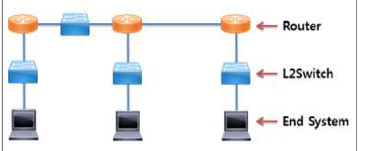

작성 기준: 업로드된 「4. 시스템 구조」 강의자료(
Module_04_시스템구조.pdf391p,[1]시스템 구조 감리사 강의자료.pdf120p) 우선 근거, 외부지식은 보조적으로만 사용(강의자료 미수록 항목은 각 문항에 명시)
정답 출처: 2016년(제17회) 정보시스템 감리사 필기시험 문제 및 답안.pdf (원본 Bold 표시 정답 - 페이지 렌더 이미지 직접 대조 확인)
정답 신뢰도: 매우 높음 (stroke-text 자동추출 + 보기 영역 렌더 확대 육안 대조 25/25 일치, 계산 문항 3개는 별도 재검산)
★ 특이 문항 2개 — 이 회차의 최대 특징:
① 78번은 "(2개 선택)" 문항으로 ②와 ④가 모두 정답이다(감리사 시험에서 매우 드문 형식).
② 91번은 전항정답이다. 보기 ①②③④가 모두 Bold이며, 내용상으로도 네 보기 전부가 틀렸음을 확인했다(PCF/DCF 설명 교차, MIMO 목적 오류, 우선권 주체 오류).
★ 텍스트 추출 주의: 100번 보기 번호가 다른 글리프(➀➁➂➃) 라 자동추출에서 누락되고, 97번 문제 지문이 "200.45."에서 잘리며, 96번 보기 ②③④가 다음 컬럼으로 분리된다. 본 해설집은 렌더 이미지로 원문을 확인하여 전사하였다.
기준 버전 주의: 본 회차는 2016년 시행분이다. SDN(85번), LTE-A(86번), NFC(81번), 웹사이트 구축 가이드(96번) 등은 이후 변화가 있으므로, 각 문항의 「관련 이론 정리」 말미에 현행(2025년 기준) 보충사항을 병기하였다.
| 번호 | 정답 | 번호 | 정답 | 번호 | 정답 |
|---|---|---|---|---|---|
| 76 | ④ | 85 | ③ | 94 | ③ |
| 77 | ③ | 86 | ③ | 95 | ① |
| 78 | ②·④ (2개 선택) | 87 | ② | 96 | ④ |
| 79 | ① | 88 | ② | 97 | ② |
| 80 | ① | 89 | ④ | 98 | ③ |
| 81 | ② | 90 | ① | 99 | ② |
| 82 | ② | 91 | 전항정답 | 100 | ④ |
| 83 | ④ | 92 | ③ | ||
| 84 | ③ | 93 | ① |
2016년 제17회 시스템구조는 네트워크 비중이 압도적으로 높고, 이례적 형식의 문항이 두 개나 등장한 회차다.
영역별 배분은 ① 네트워크·통신 10문항(87·88·89·90·91·92·97·98·100 + 81), ② 클라우드·가상화 4문항(78·80·85·94), ③ 성능·계산 3문항(82·97·98), ④ 표준·지침 인용 4문항(80·93·95·96), ⑤ 컴퓨터 구조·플랫폼 3문항(83·99 + 77), ⑥ 빅데이터·분석 1문항(76), ⑦ 응용·SCM 1문항(84), ⑧ 이동통신 1문항(86) 이다(중복 계상 포함).
이 회차의 특징 다섯 가지.
첫째, 형식이 이례적인 문항이 두 개다. 78번은 "(2개 선택)" 으로 ②·④를 모두 골라야 하고, 91번은 전항정답이다. 10개년을 통틀어 한 회차에 두 건이 함께 나온 사례는 드물다. 두 문항 모두 본 해설집에서 개별 보기마다 참·거짓 근거를 따로 제시했다.
둘째, 네트워크가 전체의 40% 를 차지한다. IPv6 확장헤더(87), MPLS(88), 라우팅 메트릭(89), 부호화(90), 무선랜(91), 블루투스(92), 서브네팅(97), 충돌·브로드캐스트 도메인(98), 전력선 통신(100) 으로, 네트워크만 확실히 잡아도 절반 가까이 득점할 수 있다.
셋째, 계산 문항이 3개(82·97·98) 로 모두 공식·정의 하나로 해결된다. 활성사용자 수(82), 서브넷 주소(97), 도메인 개수(98) 이며, 98번은 그림을 정확히 읽는 것이 관건이다.
넷째, 그림 문항이 하나(98번) 있다. 네트워크 구성도이며, 본 해설집에서는 원본 이미지 + 링크별 서술 전사를 병기했다. 나머지 24문항은 텍스트 구성이다.
다섯째, "용어의 정의를 서로 바꿔치기하는" 함정이 반복된다. PCF↔DCF(91), ACL↔SCO(92), 상류↔하류(84), 물리↔논리 파티셔닝(94), 노스바운드↔사우스바운드(85) 가 그것이다. 짝을 이루는 개념은 반드시 대비표로 정리해야 한다.
강의자료 커버리지는 네트워크·무선통신·가상화에서 양호하나, TTA 표준(80·93)·국토교통부 고시(95)·행정자치부 가이드(96) 는 미수록이라 외부지식으로 보완했다.
| 항목 | 내용 |
|---|---|
| 문서명 | 정보시스템 감리사 시스템구조 기출문제 해설집 - 2016년 제17회 |
| 대상 문항 | Q76 ~ Q100 (시스템구조) |
| 원본 출처 | 2016년(제17회) 정보시스템 감리사 필기시험 문제 및 답안.pdf (p.19~23) |
| 정답 확인 방법 | stroke-text(글리프 render mode) 자동추출 + 보기 영역 렌더 확대 육안 대조 (25/25 일치) |
| 특이 문항 | 78번 "(2개 선택)" — ②·④ 복수정답 / 91번 전항정답 |
| 그림 포함 문항 | 98번 네트워크 구성도 — 이미지 + 서술 전사 병기 |
| 계산 문항 | 82·97·98번 — 전부 재검산 완료 |
| 텍스트 추출 보정 | 100번(보기 글리프 상이) · 97번(지문 잘림) · 96번(보기 컬럼 분리) — 렌더 이미지로 원문 확인 후 전사 |
| 근거 강의자료 | Module_04_시스템구조.pdf(1.ITA/EA · 2.웹기술 · 3.응용기술 · 4.통신 프로토콜 · 5.통신 시스템 · 6.유무선 통신기술 · 7.컴퓨터 구조 · 8.성능/용량 · 9.저장기술 · 10.ITSM), [1]시스템 구조 감리사 강의자료.pdf(Ch.I 네트워크 · Ch.II CA/OS · Ch.III 최신기술) |
| 작성일 | 2026-08-20 |
군집분석(Cluster Analytics) 은 전체 데이터를 군집을 통해 구분하는 것으로 다양한 특징을 가진 관찰 대상으로부터 동일집단을 분류하는 데 사용한다. 이러한 군집분석은 크게 계층적 군집분석과 비계층적 군집분석으로 분류할 수 있다. 다음 중 계층적 군집분석으로 가장 거리가 먼 것은?
① Ward법
② 단일연결방식(Single Linkage Method)
③ 평균연결방식(Average Linkage Method)
④ K-평균(Means)법
정답 : ④번
정답 신뢰도 : 매우 높음 (원본 Bold 확인)
| 항목 | 내용 |
|---|---|
| 연도 | 2016년 (제17회) |
| 과목 | 시스템구조 |
| 문항번호 | 76번 |
| 난이도 | 중 |
| 출제주제 | 군집분석 — 계층적 기법과 비계층적 기법(K-평균)의 구분 |
군집분석은 데이터 분석 영역에서 2~3년 주기로 출제된다. 형태는 ① 계층적/비계층적 분류(본 문항), ② 연결법 거리 정의, ③ K-평균 알고리즘 절차, ④ 군집 타당성 지표다. "K-평균 = 비계층적" 한 줄이면 본 문항 유형은 해결된다.
| 연도 | 문항번호 | 핵심개념 |
|---|---|---|
| 2016 | 84 | SCM·공급사슬 |
| 2018 | 80 | AI·머신러닝 기법 |
| 2020 | 88 | 빅데이터 분석 기술 |
K-평균(K-Means)법은 비계층적(분할적) 군집분석 — 계층적이 아니다 ★★
계층적 = Ward법 + 연결법(단일·완전·평균·중심) 계열 — "연결(Linkage)"이 붙으면 계층적 ★★
계층적은 군집 수를 미리 정하지 않고, 덴드로그램을 잘라 K를 나중에 결정 ★★
비계층적은 K를 먼저 정하고 반복 최적화한다 ★★
단일연결=최단거리(사슬 효과) / 완전연결=최장거리 / 평균연결=평균거리(절충) ★★
Ward법 = 병합 시 오차제곱합(분산) 증가가 최소인 쌍을 결합 → 조밀·균등한 군집 ★★
K-평균 절차: 초기 중심 K개 선택 → 최근접 할당 → 중심 재계산 → 수렴까지 반복 ★★
K-평균의 약점: K 사전 지정 · 초기값 민감(지역 최적) · 구형 군집 가정 · 이상치 취약 ★★
K 결정: 엘보우 기법(SSE 꺾임) · 실루엣 계수(−1~1) ★★
DBSCAN은 K가 불필요하고 비구형 군집·이상치 탐지에 강하다 ★★
거리 계산 전 반드시 표준화 — 스케일이 큰 변수가 거리를 지배한다 ★★
군집분석은 비지도 학습(레이블 없음), 분류는 지도 학습 ★★
④가 비계층적인 이유
K-평균(K-Means)법은 군집 수 K를 먼저 정하고, 각 데이터를 가장 가까운 중심(centroid)에 반복 할당하며 중심을 갱신하는 분할적(Partitioning) = 비계층적 방법이다. 계층 구조(덴드로그램)를 만들지 않는다.
계층적 vs 비계층적
★ 계층적(Hierarchical) ★★
· 가까운 것끼리 ★ 순차적으로 병합(또는 분할) ★
· 결과가 ★ 덴드로그램(나무 구조) ★★ 로 표현
· ★ 군집 수를 미리 정하지 않는다 ★★
→ 나중에 원하는 높이에서 잘라 K를 결정
· 대표: ★ 단일·완전·평균·중심·Ward 연결법 ★★
★ 비계층적(Partitioning) ★★
· ★ K를 먼저 정하고 ★★ 반복 최적화
· 계층 구조 없음
· 대표: ★ K-평균, K-medoids(PAM), DBSCAN* ★★
(*DBSCAN은 밀도 기반이라 K도 불필요)
| 방법 | 유형 |
|---|---|
| Ward법 | 계층적(분산 증가 최소화 병합) ★★ |
| 단일연결(Single Linkage) | 계층적(최단 거리) ★★ |
| 평균연결(Average Linkage) | 계층적(평균 거리) ★★ |
| K-평균(K-Means) | 비계층적 ★★ |
→ 정답 ④
K-평균 알고리즘의 동작
① ★ K개의 초기 중심(centroid)을 임의 선택 ★
↓
② 각 데이터를 ★ 가장 가까운 중심의 군집에 할당 ★★
↓
③ 각 군집의 ★ 평균으로 중심을 재계산 ★★
↓
④ ★ 중심이 더 이상 변하지 않을 때까지 ②~③ 반복 ★★
| K-평균 특성 | 내용 |
|---|---|
| 목적함수 | 군집 내 제곱합(SSE) 최소화 ★★ |
| 장점 | 빠르고 대용량에 적합(O(nkt)) ★★ |
| 단점 1 | K를 미리 정해야 함 ★★ |
| 단점 2 | 초기값에 따라 결과가 달라짐(지역 최적) ★★ |
| 단점 3 | 구형(spherical) 군집만 잘 찾음 ★★ |
| 단점 4 | 이상치에 민감(평균 사용) ★★ |
K 결정 방법: 엘보우(Elbow) 기법(SSE 감소가 꺾이는 지점), 실루엣(Silhouette) 계수, 갭 통계량을 쓴다. ★★
| 항목 | 내용 |
|---|---|
| 원리 | 병합 시 군집 내 분산(오차제곱합) 증가가 최소인 쌍을 결합 ★★ |
| 유형 | 계층적(병합형) ★★ |
| 특징 | 크기가 비슷하고 조밀한 군집을 만드는 경향 ★★ |
| 활용 | 실무에서 가장 널리 쓰이는 계층적 방법 ★★ |
Ward법의 판단 기준
두 군집을 합쳤을 때
↓
★ 오차제곱합(SSE)이 얼마나 증가하는가 ★★
↓
★ 증가폭이 가장 작은 쌍을 병합 ★★
↓
결과: 군집이 조밀하고 크기가 균등해진다 ✓
혼동 주의: Ward법은 "평균"을 쓰지만 K-평균과 전혀 다르다. Ward는 병합 기준으로 분산을 쓰는 계층적 방법이다. ★★
| 항목 | 내용 |
|---|---|
| 거리 정의 | 두 군집에서 가장 가까운 두 점 사이의 거리(최단 거리) ★★ |
| 별칭 | 최단연결법, 최근접 이웃법 ★★ |
| 장점 | 길게 뻗은(비구형) 군집도 탐지 ★★ |
| 단점 | 사슬 효과(Chaining Effect) — 가늘게 이어진 점들이 하나로 묶임 ★★ |
연결법(Linkage) 3종 비교
군집 A 군집 B
● ● ● ○ ○ ○
★ 단일연결 ★: 가장 ★ 가까운 ★ 쌍의 거리 (min)
★ 완전연결 ★: 가장 ★ 먼 ★ 쌍의 거리 (max)
★ 평균연결 ★: 모든 쌍 거리의 ★ 평균 ★
| 연결법 | 거리 | 특징 |
|---|---|---|
| 단일연결 | 최소 ★★ | 사슬 효과, 비구형 탐지 ★ |
| 완전연결 | 최대 ★★ | 조밀·구형 군집, 이상치 민감 ★ |
| 평균연결 | 평균 ★★ | 둘의 절충 ★★ |
| 중심연결 | 중심 간 거리 ★ | 역전 현상 가능 ★ |
| Ward | 분산 증가량 ★★ | 균등·조밀 ★★ |
| 항목 | 내용 |
|---|---|
| 거리 정의 | 두 군집의 모든 점 쌍 거리의 평균 ★★ |
| 유형 | 계층적 ★★ |
| 특징 | 단일연결과 완전연결의 중간 성질 ★★ |
| 별칭 | UPGMA ★ |
소거 요령: ①②③은 모두 "무엇을 기준으로 병합할 것인가" 를 정의한 계층적 병합 기준이다. ④만 "K개로 나눈다" 는 완전히 다른 접근이다.
보기 성격 ① Ward 병합 기준 ★ ② 단일연결 병합 기준 ★ ③ 평균연결 병합 기준 ★ ④ K-평균 ★ 분할 알고리즘 ★★ "연결(Linkage)"이라는 단어가 붙으면 무조건 계층적이다. ★★
계층적 군집분석의 2방향
| 방식 | 내용 |
|---|---|
| 병합형(Agglomerative) | 각 데이터를 개별 군집으로 시작 → 가까운 것끼리 합침 ★★ |
| 분리형(Divisive) | 전체를 하나로 시작 → 쪼개 나감 ★★ |
덴드로그램(Dendrogram)
거리
│ ┌──────────────┐
│ ┌──┴──┐ ┌──┴──┐
│ ┌─┴─┐ │ ┌─┴─┐ │
│ A B C D E F
└───────────────────────────
★ 원하는 높이에서 수평으로 자르면 군집 수가 정해진다 ★★
· 높게 자르면 → 군집 수 적음
· 낮게 자르면 → 군집 수 많음
| 계층적의 장단점 | 내용 |
|---|---|
| 장점 | 군집 수를 미리 정할 필요 없음, 계층 구조 파악 가능 ★★ |
| 단점 | 계산량 O(n³)~O(n²log n) → 대용량 부적합 ★★ |
| 단점 | 한 번 병합하면 되돌릴 수 없음 ★★ |
거리(유사도) 측도
| 측도 | 내용 |
|---|---|
| 유클리드 거리 | 직선 거리(가장 일반적) ★★ |
| 맨해튼 거리 | 좌표축 방향 합(L1) ★★ |
| 민코프스키 거리 | 유클리드·맨해튼의 일반화 ★ |
| 마할라노비스 거리 | 변수 간 상관·분산을 반영 ★★ |
| 코사인 유사도 | 방향 유사성(문서·텍스트) ★★ |
| 자카드 계수 | 이진·집합 데이터 ★ |
$$d_{Euclid}(x,y) = \sqrt{\sum_{i}(x_i - y_i)^2}, \qquad d_{Manhattan}(x,y) = \sum_{i}|x_i - y_i|$$
★ 전처리 필수 — 표준화(Scaling)
연봉(단위: 원, 3천만~1억)과 나이(20~60)를 함께 쓰면
↓
★ 연봉의 스케일이 압도적으로 커서 거리를 지배 ★★
↓
★ 나이는 사실상 무시된다 ★★
↓
★ 반드시 표준화(Z-score)나 정규화(Min-Max) 후 군집화 ★★
주요 군집 알고리즘 분류
| 유형 | 알고리즘 | 특징 |
|---|---|---|
| 계층적 | Ward·단일·완전·평균 연결 ★★ | 덴드로그램 ★ |
| 분할적 | K-Means, K-Medoids(PAM) ★★ | K 지정 필요 ★ |
| 밀도 기반 | DBSCAN, OPTICS ★★ | K 불필요·이상치 탐지·비구형 ★★ |
| 모델 기반 | GMM(가우시안 혼합) ★★ | 확률적 소속(soft) ★ |
| 격자 기반 | STING, CLIQUE ★ | 대용량 ★ |
| 그래프 기반 | 스펙트럴 클러스터링 ★ | 복잡한 형태 ★ |
DBSCAN이 K-평균과 다른 점
· ★ 군집 수를 정할 필요가 없다 ★★
· ★ 임의 형태(초승달·고리 모양)의 군집도 탐지 ★★
· ★ 이상치(noise)를 별도로 분류 ★★
· 대신 ★ 밀도 파라미터(eps, minPts) ★ 를 정해야 함
군집 타당성 평가
| 지표 | 내용 |
|---|---|
| SSE(관성) | 군집 내 제곱합 — 작을수록 조밀 ★★ |
| 실루엣 계수 | −1~1, 1에 가까울수록 좋음 ★★ |
| Dunn 지수 | 군집 간 거리 / 군집 내 거리 ★ |
| Davies-Bouldin | 작을수록 좋음 ★ |
| 외부 지표 | ARI, NMI(정답 레이블이 있을 때) ★ |
엘보우(Elbow) 기법
SSE
│●
│ ●
│ ●
│ ● ← ★ 꺾이는 지점(elbow) = 적정 K ★★
│ ●●●●●●
└────────────── K
★ K를 늘려도 SSE 감소폭이 작아지는 지점을 선택 ★★
군집분석 vs 분류(Classification)
| 항목 | 군집분석 | 분류 |
|---|---|---|
| 학습 유형 | 비지도 학습 ★★ | 지도 학습 ★★ |
| 정답 레이블 | 없음 ★★ | 있음 ★★ |
| 목적 | 숨은 구조 발견 ★★ | 레이블 예측 ★★ |
| 대표 | K-Means, 계층적 ★ | 의사결정트리, SVM ★ |
감리사 시험 단골: "군집분석은 비지도 학습" 이라는 점과, 분류(지도)와의 구분이다. ★★
현행(2025년 기준) 보충사항
| 항목 | 변화 |
|---|---|
| K-Means++ | 초기 중심 선택 개선으로 안정성 향상 ★★ |
| HDBSCAN | DBSCAN 개선(밀도 가변) ★★ |
| 임베딩 + 군집화 | 딥러닝 표현학습 후 군집화 ★★ |
| 대규모 처리 | Mini-Batch K-Means, 분산 처리 ★ |
| 자동화 | AutoML의 군집 수 자동 탐색 ★ |
강의자료 근거:
Module_04_시스템구조.pdf3.응용기술 - 데이터 분석/마이닝(p.148~),[1]시스템 구조 감리사 강의자료.pdfChapter III 최신기술 - 빅데이터 분석(p.142) 에 수록되어 있다.
군집분석은 고객 세분화·이상 탐지·데이터 탐색에 널리 쓰인다.
| 활용 | 내용 |
|---|---|
| 고객 세분화 | 구매 패턴별 그룹 도출 → 타깃 마케팅 ★★ |
| 이상 탐지 | 어느 군집에도 속하지 않는 데이터 식별 ★★ |
| 문서 분류 | 주제별 자동 그룹핑 ★★ |
| 이미지 압축 | 색상 K-평균 양자화 ★ |
| 네트워크 분석 | 트래픽 패턴 군집 ★ |
흔한 결함 1: 변수 스케일을 표준화하지 않고 군집화해, 단위가 큰 변수 하나가 결과를 지배한 사례다. 표준화는 필수 전처리다. ★★
흔한 결함 2: K를 임의로 정하고(예: "부서가 5개니 K=5") 타당성 지표를 확인하지 않아, 의미 없는 군집이 도출된 사례다. 엘보우·실루엣으로 검증해야 한다. ★★
흔한 결함 3: K-평균으로 초승달 모양 데이터를 군집화해, 구형 가정 때문에 잘못 분할된 사례다. DBSCAN·스펙트럴 클러스터링이 적합하다. ★★
흔한 결함 4: 초기 중심 무작위 선택으로 실행할 때마다 결과가 달라져, 재현성이 없었던 사례다. K-Means++·시드 고정이 필요하다. ★★
흔한 결함 5: 10만 건 이상 데이터에 계층적 군집분석을 적용해, 메모리 부족과 장시간 연산이 발생한 사례다. 대용량에는 K-평균 계열이 적합하다. ★★
감리 관점: 분석 사업에서는 ① 전처리(결측·이상치·표준화) 절차가 문서화되었는가, ② 군집 수 결정 근거가 있는가, ③ 군집 결과의 업무적 해석이 제시되었는가, ④ 재현 가능한 파라미터·시드가 기록되었는가를 점검한다. ★★
군집분석 문항은 계층적/비계층적 분류가 거의 전부다.
절대 암기
$$\boxed{\text{계층적: Ward · 단일 · 완전 · 평균 · 중심 연결법}}$$
$$\boxed{\text{비계층적(분할적): K-Means · K-Medoids} \quad \text{밀도: DBSCAN}}$$
참인 서술 (○)
| 항목 |
|---|
| K-평균은 비계층적(분할적) 군집분석 ★★ |
| 연결법(Linkage) 계열과 Ward법은 계층적 ★★ |
| 계층적은 군집 수를 미리 정할 필요가 없다 ★★ |
| 계층적 결과는 덴드로그램으로 표현 ★★ |
| 단일연결은 최단, 완전연결은 최장, 평균연결은 평균 거리 ★★ |
| Ward법은 병합 시 분산 증가가 최소인 쌍을 결합 ★★ |
| K-평균은 초기값·K에 민감하고 구형 군집에 적합 ★★ |
| 군집분석은 비지도 학습 ★★ |
| DBSCAN은 K가 불필요하고 이상치를 분리 ★★ |
| 거리 계산 전 표준화가 필요 ★★ |
거짓인 서술 (✗) — 출제 단골
| 틀린 서술 | 실제 |
|---|---|
| K-평균은 계층적 군집분석이다 | 비계층적(← ④) ★★ |
| Ward법은 비계층적이다 | 계층적 ★★ |
| 계층적 군집분석은 K를 먼저 정해야 한다 | 불필요 ★★ |
| 단일연결법은 가장 먼 거리를 사용한다 | 가장 가까운 거리 ★★ |
| 군집분석은 지도 학습이다 | 비지도 학습 ★★ |
| K-평균은 임의 형태 군집도 잘 찾는다 | 구형에 적합 ★★ |
감점 포인트
| 실수 | 예방 |
|---|---|
| Ward법을 비계층적으로 오인 | "연결·병합 기준"은 전부 계층적 ★★ |
| K-평균과 K-medoids 혼동 | 둘 다 비계층적 ★ |
| 군집/분류 혼동 | 레이블 유무 ★★ |
트랜잭션 성능을 예측하는 TPC(Transaction Processing Performance Council) 벤치마크인 TPC-C의 트랜잭션 유형이 아닌 것은?
① 신규주문(new-order)
② 주문상태(order-status)
③ 매매결과(trade-result)
④ 배송(delivery)
정답 : ③번
정답 신뢰도 : 매우 높음 (원본 Bold 확인)
| 항목 | 내용 |
|---|---|
| 연도 | 2016년 (제17회) |
| 과목 | 시스템구조 |
| 문항번호 | 77번 |
| 난이도 | 중상 |
| 출제주제 | TPC 벤치마크 — TPC-C의 5대 트랜잭션 유형 |
TPC 벤치마크는 성능·규모산정 영역의 단골로 2~3년 주기로 출제된다. 형태는 ① 트랜잭션 유형 판정(본 문항), ② 벤치마크-용도 매칭, ③ tpmC 정의, ④ 규모산정 적용이다. 2018년 78번(TPC-E 상세)과 함께 정리하면 효율적이다.
| 연도 | 문항번호 | 핵심개념 |
|---|---|---|
| 2018 | 78 | TPC-E 벤치마크 |
| 2017 | 80 | HW 규모산정 보정치 |
| 2020 | 87 | 성능 지표 |
TPC-C 5대 트랜잭션: 신규주문(New-Order) · 지불(Payment) · 주문상태(Order-Status) · 배송(Delivery) · 재고수준(Stock-Level) ★★
매매결과(Trade-Result)는 TPC-E의 트랜잭션 — "trade(매매)"가 보이면 TPC-E ★★
TPC-C = 도매 유통 주문 모델(tpmC) / TPC-E = 증권 거래 모델(tpsE) ★★
tpmC = 분당 처리한 "New-Order" 트랜잭션 수 — 전체 트랜잭션 수가 아니다 ★★
New-Order 비중 45%, Payment 43%, 나머지 3종은 각 약 4% ★★
TPC-E는 테이블 33개·트랜잭션 12종으로 TPC-C(9개·5종)보다 복잡하고 읽기 비중이 높다 ★★
TPC-H·TPC-DS는 의사결정지원(DW) 벤치마크 — OLTP에 쓰면 안 된다 ★★
SPECint/SPECfp=CPU, SPECjbb=Java 서버, LINPACK=HPC(TOP500) ★★
TPC-C는 Warehouse 수를 늘려야 성능이 오르는 구조 → 데이터량도 함께 커진다 ★★
공시 tpmC는 이상적 조건의 수치 — 가상화·실 업무 특성 반영을 위해 BMT 필수 ★★
③이 TPC-C가 아닌 이유 — TPC-E의 트랜잭션이다
TPC-C는 "도매 유통업체의 주문 처리" 를 모델로 한 OLTP 벤치마크이며, 매매·증권 개념이 없다. 매매결과(Trade-Result) 는 증권거래를 모델로 한 TPC-E의 트랜잭션이다.
TPC-C의 5대 트랜잭션 (도매업 주문 모델)
① ★ 신규주문(New-Order) ★★ — 주문 입력 비중 약 45%
② ★ 지불(Payment) ★★ — 대금 결제 비중 약 43%
③ ★ 주문상태(Order-Status) ★★ — 주문 조회 비중 약 4%
④ ★ 배송(Delivery) ★★ — 일괄 출고 비중 약 4%
⑤ ★ 재고수준(Stock-Level) ★★ — 재고 확인 비중 약 4%
★ 보기 ①②④가 여기에 있고, ③(매매결과)은 없다 ★★
| TPC-C 트랜잭션 | 성격 |
|---|---|
| New-Order | 읽기·쓰기 혼합, 가장 빈번 ★★ |
| Payment | 갱신 중심(경합 큼) ★★ |
| Order-Status | 읽기 전용 ★★ |
| Delivery | 배치성 갱신(비동기 가능) ★★ |
| Stock-Level | 읽기 전용(대량 스캔) ★★ |
→ 정답 ③
TPC-C vs TPC-E — 모델이 다르다
| 항목 | TPC-C | TPC-E |
|---|---|---|
| 업무 모델 | 도매 유통(주문·배송) ★★ | 증권 거래(brokerage) ★★ |
| 발표 | 1992년 ★ | 2006년 ★ |
| 지표 단위 | tpmC ★★ | tpsE ★★ |
| 트랜잭션 수 | 5종 ★★ | 12종 ★★ |
| 테이블 수 | 9개 ★★ | 33개 ★★ |
| 읽기:쓰기 | 쓰기 비중 높음 ★ | 읽기 비중 높음(약 9:1) ★★ |
| 참조 무결성 | 약함 ★ | 강함(제약조건 다수) ★★ |
| 현황 | 여전히 널리 인용 ★★ | 현대적이나 인용 적음 ★ |
TPC-E의 주요 트랜잭션(12종 중 일부)
· ★ Trade-Order ★ — 매매 주문
· ★ Trade-Result ★★ — ★ 매매 결과(보기 ③) ★★
· Trade-Status — 매매 상태
· Trade-Lookup — 매매 조회
· Market-Feed — 시세 수신
· Customer-Position — 고객 포지션
· Broker-Volume — 중개인 거래량
↓
★ 전부 "증권" 용어 → TPC-C와 명확히 구별 ★★
판별 요령: "trade(매매)"라는 단어가 나오면 TPC-E다. TPC-C는 order·payment·delivery·stock 등 "유통" 용어만 쓴다. ★★
| 항목 | 내용 |
|---|---|
| 역할 | 고객 주문을 입력하는 핵심 트랜잭션 ★★ |
| 비중 | 전체의 약 45% ★★ |
| 지표 기준 | tpmC는 이 New-Order 처리량으로 산출 ★★ |
| 특성 | 평균 10개 품목 주문, 읽기·쓰기 혼합 ★ |
★ tpmC의 정확한 정의 ★★
tpmC = ★ 분당 처리한 New-Order 트랜잭션 수 ★★
↓
· 다른 4종 트랜잭션도 규정 비율로 함께 수행해야 하지만
· ★ 성능 수치로 세는 것은 New-Order뿐 ★★
↓
★ 감리사 시험 단골 논점 ★★
| 항목 | 내용 |
|---|---|
| 역할 | 고객의 최근 주문 상태 조회 ★★ |
| 비중 | 약 4% ★ |
| 특성 | 읽기 전용 ★★ |
| 항목 | 내용 |
|---|---|
| 역할 | 미배송 주문 일괄 처리 ★★ |
| 비중 | 약 4% ★ |
| 특성 | 배치성 — 비동기 실행 허용 ★★ |
소거 요령: 보기의 "업무 용어"만 보면 된다.
보기 용어 성격 ① 신규주문 유통 ✓ ★ ② 주문상태 유통 ✓ ★ ③ 매매결과 ★ 증권 ★★ ✗ ④ 배송 유통 ✓ ★ 셋은 "주문·배송"이고 하나만 "매매" 다. 한 눈에 이질적인 것을 고르면 된다. ★★
TPC 벤치마크 계열 총정리
| 벤치마크 | 대상 | 지표 | 모델 |
|---|---|---|---|
| TPC-C | OLTP ★★ | tpmC ★★ | 도매 주문 ★★ |
| TPC-E | OLTP(현대) ★★ | tpsE ★★ | 증권 거래 ★★ |
| TPC-H | 의사결정지원(임의 질의) ★★ | QphH ★★ | 데이터 웨어하우스 ★ |
| TPC-DS | DSS(현대·복합) ★★ | QphDS ★★ | 소매 DW ★ |
| TPC-DI | 데이터 통합(ETL) ★ | — | ★ |
| TPC-VMS | 가상화 환경 ★ | — | ★ |
| TPCx-HS | 하둡 정렬 ★ | — | 빅데이터 ★ |
| TPCx-AI | AI 워크로드 ★ | — | 최신 ★ |
| TPC-Energy | 전력 효율 ★ | Watts/perf | 부가 ★ |
용도별 선택
· ★ 거래 처리(주문·결제) 서버 ★ → TPC-C / TPC-E ★★
· ★ 분석·조회 중심(DW) ★ → TPC-H / TPC-DS ★★
· ★ 순수 CPU 연산 ★ → SPEC CPU ★★
· ★ Java 서버 ★ → SPECjbb ★
· ★ 웹 서버 ★ → SPECweb ★
tpmC의 실무적 의미와 한계
| 항목 | 내용 |
|---|---|
| 정의 | 분당 New-Order 트랜잭션 수 ★★ |
| 용도 | 서버 규모산정의 기준 지표 ★★ |
| 동반 공시 | 가격(price/tpmC), 구성, 검증 감사 ★★ |
| tpmC의 한계 | 내용 |
|---|---|
| 이상적 조건 | 최적 튜닝 환경의 수치 ★★ |
| 업무 특성 미반영 | 실제 업무와 트랜잭션 성격이 다름 ★★ |
| 가상화·클라우드 | 대표성이 크게 떨어짐 ★★ |
| 공시 감소 | 최근 신규 공시가 줄어듦 ★ |
★ 감리 관점 — tpmC만 믿으면 안 되는 이유 ★★
카탈로그 tpmC가 100만인 서버를 도입했는데
↓
실제 업무는 ★ 복잡한 조인과 대량 스캔 중심 ★
↓
★ TPC-C의 단순 주문 트랜잭션과 성격이 전혀 다름 ★★
↓
★ CPU는 남고 I/O·메모리가 병목 ★★
↓
★ 실 업무 유사 부하 테스트(BMT)가 필요 ★★
규모산정에서의 활용
$$\text{요구 tpmC} = \text{기준 tpmC} \times \prod(\text{보정치})$$
| 보정치(OLTP CPU) | 내용 |
|---|---|
| 데이터베이스 크기 보정 | DB 규모 ★★ |
| 애플리케이션 부하 보정 | 업무 복잡도 ★★ |
| 피크타임 부하 보정 | 최대 부하 여유 ★★ |
| 클러스터 보정 | 동기화 오버헤드 ★★ |
2017년 80번 문항과 직결된다. TPC 지표는 규모산정의 입력값이다. ★★
TPC-C 데이터베이스 구조(참고)
| 테이블 | 역할 |
|---|---|
| Warehouse | 창고(확장 단위) ★★ |
| District | 지역(창고당 10개) ★ |
| Customer | 고객 ★ |
| Order / New-Order / Order-Line | 주문 ★★ |
| Item | 품목(10만 건 고정) ★ |
| Stock | 재고 ★★ |
| History | 결제 이력 ★ |
TPC-C의 확장 규칙
★ 성능을 높이려면 Warehouse 수를 늘려야 한다 ★★
↓
· Warehouse 1개당 최대 tpmC가 제한됨(약 12.86)
· ★ 즉, 데이터량도 함께 커진다 ★★
↓
★ "작은 DB에 빠른 CPU"로 수치를 부풀릴 수 없게 설계 ★★
다른 벤치마크와의 비교
| 벤치마크 | 측정 대상 |
|---|---|
| SPECint / SPECfp | CPU 정수·부동소수 연산 ★★ |
| SPECjbb | Java 서버 처리량 ★★ |
| SPECweb | 웹 서버 ★ |
| LINPACK | HPC 부동소수 성능(TOP500) ★★ |
| SysBench / HammerDB | 오픈소스 DB 부하 도구 ★★ |
| JMeter / nGrinder | 애플리케이션 부하 테스트 ★★ |
실무 권장: 공식 TPC 수치보다 HammerDB(TPC-C 유사)·JMeter로 자체 환경에서 측정하는 것이 현실적이다. ★★
현행(2025년 기준) 보충사항
| 항목 | 변화 |
|---|---|
| TPC-C 공시 | 신규 공시 급감(레거시화) ★★ |
| 클라우드 성능 | 인스턴스 타입·IOPS 기준으로 대체 ★★ |
| TPCx 계열 | 빅데이터·AI 벤치마크 신설 ★★ |
| MLPerf | AI 학습·추론 표준 벤치마크 ★★ |
| 실무 | 실 워크로드 기반 BMT가 표준 ★★ |
강의자료 근거:
Module_04_시스템구조.pdf8.성능/용량 - 벤치마크(p.335~),[1]시스템 구조 감리사 강의자료.pdfChapter II CA/OS - 성능 평가(p.52) 에 수록되어 있다.
벤치마크 지표는 장비 선정과 규모산정의 근거 자료다.
| 점검 항목 | 확인 사항 |
|---|---|
| 지표 적합성 | OLTP에 TPC-H를 쓰는 등 오용이 없는가 ★★ |
| 업무 유사성 | 실제 워크로드와 성격이 유사한가 ★★ |
| BMT 수행 | 실 데이터·실 쿼리로 검증했는가 ★★ |
| 가격 대비 성능 | price/tpmC 비교 ★★ |
| 구성 동일성 | 공시 구성과 실제 도입 구성이 같은가 ★★ |
흔한 결함 1: DW 서버를 tpmC 기준으로 선정해, 복합 분석 질의에서 성능이 크게 부족했던 사례다. DW는 TPC-H/DS 기준이어야 한다. ★★
흔한 결함 2: 공시 tpmC를 그대로 요구 성능과 비교했으나, 공시 구성은 최고 사양 스토리지·메모리였고 실제 도입은 축소 구성이어서 성능이 미달한 사례다. ★★
흔한 결함 3: 가상화 환경에 물리 서버 기준 tpmC를 적용해, 가상화 오버헤드(10~20%)를 반영하지 못한 사례다. ★★
흔한 결함 4: BMT 없이 카탈로그 수치만으로 도입해, 개통 후 성능 미달로 추가 증설 예산이 필요해진 사례다. ★★
흔한 결함 5: BMT를 수행했으나 데이터량이 실제의 1/100 이어서, 캐시에 전부 적재된 비현실적 결과를 얻은 사례다. 실 데이터 규모 반영이 필수다. ★★
TPC 문항은 벤치마크-지표-모델 3중 매칭이 핵심이다.
절대 암기
$$\boxed{\text{TPC-C 5대 트랜잭션: 신규주문 · 지불 · 주문상태 · 배송 · 재고수준}}$$
$$\boxed{\text{TPC-C(tpmC, 도매) · TPC-E(tpsE, 증권) · TPC-H·DS(DW)}}$$
참인 서술 (○)
| 항목 |
|---|
| TPC-C는 신규주문·지불·주문상태·배송·재고수준 5종 ★★ |
| 매매결과(Trade-Result)는 TPC-E의 트랜잭션 ★★ |
| tpmC는 분당 New-Order 트랜잭션 수 ★★ |
| TPC-C는 도매 주문, TPC-E는 증권 거래 모델 ★★ |
| TPC-H·TPC-DS는 의사결정지원(DW) 벤치마크 ★★ |
| TPC-E가 TPC-C보다 테이블·트랜잭션이 많고 읽기 비중이 높다 ★★ |
| SPECint/fp는 CPU, LINPACK은 HPC 성능 ★★ |
| 공시 수치는 이상적 조건이므로 BMT가 필요 ★★ |
거짓인 서술 (✗) — 출제 단골
| 틀린 서술 | 실제 |
|---|---|
| 매매결과가 TPC-C의 트랜잭션이다 | TPC-E(← ③) ★★ |
| tpmC는 전체 트랜잭션 수를 센다 | New-Order만 ★★ |
| TPC-H로 OLTP 성능을 평가한다 | DW용 ★★ |
| TPC-C는 증권거래 모델이다 | 도매 주문 ★★ |
| TPC-E의 지표는 tpmE다 | tpsE ★ |
감점 포인트
| 실수 | 예방 |
|---|---|
| TPC-C/TPC-E 트랜잭션 혼동 | "trade"가 보이면 TPC-E ★★ |
| tpmC 정의 부정확 | New-Order 기준 ★★ |
지역적으로 분산된 IT자원의 할당과 사용을 향상시키기 위한 클러스터 방식 중 고가용성(high-availability) 클러스터에 대한 설명으로 가장 적절한 것은? (2개 선택)
① IT자원의 중앙관리를 유지하면서 IT자원량을 증가시키기 위하여 작업부하를 분산시키는 방식이다.
② 다중 노드의 실패 이벤트에 대해 시스템 가용성을 유지하고 클러스터된 IT자원의 전부 혹은 일부를 중복 구현한다.
③ 클러스터 관리 플랫폼 내에 내장 혹은 분리된 IT자원을 설정하는 특정 메커니즘을 구현한다.
④ 실패조건을 모니터링하고 실패된 노드로부터 작업부하를 자동으로 변경하는 대체 작동시스템 메커니즘을 구현한다.
정답 : ②번, ④번 (2개 선택)
정답 신뢰도 : 매우 높음 (원본 Bold 확인 — ②·④ 모두 Bold, 문제 지문에 "(2개 선택)" 명시)
★ 이례적 형식: 감리사 시험에서 복수 선택을 명시적으로 요구하는 문항은 매우 드물다. 본 회차의 91번(전항정답) 과 함께 2016년의 특징적 문항이다.
| 항목 | 내용 |
|---|---|
| 연도 | 2016년 (제17회) |
| 과목 | 시스템구조 |
| 문항번호 | 78번 |
| 난이도 | 중상 |
| 출제주제 | 클러스터 유형 — 고가용성(HA) 클러스터의 특징 ★ 2개 선택 문항 ★ |
클러스터·고가용성은 시스템구조의 핵심 주제로 거의 매년 출제된다. 형태는 ① 클러스터 유형 구분(본 문항), ② 페일오버·스플릿브레인, ③ 가용성 계산, ④ 이중화 설계다. 본 문항은 "(2개 선택)"이라는 이례적 형식이므로, 지문의 지시사항을 끝까지 읽는 습관이 중요함을 보여준다.
| 연도 | 문항번호 | 핵심개념 |
|---|---|---|
| 2016 | 94 | 서버 파티셔닝 |
| 2018 | 96 | 부하분산·DNS 라운드로빈 |
| 2020 | 92 | 가용성·이중화 |
★ 이 문항은 "(2개 선택)" — ②와 ④가 모두 정답이다. 지문의 지시사항을 반드시 확인하라 ★★
HA 클러스터의 2대 요소: ① 자원 중복 구현(Redundancy) ② 자동 페일오버(Failover) ★★
둘 중 하나만 있으면 고가용성이 아니다 — 중복만 있으면 수동 복구, 전환만 있으면 넘길 곳이 없다 ★★
①은 부하분산(Load Balancing) 클러스터의 설명 — "자원량 증가·작업부하 분산"은 성능 목적 ★★
③은 모든 클러스터에 해당하는 일반 서술이라 HA를 구별해 주지 못한다 ★★
클러스터 유형별 1차 목적: HA=가용성 / LB=성능·처리량 / HPC=병렬 연산 ★★
HA 구성 요소: 하트비트 · 가상 IP(VIP) · 공유 스토리지 · 쿼럼 · 펜싱(STONITH) ★★
스플릿 브레인 = 두 노드가 동시에 Active → 데이터 손상, 쿼럼·펜싱·다중 하트비트로 방지 ★★
가용성 = MTBF/(MTBF+MTTR) — 클러스터는 주로 MTTR을 줄여 가용성을 높인다 ★★
Active-Standby(단순·대기자원 유휴) vs Active-Active(자원 활용·일관성 복잡, N-1 용량 필요) ★★
페일백은 원인 미해결 시 플래핑 위험 → 실무는 수동 페일백 선호 ★★
검증되지 않은 HA는 HA가 아니다 — 정기 페일오버 시험이 감리 필수 점검 항목 ★★
②와 ④가 정답인 이유 — HA 클러스터의 정의 그 자체
고가용성(HA) 클러스터는 "장애가 나도 서비스가 끊기지 않게 하는 것" 이 목적이다. 이를 위해 반드시 ① 자원을 중복 구성하고, ② 장애를 감지해 자동으로 넘겨주는(Failover) 메커니즘을 갖춘다. ②는 전자를, ④는 후자를 서술한다.
HA 클러스터의 2대 요소
★ ② 중복성(Redundancy) ★★
· 다중 노드로 구성
· 클러스터 자원의 전부 또는 일부를 ★ 중복 구현 ★
· 한 노드가 죽어도 ★ 다른 노드에 같은 자원이 있다 ★★
★ ④ 자동 페일오버(Failover) ★★
· ★ 하트비트로 실패 조건을 모니터링 ★★
· 장애 감지 시 ★ 작업부하를 정상 노드로 자동 이관 ★★
· 사람이 개입하지 않아도 서비스 지속 ✓
★ 둘 중 하나만 있으면 고가용성이 성립하지 않는다 ★★
· 중복만 있고 자동 전환이 없으면 → 수동 복구(다운타임 발생)
· 자동 전환만 있고 중복 자원이 없으면 → 넘길 곳이 없음
→ 정답 ②, ④
HA 클러스터의 동작 흐름
[Active 노드] ←── ★ 하트비트(Heartbeat) ★★ ──→ [Standby 노드]
│ │
서비스 제공 대기 중
│
★ 장애 발생 ★
↓
★ 하트비트 단절 감지 ★★
↓
★ 페일오버 시작 ★★
· 공유 스토리지 소유권 이전
· ★ 가상 IP(VIP) 이동 ★★
· 서비스 프로세스 기동
↓
[Standby → Active로 승격] ✓ 서비스 재개
| 구성 요소 | 역할 |
|---|---|
| 하트비트 | 노드 생존 확인(전용 네트워크 권장) ★★ |
| 가상 IP(VIP) | 클라이언트가 보는 대표 주소 — 노드 간 이동 ★★ |
| 공유 스토리지 | 데이터 공유(SAN·공유디스크) ★★ |
| 쿼럼(Quorum) | 스플릿 브레인 방지 ★★ |
| 펜싱(Fencing/STONITH) | 오작동 노드 강제 격리 ★★ |
| 항목 | 내용 |
|---|---|
| 실제 유형 | 부하분산(Load Balancing) 클러스터 ★★ |
| 목적 | 성능·처리량 향상(Scale-Out) ★★ |
| HA와의 차이 | HA는 "가용성", LB는 "성능"이 1차 목적 ★★ |
①의 서술을 뜯어보면
"IT자원량을 ★ 증가 ★ 시키기 위하여
★ 작업부하를 분산 ★ 시키는 방식"
↑
★ 이것은 처리 용량을 늘리는 것 = 부하분산 ★★
★ 장애 대응(가용성)에 관한 서술이 전혀 없다 ★★
| 클러스터 유형 | 1차 목적 |
|---|---|
| 고가용성(HA) | 장애 시 서비스 연속성 ★★ |
| 부하분산(LB) | 성능·처리량 ★★ |
| 고성능(HPC) | 대규모 병렬 연산 ★★ |
| 스토리지 클러스터 | 용량·데이터 가용성 ★ |
주의 — 실무에서는 결합된다: 부하분산 클러스터도 노드 장애 시 나머지가 처리하므로 부수적으로 가용성이 향상된다. 그러나 "정의상 1차 목적" 을 묻는 문항에서는 구분해야 한다. ★★
| 항목 | 내용 |
|---|---|
| 문제점 | HA에 고유한 특징이 아님 ★★ |
| 성격 | 모든 클러스터가 갖는 일반적 관리 기능 ★★ |
| 판단 | "고가용성" 설명으로는 부적절 ★★ |
③이 오답인 이유
"클러스터 관리 플랫폼 내에 내장 혹은 분리된
IT자원을 설정하는 특정 메커니즘을 구현한다"
↓
★ 부하분산 클러스터도, HPC 클러스터도 모두 해당 ★★
↓
★ HA를 다른 유형과 구별해 주지 못한다 ★★
↓
★ "가용성"·"장애"·"중복"·"전환" 중 어떤 단어도 없다 ★★
판별 요령: HA 문항의 정답에는 반드시 "장애·실패·중복·전환·가용성" 중 하나가 등장한다. ③에는 전혀 없다. ★★
정답 2개의 관계 — 서로 보완적
| 보기 | HA의 어느 측면 | 없으면? |
|---|---|---|
| ② | 중복성(무엇을 준비하는가) ★★ | 넘겨받을 자원이 없다 ★★ |
| ④ | 페일오버(어떻게 전환하는가) ★★ | 수동 복구 → 다운타임 ★★ |
출제 의도: HA를 "중복 + 자동 전환"이라는 두 축으로 이해하고 있는지를 확인하는 문항이다. 하나만 고르면 절반의 이해라는 뜻이다. ★★
클러스터 구성 방식
| 방식 | 내용 |
|---|---|
| Active-Standby | 한 노드만 서비스, 나머지는 대기 ★★ |
| Active-Active | 모든 노드가 동시에 서비스 ★★ |
| N+1 | N개 운영 + 1개 예비 ★★ |
| N-to-1 | 여러 노드가 하나의 예비를 공유 ★ |
| N-to-N | 상호 백업 ★ |
Active-Standby vs Active-Active
[Active-Standby]
· 구현 단순, 성능 예측 쉬움 ✓
· ★ 대기 노드 자원이 놀고 있다 ★★ (비용)
· 전환 시 ★ 짧은 다운타임 ★
[Active-Active]
· ★ 자원을 모두 활용 ★★
· ★ 전환 다운타임 최소 ★★
· 데이터 동시 접근 → ★ 락·일관성 관리 복잡 ★★
· ★ N-1 대수로 피크를 감당해야 함 ★★
가용성 지표
$$\text{가용성} = \frac{MTBF}{MTBF + MTTR} \times 100\%$$
| 등급 | 가용성 | 연간 허용 중단 |
|---|---|---|
| 2 nines | 99% | 약 3.65일 ★ |
| 3 nines | 99.9% | 약 8.76시간 ★★ |
| 4 nines | 99.99% | 약 52.6분 ★★ |
| 5 nines | 99.999% | 약 5.26분 ★★ |
| 6 nines | 99.9999% | 약 31.5초 ★ |
가용성을 높이는 두 방향
★ MTBF를 늘린다 ★ (고장을 덜 나게)
· 품질 좋은 부품, 예방 정비, 환경 관리
★ MTTR을 줄인다 ★★ (빨리 복구)
· ★ 자동 페일오버(← ④) ★★
· 자동 감지·알림, 예비 부품 상시 보유
↓
★ 클러스터는 주로 MTTR을 줄여 가용성을 높인다 ★★
스플릿 브레인(Split Brain) 문제
[노드 A] ──✗ 네트워크 단절 ✗── [노드 B]
│ │
"B가 죽었군, 내가 Active" "A가 죽었군, 내가 Active"
↓ ↓
★ 두 노드가 동시에 Active ★★
↓
· 공유 스토리지에 ★ 동시 쓰기 → 데이터 손상 ★★
· VIP 중복 → 통신 혼란
↓
★ HA 구성 최악의 사고 ★★
| 방지 대책 | 내용 |
|---|---|
| 쿼럼(Quorum) | 과반수를 확보한 쪽만 서비스 ★★ |
| 쿼럼 디스크/witness | 짝수 노드의 캐스팅 보트 ★★ |
| 펜싱(STONITH) | 상대 노드를 강제 전원 차단 ★★ |
| 다중 하트비트 경로 | 네트워크 + 시리얼 + 디스크 ★★ |
"STONITH" = Shoot The Other Node In The Head — 의심스러운 노드를 확실히 죽여 데이터 손상을 막는다. ★★
페일오버 관련 개념
| 개념 | 내용 |
|---|---|
| 페일오버(Failover) | 장애 시 대기 노드로 전환 ★★ |
| 페일백(Failback) | 원 노드 복구 후 되돌림 ★★ |
| 스위치오버(Switchover) | 계획된 수동 전환(점검용) ★★ |
| RTO | 목표 복구 시간 ★★ |
| RPO | 목표 복구 시점 ★★ |
페일백 시 주의
원 노드가 복구되었다고 ★ 즉시 되돌리면 ★
↓
· 원인 미해결 시 ★ 다시 장애 → 반복 전환(플래핑) ★★
· 되돌리는 과정에서 ★ 또 한 번 다운타임 ★★
↓
★ 실무에서는 수동 페일백을 선호 ★★
HA 구현 계층
| 계층 | 기술 |
|---|---|
| 하드웨어 | 이중 전원·이중 팬·RAID ★★ |
| 네트워크 | 본딩·이중 스위치·VRRP/HSRP ★★ |
| 서버 | HA 클러스터(Pacemaker·MSCS) ★★ |
| DB | Oracle RAC, Always On, 복제 ★★ |
| 애플리케이션 | 무상태 설계·세션 외부화 ★★ |
| 데이터센터 | DR 사이트(Active-Active/Standby) ★★ |
핵심 원칙: 한 계층만 이중화해도 다른 계층이 SPOF면 소용없다. 전 계층의 단일 장애점을 제거해야 한다. ★★
현행(2025년 기준) 보충사항
| 항목 | 변화 |
|---|---|
| 쿠버네티스 | 컨테이너 재스케줄링으로 HA 자동화 ★★ |
| 클라우드 AZ | 가용영역 분산 배치가 기본 ★★ |
| 관리형 서비스 | RDS Multi-AZ 등 자동 페일오버 ★★ |
| 카오스 엔지니어링 | 의도적 장애 주입으로 복원력 검증 ★★ |
| SRE | 오류 예산(Error Budget) 기반 관리 ★★ |
강의자료 근거:
[1]시스템 구조 감리사 강의자료.pdfChapter II CA/OS - 고가용성/클러스터(p.70),Module_04_시스템구조.pdf8.성능/용량 - 가용성(p.350~) 에 수록되어 있다.
HA 구성은 감리에서 가장 빈번히 지적되는 영역 중 하나다.
| 점검 항목 | 확인 사항 |
|---|---|
| 자동 페일오버 | 자동인가 수동인가(RTO 달성 여부) ★★ |
| 전환 시험 | 실제 페일오버 테스트를 했는가 ★★ |
| 스플릿 브레인 대책 | 쿼럼·펜싱이 구성되었는가 ★★ |
| 하트비트 경로 | 단일 경로가 아닌가 ★★ |
| N-1 용량 | 1대 장애 시에도 피크 감당 가능한가 ★★ |
| 공유 스토리지 | 스토리지 자체가 SPOF는 아닌가 ★★ |
흔한 결함 1: HA 클러스터를 구성했으나 페일오버 테스트를 한 번도 하지 않아, 실제 장애 시 전환이 실패한 사례다. "검증되지 않은 HA는 HA가 아니다." ★★
흔한 결함 2: 하트비트를 서비스 네트워크 하나로만 구성해, 네트워크 혼잡 시 정상 노드를 장애로 오판하고 불필요한 페일오버가 반복된 사례다. 전용·다중 경로가 필요하다. ★★
흔한 결함 3: 쿼럼·펜싱 없이 2노드 클러스터를 구성해, 네트워크 단절 시 스플릿 브레인으로 데이터가 손상된 사례다. ★★
흔한 결함 4: 서버는 이중화했으나 공유 스토리지가 단일이어서, 스토리지 장애 시 전체 서비스가 중단된 사례다. ★★
흔한 결함 5: Active-Active 구성에서 두 노드 합산으로 용량을 산정해, 1대 장애 시 남은 노드가 즉시 과부하에 빠진 사례다. N-1 원칙이 필요하다. ★★
흔한 결함 6: DB는 HA인데 애플리케이션이 상태를 로컬에 보관해, 페일오버 후 세션이 전부 소실된 사례다. 세션 외부화가 필요하다. ★★
클러스터 문항은 유형별 1차 목적 구분이 핵심이다.
절대 암기
$$\boxed{\text{HA 클러스터} = \text{자원 중복(Redundancy)} + \text{자동 페일오버(Failover)}}$$
$$\boxed{\text{HA=가용성} \quad \text{LB=성능·처리량} \quad \text{HPC=병렬 연산}}$$
참인 서술 (○)
| 항목 |
|---|
| HA는 다중 노드로 자원을 중복 구현한다 ★★ (← ②) |
| HA는 실패를 모니터링하고 자동으로 작업부하를 이관한다 ★★ (← ④) |
| 부하분산 클러스터는 성능·처리량 향상이 1차 목적 ★★ |
| 하트비트로 노드 생존을 확인한다 ★★ |
| 가상 IP(VIP)가 노드 간 이동한다 ★★ |
| 쿼럼·펜싱으로 스플릿 브레인을 방지 ★★ |
| 가용성 = MTBF/(MTBF+MTTR) ★★ |
| Active-Active는 자원 활용도가 높으나 일관성 관리가 복잡 ★★ |
| 페일백은 신중히(수동 권장) ★★ |
거짓인 서술 (✗) — 출제 단골
| 틀린 서술 | 실제 |
|---|---|
| HA의 1차 목적은 처리량 증가다 | 가용성(← ①) ★★ |
| 클러스터를 구성하면 SPOF가 사라진다 | 스토리지·네트워크가 남을 수 있음 ★★ |
| 2노드 클러스터는 쿼럼이 필요 없다 | witness가 필요 ★★ |
| 노드 수에 비례해 성능이 선형 증가한다 | 동기화 오버헤드 ★★ |
| 페일오버는 항상 무중단이다 | 짧은 전환 시간 존재 ★★ |
감점 포인트
| 실수 | 예방 |
|---|---|
| HA/LB 목적 혼동 | 가용성 vs 성능 ★★ |
| 복수 선택 문항에서 하나만 선택 | 지문의 "(2개 선택)" 확인 ★★ |
| 중복만 있으면 HA로 오인 | 자동 전환도 필수 ★★ |
메시지 큐(Message Queue)를 이용한 비동기 패턴에 대한 설명으로 가장 적절한 것은?
메시지 큐를 사용하는 패턴 중에서 가장 일반적인 비동기 호출 패턴으로, 클라이언트가 호출한 후 큐에 메시지가 제대로 들어갔으면 메시지의 처리 결과에 관계없이 응답을 기다리지 않고 바로 반환한다.
① Fire & Forget 패턴
② Publish & Subscribe 패턴
③ Routing 패턴
④ Call Back 패턴
정답 : ①번
정답 신뢰도 : 매우 높음 (원본 Bold 확인)
| 항목 | 내용 |
|---|---|
| 연도 | 2016년 (제17회) |
| 과목 | 시스템구조 |
| 문항번호 | 79번 |
| 난이도 | 중 |
| 출제주제 | 메시지 큐 비동기 패턴 — Fire & Forget |
메시지 큐·비동기 패턴은 MSA 확산과 함께 출제가 늘어난 주제다. 형태는 ① 패턴 정의 매칭(본 문항), ② MQ vs 동기 호출 비교, ③ 전달 보장 수준, ④ Kafka·RabbitMQ 특성이다. 지문의 핵심 문구 하나로 패턴이 결정되므로 난이도는 높지 않다.
| 연도 | 문항번호 | 핵심개념 |
|---|---|---|
| 2016 | 99 | 스프링 프레임워크 |
| 2017 | 84 | MQTT 게시/구독 |
| 2019 | 99 | IoT 메시징 프로토콜 |
Fire & Forget = 큐에 적재만 성공하면 처리 결과와 무관하게 즉시 반환("보내고 잊는다") ★★
Call Back(Request-Reply) = 처리 완료 후 응답 큐·콜백으로 결과를 회신 — Fire & Forget과 정반대 ★★
Publish-Subscribe = 1:N 브로드캐스트(수신자 수의 문제) / Routing = 조건별 큐 선택(경로의 문제) ★★
세 패턴은 서로 다른 관점을 다룬다: 응답 대기 여부 / 수신자 수 / 경로 결정 ★★
Fire & Forget 적합 업무: 로그·알림·통계 이벤트 / 부적합: 결제 승인·재고 차감 ★★
MQ의 효과: 부하 평준화 · 장애 격리 · 느슨한 결합 · 소비자 수평 확장 ★★
전달 보장: At-most-once(유실 가능) / At-least-once(중복 가능) / Exactly-once(비용 큼) ★★
실무 정석은 At-least-once + 소비자 멱등 처리 ★★
DLQ(Dead Letter Queue)로 반복 실패 메시지를 격리해야 독성 메시지가 큐를 막지 않는다 ★★
Kafka는 로그 기반이라 보존·재처리(offset) 가능 / RabbitMQ는 라우팅이 유연 ★★
Consumer Lag(큐 적체) 모니터링이 없으면 소비자 장애를 늦게 발견한다 ★★
Outbox 패턴으로 DB 커밋과 메시지 발행의 원자성을 확보한다 ★
①이 옳은 이유 — 지문이 Fire & Forget의 정의 그 자체
Fire & Forget(발사 후 망각) 은 메시지를 큐에 넣는 데 성공하면 그것으로 끝내고, 처리 결과는 신경 쓰지 않는 가장 단순하고 일반적인 비동기 패턴이다.
Fire & Forget 동작
[클라이언트]
│ ① 메시지 전송
↓
★ [큐] ★ ── ② 적재 성공 응답(ACK) ──→ [클라이언트]
│ ↓
│ ★ ③ 즉시 반환 → 다음 작업 ★★
↓
[처리 서버] ── ④ 나중에 처리 ──→ (결과는 클라이언트에 안 알림)
★ 클라이언트는 "제대로 접수되었다"는 것만 알면 된다 ★★
| 특성 | 내용 |
|---|---|
| 응답 대기 | 없음(즉시 반환) ★★ |
| 확인 범위 | 큐 적재 성공 여부만 ★★ |
| 결과 통보 | 없음 ★★ |
| 장점 | 응답 시간 최소·느슨한 결합·높은 처리량 ★★ |
| 단점 | 처리 실패를 호출자가 알 수 없음 ★★ |
→ 정답 ①
Fire & Forget에 적합한 업무
| 업무 | 이유 |
|---|---|
| 로그·감사 기록 | 결과 확인이 불필요 ★★ |
| 알림·이메일 발송 | 지연 허용 ★★ |
| 통계·집계 이벤트 | 개별 실패 영향 작음 ★ |
| 캐시 무효화 통보 | 재시도로 보완 가능 ★ |
| 배치 작업 요청 | 별도 조회로 상태 확인 ★ |
★ Fire & Forget을 쓰면 안 되는 업무 ★★
· ★ 결제 승인 ★ — 결과를 즉시 알아야 함
· ★ 재고 차감 ★ — 실패 시 주문이 잘못됨
· ★ 사용자에게 즉시 응답해야 하는 조회 ★
↓
★ 결과가 업무 흐름을 좌우하면 Fire & Forget 부적합 ★★
| 항목 | 내용 |
|---|---|
| 초점 | "수신자가 여럿" — 1:N 전달 ★★ |
| 동작 | 토픽 구독자 모두에게 사본 전달 ★★ |
| 지문과의 차이 | 지문은 "결과를 안 기다린다"는 응답 방식을 설명하지 수신자 수를 말하지 않음 ★★ |
Fire & Forget vs Publish & Subscribe
[Fire & Forget] ★ 응답을 기다리는가? ★★ 의 문제
→ 안 기다린다
[Pub/Sub] ★ 수신자가 몇 명인가? ★★ 의 문제
→ 여러 명(구독자 전원)
★ 서로 배타적이지 않다 ★★
· Pub/Sub이면서 Fire & Forget일 수도 있다
· 다만 ★ 지문이 묻는 것은 "응답 대기 여부" ★★
| Pub/Sub 특징 | 내용 |
|---|---|
| 매개 | 토픽(Topic) ★★ |
| 전달 | 구독자 전원에게 사본 ★★ |
| 결합도 | 송수신자가 서로 모름 ★★ |
| 대표 | MQTT, Kafka, JMS Topic ★★ |
| 항목 | 내용 |
|---|---|
| 초점 | "메시지를 어디로 보낼 것인가" ★★ |
| 동작 | 라우팅 키·조건에 따라 특정 큐로 분배 ★★ |
| 지문과의 차이 | 경로 결정 방식이지 응답 대기 여부가 아님 ★★ |
Routing 패턴
[Producer] ──메시지(routing key="order.kr")──→ [Exchange]
│
┌─────────────────────────────┼──────────┐
↓ key=order.* ↓ key=log.* │
[주문 큐] [로그 큐] │
↓
[기타 큐]
★ 조건에 맞는 큐로만 선택 전달 ★★
★ AMQP(RabbitMQ)의 Direct/Topic Exchange가 대표 ★★
| Exchange 유형(AMQP) | 내용 |
|---|---|
| Direct | 라우팅 키 완전 일치 ★★ |
| Topic | 와일드카드 패턴 매칭 ★★ |
| Fanout | 모든 큐에 전달(=Pub/Sub) ★★ |
| Headers | 헤더 속성 기반 ★ |
| 항목 | 내용 |
|---|---|
| 초점 | "결과를 나중에 돌려받는다" ★★ |
| 동작 | 처리 완료 후 응답 큐·콜백 URL로 결과 통보 ★★ |
| 지문과의 차이 | 지문은 "결과에 관계없이 반환"이라 명시 — 정반대 ★★ |
Call Back(비동기 응답) 패턴
[클라이언트] ──요청(+응답받을 주소/큐)──→ [요청 큐]
│ ↓
│ [처리 서버]
│ │ 처리 완료
↓ ↓
★ [응답 큐/콜백 수신] ←── 결과 통보 ─────────┘ ★★
↓
★ 클라이언트가 결과를 받아 후속 처리 ★★
★ 지문의 "처리 결과에 관계없이"와 정면 배치 ★★
| 관련 패턴 | 내용 |
|---|---|
| Request-Reply | 응답 큐(Reply-To) + 상관 ID(Correlation ID) ★★ |
| Webhook | HTTP 콜백 URL로 결과 통보 ★★ |
| Polling | 클라이언트가 주기적으로 결과 조회 ★ |
소거 요령: 지문의 핵심 문구 하나로 갈린다.
지문 문구 의미 "처리 결과에 관계없이" 결과를 안 받는다 → ④ 배제 ★★ "응답을 기다리지 않고 바로 반환" 비동기·즉시 반환 ★★ (수신자 수 언급 없음) ② 배제 ★ (경로 결정 언급 없음) ③ 배제 ★ "결과를 안 받고 바로 끝낸다" = Fire & Forget ★★
메시지 큐(MQ)의 기본 개념
| 항목 | 내용 |
|---|---|
| 목적 | 비동기 통신·시스템 간 결합도 완화 ★★ |
| 구성 | Producer → Queue/Broker → Consumer ★★ |
| 효과 | 버퍼링·부하 평준화·장애 격리·확장성 ★★ |
메시지 큐가 해결하는 문제
[동기 호출]
A ──직접 호출──→ B
· B가 느리면 ★ A도 함께 느려진다 ★★
· B가 죽으면 ★ A도 실패한다 ★★
· B를 늘리려면 A도 알아야 한다
[메시지 큐]
A ──→ ★ [큐] ★ ──→ B
· ★ B가 느려도 큐가 버퍼링 ★★
· ★ B가 죽어도 메시지는 큐에 보존 ★★
· ★ B를 여러 개로 늘려도 A는 모름 ★★
| 효과 | 내용 |
|---|---|
| 부하 평준화(Load Leveling) | 피크 트래픽을 큐가 흡수 ★★ |
| 장애 격리 | 소비자 장애가 생산자에 전파되지 않음 ★★ |
| 확장성 | 소비자를 수평 확장 ★★ |
| 느슨한 결합 | 서로의 위치·구현을 몰라도 됨 ★★ |
| 순서 보장 | 큐 단위(파티션 단위) ★ |
메시지 전달 보장 수준
| 수준 | 내용 |
|---|---|
| At-most-once | 최대 1회 — 유실 가능, 중복 없음 ★★ |
| At-least-once | 최소 1회 — 중복 가능, 유실 없음 ★★ |
| Exactly-once | 정확히 1회 — 구현 비용 큼 ★★ |
★ 실무의 정석 ★★
At-least-once + ★ 소비자 멱등(Idempotent) 처리 ★★
↓
· 중복 수신되어도 결과가 같도록 설계
(메시지 ID로 중복 판별, UPSERT, 상태 검사 등)
↓
★ Exactly-once의 복잡도 없이 동일 효과 ★★
메시지 큐 주요 패턴 정리
| 패턴 | 핵심 |
|---|---|
| Fire & Forget | 결과 무관, 즉시 반환 ★★ |
| Request-Reply(Call Back) | 응답 큐로 결과 회신 ★★ |
| Publish-Subscribe | 1:N 브로드캐스트 ★★ |
| Point-to-Point | 1:1, 한 소비자만 수신 ★★ |
| Routing | 조건별 큐 선택 ★★ |
| Competing Consumers | 여러 소비자가 나눠 처리(부하분산) ★★ |
| Dead Letter Queue | 처리 실패 메시지 격리 ★★ |
| Priority Queue | 우선순위 처리 ★ |
| Saga | 분산 트랜잭션 보상 처리 ★★ |
Dead Letter Queue(DLQ)의 필요성
메시지가 계속 처리 실패 → 무한 재시도
↓
★ 큐가 막히고 뒤 메시지들이 처리되지 못함(독성 메시지) ★★
↓
★ N회 실패 시 DLQ로 격리 ★★
↓
· 본 큐는 계속 정상 처리 ✓
· ★ DLQ는 별도 분석·수동 처리 ★★
대표 메시지 큐 제품
| 제품 | 특징 |
|---|---|
| RabbitMQ | AMQP, 유연한 라우팅(Exchange) ★★ |
| Apache Kafka | 고처리량 로그 기반, 재처리(offset) ★★ |
| ActiveMQ | JMS 표준 ★ |
| Amazon SQS/SNS | 관리형 큐/알림 ★★ |
| Redis Streams | 경량·고속 ★ |
| IBM MQ | 전통 엔터프라이즈 ★ |
| Kafka vs RabbitMQ | 차이 |
|---|---|
| 저장 모델 | Kafka: 로그(보존·재처리) ★★ / RabbitMQ: 큐(소비 후 삭제) ★★ |
| 처리량 | Kafka 압도적 ★★ |
| 라우팅 | RabbitMQ 유연 ★★ |
| 순서 | Kafka는 파티션 단위 보장 ★★ |
비동기 설계 시 고려사항
| 항목 | 내용 |
|---|---|
| 결과 확인 방법 | 폴링·콜백·이벤트 중 무엇인가 ★★ |
| 멱등성 | 중복 처리 대비 ★★ |
| 순서 보장 | 필요 시 파티션 키 설계 ★★ |
| DLQ·재시도 | 실패 처리 정책 ★★ |
| 모니터링 | 큐 적체(lag) 감시 ★★ |
| 백프레셔 | 생산 속도 제어 ★★ |
감리 필수 점검: 큐 적체(Consumer Lag) 모니터링이 없으면, 소비자가 죽어도 한참 뒤에야 발견한다. ★★
현행(2025년 기준) 보충사항
| 항목 | 변화 |
|---|---|
| 이벤트 기반 아키텍처(EDA) | MSA의 표준 통신 방식 ★★ |
| Kafka | 사실상 표준 이벤트 스트리밍 플랫폼 ★★ |
| 서버리스 이벤트 | EventBridge·Pub/Sub 등 관리형 확산 ★★ |
| Outbox 패턴 | DB 트랜잭션과 메시지 발행의 원자성 보장 ★★ |
| CloudEvents | 이벤트 포맷 표준화 ★ |
Outbox 패턴: "DB에 저장은 성공했는데 메시지 발행은 실패" 하는 이중 쓰기 문제를 같은 트랜잭션의 outbox 테이블에 기록 후 별도 프로세스가 발행하는 방식으로 해결한다. ★★
강의자료 근거:
Module_04_시스템구조.pdf3.응용기술 - 미들웨어/MOM(p.130~),[1]시스템 구조 감리사 강의자료.pdfChapter III 최신기술 - 미들웨어(p.120) 에 수록되어 있다.
메시지 큐 도입은 MSA·대용량 시스템 감리의 핵심 점검 대상이다.
| 점검 항목 | 확인 사항 |
|---|---|
| 패턴 적합성 | 결과 확인이 필요한 업무에 Fire & Forget을 쓰지 않는가 ★★ |
| 멱등성 | 중복 수신 대비가 되어 있는가 ★★ |
| DLQ | 실패 메시지 격리·재처리 절차 ★★ |
| 적체 모니터링 | Consumer Lag 임계 알림 ★★ |
| 브로커 이중화 | 큐 자체가 SPOF는 아닌가 ★★ |
| 메시지 보존 | 보존 기간·용량 정책 ★★ |
흔한 결함 1: 결제 승인 결과를 Fire & Forget으로 처리해, 실패해도 사용자에게 "성공"으로 표시된 사례다. 결과가 업무를 좌우하면 Request-Reply여야 한다. ★★
흔한 결함 2: At-least-once 큐를 쓰면서 멱등 처리를 하지 않아, 재전송된 메시지로 포인트가 두 번 적립된 사례다. ★★
흔한 결함 3: DLQ 없이 무한 재시도를 설정해, 처리 불가 메시지 하나가 큐 전체를 막은(독성 메시지) 사례다. ★★
흔한 결함 4: Consumer Lag 모니터링이 없어, 소비자 프로세스가 3일간 죽어 있었는데 인지하지 못한 사례다. ★★
흔한 결함 5: 메시지 브로커를 단일 노드로 구성해, 브로커 장애 시 전체 시스템 통신이 마비된 사례다. ★★
흔한 결함 6: DB 저장과 메시지 발행을 각각 수행해, DB는 커밋되고 메시지 발행은 실패하는 불일치가 발생한 사례다. Outbox 패턴이 해법이다. ★★
MQ 패턴 문항은 "무엇을 묻는 패턴인가" 를 구분한다.
절대 암기
$$\boxed{\text{Fire \& Forget: 결과 무관 즉시 반환} \quad \text{Call Back: 결과를 나중에 회신}}$$
$$\boxed{\text{Pub/Sub: 1:N 전달} \quad \text{Routing: 조건별 큐 선택}}$$
참인 서술 (○)
| 항목 |
|---|
| Fire & Forget은 큐 적재 성공만 확인하고 즉시 반환 ★★ |
| Call Back(Request-Reply)은 응답 큐로 결과를 회신 ★★ |
| Pub/Sub은 구독자 전원에게 사본 전달 ★★ |
| Routing은 라우팅 키로 특정 큐를 선택 ★★ |
| MQ는 부하 평준화·장애 격리·느슨한 결합을 제공 ★★ |
| At-least-once + 멱등 처리가 실무 표준 ★★ |
| DLQ는 반복 실패 메시지를 격리 ★★ |
| Kafka는 메시지를 보존해 재처리가 가능 ★★ |
| Competing Consumers로 소비자를 수평 확장 ★★ |
거짓인 서술 (✗) — 출제 단골
| 틀린 서술 | 실제 |
|---|---|
| Fire & Forget은 처리 결과를 확인한다 | 확인하지 않는다 ★★ |
| Call Back은 응답을 기다리지 않는다 | 결과를 회신받는다 ★★ |
| Pub/Sub은 한 소비자만 받는다 | 구독자 전원 ★★ |
| MQ를 쓰면 순서가 항상 보장된다 | 큐·파티션 단위로만 ★★ |
| At-least-once는 중복이 없다 | 중복 가능 ★★ |
감점 포인트
| 실수 | 예방 |
|---|---|
| Fire&Forget ↔ Call Back 혼동 | 결과 회신 여부 ★★ |
| 패턴의 관점 혼동 | 응답방식 / 수신자수 / 경로 ★★ |
클라우드 가상자원 성능 측정 항목 및 지침(정보통신단체표준, TTAK.KO-10.0798)은 클라우드 가상자원의 성능 측정항목, 지표단위 및 측정방법을 정의하고 있다. 다음 중 가상자원의 성능 측정 지표의 측정방법에 대한 설명으로 가장 적절하지 않은 것은?
① CPU : CPU가 수행한 연산수를 측정하는 것으로 TPS(Transaction Per Second)를 단위로 사용한다.
② 웹 요청 처리율 : 웹 페이지 요청 후 응답 성공 여부를 측정하는 것으로 %를 단위로 사용한다.
③ TCP 대역폭 : 60초간 TCP 패킷 전송 평균 속도를 측정하는 것으로 Kbps를 단위로 사용한다.
④ DB 트랜잭션 시간 : DB 트랜잭션(개) 처리 속도를 측정하는 것으로 Second를 단위로 사용한다.
정답 : ①번
정답 신뢰도 : 매우 높음 (원본 Bold 확인)
| 항목 | 내용 |
|---|---|
| 연도 | 2016년 (제17회) |
| 과목 | 시스템구조 |
| 문항번호 | 80번 |
| 난이도 | 중상 |
| 출제주제 | 클라우드 가상자원 성능 측정 — CPU 측정 지표 단위 |
성능 측정 지표는 성능·용량 영역의 단골로 2~3년 주기로 출제된다. 형태는 ① 지표-단위 정합성(본 문항), ② 벤치마크 종류, ③ 규모산정 적용, ④ SLA 지표다. 단위만 확인해도 대부분 판별되므로 확실한 득점원이다.
| 연도 | 문항번호 | 핵심개념 |
|---|---|---|
| 2016 | 77 | TPC 벤치마크 |
| 2016 | 82 | 활성사용자 수 계산 |
| 2017 | 80 | HW 규모산정 보정치 |
TPS(Transaction Per Second)는 트랜잭션 처리량 단위 — CPU "연산수"의 단위가 아니다 ★★
CPU 연산 성능은 MIPS·FLOPS·Operations/sec, CPU 사용률은 % ★★
대상-단위 정합성으로 판별: 비율=% / 시간=초·ms / 속도=bps / 처리량=TPS·RPS / 디스크=IOPS·MB/s ★★
bps는 비트/초(네트워크), Bps는 바이트/초(파일) — 1 Byte = 8 bit ★★
100Mbps 회선의 실제 다운로드는 약 12.5MB/s ★★
대역폭은 순간값이 아니라 일정 시간 평균으로 측정해야 대표성이 있다(TCP 슬로스타트·혼잡제어) ★★
SLA·성능 목표는 평균이 아니라 P95·P99 백분위로 정의하는 것이 원칙 ★★
클라우드 성능 편차 요인: Noisy Neighbor · 오버커밋 · 버스터블 크레딧 · IOPS 상한 ★★
버스터블 인스턴스는 크레딧 소진 시 기준 성능으로 급락 → 지속 부하 서버에 부적합 ★★
성능 측정 도구: CPU=SPEC/sysbench, 디스크=fio, 네트워크=iperf3, 웹=JMeter, DB=HammerDB ★★
클라우드 계약은 가용성 SLA만 있고 성능 SLA가 없는 경우가 많다 — 별도 명시 필요 ★★
①이 적절하지 않은 이유 — 측정 대상과 단위가 어긋난다
TPS(Transaction Per Second) 는 "초당 트랜잭션 처리 건수" 로, 업무·응용 계층의 처리량 지표다. "CPU가 수행한 연산수" 를 나타내는 단위로는 부적절하며, 연산 성능은 MIPS·FLOPS·연산 횟수(Operations) 등으로 표현한다.
측정 대상과 단위의 정합성
★ CPU 연산수 ★
· 올바른 단위: ★ MIPS, FLOPS, Operations/sec ★★
· ✗ TPS는 "트랜잭션" 단위 — 연산이 아니다 ★★
★ 트랜잭션 처리량 ★
· 올바른 단위: ★ TPS, tpmC ★★
· 측정 계층: ★ 응용·DB ★★
★ ①은 "CPU 연산"이라는 대상에 "트랜잭션" 단위를 붙였다 ★★
| 측정 대상 | 적절한 단위 |
|---|---|
| CPU 연산 성능 | MIPS, FLOPS, 연산 횟수 ★★ |
| CPU 사용률 | % ★★ |
| 트랜잭션 처리량 | TPS, tpmC ★★ |
| 응답 시간 | 초(second), ms ★★ |
| 네트워크 대역폭 | bps, Kbps, Mbps ★★ |
| 처리 성공률 | % ★★ |
| 디스크 I/O | IOPS, MB/s ★★ |
→ 정답 ①
나머지 보기가 정합적인 이유(대조)
| 보기 | 대상 | 단위 | 정합성 |
|---|---|---|---|
| ② | 응답 성공 여부(비율) | % | ✓ 비율에 % ★★ |
| ③ | 전송 평균 속도 | Kbps | ✓ 속도에 bps ★★ |
| ④ | 처리 시간 | Second | ✓ 시간에 초 ★★ |
| ① | CPU 연산수 | TPS | ✗ 연산에 트랜잭션 단위 ★★ |
소거 요령: "대상의 물리적 성격"과 "단위"가 맞는지만 본다.
· 비율(%) ↔ 성공률·사용률 ✓
· 시간(초) ↔ 응답·처리 시간 ✓
· 속도(bps)↔ 전송 대역폭 ✓
· ★ 트랜잭션(TPS) ↔ 연산수 ✗ ★★
표준 원문을 몰라도 단위 정합성만으로 풀린다. ★★
| 항목 | 내용 |
|---|---|
| 측정 | 요청 대비 성공 응답 비율 ★★ |
| 단위 | % ★★ |
| 의미 | 웹 서비스의 신뢰성·가용성 지표 ★★ |
웹 요청 처리율 계산
처리율(%) = ★ 성공 응답 수 ÷ 전체 요청 수 × 100 ★★
· HTTP 2xx·3xx → 성공
· HTTP 4xx·5xx → 실패
↓
★ 부하가 커지면 처리율이 떨어지는 지점 = 한계 용량 ★★
| 관련 지표 | 내용 |
|---|---|
| 처리율(성공률) | % ★★ |
| 처리량(Throughput) | RPS·TPS ★★ |
| 응답 시간 | ms ★★ |
| 오류율 | % ★ |
| 항목 | 내용 |
|---|---|
| 측정 | 일정 시간(60초) 동안의 평균 전송 속도 ★★ |
| 단위 | Kbps(bit/초) ★★ |
| 도구 | iperf 등 ★★ |
왜 60초 평균인가
순간 속도는 ★ 변동이 크다 ★★
· TCP 슬로 스타트로 초반은 느림
· 혼잡 제어로 오르내림
↓
★ 일정 시간 평균이라야 대표성이 있다 ★★
★ 단위 주의 — bps vs Bps ★★
표기 의미 bps(소문자 b) 비트/초 — 네트워크 표준 ★★ Bps(대문자 B) 바이트/초 — 저장·파일 전송 ★★ 환산 1 Byte = 8 bit ★★ 100Mbps 회선의 실제 다운로드 속도는 약 12.5MB/s다. ★★
| 항목 | 내용 |
|---|---|
| 측정 | DB 트랜잭션 처리에 걸린 시간 ★★ |
| 단위 | Second(초) ★★ |
| 의미 | DB 응답 성능 지표 ★★ |
DB 성능의 두 축
★ 처리량(Throughput) ★ — 얼마나 많이
· 단위: ★ TPS ★★
★ 응답 시간(Latency) ★ — 얼마나 빨리
· 단위: ★ Second, ms ★★
↓
★ ④는 "시간"을 측정하므로 Second가 맞다 ★★
★ ①은 "연산수"인데 TPS라 어긋난다 ★★
④의 문구가 다소 어색한 점: "DB 트랜잭션(개) 처리 속도"라고 하면서 단위가 초(시간)라 혼동될 수 있으나, "트랜잭션 1건을 처리하는 데 걸리는 시간" 으로 읽으면 정합적이다. ①의 명백한 불일치와 비교하면 ④는 정답이 아니다. ★★
클라우드 가상자원 성능 측정 지침(TTAK.KO-10.0798)
| 항목 | 내용 |
|---|---|
| 목적 | 클라우드 서비스 성능을 객관적·일관되게 측정 ★★ |
| 필요성 | 사업자마다 다른 사양 표기 → 비교 곤란 ★★ |
| 구성 | 측정 항목 · 지표 단위 · 측정 방법 ★★ |
| 활용 | SLA 근거, 서비스 선정 기준 ★★ |
클라우드 성능 측정이 어려운 이유
· ★ 물리 자원을 공유한다 ★★
→ 이웃 VM의 부하에 영향(Noisy Neighbor) ★★
· ★ "vCPU 1개"의 실제 성능이 사업자마다 다르다 ★★
· ★ 오버커밋 정도가 공개되지 않는다 ★★
↓
★ 표준화된 측정 항목·방법이 필요 ★★
주요 성능 측정 항목
| 자원 | 측정 항목 | 단위 |
|---|---|---|
| CPU | 연산 성능, 사용률 | MIPS·FLOPS, % ★★ |
| 메모리 | 대역폭, 지연, 사용률 | MB/s, ns, % ★★ |
| 디스크 | IOPS, 처리량, 지연 | IOPS, MB/s, ms ★★ |
| 네트워크 | 대역폭, 지연, 지터, 손실 | Mbps, ms, ms, % ★★ |
| 웹 | 처리량, 처리율, 응답시간 | RPS, %, ms ★★ |
| DB | 처리량, 응답시간 | TPS, Second ★★ |
성능 측정 도구
| 대상 | 도구 |
|---|---|
| CPU | SPEC CPU, Geekbench, sysbench ★★ |
| 메모리 | STREAM, mbw ★ |
| 디스크 | fio, iozone, dd ★★ |
| 네트워크 | iperf3, netperf, ping ★★ |
| 웹/앱 | JMeter, nGrinder, k6, wrk ★★ |
| DB | HammerDB, sysbench, pgbench ★★ |
| 통합 | Phoronix Test Suite ★ |
성능 측정 시 주의사항
| 항목 | 내용 |
|---|---|
| 워밍업 | 초기 캐시 미적재 구간 제외 ★★ |
| 반복 측정 | 여러 번 측정해 평균·분산 확인 ★★ |
| 시간대 분산 | 클라우드는 시간대별 편차 존재 ★★ |
| 백분위 사용 | 평균보다 P95·P99가 실사용에 근접 ★★ |
| 실 데이터 규모 | 캐시에 다 들어가면 무의미 ★★ |
| 격리 | 측정 중 다른 부하 배제 ★ |
★ 평균의 함정 — 백분위(Percentile)를 봐야 하는 이유 ★★
평균 응답시간 100ms 라고 해도
↓
· P50(중앙값) = 50ms
· ★ P99 = 3,000ms ★★
↓
★ 100명 중 1명은 3초를 기다린다 ★★
↓
★ SLA는 평균이 아니라 P95·P99로 정의하는 것이 원칙 ★★
클라우드 성능 변동 요인
| 요인 | 내용 |
|---|---|
| Noisy Neighbor | 같은 물리 서버의 다른 VM 부하 ★★ |
| 오버커밋 | 물리 자원보다 많은 vCPU 할당 ★★ |
| CPU 크레딧(버스터블) | 크레딧 소진 시 성능 급락 ★★ |
| 네트워크 공유 | 대역폭 경합 ★★ |
| 스토리지 IOPS 제한 | 인스턴스 등급별 상한 ★★ |
| 라이브 마이그레이션 | 순간 지연 ★ |
★ 버스터블 인스턴스의 함정 ★★: 평시에는 빠르지만 크레딧이 소진되면 기준 성능(예: 20%)으로 급락한다. 지속 부하가 있는 운영 서버에는 부적합하다. ★★
SLA와 성능 지표
| 항목 | 내용 |
|---|---|
| 가용성 SLA | 99.9% 등 — 대부분 사업자가 제공 ★★ |
| 성능 SLA | 제공하지 않는 경우가 많음 ★★ |
| 보상 | 크레딧 환급이 일반적(실손해 배상 아님) ★★ |
| 측정 주체 | 사업자 자체 측정인 경우 주의 ★★ |
감리 관점: "가용성 SLA는 있지만 성능 SLA가 없는" 계약이 대부분이다. 성능 요구가 중요하면 별도 성능 보장 조항과 측정 방법을 계약에 명시해야 한다. ★★
현행(2025년 기준) 보충사항
| 항목 | 변화 |
|---|---|
| 관측성(Observability) | 메트릭·로그·트레이스 통합 ★★ |
| OpenTelemetry | 표준 계측 프레임워크 ★★ |
| 클라우드 네이티브 지표 | 컨테이너·파드 단위 측정 ★★ |
| CSAP | 국내 클라우드 보안인증(성능 아님, 별개) ★ |
| FinOps | 성능 대비 비용 최적화 ★★ |
| AI 워크로드 | MLPerf 기반 GPU 성능 비교 ★★ |
강의자료 근거:
Module_04_시스템구조.pdf8.성능/용량 - 성능 측정(p.345~),[1]시스템 구조 감리사 강의자료.pdfChapter III 최신기술 - 클라우드(p.115) 에 관련 내용이 있다(TTAK.KO-10.0798 원문은 미수록).
클라우드 도입 감리에서는 성능 검증과 SLA가 핵심이다.
| 점검 항목 | 확인 사항 |
|---|---|
| 성능 요구 정의 | 정량적 목표(P95 응답시간 등)가 있는가 ★★ |
| 실측 검증 | 도입 전 PoC로 측정했는가 ★★ |
| 측정 방법 | 표준화된 도구·조건인가 ★★ |
| SLA 조항 | 성능 보장·측정·보상이 명시되었는가 ★★ |
| 모니터링 | 운영 중 지속 측정 체계 ★★ |
| 인스턴스 유형 | 버스터블을 운영 서버에 쓰지 않는가 ★★ |
흔한 결함 1: "vCPU 4개"라는 사양만 비교해 사업자를 선정했으나, 실제 연산 성능이 2배 차이가 났던 사례다. 동일 벤치마크로 실측해야 한다. ★★
흔한 결함 2: 버스터블 인스턴스를 운영 DB 서버로 사용해, 크레딧 소진 후 성능이 1/5로 급락한 사례다. ★★
흔한 결함 3: 평균 응답시간만 SLA로 정의해, P99가 매우 나쁜데도 SLA는 충족되어 사용자 불만을 설명하지 못한 사례다. ★★
흔한 결함 4: 성능 테스트를 실제 데이터의 1/50 규모로 수행해, 운영 전환 후 성능이 급락한 사례다. ★★
흔한 결함 5: 스토리지 IOPS 상한을 확인하지 않아, CPU·메모리는 여유인데 디스크 병목이 발생한 사례다. ★★
흔한 결함 6: 성능 SLA 없이 계약해, 성능 미달 시 계약상 구제 수단이 전혀 없었던 사례다. ★★
성능 지표 문항은 대상-단위 정합성으로 판정한다.
절대 암기
$$\boxed{\text{연산 성능=MIPS·FLOPS} \quad \text{처리량=TPS·RPS} \quad \text{시간=초·ms}}$$
$$\boxed{\text{비율=\%} \quad \text{대역폭=bps} \quad \text{디스크=IOPS·MB/s}}$$
참인 서술 (○)
| 항목 |
|---|
| TPS는 트랜잭션 처리량 단위이지 CPU 연산 단위가 아니다 ★★ |
| 웹 요청 처리율(성공률)은 % 단위 ★★ |
| 네트워크 대역폭은 bps(Kbps·Mbps) 단위 ★★ |
| 응답·처리 시간은 초·ms 단위 ★★ |
| 디스크 성능은 IOPS와 MB/s로 측정 ★★ |
| bps는 비트, Bps는 바이트(1B=8b) ★★ |
| SLA는 평균보다 P95·P99가 적절 ★★ |
| 클라우드는 Noisy Neighbor·오버커밋으로 성능 편차 발생 ★★ |
| 버스터블 인스턴스는 크레딧 소진 시 성능 급락 ★★ |
거짓인 서술 (✗) — 출제 단골
| 틀린 서술 | 실제 |
|---|---|
| CPU 연산수를 TPS로 측정한다 | MIPS·FLOPS(← ①) ★★ |
| 대역폭 단위는 Bps(바이트)다 | bps(비트) ★★ |
| 100Mbps면 초당 100MB 전송 | 약 12.5MB ★★ |
| 평균 응답시간만으로 성능을 판단할 수 있다 | 백분위 필요 ★★ |
| vCPU 수가 같으면 성능도 같다 | 사업자별 상이 ★★ |
감점 포인트
| 실수 | 예방 |
|---|---|
| 단위 정합성 미확인 | 대상의 물리적 성격 확인 ★★ |
| bps/Bps 혼동 | b=비트, B=바이트 ★★ |
NFC(Near Field Communication) 에 대한 설명으로 적절하지 않은 것은?
① 다양한 모바일 기기에 포함되어 10cm 이내의 가까운 거리에서 비접촉 통신이 가능하다.
② 13.56GHz 주파수 대역을 이용하는 RFID(Radio Frequency IDentification)의 일종으로 최대 424Kbps의 속도로 통신이 가능하다.
③ Card Emulation Mode, Peer-to-Peer Mode, Reader/Writer Mode 등 3가지 동작모드를 갖는다.
④ 능동통신모드(Active Communication Mode)와 수동통신모드(Passive Communication Mode)를 지원한다.
정답 : ②번
정답 신뢰도 : 매우 높음 (원본 Bold 확인)
| 항목 | 내용 |
|---|---|
| 연도 | 2016년 (제17회) |
| 과목 | 시스템구조 |
| 문항번호 | 81번 |
| 난이도 | 하 |
| 출제주제 | NFC — 동작 주파수 대역(13.56MHz) |
NFC는 모바일 결제 확산과 함께 2014~2018년에 집중 출제되었다. 형태는 ① 제원 판정(본 문항), ② 동작 모드, ③ RFID와의 관계, ④ 보안 위협이다. 함정은 거의 항상 "주파수 단위" 또는 "거리" 를 바꾸는 방식이다.
| 연도 | 문항번호 | 핵심개념 |
|---|---|---|
| 2017 | 77 | 무선통신 기술(NFC 포함) |
| 2017 | 83 | RFID 액티브/패시브 |
| 2016 | 92 | 블루투스 |
NFC 주파수는 13.56 MHz — GHz가 아니다(GHz는 Wi-Fi·Bluetooth의 2.4/5GHz 영역) ★★
NFC 제원: 13.56MHz · 약 4~10cm · 최대 424kbps(106/212/424) ★★
NFC는 HF RFID(ISO 14443) 기반 기술이며 유도 결합(자기장) 방식 ★★
동작 모드 3가지: Card Emulation(결제·교통) · Reader/Writer(태그 읽기) · Peer-to-Peer(기기 간 교환) ★★
통신 모드 2가지: 능동(양쪽 필드 생성) · 수동(한쪽만 생성, 상대는 부하 변조) ★★
수동 모드 덕분에 전원이 없어도 카드가 동작한다 ★★
"Near Field"는 전파 방사가 아닌 코일 유도 결합 — 그래서 거리가 짧다 ★★
거리가 짧아 상대적으로 안전하지만 릴레이 공격·스키밍은 가능 ★★
결제 보안: SE(보안칩) 또는 HCE + 토큰화 + 생체 인증 ★★
문장 대부분이 맞고 단위 하나만 틀린 함정 — 숫자와 단위를 반드시 함께 검증 ★★
NFC + UWB 조합이 릴레이 공격을 차단하는 디지털 키의 표준 방식 ★
②가 틀린 이유 — 단위가 GHz로 잘못 표기되었다
NFC의 동작 주파수는 13.56 MHz(HF 대역) 다. ②는 "13.56GHz" 라고 서술해 1,000배 잘못된 단위를 사용했다. 나머지 서술(RFID의 일종, 최대 424Kbps)은 모두 정확하다.
주파수 대역 스케일
· ★ 13.56 MHz ★★ = 13,560,000 Hz ← NFC(HF RFID) ★★
· 13.56 GHz = 13,560,000,000 Hz ← ★ 존재하지 않는 표기 ★★
★ GHz 대역(2.4GHz·5GHz)은 Wi-Fi·Bluetooth의 영역 ★★
| 기술 | 주파수 |
|---|---|
| NFC | 13.56 MHz ★★ |
| Bluetooth/BLE | 2.4 GHz ★★ |
| Wi-Fi | 2.4 / 5 / 6 GHz ★★ |
| UHF RFID | 860~960 MHz ★ |
| LF RFID | 125~134 kHz ★ |
→ 정답 ②
②의 나머지 서술은 모두 옳다(부분 참의 함정)
| ②의 구성 요소 | 판정 |
|---|---|
| "RFID의 일종" | 맞음(ISO 14443 기반 HF RFID) ✓ ★★ |
| "최대 424Kbps" | 맞음(106/212/424 kbps) ✓ ★★ |
| "13.56GHz" | 틀림(MHz여야 함) ✗ ★★ |
전형적 함정 구조: 문장의 대부분이 맞고 단위 하나만 틀렸다. 숫자와 단위를 반드시 함께 검증해야 한다. ★★
NFC 기본 제원
| 항목 | 값 |
|---|---|
| 주파수 | 13.56 MHz ★★ |
| 통신 거리 | 약 4~10 cm ★★ |
| 전송 속도 | 106 / 212 / 424 kbps ★★ |
| 표준 | ISO/IEC 18092(NFCIP-1), ISO/IEC 14443 ★★ |
| 결합 방식 | 유도 결합(자기장) ★★ |
| 단체 | NFC Forum ★ |
| 항목 | 내용 |
|---|---|
| 거리 | 약 4~10cm ★★ |
| 의미 | "Near Field"(근접장) 자체가 짧은 거리를 뜻함 ★★ |
| 보안 효과 | 원거리 도청·중계가 물리적으로 어려움 ★★ |
"근접장(Near Field)"의 물리적 의미
안테나 주변에는 두 영역이 있다
★ 근접장(Near Field) ★★
· 파장의 약 1/2π 이내
· ★ 자기장 유도 결합으로 에너지·데이터 전달 ★★
· 13.56MHz의 파장 ≈ 22m → 근접장 ≈ 3.5m 이내
(실제 동작 거리는 안테나 크기 때문에 수 cm)
원거리장(Far Field)
· 전자파가 공간으로 방사(일반 무선 통신)
NFC가 "짧은 거리"인 이유: 전파를 방사해 통신하는 것이 아니라 코일 간 자기 유도로 결합하기 때문이다. 거리가 멀어지면 결합이 급격히 약해진다. ★★
| 모드 | 내용 |
|---|---|
| Card Emulation | 단말이 카드처럼 동작 — 교통카드·결제 ★★ |
| Reader/Writer | 단말이 리더로 동작 — 태그 읽기/쓰기 ★★ |
| Peer-to-Peer | 단말 간 데이터 교환 — Android Beam 등 ★★ |
3가지 모드의 활용
★ Card Emulation ★★
[스마트폰] = 카드 → [결제 단말기]
· 모바일 교통카드, 삼성페이/애플페이 NFC
★ Reader/Writer ★★
[스마트폰] = 리더 → [NFC 태그]
· 포스터 태그 읽기, 스마트 태그
★ Peer-to-Peer ★★
[스마트폰A] ↔ [스마트폰B]
· 연락처·사진 교환, Wi-Fi 설정 전달
| 모드 | 보안 요소 |
|---|---|
| Card Emulation | SE(Secure Element) 또는 HCE ★★ |
| Reader/Writer | 태그 인증 ★ |
| P2P | 페어링 후 채널 ★ |
HCE(Host Card Emulation): 별도 보안칩 없이 OS·클라우드로 카드 에뮬레이션을 구현하는 방식으로, 모바일 결제 확산의 계기가 되었다. ★★
| 모드 | 내용 |
|---|---|
| 능동(Active) | 양쪽 기기가 모두 자체 RF 필드를 생성 ★★ |
| 수동(Passive) | 한쪽만 필드 생성, 상대는 부하 변조로 응답 ★★ |
능동 vs 수동 통신모드
★ 능동 모드 ★★
[기기A] ──필드 생성→ 송신
[기기B] ──필드 생성→ 송신 (교대로)
· 양쪽 모두 전원 필요
· ★ 통신 거리·속도 유리 ★
★ 수동 모드 ★★
[기기A(이니시에이터)] ──★ 필드 생성 ★──→
[기기B(타깃)] ── 부하 변조로 응답 ──→
· ★ B는 전원이 없어도 동작 가능 ★★
· ★ 배터리 소모 적음 ★★
· 카드·태그 방식이 여기 해당
④가 옳은 이유: NFC는 두 통신 모드를 모두 지원한다. 스마트폰이 꺼져 있어도 교통카드가 동작하는 것이 수동 모드의 대표 사례다. ★★
소거 요령: ①③④는 NFC 교과서적 서술이고, ②만 단위가 어긋난다.
보기 검증 포인트 ① 10cm 맞음 ✓ ★ ② 13.56GHz ★ MHz여야 함 ★★ ✗ ③ 3가지 모드 맞음 ✓ ★ ④ 능동/수동 맞음 ✓ ★ "13.56"이라는 숫자는 맞는데 단위만 틀렸다 — 숫자에 속지 말 것. ★★
NFC 표준 체계
| 표준 | 내용 |
|---|---|
| ISO/IEC 18092 | NFCIP-1 — NFC 핵심 규격 ★★ |
| ISO/IEC 14443 | 근접형 카드(Type A/B) — 교통카드·전자여권 ★★ |
| ISO/IEC 15693 | 근방형 카드(더 긴 거리) ★ |
| FeliCa | 소니 방식(일본·홍콩) ★ |
| NDEF | NFC 데이터 교환 포맷 ★★ |
NFC vs 다른 근거리 기술
| 항목 | NFC | BLE | QR코드 | UWB |
|---|---|---|---|---|
| 거리 | ~10cm ★★ | ~50m | 수십cm | ~10m ★ |
| 속도 | 424kbps | 1~2Mbps | — | 고속 ★ |
| 전력 | 매우 낮음(무전원 가능) ★★ | 낮음 | 없음 | 낮음 |
| 페어링 | 탭 한 번(즉시) ★★ | 설정 필요 | 스캔 | 설정 |
| 측위 | 불가 | 대략 | 불가 | 정밀 ★★ |
| 용도 | 결제·태깅·인증 ★★ | 웨어러블 | 정보 전달 | 디지털 키 ★ |
NFC의 결정적 강점 — "탭 한 번"
BLE 연결: 검색 → 선택 → 페어링 → 연결 (수 초~수십 초)
★ NFC: 갖다 대면 끝 (0.1초) ★★
↓
★ 그래서 결제·출입·태깅에 최적 ★★
★ NFC로 페어링 정보를 주고 BLE/Wi-Fi로 전환하는 방식도 널리 쓰임 ★★
NFC 보안
| 위협 | 내용 | 대응 |
|---|---|---|
| 도청(Eavesdropping) | 근접 시 신호 포착 ★ | 암호화 채널 ★★ |
| 데이터 변조 | 신호 간섭 ★ | 무결성 검증 ★ |
| 릴레이 공격 | 신호를 원격 중계 ★★ | 거리 한정(Distance Bounding), 타임아웃 ★★ |
| 스키밍 | 몰래 읽기 ★★ | 차폐 지갑, 사용자 인증 ★★ |
| 악성 태그 | 유해 URL 유도 ★ | 실행 전 확인 ★ |
릴레이 공격(Relay Attack)
[피해자 카드] ←→ [공격자A 단말] ──네트워크──→ [공격자B 단말] ←→ [결제기]
↑
★ 물리적으로 멀리 있어도 신호를 중계해 결제 성립 ★★
↓
★ 대응: 응답 시간 상한(거리 한정), 추가 인증(생체·PIN) ★★
| 결제 보안 요소 | 내용 |
|---|---|
| SE(Secure Element) | 하드웨어 보안칩에 카드 정보 저장 ★★ |
| HCE | 클라우드 기반 에뮬레이션 ★★ |
| 토큰화(Tokenization) | 실제 카드번호 대신 토큰 사용 ★★ |
| 생체 인증 | 지문·얼굴로 사용 승인 ★★ |
토큰화의 의미: 단말에 실제 카드번호가 없으므로 유출되어도 재사용이 불가하다. 모바일 결제가 실물 카드보다 안전할 수 있는 이유다. ★★
NFC 활용 분야
| 분야 | 활용 |
|---|---|
| 모바일 결제 | 삼성페이·애플페이·구글페이 ★★ |
| 교통카드 | 티머니·캐시비 ★★ |
| 출입 통제 | 사원증·도어락 ★★ |
| 전자여권·신분증 | ISO 14443 기반 ★★ |
| 스마트 태그 | 포스터·제품 정보 ★ |
| 기기 페어링 | Wi-Fi·BT 설정 전달 ★★ |
| 정품 인증 | 위조 방지 태그 ★ |
현행(2025년 기준) 보충사항
| 항목 | 변화 |
|---|---|
| 모바일 결제 보편화 | NFC 결제가 주류 ★★ |
| 디지털 키 | NFC + UWB 조합(차량·도어) ★★ |
| iOS NFC 개방 | 서드파티 접근 확대 ★★ |
| NFC 태그 대용량화 | NTAG 시리즈 ★ |
| 표준 | NFC Forum 규격 지속 갱신 ★ |
NFC + UWB 조합: NFC로 인증하고 UWB로 정확한 거리·방향을 측정해 릴레이 공격을 원천 차단한다. 디지털 차키의 표준 방식이다. ★★
강의자료 근거:
[1]시스템 구조 감리사 강의자료.pdfChapter III 최신기술 - RFID/NFC(p.126),Module_04_시스템구조.pdf6.유무선 통신기술(p.250~) 에 수록되어 있다.
NFC 도입 시에는 보안과 사용자 경험이 함께 검토된다.
| 점검 항목 | 확인 사항 |
|---|---|
| 인증 강도 | 태그 인증·상호 인증이 있는가 ★★ |
| 데이터 보호 | 민감정보를 태그에 평문 저장하지 않는가 ★★ |
| 릴레이 대응 | 타임아웃·추가 인증 ★★ |
| 호환성 | Type A/B·FeliCa 등 지원 범위 ★★ |
| 접근성 | 태그 위치·안내 표시 ★ |
| 대체 수단 | NFC 미지원 기기용 대안(QR 등) ★★ |
흔한 결함 1: 출입 카드에 UID만으로 인증하도록 구현해, 저가 복제기로 카드가 그대로 복제된 사례다. 암호 인증(상호 인증) 기반 카드가 필요하다. ★★
흔한 결함 2: NFC 태그에 개인정보를 평문 기록해, 누구나 스마트폰으로 읽을 수 있었던 사례다. ★★
흔한 결함 3: NFC 결제만 지원하도록 설계해, NFC 미지원 기기 사용자가 서비스를 이용할 수 없었던 사례다. 대체 수단 병행이 필요하다. ★★
흔한 결함 4: 거리 한정·타임아웃 검증 없이 구현해, 릴레이 공격 시나리오가 성립한 사례다. ★★
흔한 결함 5: 금속 케이스·금속 표면에 태그를 부착해 인식률이 크게 떨어진 사례다. 금속용 태그(페라이트 시트) 가 필요하다. ★★
NFC 문항은 수치와 단위 암기가 거의 전부다.
절대 암기
$$\boxed{\text{NFC} = 13.56\,\textbf{MHz} \cdot \sim10\text{cm} \cdot \text{최대 } 424\text{kbps}}$$
$$\boxed{\text{3가지 모드: Card Emulation · Reader/Writer · P2P}}$$
$$\boxed{\text{2가지 통신모드: 능동(Active) · 수동(Passive)}}$$
참인 서술 (○)
| 항목 |
|---|
| NFC는 13.56MHz(HF RFID 대역) ★★ |
| 통신 거리는 약 10cm 이내 ★★ |
| 최대 속도 424kbps(106/212/424) ★★ |
| RFID(ISO 14443) 기반 기술 ★★ |
| 동작 모드 3가지: 카드에뮬레이션·리더/라이터·P2P ★★ |
| 능동·수동 통신모드를 모두 지원 ★★ |
| 수동 모드에서는 전원 없이도 동작 가능 ★★ |
| 유도 결합(자기장) 방식 ★★ |
| 짧은 거리 덕에 상대적으로 보안이 유리 ★★ |
거짓인 서술 (✗) — 출제 단골
| 틀린 서술 | 실제 |
|---|---|
| NFC는 13.56GHz를 사용한다 | MHz(← ②) ★★ |
| NFC 통신 거리는 수 미터다 | 약 10cm ★★ |
| NFC 속도는 Mbps급이다 | 최대 424kbps ★★ |
| NFC는 동작 모드가 2가지다 | 3가지 ★★ |
| NFC는 전원이 반드시 필요하다 | 수동 모드는 무전원 가능 ★★ |
| NFC는 절대적으로 안전하다 | 릴레이·스키밍 위험 존재 ★★ |
감점 포인트
| 실수 | 예방 |
|---|---|
| MHz/GHz 단위 미확인 | 숫자와 단위를 함께 검증 ★★ |
| 동작 모드/통신 모드 혼동 | 3가지 vs 2가지 ★★ |
동시사용자(Concurrent User)가 400명이고 평균 응답시간(Average Response Time)이 2초이며, 사용자 요청 간의 대기시간(Think Time)이 10초인 시스템의 활성사용자(Active User) 수는? (계산 결과는 소수점 이하 첫 번째 자리에서 반올림)
① 50
② 67
③ 80
④ 95
정답 : ②번
정답 신뢰도 : 매우 높음 (원본 Bold 확인 + 계산 검증)
| 항목 | 내용 |
|---|---|
| 연도 | 2016년 (제17회) |
| 과목 | 시스템구조 |
| 문항번호 | 82번 |
| 난이도 | 중 |
| 출제주제 | 성능 용량 산정 — 동시사용자와 활성사용자 |
용량 산정 계산은 성능 영역의 확실한 득점 문항으로 2~3년 주기로 출제된다. 형태는 ① 활성사용자 계산(본 문항), ② TPS 산출, ③ 응답시간·이용률 관계, ④ 규모산정 보정치다. 공식 하나면 해결되므로 반드시 득점해야 한다.
| 연도 | 문항번호 | 핵심개념 |
|---|---|---|
| 2016 | 77 | TPC 벤치마크 |
| 2016 | 80 | 성능 측정 지표 |
| 2017 | 80 | HW 규모산정 보정치 |
활성사용자 = 동시사용자 × 응답시간 ÷ (응답시간 + Think Time) ★★
본 문항: 400 × 2 ÷ (2+10) = 66.67 → 반올림 67 ★★
가장 흔한 실수는 분모에 Think Time만 넣는 것(400×2÷10=80) — 사이클 = RT + TT ★★
사용자 계층: 전체 등록 사용자 ⊃ 동시사용자(접속 중) ⊃ 활성사용자(처리 중) ★★
규모산정은 "활성사용자" 기준 — 동시사용자로 잡으면 수 배 과대 산정 ★★
TPS = 동시사용자 ÷ (RT + TT) — 본 문항은 400/12 = 33.33 TPS ★★
Little's Law: L(시스템 내 고객 수) = λ(도착률) × W(체류 시간) — 활성사용자 = TPS × 응답시간 ★★
Think Time이 길수록 활성사용자가 적어진다(부하가 작다) ★★
Think Time = 0이면 동시사용자 = 활성사용자 — API·배치 트래픽이 여기 해당 ★★
이용률 80% 초과 시 응답시간이 급증(M/M/1: RT = 서비스시간/(1−ρ)) → 여유율은 낭비가 아니다 ★★
부하 테스트에서 Think Time을 0으로 두면 실제보다 훨씬 가혹한 부하가 된다 ★★
계산
$$\text{활성사용자} = \text{동시사용자} \times \frac{\text{응답시간}}{\text{응답시간} + \text{Think Time}}$$
대입
= 400 × ★ 2 ÷ (2 + 10) ★★
= 400 × 2 ÷ 12
= 800 ÷ 12
= ★ 66.666… ★★
↓
소수점 첫째 자리에서 반올림 → ★ 67 ★★
$$400 \times \frac{2}{12} = 66.67 \approx \boxed{67}$$
→ 정답 ②
공식의 의미 — 왜 이런 비율이 나오는가
사용자 한 명의 1 사이클
┌─────────────────────────────────────┐
│ ★ 응답 대기 2초 ★ │ ★ Think Time 10초 ★ │
│ (시스템이 일함) │ (사용자가 화면을 봄) │
└─────────────────────────────────────┘
←──────────── 총 12초 ────────────→
★ 12초 중 2초만 시스템에 부하를 준다 ★★
↓
★ 부하를 주는 시간 비율 = 2/12 = 1/6 ★★
↓
400명이 접속해 있어도
★ 어느 순간을 찍으면 평균 400 × 1/6 ≈ 67명만 처리 중 ★★
| 용어 | 정의 |
|---|---|
| 동시사용자(Concurrent User) | 시스템에 접속(세션 보유) 중인 전체 사용자 ★★ |
| 활성사용자(Active User) | 실제로 요청을 처리 중인 사용자 ★★ |
| Think Time | 응답을 받은 후 다음 요청까지의 대기 시간 ★★ |
핵심 통찰: 접속자 400명이라고 서버가 400개 요청을 동시에 처리하는 것이 아니다. 대부분은 화면을 보고 있는 중이다. ★★
검산 — 처리량(TPS)으로도 확인
[방법 2] 사이클 기준
· 사용자 1명의 사이클 = 2 + 10 = 12초
· 1명이 초당 발생시키는 요청 = 1/12 건
· 400명 → 400/12 = ★ 33.33 TPS ★★
· 활성사용자 = TPS × 평균 응답시간 (★ Little's Law ★★)
= 33.33 × 2
= ★ 66.67 ≈ 67 ★★ ✓
$$\boxed{L = \lambda \times W} \quad (\text{Little's Law})$$
| 기호 | 의미 | 본 문항 |
|---|---|---|
| L | 시스템 내 평균 고객 수(=활성사용자) ★★ | 66.67 ★ |
| λ | 도착률(=TPS) ★★ | 33.33 ★ |
| W | 평균 체류 시간(=응답시간) ★★ | 2초 ★ |
Little의 법칙은 대기행렬 이론의 가장 기본 공식으로, 성능 산정의 이론적 근거다. 두 방법의 결과가 일치한다. ★★
오답 보기의 정체
| 보기 | 값 | 어떤 실수인가 |
|---|---|---|
| ① | 50 | 400 × 2/16 등 분모 착오 ★ |
| ② | 67 | 정답 ★★ |
| ③ | 80 | 400 × 2/10 — 분모에 응답시간을 안 더함 ★★ |
| ④ | 95 | 근거 없는 수치 ★ |
★ ③(80)이 가장 흔한 실수 ★★
400 × 2 ÷ ★ 10 ★ = 80
↑
★ Think Time만 분모에 넣고 응답시간을 빼먹음 ★★
↓
★ 사이클 = 응답시간 + Think Time ★★ 임을 잊지 말 것
용어 3종의 정확한 구분
| 용어 | 정의 | 본 문항 |
|---|---|---|
| 전체 사용자(Named User) | 시스템에 등록된 총 사용자 ★★ | — |
| 동시사용자(Concurrent User) | 동시에 접속·세션 보유 ★★ | 400명 ★ |
| 활성사용자(Active User) | 실제 요청 처리 중 ★★ | 67명 ★★ |
사용자 수의 계층 구조
┌──────────────────────────────────┐
│ 전체 등록 사용자 (예: 10,000명) │
│ ┌────────────────────────────┐ │
│ │ ★ 동시사용자 400명 ★★ │ │ ← 접속·세션 보유
│ │ ┌──────────────────────┐ │ │
│ │ │ ★ 활성사용자 67명 ★★ │ │ │ ← 실제 처리 중
│ │ └──────────────────────┘ │ │
│ └────────────────────────────┘ │
└──────────────────────────────────┘
★ 규모산정은 "활성사용자"를 기준으로 해야 정확하다 ★★
| 산정 기준 | 결과 |
|---|---|
| 전체 사용자 기준 | 극심한 과대 산정 ★★ |
| 동시사용자 기준 | 과대 산정(약 6배) ★★ |
| 활성사용자 기준 | 적정 ★★ |
감리 시사점: "동시접속자 400명"만 보고 서버를 산정하면 6배 과대 투자가 된다. Think Time을 반영한 활성사용자 기준이 필요하다. ★★
Think Time의 실무적 의미
| 업무 유형 | Think Time |
|---|---|
| 단순 조회 반복 | 짧음(3~5초) ★★ |
| 일반 업무 화면 | 10~30초 ★★ |
| 문서 작성·입력 | 길다(수 분) ★★ |
| API·배치 호출 | 0에 가까움 ★★ |
★ Think Time = 0인 경우 ★★
API 연동·배치처럼 ★ 쉴 틈 없이 요청 ★ 하면
↓
활성사용자 = 400 × 2/(2+0) = ★ 400명 ★★
↓
★ 동시사용자 = 활성사용자 ★★
↓
★ 부하 테스트에서 Think Time을 0으로 두면
실제보다 훨씬 가혹한 부하가 된다 ★★
부하 테스트 설계 시 주의: Think Time을 0으로 설정하면 소수의 가상 사용자로도 서버가 포화된다. 실제 사용 패턴에 맞는 Think Time 설정이 중요하다. ★★
성능 용량 산정 관련 공식
| 공식 | 내용 |
|---|---|
| 활성사용자 = 동시사용자 × RT/(RT+TT) | 본 문항 ★★ |
| TPS = 동시사용자 ÷ (RT + TT) | 처리량 ★★ |
| Little's Law: L = λ × W | 대기행렬 기본 ★★ |
| 응답시간 = 서비스 시간 + 대기 시간 | ★★ |
| 이용률 ρ = λ × 서비스시간 | 자원 이용률 ★★ |
본 문항 데이터로 전체 산출
· 동시사용자 : 400명
· 응답시간(RT) : 2초
· Think Time(TT) : 10초
↓
· ★ TPS = 400 / 12 = 33.33 ★★
· ★ 활성사용자 = 33.33 × 2 = 66.67 ≈ 67명 ★★
· 1시간 처리 건수 = 33.33 × 3,600 ≈ 120,000건
대기행렬 이론과 응답시간 급증
$$\text{평균 응답시간} = \frac{\text{서비스 시간}}{1 - \rho} \quad (\rho = \text{이용률}, \ M/M/1)$$
| 이용률 ρ | 응답시간 배수 |
|---|---|
| 50% | 2배 ★ |
| 70% | 3.3배 ★ |
| 80% | 5배 ★★ |
| 90% | 10배 ★★ |
| 95% | 20배 ★★ |
★ 왜 CPU 사용률 70~80%를 상한으로 잡는가 ★★
이용률이 80%를 넘으면
↓
★ 부하가 조금만 늘어도 응답시간이 급격히 폭증 ★★
↓
★ "여유율"은 낭비가 아니라 응답시간 보호 장치 ★★
성능 테스트 유형
| 유형 | 목적 |
|---|---|
| 부하 테스트(Load) | 예상 부하에서 성능 확인 ★★ |
| 스트레스 테스트(Stress) | 한계점·붕괴 지점 확인 ★★ |
| 내구성 테스트(Endurance/Soak) | 장시간 운영 시 메모리 누수 등 ★★ |
| 스파이크 테스트(Spike) | 급격한 부하 증가 대응 ★★ |
| 용량 테스트(Capacity) | 최대 수용 능력 ★★ |
| 측정 지표 | 내용 |
|---|---|
| 응답 시간 | 평균·P95·P99 ★★ |
| 처리량(TPS/RPS) | 단위 시간 처리 건수 ★★ |
| 자원 사용률 | CPU·메모리·디스크·네트워크 ★★ |
| 오류율 | 실패 비율 ★★ |
| 동시 사용자 | 가상 사용자 수 ★ |
성능 저하 시 분석 순서
① ★ 어느 구간이 느린가 ★★ (APM·분산 트레이싱)
· 웹 서버? WAS? DB? 외부 연동?
↓
② ★ 어떤 자원이 병목인가 ★★
· CPU? 메모리? 디스크 I/O? 네트워크? 락?
↓
③ ★ 근본 원인 ★
· 비효율 쿼리, 인덱스 누락, N+1, GC, 커넥션 풀 부족
↓
④ 개선 → ★ 재측정 ★★
암달의 법칙 연계: 가장 큰 비중의 병목부터 개선해야 효과가 크다. CPU가 20%인데 CPU를 늘려도 소용없다. ★★
현행(2025년 기준) 보충사항
| 항목 | 변화 |
|---|---|
| 오토스케일링 | 고정 용량 산정 → 동적 확장 ★★ |
| APM·관측성 | 실측 기반 용량 관리 ★★ |
| k6·Gatling | 코드 기반 성능 테스트 ★★ |
| 카오스 엔지니어링 | 장애 주입 복원력 검증 ★★ |
| SRE | 오류 예산·SLO 기반 관리 ★★ |
강의자료 근거:
Module_04_시스템구조.pdf8.성능/용량 - 용량 산정(p.338~),[1]시스템 구조 감리사 강의자료.pdfChapter II CA/OS - 성능·용량(p.88) 에 수록되어 있다.
용량 산정은 예산과 성능이 동시에 걸린 감리 항목이다.
| 점검 항목 | 확인 사항 |
|---|---|
| 사용자 수 기준 | 전체/동시/활성 중 무엇을 썼는가 ★★ |
| Think Time 근거 | 실측인가 추정인가 ★★ |
| 피크 기준 | 평균이 아닌 피크 시간대인가 ★★ |
| 여유율 | 이용률 70~80% 상한을 지켰는가 ★★ |
| 성능 테스트 | 산정 결과를 검증했는가 ★★ |
| 증가 추이 | 사용자 증가 계획 반영 ★ |
흔한 결함 1: "동시접속자 1,000명"을 그대로 활성사용자로 보고 산정해, 필요 용량의 5~6배 규모를 도입하고 예산 낭비로 지적된 사례다. ★★
흔한 결함 2: Think Time을 근거 없이 30초로 크게 잡아 용량을 과소 산정했고, 실제 업무는 Think Time이 5초여서 개통 즉시 성능 문제가 발생한 사례다. ★★
흔한 결함 3: 평균 부하 기준으로 산정해, 월말 마감 피크에 시스템이 마비된 사례다. ★★
흔한 결함 4: CPU 이용률 95%를 목표로 산정해, 부하가 조금만 늘어도 응답시간이 폭증한 사례다. 70~80% 상한이 원칙이다. ★★
흔한 결함 5: 부하 테스트에서 Think Time을 0으로 설정해, 실제보다 과도하게 비관적인 결과를 얻고 불필요한 증설을 한 사례다. ★★
흔한 결함 6: API 연동 트래픽(Think Time≈0)을 일반 사용자와 같은 공식으로 산정해, API 부하를 크게 과소평가한 사례다. ★★
용량 산정 계산은 공식 하나와 용어 구분이 전부다.
절대 암기
$$\boxed{\text{활성사용자} = \text{동시사용자} \times \frac{RT}{RT + TT}}$$
$$\boxed{TPS = \frac{\text{동시사용자}}{RT + TT} \qquad L = \lambda \times W}$$
참인 서술 (○)
| 항목 |
|---|
| 활성사용자 = 동시사용자 × RT/(RT+TT) ★★ |
| 본 문항: 400 × 2/12 = 66.67 ≈ 67 ★★ |
| 동시사용자 ≥ 활성사용자 ★★ |
| Think Time이 길수록 활성사용자가 적다 ★★ |
| Think Time이 0이면 동시사용자 = 활성사용자 ★★ |
| Little's Law: L = λ × W ★★ |
| 이용률이 높을수록 응답시간이 급격히 증가 ★★ |
| 용량 산정은 피크 기준·활성사용자 기준 ★★ |
거짓인 서술 (✗) — 출제 단골
| 틀린 서술 | 실제 |
|---|---|
| 활성사용자 = 동시사용자 × RT/TT | 분모는 RT+TT(← ③ 실수) ★★ |
| 동시사용자와 활성사용자는 같다 | Think Time 때문에 다름 ★★ |
| Think Time이 길면 부하가 커진다 | 작아진다 ★★ |
| CPU를 100%까지 쓰도록 산정해야 효율적 | 70~80% 상한 ★★ |
| 평균 부하 기준으로 산정한다 | 피크 기준 ★★ |
감점 포인트
| 실수 | 예방 |
|---|---|
| 분모에 RT를 빼먹음(→80) | 사이클 = RT + TT ★★ |
| 동시/활성 용어 혼동 | 활성은 처리 중인 사용자 ★★ |
| 반올림 처리 | 문제의 지시 확인 ★ |
자바 애플리케이션은 JVM(Java Virtual Machine) 상에서 작동한다. JVM이 동작하는 데 있어서 메모리 구조와 GC(Garbage Collection: 쓰레기수집) 는 애플리케이션의 응답시간과 성능에 밀접한 관련을 갖는다. JVM에서의 GC에 대한 설명으로 ( ) 안에 가장 적절한 것은?
JDK 1.4부터 지원하는 ( ) 는 Minor GC를 동시에 다수의 스레드(thread)를 이용해서 GC를 수행하는 방식으로 하나의 스레드를 이용하는 것보다 훨씬 빨리 GC를 수행할 수 있다. ( ) 는 크게 2가지 옵션을 가지고 있는데 Low-pause 방식과 Throughput 방식이 있다.
① Default GC
② Incremental GC
③ Concurrent GC
④ Parallel GC
정답 : ④번
정답 신뢰도 : 매우 높음 (원본 Bold 확인)
| 항목 | 내용 |
|---|---|
| 연도 | 2016년 (제17회) |
| 과목 | 시스템구조 |
| 문항번호 | 83번 |
| 난이도 | 중상 |
| 출제주제 | JVM 가비지 컬렉션 — Parallel GC |
JVM·GC는 응용 플랫폼 영역에서 2~3년 주기로 출제된다. 형태는 ① GC 종류 매칭(본 문항), ② JVM 메모리 구조, ③ GC 튜닝·성능 영향, ④ 메모리 누수 원인이다. Parallel/Concurrent/Incremental의 개념 축이 서로 다르다는 점이 핵심이다.
| 연도 | 문항번호 | 핵심개념 |
|---|---|---|
| 2016 | 99 | 스프링 프레임워크 |
| 2018 | 94 | 메모리 관리·페이지 테이블 |
| 2019 | 88 | 가상메모리·스래싱 |
Parallel GC = 다수의 GC 스레드가 동시에 수집(JDK 1.4~), 옵션은 Low-pause / Throughput 2가지 ★★
지문의 결정적 단서는 "동시에 다수의 스레드를 이용해서 GC 수행" ★★
★ Parallel(병렬) vs Concurrent(동시) — 최대 함정 ★★
Parallel = "GC 스레드가 여러 개"(앱은 정지) / Concurrent = "앱과 GC가 함께 실행"(정지 최소화) ★★
Parallel GC에도 STW는 존재한다 — 짧아질 뿐 사라지지 않는다 ★★
Incremental GC = GC 작업을 잘게 쪼개 여러 번에 나눠 수행(스레드 수와 무관) ★★
JVM Heap = Young(Eden + Survivor 0/1) + Old — Minor GC는 Young, Full GC는 Old 포함 ★★
약한 세대 가설: 대부분의 객체는 금방 죽는다 → 세대별 GC의 근거 ★★
GC는 참조 카운트가 아니라 GC Root로부터의 도달 가능성으로 판정(순환 참조도 수거) ★★
수집기 발전: Serial → Parallel → CMS(동시) → G1(영역 기반, Java 9 기본) → ZGC(10ms 이하) ★★
CMS는 Java 14에서 제거되었다 ★★
Full GC 후에도 Old 사용량이 계속 우상향하면 메모리 누수를 의심하라 ★★
④가 옳은 이유 — "다수의 스레드로 GC 수행"이 Parallel GC의 정의
Parallel GC(병렬 수집기) 는 여러 개의 GC 스레드가 동시에 가비지를 수집해, 단일 스레드(Serial GC)보다 GC 시간을 크게 단축한다. 지문의 "동시에 다수의 스레드를 이용해서 GC를 수행" 이 정확히 이 방식을 가리킨다.
Serial GC vs Parallel GC
[Serial GC — 단일 스레드]
애플리케이션 정지(STW)
┌────────────────────────────────┐
│ GC 스레드 1개가 혼자 청소 │ ← 오래 걸림 ★
└────────────────────────────────┘
[★ Parallel GC — 다중 스레드 ★★]
애플리케이션 정지(STW)
┌────────┬────────┬────────┬────┐
│ GC1 │ GC2 │ GC3 │GC4 │ ← ★ 나눠서 동시 청소 ★★
└────────┴────────┴────────┴────┘
↓
★ STW 시간이 대폭 단축 ★★
| Parallel GC 특성 | 내용 |
|---|---|
| 도입 | JDK 1.4 ★★ |
| 방식 | 다중 GC 스레드로 병렬 수집 ★★ |
| STW | 여전히 발생(다만 짧아짐) ★★ |
| 적용 영역 | Minor GC(Young 영역), 이후 Old도 병렬화(Parallel Old) ★★ |
| 옵션 | Low-pause(응답 우선) / Throughput(처리량 우선) ★★ |
| 기본 GC | Java 5~8의 서버 기본값 ★★ |
→ 정답 ④
지문의 "2가지 옵션" — Low-pause vs Throughput
| 옵션 | 목표 | 특징 |
|---|---|---|
| Low-pause 방식 | 정지 시간(pause) 최소화 ★★ | 응답 시간이 중요한 서비스 ★★ |
| Throughput 방식 | 전체 처리량 최대화 ★★ | 배치·대용량 연산 ★★ |
두 목표는 근본적으로 상충한다
★ 정지 시간을 줄이려면 ★
· GC를 자주·짧게 수행
· 애플리케이션과 병행 작업 증가
↓ ★ 전체 CPU 소모↑ → 처리량↓ ★★
★ 처리량을 높이려면 ★
· GC를 몰아서 한 번에 크게 수행
↓ ★ 한 번의 정지 시간이 길어짐 ★★
★ 어느 쪽을 택할지는 업무 성격이 결정한다 ★★
| 업무 | 권장 |
|---|---|
| 대화형 웹·API | Low-pause ★★ |
| 배치·통계 처리 | Throughput ★★ |
| 실시간 거래 | Low-pause(더 강한 G1/ZGC) ★★ |
| 항목 | 내용 |
|---|---|
| 의미 | JVM 버전별 기본 수집기를 가리키는 통칭 ★★ |
| 문제점 | 특정 알고리즘 명칭이 아님 ★★ |
| 실제 | Serial GC(구버전 클라이언트 모드) 를 지칭하기도 함 ★ |
①이 오답인 이유
· "Default"는 ★ 알고리즘 이름이 아니라 "기본값" ★★
· ★ 버전마다 기본 GC가 다르다 ★★
- Java 5~8 서버: Parallel GC
- ★ Java 9 이후: G1 GC ★★
- Java 21+: G1(기본), ZGC 선택 가능
↓
★ "다수 스레드 병렬 수행"이라는 구체적 특징과 대응되지 않는다 ★★
| 항목 | 내용 |
|---|---|
| 개념 | GC 작업을 잘게 나눠 조금씩 수행 ★★ |
| 목적 | 한 번의 긴 정지를 여러 번의 짧은 정지로 분산 ★★ |
| 차이 | "스레드를 늘리는" 것이 아니라 "작업을 쪼개는" 것 ★★ |
| 현황 | Train 알고리즘 등, 현재는 거의 사용 안 함 ★ |
Incremental vs Parallel
★ Incremental(점진적) ★
긴 GC 1회 → 짧은 GC 여러 회로 ★ 분할 ★★
┌──────────┐ ┌─┐ ┌─┐ ┌─┐ ┌─┐
│ 긴 정지 │ → └─┘ └─┘ └─┘ └─┘
└──────────┘ 짧은 정지 반복
★ 시간 축으로 나눈다 ★★
★ Parallel(병렬) ★
1개 스레드 → ★ 여러 스레드로 동시 처리 ★★
★ 작업량을 스레드로 나눈다 ★★
②가 오답인 결정적 근거: 지문은 "동시에 다수의 스레드를 이용" 이라고 명시했다. Incremental은 스레드 수가 아니라 작업 분할에 관한 개념이다. ★★
| 항목 | 내용 |
|---|---|
| 개념 | 애플리케이션 스레드와 "동시에" GC 수행 ★★ |
| 핵심 | 애플리케이션을 멈추지 않고 병행 ★★ |
| 대표 | CMS(Concurrent Mark Sweep) ★★ |
| 차이 | Parallel은 "GC 스레드끼리" 병렬, Concurrent는 "앱과 함께" 동시 ★★ |
★ Parallel vs Concurrent — 가장 중요한 구분 ★★
[Parallel — 병렬]
앱 정지 ████████ (STW)
GC ▓▓▓▓▓▓▓▓ ← ★ GC 스레드가 여러 개 ★
★ 앱은 멈춘 상태 ★★
★ "누가 GC를 하는가"의 문제 ★★
[Concurrent — 동시]
앱 ████████████████ ← ★ 계속 실행 ★★
GC ▓▓▓▓▓▓▓▓ ← ★ 앱과 함께 진행 ★★
★ "언제 GC를 하는가"의 문제 ★★
| 구분 | Parallel | Concurrent |
|---|---|---|
| 의미 | 여러 GC 스레드가 함께 ★★ | 앱과 GC가 함께 ★★ |
| STW | 발생(짧아짐) ★★ | 최소화 ★★ |
| 목표 | 처리량 ★★ | 정지 시간 ★★ |
| 대표 | Parallel GC ★ | CMS, G1의 일부 단계 ★★ |
③이 오답인 이유: Concurrent GC(CMS)는 "애플리케이션과 동시 실행"이 핵심이다. 지문은 "다수의 스레드로 GC를 수행" 이라고만 했고, 앱과 병행한다는 언급이 없다. 또한 지문의 "Low-pause / Throughput 두 옵션" 은 Parallel GC 계열의 특징이다. ★★
소거 요령: 지문의 결정적 단어 하나로 갈린다.
단서 지목 "동시에 다수의 스레드를 이용해서" Parallel ★★ "하나의 스레드보다 훨씬 빨리" Serial 대비 = Parallel ★★ "JDK 1.4부터" Parallel GC 도입 시점 ★★ "스레드 수"를 말하면 Parallel, "앱과 병행"을 말하면 Concurrent ★★
JVM 메모리 구조
| 영역 | 내용 |
|---|---|
| Heap | 객체가 저장되는 영역 — GC 대상 ★★ |
| Method Area(Metaspace) | 클래스 메타정보 ★★ |
| Stack | 스레드별 지역변수·호출 프레임 ★★ |
| PC Register | 스레드별 실행 위치 ★ |
| Native Method Stack | JNI 호출 ★ |
Heap의 세대별 구조(Generational)
┌──────────────── Heap ─────────────────┐
│ ★ Young Generation ★★ │
│ ┌────────┬────────┬────────┐ │
│ │ Eden │ S0 │ S1 │ │
│ └────────┴────────┴────────┘ │
│ 새 객체 ←── Survivor ──→ │
│ ★ Minor GC 대상 ★★ │
├───────────────────────────────────────┤
│ ★ Old Generation ★★ │
│ 오래 살아남은 객체 │
│ ★ Major/Full GC 대상 ★★ │
└───────────────────────────────────────┘
※ Metaspace는 Java 8부터 Heap 밖(네이티브 메모리)
| 개념 | 내용 |
|---|---|
| 약한 세대 가설 | 대부분의 객체는 금방 죽는다 ★★ |
| Minor GC | Young 영역 수집(잦음·빠름) ★★ |
| Major/Full GC | Old 포함 수집(드묾·느림) ★★ |
| Promotion | 일정 횟수 생존 시 Old로 승격 ★★ |
세대별 GC가 효율적인 이유: 대부분 객체가 금방 죽으므로 Young만 자주 청소하면 적은 비용으로 큰 효과를 본다. ★★
GC 알고리즘의 기본 동작
| 단계 | 내용 |
|---|---|
| Mark | 도달 가능한(살아있는) 객체 표시 ★★ |
| Sweep | 표시되지 않은 객체 회수 ★★ |
| Compact | 단편화 제거(객체 이동) ★★ |
| Copy | 살아있는 객체만 다른 영역으로 복사 ★★ |
GC Root에서 도달 가능성 판정
[GC Root] ← 스택 지역변수, 정적 변수, JNI 참조 등
│
↓ 참조
[객체A] → [객체B]
[객체C] ← ★ 아무도 참조하지 않음 ★★
↓
★ 수거 대상 ★★
★ "참조 카운트"가 아니라 "루트로부터 도달 가능한가"로 판정 ★★
★ 그래서 순환 참조도 문제없이 수거된다 ★★
주요 GC 수집기 정리
| 수집기 | 특징 | 적합 |
|---|---|---|
| Serial GC | 단일 스레드, STW 김 ★★ | 소형·단일 CPU ★ |
| Parallel GC | 다중 스레드, 처리량 중심 ★★ | 배치·처리량 우선 ★★ |
| CMS | 앱과 동시 수행, 정지 최소 ★★ | 응답 우선(Java 14에서 제거) ★★ |
| G1 GC | 영역(Region) 기반, 예측 가능한 정지 ★★ | Java 9+ 기본값 ★★ |
| ZGC | 초저지연(<10ms), 대용량 힙 ★★ | 대규모 저지연 ★★ |
| Shenandoah | 초저지연(동시 압축) ★★ | 저지연 ★ |
| Epsilon | 수집하지 않음(테스트용) ★ | 벤치마크 ★ |
GC 발전의 방향
Serial → Parallel → CMS → G1 → ZGC/Shenandoah
단일 다중 동시 영역 ★ 초저지연 ★★
스레드 스레드 수행 기반
★ 일관된 목표: STW(Stop-The-World)를 줄이는 것 ★★
| 수집기 | 목표 정지 시간 |
|---|---|
| Parallel GC | 수백 ms ~ 수 초 ★ |
| G1 GC | 수십~수백 ms(목표 설정 가능) ★★ |
| ZGC | 10ms 이하(힙 크기 무관) ★★ |
STW(Stop-The-World)와 성능 영향
STW의 문제
GC 수행 중 ★ 모든 애플리케이션 스레드가 정지 ★★
↓
· 사용자 요청이 그동안 처리되지 않음
· ★ Full GC가 수 초 걸리면 그 시간만큼 서비스 중단 ★★
· ★ 응답시간 P99가 급격히 나빠진다 ★★
↓
★ 실시간·금융 시스템에서 치명적 ★★
| STW 최소화 방법 | 내용 |
|---|---|
| 저지연 GC 선택 | G1·ZGC ★★ |
| 힙 크기 적정화 | 너무 크면 Full GC가 길어짐 ★★ |
| 객체 생성 줄이기 | 불필요한 임시 객체 제거 ★★ |
| 메모리 누수 제거 | Old 영역 포화 방지 ★★ |
| 튜닝 | Young/Old 비율, 승격 임계값 ★ |
GC 튜닝 관점
| 증상 | 원인·대책 |
|---|---|
| Minor GC가 너무 잦음 | Young 영역 확대 ★★ |
| Full GC 빈발 | 메모리 누수 의심, Old 확대 ★★ |
| Full GC 시간이 김 | 힙이 과대, 저지연 GC로 전환 ★★ |
| OOM 발생 | 누수 분석(힙 덤프) ★★ |
| 처리량 부족 | Parallel GC + 스레드 수 조정 ★ |
★ 메모리 누수의 전형적 징후 ★★
Full GC 후에도 Old 영역 사용량이
↓
★ 계속 우상향한다 ★★
↓
· 정적 컬렉션에 계속 추가
· 리스너·콜백 해제 누락
· ThreadLocal 미정리
· 커넥션·스트림 미반환
↓
★ 결국 OutOfMemoryError ★★
현행(2025년 기준) 보충사항
| 항목 | 변화 |
|---|---|
| CMS | Java 14에서 완전 제거 ★★ |
| G1 GC | Java 9부터 기본 수집기 ★★ |
| ZGC | Generational ZGC로 성능 대폭 개선 ★★ |
| Metaspace | Java 8부터 PermGen 대체 ★★ |
| 컨테이너 인식 | cgroup 메모리 한계를 JVM이 인식 ★★ |
| 튜닝 도구 | JFR, async-profiler, GC 로그 분석 ★★ |
★ 컨테이너 환경 주의: 구버전 JVM은 컨테이너 메모리 제한을 인식하지 못해 호스트 전체 메모리를 기준으로 힙을 설정하다가 OOM Kill을 당했다. Java 10+ 에서 해결되었다. ★★
강의자료 근거:
Module_04_시스템구조.pdf3.응용기술 - JVM/미들웨어(p.135~),[1]시스템 구조 감리사 강의자료.pdfChapter II CA/OS - 메모리 관리(p.62) 에 관련 내용이 있다.
GC 튜닝은 WAS 성능 문제의 단골 원인이다.
| 점검 항목 | 확인 사항 |
|---|---|
| GC 로그 수집 | GC 로그가 상시 기록되는가 ★★ |
| 수집기 선택 | 업무 특성(응답 vs 처리량)에 맞는가 ★★ |
| 힙 크기 | 과소·과대 모두 문제 ★★ |
| Full GC 빈도 | 누수 징후는 없는가 ★★ |
| STW 시간 | SLA 응답시간을 위협하지 않는가 ★★ |
| 컨테이너 | 메모리 한계 인식 여부 ★★ |
흔한 결함 1: 응답 시간이 중요한 온라인 서비스에 Throughput 위주 설정을 적용해, 주기적으로 수 초간 응답이 멈추는 현상이 발생한 사례다. G1/ZGC 또는 Low-pause 설정이 필요하다. ★★
흔한 결함 2: 힙을 무작정 크게(64GB) 설정해, Full GC 한 번에 30초 이상 정지한 사례다. 큰 힙에는 저지연 GC가 필요하다. ★★
흔한 결함 3: GC 로그를 수집하지 않아, 성능 저하 원인 분석에 수 주가 소요된 사례다. GC 로그는 오버헤드가 거의 없으므로 상시 활성화가 원칙이다. ★★
흔한 결함 4: 정적 Map에 캐시를 무한 축적해, Full GC 후에도 메모리가 회수되지 않고 OOM이 발생한 사례다. 크기 제한·만료 정책 필요. ★★
흔한 결함 5: 컨테이너 메모리 제한 2GB인데 JVM 힙을 4GB로 설정해, 컨테이너가 OOM Kill된 사례다. ★★
흔한 결함 6: 요청마다 대용량 임시 객체를 생성해 Minor GC가 초당 수십 회 발생한 사례다. 객체 재사용·스트리밍 처리가 필요하다. ★★
GC 문항은 Parallel과 Concurrent의 구분이 최대 논점이다.
절대 암기
$$\boxed{\text{Parallel} = \text{다수 GC 스레드가 병렬 수행(앱은 정지)}}$$
$$\boxed{\text{Concurrent} = \text{앱과 동시에 GC 수행(정지 최소화)}}$$
$$\boxed{\text{Serial(1스레드)} \to \text{Parallel(다스레드)} \to \text{CMS} \to \text{G1} \to \text{ZGC}}$$
참인 서술 (○)
| 항목 |
|---|
| Parallel GC는 다수 스레드로 GC를 수행(JDK 1.4~) ★★ |
| Parallel GC에도 STW는 존재한다(짧아질 뿐) ★★ |
| Concurrent GC(CMS)는 앱과 동시에 수행 ★★ |
| Incremental GC는 작업을 잘게 나눠 수행 ★★ |
| Heap은 Young(Eden+Survivor)과 Old로 구분 ★★ |
| Minor GC는 Young, Full GC는 Old 포함 ★★ |
| GC는 GC Root로부터의 도달 가능성으로 판정 ★★ |
| G1은 Java 9부터 기본 수집기 ★★ |
| ZGC는 힙 크기와 무관하게 10ms 이하 목표 ★★ |
| CMS는 Java 14에서 제거 ★★ |
거짓인 서술 (✗) — 출제 단골
| 틀린 서술 | 실제 |
|---|---|
| Parallel GC는 앱을 멈추지 않는다 | STW 발생 ★★ |
| Parallel과 Concurrent는 같은 개념이다 | 다름(스레드 수 vs 앱 병행) ★★ |
| GC는 참조 카운트로 판정한다 | 도달 가능성 ★★ |
| 힙을 크게 할수록 항상 좋다 | Full GC 시간 증가 ★★ |
| Full GC가 자주 나는 것은 정상이다 | 누수·설정 문제 의심 ★★ |
| GC가 메모리 누수를 완전히 막는다 | 논리적 누수는 못 막음 ★★ |
감점 포인트
| 실수 | 예방 |
|---|---|
| Parallel ↔ Concurrent 혼동 | "스레드 수" vs "앱 병행" ★★ |
| Incremental을 병렬로 오인 | 작업 분할 개념 ★★ |
| STW 유무 착각 | Parallel도 STW 있음 ★★ |
공급사슬관리(SCM: Supply Chain Management) 에 대한 설명으로 가장 적절하지 않은 것은?
① 공급사슬은 원재료를 획득하고, 이 원재료를 중간재나 최종재로 변환하여, 최종제품을 고객에게 유통시키기 위한 조직 및 비즈니스 프로세스들의 네트워크이다.
② 공급사슬은 제품 및 서비스가 근원지로부터 소비에 이르는 단계에 공급될 수 있도록 공급업체, 제조업체, 유통업체, 고객들을 연결하는 것으로 공급사슬상의 정보는 양방향으로 흐른다.
③ 공급사슬상의 제조업체를 중심으로 공급사슬의 상류(Upstream)지역에는 최종 고객에게 제품을 전달하는 조직과 프로세스들로 구성되며, 주문, 반환요청, 지불 등의 정보가 유통된다.
④ 공급사슬관리에서 나타나는 문제 중 하나는 채찍효과(bullwhip effect)로 이것은 제품에 대한 수요정보가 공급사슬을 구성하고 있는 상류방향으로 거쳐 나갈 때마다 점점 왜곡되는 현상을 말한다.
정답 : ③번
정답 신뢰도 : 매우 높음 (원본 Bold 확인)
| 항목 | 내용 |
|---|---|
| 연도 | 2016년 (제17회) |
| 과목 | 시스템구조 |
| 문항번호 | 84번 |
| 난이도 | 중 |
| 출제주제 | 공급사슬관리(SCM) — 상류(Upstream)와 하류(Downstream) |
SCM은 응용 시스템 영역에서 3~4년 주기로 출제된다. 형태는 ① 상류/하류 판정(본 문항), ② 채찍효과 원인·대책, ③ SCM 기법(VMI·CPFR), ④ 관련 시스템 매칭이다. 상류/하류를 뒤집는 함정이 가장 전형적이다.
| 연도 | 문항번호 | 핵심개념 |
|---|---|---|
| 2016 | 76 | 군집분석 |
| 2017 | 83 | RFID·공급사슬 추적 |
| 2019 | 78 | 전사적 응용시스템 |
상류(Upstream) = 공급업체·원재료 방향 / 하류(Downstream) = 유통·최종 고객 방향 ★★
③은 상류의 자리에 하류의 설명(최종 고객 전달, 주문·반환·지불)을 넣은 것 ★★
암기법: 제품을 물이라고 생각하라 — 강의 상류가 원천(공급), 하류가 도달점(고객) ★★
공급사슬의 3대 흐름: 물류(상류→하류) · 정보(양방향) · 자금(하류→상류) ★★
채찍효과(Bullwhip) = 수요 정보가 상류로 갈수록 변동이 증폭·왜곡되는 현상 ★★
채찍효과 원인: 단계별 독립 수요 예측 · 일괄 주문 · 가격 변동/판촉 · 부족 시 과다 주문 · 긴 리드타임 ★★
완화책: POS 실수요 공유 · VMI · CPFR · EDLP(상시저가) · 리드타임 단축 ★★
VMI = 공급자가 고객의 재고를 직접 조회·보충해 실수요를 파악(채찍효과 완화 효과 큼) ★★
SCM의 목표는 개별 기업의 부분 최적이 아니라 사슬 전체의 최적화 ★★
SCOR 5대 프로세스: Plan · Source(조달=상류) · Make · Deliver(인도=하류) · Return(반품) ★★
관련 시스템: ERP(내부) · SCM(기업 간) · WMS(창고) · TMS(운송) · APS(계획) · EDI(문서교환) ★★
③이 틀린 이유 — 상류와 하류를 뒤바꿨다
공급사슬에서 "상류(Upstream)"는 제조업체 기준으로 원재료·부품 공급업체 방향이고, "하류(Downstream)"가 유통업체·최종 고객 방향이다. ③은 상류에 "최종 고객에게 제품을 전달하는 조직" 이라고 서술해 정확히 반대다.
공급사슬의 흐름
★ 상류(Upstream) ★★ ★ 하류(Downstream) ★★
┌──────────┐ ┌──────────┐ ┌────────┐ ┌──────────┐ ┌──────┐
│ 원자재 │→│ 부품 │→│ 제조 │→│ 유통·소매 │→│ 고객 │
│ 공급업체 │ │ 공급업체 │ │ 업체 │ │ 업체 │ │ │
└──────────┘ └──────────┘ └────────┘ └──────────┘ └──────┘
←──── 상류 ────┘ 기준점 └──── 하류 ────→
★ 물류(제품)는 상류 → 하류로 흐른다 ★★
★ 수요 정보(주문)는 하류 → 상류로 흐른다 ★★
| 방향 | 구성 | 유통 정보 |
|---|---|---|
| 상류(Upstream) | 공급업체·원자재 조달 ★★ | 발주·납품 일정·자재 계획 ★★ |
| 하류(Downstream) | 유통·소매·최종 고객 ★★ | 주문·반환요청·지불 ★★ |
③이 서술한 "주문·반환요청·지불"은 정확히 하류에서 발생하는 정보다. 구성과 정보 모두 하류의 설명을 상류에 붙인 것이다. ★★
→ 정답 ③
"강물"로 기억하기
★ 강의 상류(上流) = 물이 시작되는 곳 = 원천 ★★
↓ SCM에서는 ★ 원재료·부품이 시작되는 공급업체 ★★
★ 강의 하류(下流) = 물이 흘러가 도달하는 곳 ★★
↓ SCM에서는 ★ 제품이 도달하는 고객 ★★
★ "제품이 물이라고 생각하면 방향이 명확해진다" ★★
| 항목 | 내용 |
|---|---|
| 정의 | 원재료 획득 → 중간재·최종재 변환 → 고객 유통까지의 조직·프로세스 네트워크 ★★ |
| 범위 | 단일 기업이 아니라 여러 조직에 걸침 ★★ |
| 성격 | 교과서적 표준 정의 ★ |
공급사슬의 3대 흐름
★ ① 물류(Product Flow) ★ : 상류 → 하류 (제품 이동)
★ ② 정보 흐름(Information) ★★ : ★ 양방향 ★★
★ ③ 자금 흐름(Financial) ★ : 하류 → 상류 (대금 지급)
| 방향 | 정보 |
|---|---|
| 하류 → 상류 | 주문·수요 예측·판매 실적·반품 ★★ |
| 상류 → 하류 | 재고 현황·납기·출하 통보·가격 ★★ |
정보가 양방향이어야 하는 이유
[단방향(주문만 올라감)]
· 공급업체는 ★ 실제 수요를 모른다 ★★
· 주문 변동만 보고 추측 → ★ 채찍효과 심화 ★★
[양방향 공유]
· ★ POS 판매 데이터를 공급업체와 공유 ★★
· ★ 재고·납기를 소매업체가 실시간 확인 ★★
↓
★ 채찍효과 완화, 재고 감소 ★★
②가 적절한 이유: SCM의 본질이 "정보 공유를 통한 전체 최적화" 이며, 이는 양방향 정보 흐름을 전제한다. ★★
| 항목 | 내용 |
|---|---|
| 정의 | 수요 정보가 상류로 갈수록 변동이 증폭·왜곡되는 현상 ★★ |
| 방향 | 하류(고객) → 상류(공급업체)로 갈수록 심화 ★★ |
| 어원 | 채찍을 흔들면 끝으로 갈수록 진폭이 커진다 ★★ |
채찍효과(Bullwhip Effect)
고객 수요 변동 ▁▂▁▂▁ (±5%)
↓ 상류로
소매점 주문 ▁▄▁▄▁ (±20%)
↓ 상류로
도매점 주문 ▁█▁█▁ (±50%)
↓ 상류로
제조사 생산계획 ▁██▁██▁ (★ ±100% ★★)
↓ 상류로
원자재 발주 ★ 극심한 변동 ★★
★ 상류로 갈수록 진폭이 증폭된다 ★★
| 채찍효과의 원인 | 내용 |
|---|---|
| 수요 예측의 갱신 | 각 단계가 독립적으로 예측·가산 ★★ |
| 일괄 주문(Batch Order) | 주문을 모아서 크게 ★★ |
| 가격 변동·판촉 | 할인 시 선구매(사재기) ★★ |
| 공급 부족 시 과다 주문 | 할당 대비 부풀린 주문 ★★ |
| 리드타임 | 길수록 증폭 ★★ |
| 완화 대책 | 내용 |
|---|---|
| 정보 공유(POS 데이터) | 실수요를 전 단계가 공유 ★★ |
| VMI(공급자 재고관리) | 공급자가 직접 재고 관리 ★★ |
| CPFR | 협업 예측·보충 계획 ★★ |
| EDLP(상시저가) | 판촉으로 인한 변동 제거 ★★ |
| 리드타임 단축 | 변동 흡수 ★★ |
④가 적절한 이유: "상류방향으로 갈수록 왜곡" 은 채찍효과의 정확한 서술이다. ③이 상류/하류를 혼동한 것과 대비되어, 출제자가 같은 문항 안에서 방향 개념을 두 번 물었음을 알 수 있다. ★★
소거 요령: ③과 ④를 나란히 놓고 비교한다.
보기 상류를 어떻게 서술했나 ③ "최종 고객에게 제품을 전달하는 조직" ✗ ★★ ④ "수요정보가 상류방향으로 갈수록 왜곡"(공급업체 방향) ✓ ★★ 같은 문항 안에서 서로 모순되므로, 둘 중 하나가 틀렸다. ④가 교과서적 정의와 일치하므로 ③이 오답이다. ★★
SCM의 목적과 효과
| 목적 | 내용 |
|---|---|
| 재고 감소 | 불확실성 축소로 안전재고 절감 ★★ |
| 리드타임 단축 | 주문~납품 시간 감소 ★★ |
| 비용 절감 | 물류·보관·기회비용 ★★ |
| 고객 대응력 | 결품 방지·납기 준수 ★★ |
| 전체 최적화 | 개별 기업이 아닌 사슬 전체 ★★ |
부분 최적 vs 전체 최적
[부분 최적]
각 기업이 ★ 자기 재고만 최소화 ★
↓
· 재고를 상대에게 떠넘김
· ★ 사슬 전체 비용은 오히려 증가 ★★
[전체 최적(SCM)]
★ 사슬 전체 관점에서 재고·물류 최적화 ★★
↓
· 전체 비용 감소 → 참여자 모두 이익 ✓
SCM 주요 기법
| 기법 | 내용 |
|---|---|
| JIT(Just In Time) | 필요한 때 필요한 만큼 ★★ |
| VMI(Vendor Managed Inventory) | 공급자가 고객 재고를 관리·보충 ★★ |
| CRP(연속보충) | 판매에 따라 자동 보충 ★★ |
| CPFR | 협업 예측·계획·보충 ★★ |
| ECR/QR | 효율적 소비자 대응·신속 대응 ★★ |
| Cross Docking | 입고 즉시 출고(보관 없음) ★★ |
| 3PL/4PL | 물류 아웃소싱 ★★ |
| 크래프팅 | 지연 차별화(Postponement) ★ |
VMI의 원리
[기존] 소매점이 재고를 보고 → 주문 → 공급자 납품
↓ ★ 공급자는 주문만 보고 실수요를 모름 ★★
[VMI] ★ 공급자가 소매점 재고를 직접 조회 ★★
↓
★ 공급자가 알아서 보충 ★★
↓
· 소매점: 재고 관리 부담↓, 결품↓
· 공급자: ★ 실수요 파악 → 생산계획 안정화 ★★
· ★ 채찍효과 크게 완화 ★★
SCM 정보 시스템
| 시스템 | 역할 |
|---|---|
| ERP | 기업 내부 자원 통합 관리 ★★ |
| SCM 솔루션 | 기업 간 공급망 계획·실행 ★★ |
| WMS | 창고 관리 ★★ |
| TMS | 운송 관리 ★★ |
| APS | 고급 계획·일정 수립 ★★ |
| EDI | 기업 간 표준 전자문서 교환 ★★ |
| RFID/바코드 | 가시성 확보(2017년 83번 연계) ★★ |
공급망 가시성(Visibility)
· ★ 지금 어디에 무엇이 얼마나 있는가 ★★
↓
· RFID·GPS·IoT 센서로 실시간 추적
· ★ 문제를 사후가 아니라 사전에 인지 ★★
↓
★ 코로나·물류대란 이후 최우선 과제로 부상 ★★
SCOR 모델(공급사슬 프로세스 표준)
| 프로세스 | 내용 |
|---|---|
| Plan | 수요·공급 계획 ★★ |
| Source | 조달(상류) ★★ |
| Make | 생산 ★★ |
| Deliver | 인도(하류) ★★ |
| Return | 반품(양방향) ★★ |
| Enable | 지원 활동 ★ |
Return(반품) 이 별도 프로세스인 이유는 역물류(Reverse Logistics)의 중요성 때문이다. 친환경·순환경제 관점에서 비중이 커지고 있다. ★★
현행(2025년 기준) 보충사항
| 항목 | 변화 |
|---|---|
| 공급망 회복탄력성 | 팬데믹·지정학 리스크로 최우선 과제 ★★ |
| 디지털 트윈 | 공급망 시뮬레이션 ★★ |
| AI 수요 예측 | 정확도 대폭 향상 ★★ |
| 블록체인 추적 | 원산지·이력 투명성 ★★ |
| ESG 실사 | 공급망 인권·환경 실사 의무화 ★★ |
| 리쇼어링 | 공급망 재편 ★ |
공급망 실사 의무: EU CSDDD 등으로 협력사의 인권·환경까지 관리 책임이 확대되었다. SCM이 비용 문제를 넘어 규제 준수 문제가 되었다. ★★
강의자료 근거:
Module_04_시스템구조.pdf3.응용기술 - 전사적 응용시스템(p.160~) 에 관련 내용이 있다.
SCM 시스템 구축 감리에서는 정보 공유 범위와 데이터 품질을 본다.
| 점검 항목 | 확인 사항 |
|---|---|
| 정보 공유 범위 | 협력사와 실수요 정보를 공유하는가 ★★ |
| 데이터 표준 | 품목·거래처 코드가 통일되었는가 ★★ |
| 연계 방식 | EDI·API 표준 준수 ★★ |
| 가시성 | 재고·운송 현황 실시간 조회 ★★ |
| 예외 관리 | 결품·지연 조기 경보 ★★ |
| 보안 | 협력사 접근 통제 ★★ |
흔한 결함 1: 협력사와 주문 정보만 교환하고 실판매(POS) 데이터는 공유하지 않아, 채찍효과가 그대로 유지된 사례다. ★★
흔한 결함 2: 품목 코드 체계가 기업마다 달라, 연계 시마다 매핑 테이블을 유지해야 했고 오매핑으로 오납품이 발생한 사례다. ★★
흔한 결함 3: 재고 데이터가 일 배치로만 갱신되어, 실시간 가시성이 없어 결품 대응이 늦은 사례다. ★★
흔한 결함 4: 협력사 포털에 과도한 권한을 부여해, 타 협력사의 단가·물량 정보가 노출될 수 있었던 사례다. ★★
흔한 결함 5: 수요 예측을 단순 이동평균으로만 수행해, 프로모션·계절성을 반영하지 못한 사례다. ★★
SCM 문항은 상류/하류 방향이 최다 논점이다.
절대 암기
$$\boxed{\text{상류(Upstream)} = \text{공급업체·원재료 방향}}$$
$$\boxed{\text{하류(Downstream)} = \text{유통·최종 고객 방향}}$$
$$\boxed{\text{물류: 상류} \to \text{하류} \quad \text{수요정보: 하류} \to \text{상류}}$$
참인 서술 (○)
| 항목 |
|---|
| 상류는 공급업체, 하류는 고객 방향 ★★ |
| 공급사슬의 정보는 양방향으로 흐른다 ★★ |
| 채찍효과는 상류로 갈수록 수요 왜곡이 증폭 ★★ |
| 채찍효과 원인: 독립 예측·일괄 주문·판촉·과다 주문·긴 리드타임 ★★ |
| 완화책: 정보 공유·VMI·CPFR·EDLP·리드타임 단축 ★★ |
| SCM의 목표는 부분 최적이 아닌 전체 최적 ★★ |
| SCOR 5대 프로세스: Plan·Source·Make·Deliver·Return ★★ |
| VMI는 공급자가 고객 재고를 관리 ★★ |
거짓인 서술 (✗) — 출제 단골
| 틀린 서술 | 실제 |
|---|---|
| 상류는 최종 고객에게 제품을 전달하는 조직이다 | 하류(← ③) ★★ |
| 하류에서 원재료를 조달한다 | 상류 ★★ |
| 공급사슬 정보는 단방향(하류→상류)이다 | 양방향 ★★ |
| 채찍효과는 하류로 갈수록 커진다 | 상류로 갈수록 ★★ |
| 각 기업이 재고를 최소화하면 전체도 최적이다 | 전체 최적과 다름 ★★ |
감점 포인트
| 실수 | 예방 |
|---|---|
| 상류/하류 방향 혼동 | "제품이 물" — 상류=원천 ★★ |
| 채찍효과 방향 착각 | 하류의 변동이 상류에서 증폭 ★★ |
SDN(Software Defined Networking) 기술을 주도하고 있는 그룹 중 하나인 ONF(Open Networking Foundation) 에서는 SDN 아키텍처를 애플리케이션 계층(Application Layer), 컨트롤 계층(Control Layer), 인프라스트럭처 계층(Infrastructure Layer) 으로 구분했다. 이와 관련된 기술에 대한 설명으로 가장 거리가 먼 것은?
① SDN에서 컨트롤 계층은 소프트웨어 기반의 컨트롤러에 의해 동작한다.
② ODL(OpenDaylight) 컨트롤러는 대표적인 SDN 컨트롤러 중 하나이다.
③ 오픈플로우(OpenFlow)는 대표적인 노스바운드 인터페이스 프로토콜 중 하나이다.
④ 애플리케이션 계층과 컨트롤 계층 간의 통신을 위해 노스바운드(NorthBound) 인터페이스를 사용한다.
정답 : ③번
정답 신뢰도 : 매우 높음 (원본 Bold 확인)
| 항목 | 내용 |
|---|---|
| 연도 | 2016년 (제17회) |
| 과목 | 시스템구조 |
| 문항번호 | 85번 |
| 난이도 | 중 |
| 출제주제 | SDN 아키텍처 — 오픈플로우는 사우스바운드 인터페이스 |
SDN은 2014~2020년 최신기술 영역의 고빈도 주제다. 형태는 ① 인터페이스 방향 판정(본 문항), ② 3계층 구성, ③ SDN vs NFV, ④ 컨트롤러 종류다. "오픈플로우 = 사우스바운드" 한 줄이 가장 반복되는 논점이다.
| 연도 | 문항번호 | 핵심개념 |
|---|---|---|
| 2016 | 86 | LTE-A 이동통신 |
| 2018 | 82 | 가상화·클라우드 |
| 2020 | 94 | SDN/NFV |
오픈플로우(OpenFlow)는 사우스바운드 인터페이스 — 컨트롤러가 스위치를 제어하는 프로토콜 ★★
노스바운드 = 애플리케이션 ↔ 컨트롤러(주로 REST API) / 사우스바운드 = 컨트롤러 ↔ 스위치 ★★
방향 암기: 북(North)=위=애플리케이션, 남(South)=아래=네트워크 장비 ★★
ONF SDN 3계층: 애플리케이션 · 컨트롤 · 인프라스트럭처 ★★
SDN의 핵심 = 제어 평면과 데이터 평면의 분리 + 중앙 집중 제어 + 프로그래밍 가능성 ★★
사우스바운드는 OpenFlow로 표준화되었으나, 노스바운드는 표준이 확립되지 않았다 ★★
사우스바운드 프로토콜: OpenFlow · NETCONF · OVSDB · P4Runtime ★★
대표 컨트롤러: OpenDaylight(ODL) · ONOS · Ryu · Floodlight ★★
컨트롤러는 SPOF → 클러스터 이중화 + 이스트/웨스트바운드 동기화 필수 ★★
SDN(제어 구조 분리, ONF) ≠ NFV(네트워크 기능 가상화, ETSI) — 상호 보완적 ★★
오픈플로우 플로우 엔트리 = Match Field + Action + Counter, Table Miss 시 Packet-In ★★
SD-WAN이 SDN의 가장 성공적인 상용화 사례 ★
③이 틀린 이유 — 오픈플로우는 아래쪽(사우스바운드)이다
오픈플로우(OpenFlow) 는 컨트롤러가 하위의 네트워크 장비(스위치)를 제어하기 위한 프로토콜로, 사우스바운드(SouthBound) 인터페이스의 대표 표준이다. ③은 이를 노스바운드라고 서술해 방향을 정반대로 말했다.
ONF SDN 3계층 아키텍처
┌────────────────────────────────────┐
│ ★ 애플리케이션 계층 ★ │
│ 네트워크 앱(라우팅·방화벽·모니터링) │
└────────────────┬───────────────────┘
│ ★ 노스바운드(NorthBound) ★★ ← ④ 맞음
│ 주로 ★ REST API ★★
┌────────────────┴───────────────────┐
│ ★ 컨트롤 계층 ★ │
│ ★ SDN 컨트롤러(소프트웨어) ★★ │ ← ①② 맞음
│ (ODL, ONOS, Ryu, Floodlight) │
└────────────────┬───────────────────┘
│ ★ 사우스바운드(SouthBound) ★★
│ ★ OpenFlow ★★, NETCONF, OVSDB, P4 ← ③이 여기!
┌────────────────┴───────────────────┐
│ ★ 인프라스트럭처 계층 ★ │
│ 물리·가상 스위치(데이터 평면) │
└────────────────────────────────────┘
| 인터페이스 | 연결 | 대표 프로토콜 |
|---|---|---|
| 노스바운드 | 애플리케이션 ↔ 컨트롤러 ★★ | REST API, JSON/RPC ★★ |
| 사우스바운드 | 컨트롤러 ↔ 스위치 ★★ | OpenFlow, NETCONF, OVSDB, P4Runtime ★★ |
| 이스트/웨스트바운드 | 컨트롤러 ↔ 컨트롤러 ★★ | 클러스터 동기화 ★ |
→ 정답 ③
방향 암기법 — 지도처럼 생각한다
★ 북(North) = 위 = 애플리케이션 ★★
↑
[컨트롤러]
↓
★ 남(South) = 아래 = 스위치(장비) ★★
★ "오픈플로우는 장비를 제어한다 → 아래 → 사우스바운드" ★★
| 기억 요령 | 내용 |
|---|---|
| 노스바운드 | "위로 서비스를 제공" — 앱이 컨트롤러를 호출 ★★ |
| 사우스바운드 | "아래로 명령을 내림" — 컨트롤러가 스위치를 제어 ★★ |
오픈플로우의 동작
① 패킷이 스위치에 도착
↓
② ★ 플로우 테이블(Flow Table) ★★ 에서 매칭 규칙 검색
↓
┌──────────────────┬───────────────────────┐
│ 매칭됨 │ 매칭 안 됨(Table Miss) │
↓ ↓
지정된 액션 수행 ★ 컨트롤러에 문의(Packet-In) ★★
(전달·폐기·수정) ↓
★ 컨트롤러가 규칙 하달(Flow-Mod) ★★
↓
스위치가 규칙 저장 후 처리
| 플로우 엔트리 구성 | 내용 |
|---|---|
| Match Field | 매칭 조건(포트·MAC·IP·VLAN·TCP 포트 등) ★★ |
| Action(Instruction) | 전달·폐기·헤더 수정·큐 지정 ★★ |
| Counter | 통계 ★ |
| Priority / Timeout | 우선순위·만료 ★ |
오픈플로우의 의의: 기존 장비는 벤더별 CLI로만 제어했으나, 오픈플로우는 표준 프로토콜로 이기종 장비를 통일 제어할 수 있게 했다. ★★
| 항목 | 내용 |
|---|---|
| 핵심 | 제어 평면을 하드웨어에서 분리해 소프트웨어로 ★★ |
| 효과 | 중앙 집중 제어·프로그래밍 가능성 ★★ |
SDN의 근본 아이디어 — 평면 분리
[전통 네트워크]
각 장비 안에 ★ 제어 평면 + 데이터 평면이 함께 ★★
↓
· 장비마다 개별 설정 → ★ 운영 복잡 ★★
· 벤더 종속·자동화 곤란
[SDN]
★ 제어 평면을 분리해 중앙 컨트롤러로 ★★
↓
· ★ 네트워크 전체를 하나의 소프트웨어처럼 프로그래밍 ★★
· 장비는 ★ 단순 전달(데이터 평면)만 ★★
| 평면 | 역할 |
|---|---|
| 데이터 평면(Data Plane) | 실제 패킷 전달 ★★ |
| 제어 평면(Control Plane) | 경로 결정·정책 ★★ |
| 관리 평면(Management Plane) | 설정·모니터링 ★★ |
| 컨트롤러 | 특징 |
|---|---|
| OpenDaylight(ODL) | 리눅스 재단, Java 기반, 산업계 대표 ★★ |
| ONOS | 통신사업자 지향, 분산·고가용성 ★★ |
| Ryu | Python 기반, 학습·연구용 ★★ |
| Floodlight | Java 기반, 경량 ★ |
| Tungsten Fabric | 클라우드 네트워킹 ★ |
ODL의 특징
· ★ MD-SAL(Model-Driven Service Abstraction Layer) ★★
— YANG 모델 기반 추상화
· ★ 다양한 사우스바운드 지원 ★★
— OpenFlow, NETCONF, BGP-LS, OVSDB
· 플러그인 아키텍처(OSGi)
↓
★ 특정 프로토콜에 종속되지 않는 범용 컨트롤러 ★★
| 항목 | 내용 |
|---|---|
| 연결 | 애플리케이션 계층 ↔ 컨트롤 계층 ★★ |
| 대표 방식 | REST API ★★ |
| 표준화 | 사우스바운드(OpenFlow)와 달리 표준이 확립되지 않음 ★★ |
노스바운드가 표준화되지 못한 이유
· 애플리케이션의 요구가 ★ 매우 다양 ★★
— 방화벽, 로드밸런싱, 트래픽 엔지니어링, 모니터링…
· 컨트롤러마다 추상화 수준이 다름
↓
★ 사실상 컨트롤러별 REST API가 각자 존재 ★★
↓
★ SDN 애플리케이션의 이식성이 낮은 원인 ★★
| 비교 | 노스바운드 | 사우스바운드 |
|---|---|---|
| 표준화 | 미흡(벤더별 REST) ★★ | OpenFlow로 표준화 ★★ |
| 방향 | 앱 → 컨트롤러 ★ | 컨트롤러 → 스위치 ★ |
| 추상화 | 높음(비즈니스 의도) ★★ | 낮음(플로우 규칙) ★★ |
소거 요령: ④가 "노스바운드 = 앱↔컨트롤러" 라고 정확히 정의했다. ③은 "오픈플로우가 노스바운드" 라 했으므로, 오픈플로우가 앱과 컨트롤러 사이에 있다는 뜻이 되어 ④와 모순된다.
④: 노스바운드 = 애플리케이션 ↔ 컨트롤러 ✓
③: 오픈플로우 = 노스바운드 ✗
↓
★ 오픈플로우가 애플리케이션 프로토콜이라는 뜻이 되어 부자연스럽다 ★★
★ 오픈플로우는 스위치를 제어하는 프로토콜이므로 사우스바운드 ★★
같은 문항 안에서 ③과 ④가 충돌하므로, 하나가 오답이다. ★★
SDN의 3대 특징
| 특징 | 내용 |
|---|---|
| 제어·데이터 평면 분리 | 장비에서 제어 두뇌를 분리 ★★ |
| 중앙 집중 제어 | 컨트롤러가 전체 뷰를 보유 ★★ |
| 프로그래밍 가능성 | API로 네트워크를 소프트웨어처럼 제어 ★★ |
| SDN의 장점 | 내용 |
|---|---|
| 자동화 | 수작업 설정 제거 ★★ |
| 민첩성 | 정책 변경이 즉시 반영 ★★ |
| 벤더 종속 완화 | 표준 프로토콜 사용 ★★ |
| 전역 최적화 | 전체 토폴로지를 보고 경로 결정 ★★ |
| 비용 | 범용 하드웨어 활용 ★ |
| SDN의 과제 | 내용 |
|---|---|
| 컨트롤러 SPOF | 컨트롤러 장애 = 전체 마비 위험 ★★ |
| 확장성 | 대규모에서 컨트롤러 부하 ★★ |
| 보안 | 컨트롤러 침해 시 전 네트워크 장악 ★★ |
| 노스바운드 비표준 | 이식성 저하 ★★ |
| 성숙도 | 기존 장비와의 혼용 복잡 ★ |
★ 컨트롤러 이중화가 필수인 이유 ★★
중앙 집중의 대가
↓
★ 컨트롤러가 죽으면 새 플로우 설정이 불가 ★★
↓
· 기존 플로우는 유지되지만
· ★ 새로운 통신·장애 우회가 안 된다 ★★
↓
★ 컨트롤러 클러스터(ONOS 등) + 이스트/웨스트바운드 동기화 ★★
SDN vs NFV
| 항목 | SDN | NFV |
|---|---|---|
| 개념 | 제어·데이터 평면 분리 ★★ | 네트워크 기능의 가상화 ★★ |
| 대상 | 네트워크 제어 구조 ★★ | 방화벽·LB·라우터 등 기능 ★★ |
| 주도 | ONF ★★ | ETSI ★★ |
| 핵심 | 컨트롤러·오픈플로우 ★ | VNF·NFVI·MANO ★★ |
| 관계 | 상호 보완적(함께 쓰면 시너지) ★★ | ★ |
SDN과 NFV의 결합
[NFV] 전용 장비(방화벽·LB) → ★ 범용 서버의 소프트웨어(VNF) ★★
[SDN] 그 VNF들 사이의 ★ 트래픽 경로를 프로그래밍으로 제어 ★★
↓
★ 서비스 체이닝(Service Function Chaining) ★★
— 트래픽이 방화벽→IPS→LB 순으로 지나가도록 동적 구성
| NFV 구성 | 내용 |
|---|---|
| VNF | 가상화된 네트워크 기능 ★★ |
| NFVI | 인프라(서버·스토리지·네트워크) ★★ |
| MANO | 관리·오케스트레이션 ★★ |
오픈플로우 버전 진화
| 버전 | 주요 변화 |
|---|---|
| 1.0 | 단일 플로우 테이블(가장 널리 구현) ★★ |
| 1.1 | 다중 테이블·그룹 테이블 ★ |
| 1.3 | 미터 테이블(QoS), IPv6 — 사실상 표준 ★★ |
| 1.5 | 확장 매칭 ★ |
P4의 등장: 오픈플로우는 "미리 정의된 헤더"만 매칭할 수 있다. P4는 데이터 평면의 패킷 처리 로직 자체를 프로그래밍할 수 있어, 차세대 방식으로 주목받는다. ★★
SDN 적용 분야
| 분야 | 내용 |
|---|---|
| 데이터센터 | VXLAN 오버레이·멀티테넌시 ★★ |
| WAN | SD-WAN — 회선 비용 절감·정책 기반 경로 ★★ |
| 통신사 코어 | 5G 네트워크 슬라이싱 ★★ |
| 캠퍼스 | 정책 기반 접근 제어 ★ |
| 보안 | 마이크로 세그멘테이션 ★★ |
SD-WAN — SDN의 가장 성공적인 상용화
[기존 WAN] 비싼 전용회선(MPLS)에 의존
↓
[SD-WAN] ★ MPLS + 인터넷 + LTE를 함께 사용 ★★
↓
· ★ 애플리케이션별 최적 회선 자동 선택 ★★
· 중앙에서 정책 일괄 배포
· ★ 회선 비용 대폭 절감 ★★
현행(2025년 기준) 보충사항
| 항목 | 변화 |
|---|---|
| 순수 SDN(OpenFlow) | 기대만큼 확산되지 않음 ★★ |
| SD-WAN | 가장 성공한 SDN 적용 사례 ★★ |
| 인텐트 기반 네트워킹(IBN) | 의도를 선언하면 자동 구현 ★★ |
| P4·프로그래머블 데이터플레인 | 차세대 ★★ |
| 5G 슬라이싱 | SDN/NFV 기반 ★★ |
| 클라우드 | VPC 자체가 SDN의 구현체 ★★ |
현실적 평가: "모든 스위치를 오픈플로우로 교체" 하는 순수 SDN은 확산되지 못했지만, SDN의 사상(제어 분리·중앙 제어·프로그래밍 가능성)은 클라우드 VPC·SD-WAN·서비스 메시로 널리 실현되었다. ★★
강의자료 근거:
[1]시스템 구조 감리사 강의자료.pdfChapter III 최신기술 - SDN/NFV(p.118),Module_04_시스템구조.pdf7.네트워크 - SDN/NFV(p.320~) 에 수록되어 있다.
SDN 도입 감리에서는 컨트롤러 가용성과 기존 망 통합이 핵심이다.
| 점검 항목 | 확인 사항 |
|---|---|
| 컨트롤러 이중화 | 클러스터 구성·페일오버 검증 ★★ |
| 컨트롤러 보안 | 접근 통제·인증·암호화 ★★ |
| 혼용 구성 | 기존 장비와의 상호운용 검증 ★★ |
| 성능 | 플로우 설정 지연·테이블 용량 ★★ |
| 가시성 | 플로우 모니터링·트러블슈팅 도구 ★★ |
| 벤더 종속 | 노스바운드 API 이식성 ★★ |
흔한 결함 1: SDN 컨트롤러를 단일 인스턴스로 구성해, 컨트롤러 장애 시 신규 통신 설정이 전면 불가했던 사례다. 클러스터 필수다. ★★
흔한 결함 2: 컨트롤러 관리 인터페이스를 업무망에 노출해, 침해 시 전체 네트워크를 장악당할 수 있었던 사례다. 컨트롤러는 최고 등급 보안 자산이다. ★★
흔한 결함 3: 스위치의 플로우 테이블 용량(TCAM)을 고려하지 않아, 엔트리가 가득 차 신규 플로우가 처리되지 못한 사례다. ★★
흔한 결함 4: 컨트롤러별 REST API에 강하게 결합된 애플리케이션을 개발해, 컨트롤러 교체 시 전면 재개발이 필요했던 사례다. ★★
흔한 결함 5: Table Miss가 대량 발생해 Packet-In이 폭주하며 컨트롤러가 과부하된 사례다. 기본 규칙(default flow) 설계가 필요하다. ★★
흔한 결함 6: SDN 구간의 장애 분석 도구가 없어, 기존 CLI 방식 트러블슈팅이 통하지 않아 장애 대응이 지연된 사례다. ★★
SDN 문항은 인터페이스 방향이 최대 논점이다.
절대 암기
$$\boxed{\text{노스바운드 = 앱} \leftrightarrow \text{컨트롤러 (REST API)}}$$
$$\boxed{\text{사우스바운드 = 컨트롤러} \leftrightarrow \text{스위치 (\textbf{OpenFlow}, NETCONF)}}$$
$$\boxed{\text{3계층: 애플리케이션 · 컨트롤 · 인프라스트럭처}}$$
참인 서술 (○)
| 항목 |
|---|
| 오픈플로우는 사우스바운드 인터페이스 프로토콜 ★★ |
| 노스바운드는 애플리케이션과 컨트롤러를 연결(주로 REST) ★★ |
| SDN은 제어 평면과 데이터 평면을 분리 ★★ |
| 컨트롤 계층은 소프트웨어 컨트롤러가 담당 ★★ |
| ODL·ONOS·Ryu·Floodlight가 대표 컨트롤러 ★★ |
| 사우스바운드는 표준화(OpenFlow), 노스바운드는 미표준 ★★ |
| 컨트롤러는 SPOF이므로 클러스터 이중화 필요 ★★ |
| SDN(제어 구조)과 NFV(기능 가상화)는 다른 개념이며 상호 보완적 ★★ |
거짓인 서술 (✗) — 출제 단골
| 틀린 서술 | 실제 |
|---|---|
| 오픈플로우는 노스바운드 프로토콜이다 | 사우스바운드(← ③) ★★ |
| 노스바운드는 컨트롤러와 스위치를 연결한다 | 앱과 컨트롤러 ★★ |
| SDN은 데이터 평면을 중앙 집중화한다 | 제어 평면을 중앙 집중 ★★ |
| 노스바운드는 OpenFlow로 표준화되어 있다 | 표준 미확립 ★★ |
| SDN과 NFV는 같은 개념이다 | 다른 개념 ★★ |
| 컨트롤러는 단일 구성이어도 무방하다 | SPOF — 이중화 필요 ★★ |
감점 포인트
| 실수 | 예방 |
|---|---|
| 노스/사우스 방향 혼동 | 북=위=앱, 남=아래=장비 ★★ |
| SDN/NFV 혼동 | 제어 분리 vs 기능 가상화 ★★ |
3GPP Release 10을 기반으로 완성된 WCDMA 계열의 4세대 이동통신 규격인 LTE-A(Long Term Evolution-Advanced) 에 대한 설명으로 가장 거리가 먼 것은?
① 무선접속 기술로 다운링크는 OFDMA(Orthogonal Frequency Division Multiple Access)를, 업링크는 SC(Single Carrier)-FDMA를 사용한다.
② LTE-A의 핵심기술로는 CA, eICIC, MIMO(Multiple-Input Multiple-Output antenna), CoMP(Coordinated Multi-Point) 등이 있다.
③ eICIC(Enhanced Inter-Cell Interference Coordination)는 펨토셀 간의 간섭현상을 완화시키기 위한 기술이다.
④ CA(Carrier Aggregation)는 서로 다른 주파수 대역을 하나의 주파수 대역처럼 묶어 광대역 효과를 만들어주는 기술이다.
정답 : ③번
정답 신뢰도 : 매우 높음 (원본 Bold 확인)
| 항목 | 내용 |
|---|---|
| 연도 | 2016년 (제17회) |
| 과목 | 시스템구조 |
| 문항번호 | 86번 |
| 난이도 | 중상 |
| 출제주제 | LTE-Advanced 핵심기술 — eICIC의 대상(이종셀 간 간섭) |
이동통신은 2014~2018년 LTE-A, 2019년 이후 5G로 주제가 이동하며 꾸준히 출제된다. 형태는 ① 핵심기술 설명 판정(본 문항), ② 세대별 기술 매칭, ③ 상·하향 다중접속 방식, ④ 5G 3대 특성이다. 약어의 정확한 의미를 묻는 유형이 대부분이다.
| 연도 | 문항번호 | 핵심개념 |
|---|---|---|
| 2016 | 85 | SDN 아키텍처 |
| 2016 | 91 | 무선랜(MIMO 포함) |
| 2019 | 91 | 5G 이동통신 |
eICIC = 매크로셀과 소형셀(피코·펨토)이 겹친 이종 네트워크(HetNet)에서 계층 간 간섭을 조정 ★★
③처럼 "펨토셀 간"으로 한정하면 오답 — 대상은 서로 다른 계층의 셀이다 ★★
eICIC의 핵심 기법 = ABS(Almost Blank Subframe) — 매크로셀이 특정 서브프레임에서 전송을 최소화 ★★
CRE(Cell Range Expansion) + ABS가 함께 쓰인다 — 소형셀 커버리지를 넓히고 그 간섭을 ABS로 완화 ★★
다운링크 = OFDMA / 업링크 = SC-FDMA ★★
업링크에 SC-FDMA를 쓰는 이유는 PAPR이 낮아 단말 배터리 효율이 좋기 때문 ★★
LTE-A(3GPP Release 10) 4대 핵심기술: CA · MIMO · CoMP · eICIC ★★
CA(Carrier Aggregation) = 흩어진 여러 대역을 묶어 광대역 효과(대역 내 인접/비인접, 대역 간) ★★
MIMO는 공간 다중화(속도↑)와 다이버시티(신뢰성↑) — 잡음 제거 기술이 아니다(91번 연계) ★★
CoMP = 여러 기지국이 협력 송수신해 셀 경계 품질 향상 ★★
LTE(Rel.8)는 IMT-Advanced 기준 미달, LTE-A(Rel.10)부터 정식 4G ★★
셀 크기: 매크로(수 km) > 마이크로(수백 m) > 피코(~200m) > 펨토(~수십 m) ★★
③이 틀린 이유 — eICIC는 "이종 셀 계층 간" 간섭을 다룬다
eICIC(Enhanced Inter-Cell Interference Coordination) 는 매크로셀(대형)과 피코셀·펨토셀 등 소형셀이 겹쳐 배치된 이종 네트워크(HetNet) 에서 서로 다른 계층의 셀 간 간섭을 조정하는 기술이다. ③은 "펨토셀 간의 간섭" 이라 한정해 대상을 잘못 서술했다.
HetNet(이종 네트워크)과 eICIC
┌──────── 매크로셀(넓은 커버리지) ────────┐
│ │
│ ┌── 피코셀 ──┐ ┌── 펨토셀 ──┐ │
│ │ (소형) │ │ (실내) │ │
│ └───────────┘ └───────────┘ │
└────────────────────────────────────────┘
↑ ↑
★ 매크로셀의 강한 신호가 소형셀 사용자를 방해 ★★
↓
★ eICIC: 시간·주파수 자원을 조정해 간섭 완화 ★★
| 구분 | 내용 |
|---|---|
| ③의 서술 | "펨토셀 간의 간섭" ✗ ★★ |
| 실제 eICIC | 매크로셀 ↔ 소형셀(피코·펨토) 간 간섭 ★★ |
→ 정답 ③
eICIC의 핵심 기법 — ABS(Almost Blank Subframe)
ABS 동작 원리
시간축 →
매크로셀: ████ ▒▒▒▒ ████ ▒▒▒▒ ████
↑ ↑
★ ABS 구간 ★★ (거의 전송하지 않음)
소형셀: ▁▁▁▁ ████ ▁▁▁▁ ████ ▁▁▁▁
↑ ↑
★ 이때 소형셀 사용자에게 집중 서비스 ★★
★ 매크로셀이 "잠시 조용히" 해주면
소형셀 가장자리 사용자가 통신할 수 있다 ★★
| 기법 | 내용 |
|---|---|
| ABS | 매크로셀이 특정 서브프레임에서 전송을 최소화 ★★ |
| CRE(Cell Range Expansion) | 소형셀의 유효 커버리지를 인위적으로 확대 ★★ |
| 전력 제어 | 송신 전력 조정 ★ |
| 주파수 분할 | 셀별 다른 대역 사용 ★ |
CRE와 eICIC의 결합
· 소형셀에 ★ 바이어스(offset)를 더해 ★★
실제보다 신호가 센 것처럼 만들어 사용자를 유치
↓
· 매크로셀 부하를 소형셀로 분산 ✓
↓
· 그런데 ★ 매크로셀 간섭이 커진다 ★★
↓
· ★ ABS로 그 간섭을 완화 ★★
↓
★ CRE + ABS가 함께 쓰이는 이유 ★★
| 방향 | 방식 | 이유 |
|---|---|---|
| 다운링크 | OFDMA ★★ | 고속·다중 사용자 스케줄링 유리 ★★ |
| 업링크 | SC-FDMA ★★ | PAPR이 낮아 단말 전력 효율 우수 ★★ |
왜 업링크만 SC-FDMA인가
★ OFDMA의 약점: 높은 PAPR ★★
(Peak-to-Average Power Ratio, 첨두 대 평균 전력비)
↓
· 전력 증폭기가 넓은 선형 구간을 가져야 함
· ★ 전력 효율이 낮다 → 배터리 소모↑ ★★
↓
★ 기지국은 전원이 충분하니 OFDMA로 무방 ★★
★ 단말은 배터리 구동 → 저PAPR인 SC-FDMA ★★
| 방식 | PAPR | 사용처 |
|---|---|---|
| OFDMA | 높음 ★★ | 기지국 → 단말(다운링크) ★★ |
| SC-FDMA | 낮음 ★★ | 단말 → 기지국(업링크) ★★ |
5G NR도 동일: 업링크에 DFT-s-OFDM(SC-FDMA 계열) 옵션을 유지한다. 단말 전력 문제는 여전히 유효하기 때문이다. ★★
| 기술 | 내용 |
|---|---|
| CA(Carrier Aggregation) | 여러 주파수 대역 묶기 → 광대역 ★★ |
| eICIC | 이종셀 간 간섭 조정 ★★ |
| MIMO | 다중 안테나 — 공간 다중화·다이버시티 ★★ |
| CoMP | 여러 기지국이 협력 송수신 → 셀 경계 성능 향상 ★★ |
| Relay | 중계기로 커버리지 확장 ★ |
LTE-A(Release 10)의 4대 축
★ 속도 ↑ ★ : CA(대역폭 확대) + MIMO(공간 다중화)
★ 품질 ↑ ★ : CoMP(셀 경계 협력) + eICIC(간섭 조정)
↓
★ IMT-Advanced 요구사항(다운링크 1Gbps) 충족 ★★
CoMP의 동작
[기지국 A] [기지국 B]
╲ ╱
╲ ╱
╲ [단말] ╱ ← ★ 셀 경계 — 양쪽 신호가 비슷 ★★
★ 서로 간섭이 된다 ★
★ CoMP: 두 기지국이 협력해 ★★
· 동시 전송(Joint Transmission) → 신호를 합쳐 강화
· 또는 협력 스케줄링/빔포밍 → 간섭 회피
↓
★ 셀 경계 사용자의 품질 대폭 향상 ★★
| 항목 | 내용 |
|---|---|
| 개념 | 여러 컴포넌트 캐리어(CC)를 결합 ★★ |
| 효과 | 대역폭 = 속도 → 최대 5개 CC(100MHz) ★★ |
| 유형 | 대역 내 인접/비인접, 대역 간 ★★ |
CA의 3가지 유형
★ ① 대역 내 인접(Intra-band contiguous) ★
[CC1][CC2][CC3] ← 같은 대역, 붙어 있음 (구현 쉬움)
★ ② 대역 내 비인접(Intra-band non-contiguous) ★
[CC1] ... [CC2] ← 같은 대역, 떨어져 있음
★ ③ 대역 간(Inter-band) ★★
[800MHz CC1] + [1.8GHz CC2] + [2.6GHz CC3]
★ 사업자가 보유한 흩어진 대역을 모두 활용 ★★
CA의 실질적 의미: 사업자는 여러 대역을 조각조각 보유하고 있는데, CA 이전에는 한 번에 하나만 쓸 수 있었다. CA로 모두 합쳐 쓰게 되면서 실질 속도가 배가되었다. ★★
소거 요령: ②가 eICIC를 "핵심기술"로 나열했고, ③이 그 eICIC를 설명한다. ③의 서술 범위가 지나치게 좁다.
보기 eICIC 관련 서술 ② 핵심기술 목록에 포함(참) ✓ ③ "펨토셀 간"으로 한정 ✗ ★★ eICIC의 "Inter-Cell"은 "셀 사이"라는 뜻이고, LTE-A 맥락에서는 특히 매크로-소형셀 계층 간을 가리킨다. ★★
이동통신 세대별 정리
| 세대 | 기술 | 특징 |
|---|---|---|
| 1G | AMPS | 아날로그 음성 ★ |
| 2G | GSM, CDMA | 디지털 음성·SMS ★★ |
| 3G | WCDMA, CDMA2000 | 데이터·영상통화 ★★ |
| 3.5G | HSDPA/HSUPA | 고속 데이터 ★ |
| 4G(LTE) | OFDMA, MIMO | All-IP, 100Mbps급 ★★ |
| 4.5G(LTE-A) | CA, CoMP, eICIC | 1Gbps 목표 ★★ |
| 5G(NR) | mmWave, Massive MIMO, 빔포밍 | eMBB·URLLC·mMTC ★★ |
| 6G | THz·AI 네이티브 | 연구 단계 ★ |
LTE와 LTE-A의 관계
· LTE (Release 8/9) : ★ 진정한 4G 요구사항 미달 ★★
— IMT-Advanced 기준(1Gbps)을 만족하지 못함
· ★ LTE-A (Release 10) ★★ : ★ 정식 4G로 인정 ★★
— CA·MIMO 확장으로 1Gbps 달성
↓
★ 그래서 LTE를 3.9G, LTE-A를 진정한 4G라 부르기도 한다 ★★
MIMO 상세
| 기법 | 내용 |
|---|---|
| 공간 다중화(SM) | 여러 안테나로 서로 다른 데이터 동시 전송 → 속도↑ ★★ |
| 공간 다이버시티(SD) | 같은 데이터를 여러 경로로 → 신뢰성↑ ★★ |
| 빔포밍(Beamforming) | 신호를 특정 방향으로 집중 ★★ |
| MU-MIMO | 여러 사용자에게 동시 전송 ★★ |
| Massive MIMO | 수십~수백 안테나(5G) ★★ |
★ MIMO의 목적 — 91번 문항과 연계 ★★
MIMO는 ★ "잡음 문제를 해결"하는 기술이 아니다 ★★
↓
· ★ 공간 다중화로 처리량(속도) 증가 ★★
· ★ 다이버시티로 신뢰성 향상 ★★
↓
★ 2016년 91번 보기 ③이 바로 이 오류를 담고 있다 ★★
소형셀(Small Cell) 종류
| 유형 | 커버리지 | 용도 |
|---|---|---|
| 매크로셀 | 수 km ★★ | 광역 커버리지 ★ |
| 마이크로셀 | 수백 m ★ | 도심 밀집 ★ |
| 피코셀 | ~200m ★★ | 건물·역사 ★ |
| 펨토셀 | ~10~50m ★★ | 가정·소규모 사무실 ★★ |
왜 소형셀이 필요한가
트래픽 폭증 → 매크로셀만으로 감당 불가
↓
★ 셀을 잘게 쪼개면 주파수 재사용률↑ → 용량↑ ★★
↓
★ 그러나 셀이 겹치면 간섭이 커진다 ★★
↓
★ 그래서 eICIC 같은 간섭 조정 기술이 필수 ★★
5G와의 연계
| 5G 특징 | 내용 |
|---|---|
| eMBB | 초광대역(20Gbps 목표) ★★ |
| URLLC | 초저지연·고신뢰(1ms) ★★ |
| mMTC | 대규모 사물통신(100만 기기/km²) ★★ |
| 네트워크 슬라이싱 | 하나의 물리망을 논리적으로 분할 ★★ |
| MEC | 엣지 컴퓨팅 결합 ★★ |
| NSA/SA | 비단독/단독 모드 ★★ |
LTE-A 기술의 계승: CA는 5G에서도 핵심(NR CA·EN-DC) 이고, MIMO는 Massive MIMO로, CoMP는 다중 TRP로 발전했다. ★★
현행(2025년 기준) 보충사항
| 항목 | 변화 |
|---|---|
| 5G SA 확산 | 단독 모드 상용화 ★★ |
| LTE | IoT·백업 용도로 유지 ★★ |
| 네트워크 슬라이싱 | SDN/NFV 기반 상용화 ★★ |
| Open RAN | 기지국 개방형 구조 ★★ |
| 위성 통신(NTN) | 3GPP 표준 편입 ★★ |
| 6G | 2030년경 목표 연구 ★ |
강의자료 근거:
Module_04_시스템구조.pdf6.유무선 통신기술 - 이동통신(p.255~),[1]시스템 구조 감리사 강의자료.pdfChapter III 최신기술 - 이동통신(p.124) 에 수록되어 있다.
이동통신 기술은 무선 인프라 사업 감리에서 검토된다.
| 점검 항목 | 확인 사항 |
|---|---|
| 커버리지 설계 | 매크로·소형셀 배치 계획 ★★ |
| 간섭 관리 | eICIC·주파수 계획이 반영되었는가 ★★ |
| 용량 산정 | 동시 접속·트래픽 예측 ★★ |
| 백홀 | 소형셀 백홀 회선 확보 ★★ |
| 전자파 | 인체보호기준 준수 ★★ |
| 실측 | 드라이브 테스트 검증 ★★ |
흔한 결함 1: 소형셀을 밀집 배치하면서 간섭 조정 계획 없이 구축해, 셀 경계에서 오히려 품질이 악화된 사례다. ★★
흔한 결함 2: 소형셀의 백홀(유선 회선) 확보 계획을 누락해, 무선 구간은 개선되었으나 백홀이 병목이 된 사례다. ★★
흔한 결함 3: 설계 시뮬레이션만으로 커버리지를 확정하고 실측(드라이브 테스트)을 생략해, 건물 음영 지역이 다수 발생한 사례다. ★★
흔한 결함 4: 실내 커버리지를 매크로셀 신호에만 의존해, 지하·고층에서 통화 품질이 미달한 사례다. 인빌딩 중계·펨토셀 필요. ★★
흔한 결함 5: CA 지원 단말 비율을 과대 가정해, 실제 체감 속도가 계획에 크게 못 미친 사례다. ★★
이동통신 문항은 약어의 정확한 의미가 핵심이다.
절대 암기
$$\boxed{\text{eICIC} = \text{매크로셀} \leftrightarrow \text{소형셀(HetNet) 간 간섭 조정 (ABS 기법)}}$$
$$\boxed{\text{CA} = \text{대역 결합} \quad \text{MIMO} = \text{다중 안테나} \quad \text{CoMP} = \text{다지점 협력}}$$
$$\boxed{\text{다운링크 OFDMA · 업링크 SC-FDMA(저PAPR)}}$$
참인 서술 (○)
| 항목 |
|---|
| eICIC는 매크로셀과 소형셀 간 간섭을 조정 ★★ |
| eICIC의 핵심 기법은 ABS(Almost Blank Subframe) ★★ |
| CA는 여러 주파수 대역을 묶어 광대역 효과 ★★ |
| MIMO는 공간 다중화(속도)와 다이버시티(신뢰성) ★★ |
| CoMP는 여러 기지국이 협력해 셀 경계 성능 향상 ★★ |
| 다운링크 OFDMA, 업링크 SC-FDMA ★★ |
| 업링크에 SC-FDMA를 쓰는 이유는 낮은 PAPR(단말 전력) ★★ |
| LTE-A는 3GPP Release 10 기반 ★★ |
거짓인 서술 (✗) — 출제 단골
| 틀린 서술 | 실제 |
|---|---|
| eICIC는 펨토셀 간 간섭을 완화한다 | 매크로-소형셀 간(← ③) ★★ |
| 업링크도 OFDMA를 사용한다 | SC-FDMA ★★ |
| MIMO는 잡음을 제거하는 기술이다 | 처리량·신뢰성 향상(91번 연계) ★★ |
| CA는 같은 대역만 묶을 수 있다 | 대역 간 결합도 가능 ★★ |
| LTE(Release 8)가 정식 4G 요구를 충족한다 | LTE-A(Rel.10)부터 ★★ |
감점 포인트
| 실수 | 예방 |
|---|---|
| eICIC의 대상 셀 혼동 | 이종 계층(HetNet) 간 ★★ |
| 상·하향 방식 혼동 | DL=OFDMA, UL=SC-FDMA ★★ |
| MIMO 목적 오인 | 속도·신뢰성 ★★ |
IPv6의 확장 헤더(extension header) 에 대한 설명으로 가장 거리가 먼 것은?
① Destination 옵션은 발신지가 특정한 목적지에 정보를 전달하고자 할 때 사용된다.
② Timestamp 옵션은 왕복시간(round trip time)을 측정하는데 사용할 수 있다.
③ ESP(Encrypted Security Payload) 옵션은 도청에 대한 방지책을 제공할 수 있다.
④ Authentication 옵션은 송신자를 확인하고 데이터의 무결성을 증명하는데 사용된다.
정답 : ②번
정답 신뢰도 : 매우 높음 (원본 Bold 확인)
| 항목 | 내용 |
|---|---|
| 연도 | 2016년 (제17회) |
| 과목 | 시스템구조 |
| 문항번호 | 87번 |
| 난이도 | 중상 |
| 출제주제 | IPv6 확장 헤더 — Timestamp는 IPv4 옵션 |
IPv6 확장 헤더는 네트워크 영역 최다 빈출 논점 중 하나로, 2016년(본 문항)과 2018년 98번에 모두 출제되었다. 형태는 ① 확장 헤더가 아닌 것(본 문항·2018년 98번), ② 처리 주체, ③ AH/ESP 비교다. 6종 목록만 외우면 반복 득점이 가능하다.
| 연도 | 문항번호 | 핵심개념 |
|---|---|---|
| 2018 | 98 | IPv6 확장 헤더(우선순위 헤더) |
| 2016 | 97 | 서브넷 주소 계산 |
| 2019 | 92 | IPv6 주소 체계 |
IPv6 확장 헤더 6종 = 홉·목·라·단·인·암 — 홉간 옵션 · 목적지 옵션 · 라우팅 · 단편화 · AH · ESP ★★
Timestamp는 IPv6 확장 헤더가 아니라 IPv4 헤더의 옵션이다 ★★
IPv4 옵션(Record Route · Timestamp · Source Routing)은 IPv6에서 폐지되거나 확장 헤더로 대체 ★★
Next Header 번호: 홉간 0 · 라우팅 43 · 단편화 44 · ESP 50 · AH 51 · 목적지 60 ★★
AH(51) = 무결성 + 인증 + 재전송 방지, 암호화 없음 / ESP(50) = 암호화까지 제공 ★★
AH는 IP 헤더까지 무결성 검증 → NAT 환경에서 사용 불가 → 실무는 ESP만 사용 ★★
IPsec 모드: 전송 모드(페이로드만) vs 터널 모드(원본 헤더까지, VPN용) ★★
목적지 옵션 헤더만 두 번 등장 가능(중간 노드용 + 최종 목적지용) ★★
홉간 옵션만 경로상 모든 라우터가 처리하고 반드시 기본 헤더 바로 뒤에 온다 ★★
TCP Timestamp 옵션은 전송 계층의 별개 기능(RTT 측정·PAWS) — IPv6 확장 헤더와 혼동 금지 ★★
IPv6에서 IPsec은 현재 "필수"가 아니라 "권고(SHOULD)" ★
②가 틀린 이유 — Timestamp는 IPv4 옵션이다
IPv6의 확장 헤더는 6종이며, 그중 Timestamp라는 헤더는 존재하지 않는다. Timestamp는 IPv4 헤더의 옵션 필드에 정의된 기능으로, IPv6에서는 폐지되었다.
IPv6 확장 헤더 6종 (RFC 8200)
① ★ 홉간 옵션(Hop-by-Hop Options) ★★ Next Header 0
② ★ 목적지 옵션(Destination Options) ★★ Next Header 60 ← ①
③ ★ 라우팅(Routing) ★★ Next Header 43
④ ★ 단편화(Fragment) ★★ Next Header 44
⑤ ★ 인증(AH, Authentication Header) ★★ Next Header 51 ← ④
⑥ ★ 암호화 페이로드(ESP) ★★ Next Header 50 ← ③
★ Timestamp는 이 목록에 없다 → ② 정답 ★★
| 보기 | IPv6 확장 헤더인가 |
|---|---|
| ① Destination 옵션 | ✓ 있음(Next Header 60) ★★ |
| ② Timestamp | ✗ 없음(IPv4 옵션) ★★ |
| ③ ESP | ✓ 있음(Next Header 50) ★★ |
| ④ Authentication(AH) | ✓ 있음(Next Header 51) ★★ |
→ 정답 ②
IPv4의 Timestamp 옵션(②가 실제로 설명한 것)
| 항목 | 내용 |
|---|---|
| 소속 | IPv4 헤더의 옵션 필드 ★★ |
| 기능 | 각 라우터가 통과 시각을 기록 ★★ |
| 용도 | 경로 지연 측정·진단 ★★ |
| 현황 | 보안·성능 문제로 대부분 차단 ★★ |
IPv4 옵션 필드의 주요 항목
· ★ Record Route ★ — 경유 라우터 IP 기록
· ★ Timestamp ★★ — 경유 시각 기록 ← ②가 말한 것
· ★ Loose/Strict Source Routing ★ — 경로 지정
· Security, Stream ID — 거의 미사용
★ IPv6에서는 이들 대부분이 폐지되거나
확장 헤더(라우팅 헤더 등)로 대체되었다 ★★
IPv6가 옵션을 없앤 이유: IPv4 옵션은 모든 라우터가 파싱해야 해 성능을 크게 저해했다. IPv6는 옵션을 확장 헤더로 분리하고, 대부분은 목적지에서만 처리하게 했다. ★★
왕복시간(RTT) 측정의 올바른 방법
| 방법 | 내용 |
|---|---|
| ICMP Echo(ping) | 가장 일반적 ★★ |
| TCP 타임스탬프 옵션 | 전송 계층 옵션(RFC 7323) ★★ |
| traceroute | 홉별 지연 ★★ |
| ICMPv6 Echo | IPv6에서의 ping ★★ |
혼동 주의 — TCP Timestamp 옵션은 존재한다: RTT 정밀 측정과 PAWS(순환 시퀀스 번호 보호) 에 사용된다. 그러나 이는 TCP(전송 계층)의 옵션이지 IPv6 확장 헤더가 아니다. ★★
계층별 Timestamp
· ★ IPv4 헤더 옵션 Timestamp ★ — 네트워크 계층(거의 미사용)
· ★ TCP 옵션 Timestamp ★★ — 전송 계층(널리 사용, RTT·PAWS)
· ★ IPv6 확장 헤더 ★ — ★ Timestamp 없음 ★★
| 항목 | 내용 |
|---|---|
| Next Header | 60 ★★ |
| 처리 주체 | 최종 목적지(또는 라우팅 헤더가 지정한 노드) ★★ |
| 특징 | 확장 헤더 중 유일하게 두 번 나타날 수 있음 ★★ |
| 용도 | 모바일 IPv6의 홈 주소 옵션 등 ★★ |
목적지 옵션이 두 번 나타나는 위치
[기본] → [목적지옵션 A] → [라우팅] → [단편화] → [목적지옵션 B] → [TCP]
↑ ↑
라우팅 헤더가 지정한 중간 노드용 ★ 최종 목적지 전용 ★★
①이 옳은 이유: "발신지가 특정 목적지에 정보를 전달" 은 목적지 옵션 헤더의 정확한 목적이다.
| 항목 | 내용 |
|---|---|
| Next Header | 50 ★★ |
| 정식 명칭 | Encapsulating Security Payload ★★ |
| 제공 보안 | 기밀성(암호화) + 무결성 + 인증(선택) ★★ |
| 소속 | IPsec의 핵심 프로토콜 ★★ |
ESP가 제공하는 보안 서비스
★ 기밀성(Confidentiality) ★★ — ★ 도청 방지 ★★ ← ③의 서술
★ 무결성(Integrity) ★ — 변조 탐지
★ 인증(Authentication) ★ — 출처 확인
★ 재전송 방지(Anti-replay) ★ — 시퀀스 번호
③이 옳은 이유: ESP의 가장 핵심적인 기능이 페이로드 암호화이며, 이는 도청 방지에 해당한다. ★★
참고 — 문제의 "Encrypted Security Payload"는 오기: 정식 명칭은 Encapsulating Security Payload다. 의미상 판단에는 영향이 없다. ★
| 항목 | 내용 |
|---|---|
| Next Header | 51 ★★ |
| 정식 명칭 | Authentication Header(AH) ★★ |
| 제공 보안 | 무결성 + 출처 인증 + 재전송 방지 ★★ |
| 제공하지 않는 것 | 기밀성(암호화 없음) ★★ |
AH vs ESP — 핵심 비교
| 항목 | AH | ESP |
|---|---|---|
| 프로토콜 번호 | 51 ★★ | 50 ★★ |
| 기밀성(암호화) | ✗ 없음 ★★ | ✓ 있음 ★★ |
| 무결성 | ✓ ★★ | ✓ ★ |
| 인증 | ✓ ★★ | ✓(선택) ★ |
| 보호 범위 | IP 헤더 일부까지 포함 ★★ | 페이로드 중심 ★★ |
| NAT 통과 | 불가(헤더 변경 감지) ★★ | 가능(NAT-T) ★★ |
| 현황 | 거의 미사용 ★★ | 사실상 표준 ★★ |
★ AH가 사장된 이유 ★★
AH는 ★ IP 헤더까지 무결성 검증 ★★
↓
NAT가 IP 주소를 바꾸면 → ★ 무결성 검증 실패 ★★
↓
★ NAT 환경(대부분)에서 사용 불가 ★★
↓
★ 실무는 ESP만 사용(인증 옵션 포함) ★★
소거 요령: IPv6 확장 헤더 6종을 외우면 즉시 판정된다.
$$\boxed{\text{홉간 · 목적지 · 라우팅 · 단편화 · AH · ESP}}$$
보기 6종에 있나 ① 목적지 옵션 있음 ✓ ★ ② Timestamp ★ 없음 ★★ ③ ESP 있음 ✓ ★ ④ AH 있음 ✓ ★ 암기 리듬: "홉·목·라·단·인·암" ★★
IPv6 확장 헤더 총정리
| 확장 헤더 | Next Header | 처리 주체 | 역할 |
|---|---|---|---|
| 홉간 옵션 | 0 | 모든 라우터 ★★ | 점보그램·라우터 경보 ★ |
| 목적지 옵션 | 60 | 목적지(중간 가능) ★★ | 목적지 전용 옵션 ★ |
| 라우팅 | 43 | 지정 노드 | 소스 라우팅·SRv6 ★★ |
| 단편화 | 44 | 목적지 | 송신 호스트만 단편화 ★★ |
| AH | 51 | 목적지 | 무결성·인증(암호화 없음) ★★ |
| ESP | 50 | 목적지 | 암호화 + 무결성 ★★ |
확장 헤더 권장 순서(RFC 8200)
기본 헤더
→ ★ 홉간 옵션(반드시 기본 헤더 바로 뒤) ★★
→ 목적지 옵션(중간 노드용)
→ 라우팅
→ 단편화
→ AH
→ ESP
→ 목적지 옵션(최종 목적지용)
→ 상위 계층(TCP/UDP)
성능상 핵심: 홉간 옵션만 모든 라우터가 검사하고, 나머지는 목적지에서만 처리한다. 이것이 IPv4 옵션 대비 가장 큰 개선점이다. ★★
IPsec 개요
| 구성 요소 | 내용 |
|---|---|
| AH | 무결성·인증 ★★ |
| ESP | 암호화·무결성·인증 ★★ |
| IKE | 키 교환·SA 협상(UDP 500/4500) ★★ |
| SA(Security Association) | 단방향 보안 연결(SPI로 식별) ★★ |
| SPD | 보안 정책 데이터베이스 ★ |
IPsec 동작 모드
| 모드 | 보호 범위 | 용도 |
|---|---|---|
| 전송 모드(Transport) | 페이로드만 보호 ★★ | 호스트 간 통신 ★★ |
| 터널 모드(Tunnel) | 원본 IP 헤더까지 보호(새 헤더 추가) ★★ | VPN(게이트웨이 간) ★★ |
전송 모드 vs 터널 모드
[전송 모드]
[원본 IP 헤더][★ESP★][TCP][데이터]
↑ 페이로드만 암호화
★ 원본 IP 주소가 노출된다 ★★
[터널 모드]
[★새 IP 헤더★][★ESP★][원본 IP 헤더][TCP][데이터]
↑ ★ 원본 헤더까지 암호화 ★★
★ 내부 주소 체계를 감출 수 있다 → VPN에 적합 ★★
| IPv4 vs IPv6에서의 IPsec | 내용 |
|---|---|
| IPv4 | 선택 사항(별도 구현) ★★ |
| IPv6 | 표준에 통합(권고) ★★ |
주의: "IPv6는 IPsec이 의무"라는 서술은 과거 기준이다. RFC 6434에서 "필수(MUST)"에서 "권고(SHOULD)"로 완화되었다. ★★
IPv4 헤더 옵션이 폐지된 배경
| IPv4 옵션 | IPv6에서의 처리 |
|---|---|
| Record Route | 폐지 ★★ |
| Timestamp | 폐지(← ② 정답 근거) ★★ |
| Source Routing | 라우팅 헤더로 대체 ★★ |
| Security | 폐지(IPsec으로) ★ |
| Stream ID | 폐지(흐름 레이블로) ★★ |
IPv4 옵션의 문제점
· ★ 가변 길이 → 헤더 길이가 20~60바이트로 변동 ★★
· ★ 모든 라우터가 파싱해야 함 → 성능 저하 ★★
· ★ 소스 라우팅은 보안 위협 ★★
↓
★ 대부분의 라우터가 옵션 포함 패킷을 폐기하거나 저속 경로로 처리 ★★
↓
★ IPv6는 아예 헤더를 40바이트 고정으로 만들고 옵션을 분리 ★★
현행(2025년 기준) 보충사항
| 항목 | 변화 |
|---|---|
| RFC 8200(2017) | IPv6 정식 인터넷 표준(STD 86) ★★ |
| 확장 헤더 삽입 금지 | 중간 노드의 추가·삭제 명시적 금지 ★★ |
| SRv6 | 라우팅 헤더 Type 4(SRH) ★★ |
| AH | 사실상 미사용, ESP만 사용 ★★ |
| RH0 폐기 | RFC 5095(증폭 공격) ★★ |
| WireGuard | IPsec 대안으로 부상 ★★ |
강의자료 근거:
[1]시스템 구조 감리사 강의자료.pdfChapter I 네트워크 - IPv6/확장 헤더(p.115),Module_04_시스템구조.pdf4.통신 프로토콜 - IPv6(p.208~) 에 수록되어 있다.
IPv6 확장 헤더는 보안 장비 정책 수립 시 중요하다.
| 점검 항목 | 확인 사항 |
|---|---|
| 확장 헤더 파싱 | 보안 장비가 체인을 끝까지 해석하는가 ★★ |
| 홉간 옵션 정책 | DoS 우려로 차단할지 결정 ★★ |
| 라우팅 헤더 | RH0은 차단(폐기된 유형) ★★ |
| IPsec 적용 | ESP 사용, AH는 NAT 환경에서 불가 ★★ |
| ICMPv6 | 차단하면 NDP·PMTUD가 깨진다 ★★ |
| 단편화 | 과도한 단편은 차단 검토 ★ |
흔한 결함 1: 보안 장비가 긴 확장 헤더 체인을 끝까지 파싱하지 못해, 그 뒤에 숨긴 악성 트래픽이 탐지되지 않은 사례다. ★★
흔한 결함 2: NAT 환경에서 AH 기반 IPsec을 구성해, 무결성 검증 실패로 터널이 수립되지 않은 사례다. ESP + NAT-T가 필요하다. ★★
흔한 결함 3: ICMPv6를 전면 차단해, NDP(주소 해석)와 PMTUD가 동작하지 않아 통신 자체가 불가했던 사례다. ★★
흔한 결함 4: RH0(라우팅 헤더 Type 0)을 허용한 상태로 운영해, 트래픽 증폭 공격에 노출될 수 있었던 사례다. ★★
흔한 결함 5: IPv4 보안 정책만 정비하고 IPv6 경로를 방치해, 듀얼 스택 환경에서 IPv6로 우회 접근이 가능했던 사례다. ★★
IPv6 확장 헤더 문항은 6종 목록 암기로 해결된다.
절대 암기
$$\boxed{\text{확장 헤더 6종: 홉간 · 목적지 · 라우팅 · 단편화 · AH(51) · ESP(50)}}$$
$$\boxed{\text{Timestamp · Record Route는 IPv4 옵션(IPv6에 없음)}}$$
$$\boxed{AH = \text{무결성·인증만}, \quad ESP = \text{암호화 + 무결성}}$$
참인 서술 (○)
| 항목 |
|---|
| IPv6 확장 헤더는 6종이며 Timestamp는 없다 ★★ |
| 목적지 옵션 헤더는 두 번 나타날 수 있다 ★★ |
| ESP는 기밀성(암호화)을 제공해 도청을 방지 ★★ |
| AH는 무결성·인증을 제공하나 암호화는 없다 ★★ |
| AH는 NAT 환경에서 사용할 수 없다 ★★ |
| 홉간 옵션만 모든 라우터가 처리 ★★ |
| IPv6 기본 헤더는 40바이트 고정 ★★ |
| IPv4의 소스 라우팅 옵션은 IPv6 라우팅 헤더로 대체 ★★ |
| TCP Timestamp 옵션은 전송 계층의 별개 기능 ★★ |
거짓인 서술 (✗) — 출제 단골
| 틀린 서술 | 실제 |
|---|---|
| Timestamp가 IPv6 확장 헤더다 | IPv4 옵션(← ②) ★★ |
| AH가 암호화를 제공한다 | 무결성·인증만 ★★ |
| ESP는 무결성을 제공하지 않는다 | 제공(선택) ★★ |
| 모든 확장 헤더를 라우터가 검사한다 | 홉간 옵션만 ★★ |
| IPv6 헤더는 가변 길이다 | 40바이트 고정 ★★ |
| IPv6에서 IPsec은 필수다 | 현재는 권고(SHOULD) ★★ |
감점 포인트
| 실수 | 예방 |
|---|---|
| IPv4 옵션과 IPv6 확장 헤더 혼동 | 6종 목록 암기 ★★ |
| AH/ESP 기능 혼동 | A=인증만, E=암호화까지 ★★ |
MPLS(Multi-Protocol Label Switching) 에 대한 설명으로 가장 거리가 먼 것은?
① MPLS를 사용하여 VPN(Virtual Private Network)을 구성할 수 있다.
② MPLS는 자체적인 암호화 기능을 제공한다.
③ MPLS를 사용하여 TE(Traffic Engineering)이 가능하다.
④ 하나의 MPLS 패킷에 여러 개의 라벨(label)을 사용할 수 있다.
정답 : ②번
정답 신뢰도 : 매우 높음 (원본 Bold 확인)
| 항목 | 내용 |
|---|---|
| 연도 | 2016년 (제17회) |
| 과목 | 시스템구조 |
| 문항번호 | 88번 |
| 난이도 | 중 |
| 출제주제 | MPLS — 암호화 기능은 제공하지 않는다 |
MPLS는 네트워크 영역의 단골로 2~3년 주기로 출제된다. 형태는 ① 특성 판정(본 문항), ② 라벨 구조, ③ VPN 구성 요소(VRF·RD·RT), ④ TE·FRR이다. "MPLS가 암호화를 제공한다" 는 가장 반복되는 오답 문장이다.
| 연도 | 문항번호 | 핵심개념 |
|---|---|---|
| 2016 | 87 | IPv6 확장 헤더(IPsec) |
| 2016 | 89 | 라우팅 메트릭 |
| 2020 | 96 | 네트워크 가상화 |
MPLS는 자체적인 암호화 기능이 없다 — 라벨 기반 "전달" 기술이지 보안 프로토콜이 아니다 ★★
MPLS VPN의 "사설"은 라벨·VRF에 의한 논리적 격리 — 사업자는 평문을 볼 수 있다 ★★
암호화가 필요하면 MPLS + IPsec 병행(금융·의료에서 표준적 조합) ★★
MPLS 라벨 = 32비트: Label 20 + TC(EXP) 3 + S(Bottom of Stack) 1 + TTL 8 ★★
라벨 스택으로 여러 라벨을 겹쳐 사용 가능(외부=전송용, 내부=VPN 식별용) ★★
S 비트가 1이면 스택의 마지막 라벨(그 뒤는 IP 헤더) ★★
LER(경계)=라벨 Push/Pop, LSR(코어)=라벨 Swap — 코어는 IP 헤더를 보지 않는다 ★★
MPLS L3VPN 구성 요소: VRF · RD(중복 IP 구분) · RT(경로 배포 제어) · MP-BGP ★★
MPLS-TE는 최단 경로 편중을 해소하고 대역폭 예약·명시 경로·FRR(50ms 우회)를 제공 ★★
MPLS는 2계층과 3계층 사이의 "2.5계층", Multi-Protocol이라 IP 외 프로토콜도 운반 ★★
MPLS의 현재 가치는 "속도"가 아니라 "VPN + TE + SLA 보장" ★★
SD-WAN이 MPLS 회선을 축소시키는 추세 — 인터넷 + IPsec으로 비용 절감 ★
②가 틀린 이유 — MPLS는 암호화 프로토콜이 아니다
MPLS는 라벨 기반 고속 전달(스위칭) 기술로, 패킷 내용을 암호화하는 기능이 전혀 없다. MPLS VPN이 "사설망"이라 불리는 이유는 라벨과 VRF로 고객 트래픽을 논리적으로 격리하기 때문이지, 암호화 때문이 아니다.
MPLS VPN의 "사설"의 의미
★ 격리(Isolation) ★★
· 고객 A의 트래픽에는 라벨 A
· 고객 B의 트래픽에는 라벨 B
· ★ VRF로 라우팅 테이블 자체를 분리 ★★
↓
· 고객끼리 ★ 서로 볼 수 없다 ★★
★ 그러나 ★★
· ★ 통신사업자(운영자)는 평문을 볼 수 있다 ★★
· ★ 회선을 물리적으로 탭하면 내용이 노출 ★★
↓
★ "사설"이지만 "암호화"는 아니다 ★★
| 항목 | MPLS VPN | IPsec VPN |
|---|---|---|
| 분리 방식 | 라벨·VRF 기반 논리 격리 ★★ | 암호 터널 ★★ |
| 암호화 | ✗ 없음 ★★ | ✓ 있음 ★★ |
| 신뢰 기반 | 통신사업자 신뢰 ★★ | 암호 기술 신뢰 ★★ |
| 성능 | 높음(오버헤드 적음) ★★ | 암복호 부하 ★ |
| QoS 보장 | 가능(사업자 SLA) ★★ | 어려움(공중망) ★★ |
| 비용 | 높음 ★ | 낮음(인터넷 이용) ★★ |
→ 정답 ②
실무에서의 결론 — 필요하면 함께 쓴다
민감 데이터를 MPLS로 전송할 때
[MPLS만]
· 사업자 내부에서는 평문 ★★
· 규제(개인정보·금융)상 부족할 수 있음
[★ MPLS + IPsec ★★]
· MPLS: 경로 품질·QoS·격리
· IPsec: ★ 종단간 암호화 ★★
↓
★ 금융·의료 등에서 널리 쓰는 조합 ★★
감리 핵심: "MPLS VPN이니 안전하다" 는 주장은 암호화 요구사항을 충족하지 못한다. 개인정보·금융정보 전송 구간은 별도 암호화가 필요하다. ★★
| 항목 | 내용 |
|---|---|
| 기술 | MPLS L3VPN(BGP/MPLS VPN, RFC 4364) ★★ |
| 핵심 요소 | VRF, RD(Route Distinguisher), RT(Route Target), MP-BGP ★★ |
| 활용 | 기업 지사 간 사설망 서비스 ★★ |
MPLS L3VPN 구조
[고객A 본사] [사업자 백본] [고객A 지사]
(CE) ──────── (PE) ═══ (P) ═══ (PE) ──────── (CE)
↑ ↑
★ VRF-A / VRF-B로 ★★
★ 고객별 라우팅 테이블 분리 ★★
· ★ CE ★: 고객 라우터
· ★ PE ★: 사업자 경계 라우터(VRF 보유) ★★
· ★ P ★: 사업자 코어(라벨만 보고 전달) ★★
| 요소 | 역할 |
|---|---|
| VRF | PE에서 고객별 독립 라우팅 테이블 ★★ |
| RD | 중복 IP를 구분하기 위한 접두사 ★★ |
| RT | 경로를 어느 VRF에 배포할지 결정 ★★ |
| MP-BGP | PE 간 VPN 경로 교환 ★★ |
RD의 필요성: 여러 고객이 모두 10.0.0.0/8을 쓰더라도, RD를 붙여 서로 다른 경로로 구분할 수 있다. ★★
| VPN 유형 | 내용 |
|---|---|
| L3VPN | IP 라우팅 수준 분리 ★★ |
| L2VPN(VPLS/EVPN) | 이더넷 수준 연결 ★★ |
| 항목 | 내용 |
|---|---|
| 개념 | 트래픽을 원하는 경로로 명시적으로 유도 ★★ |
| 필요성 | IP 라우팅은 최단 경로만 사용 → 특정 링크 혼잡 ★★ |
| 구현 | MPLS-TE + RSVP-TE(또는 SR-TE) ★★ |
IP 라우팅의 한계와 MPLS-TE
[일반 IP 라우팅]
A ──────────────→ B (최단 경로)
╲ ╱
╲ (여유 링크) ╱ ← ★ 놀고 있다 ★★
╲──────────╱
↓
★ 최단 경로만 포화, 나머지는 유휴 ★★
[★ MPLS-TE ★★]
· ★ 대역폭 예약·제약 조건 기반 경로 계산(CSPF) ★★
· ★ 일부 트래픽을 우회 경로로 명시 지정 ★★
↓
★ 전체 링크를 고르게 활용 ★★
| TE 기능 | 내용 |
|---|---|
| 명시적 경로(ERO) | 경유 노드 지정 ★★ |
| 대역폭 예약 | RSVP-TE ★★ |
| FRR(Fast ReRoute) | 50ms 이내 우회 ★★ |
| 부하 분산 | 다중 LSP ★ |
FRR의 가치: 링크 장애 시 라우팅 프로토콜 수렴(수 초)을 기다리지 않고 미리 계산된 백업 경로로 50ms 내 전환한다. 음성·영상에 필수다. ★★
| 항목 | 내용 |
|---|---|
| 개념 | 라벨 스택(Label Stack) ★★ |
| 구조 | 여러 라벨을 겹쳐 쌓음(LIFO) ★★ |
| 용도 | VPN·TE·FRR을 동시에 적용 ★★ |
MPLS 라벨 스택
┌──────────────────────────────────────┐
│ [라벨1: 외부/전송] ← ★ 코어가 사용 ★★ │
│ [라벨2: VPN 식별] ← ★ PE가 사용 ★★ │
│ [IP 헤더][데이터] │
└──────────────────────────────────────┘
· 코어 라우터(P)는 ★ 맨 위 라벨만 보고 전달 ★★
· ★ 목적지 PE에서 VPN 라벨을 확인해 올바른 VRF로 ★★
↓
★ 계층적 처리로 코어는 고객을 몰라도 된다 ★★
MPLS 라벨 구조(32비트 = 4바이트)
| 필드 | 비트 | 역할 |
|---|---|---|
| Label | 20 | 라벨 값 ★★ |
| TC(EXP) | 3 | QoS 클래스 ★★ |
| S(Bottom of Stack) | 1 | 스택 맨 아래 표시 ★★ |
| TTL | 8 | 루프 방지 ★★ |
★ S 비트의 역할 ★★
라벨이 여러 개 쌓여 있을 때
↓
★ S=1인 라벨이 마지막(그 다음은 IP 헤더) ★★
↓
★ 라우터가 어디까지 라벨인지 알 수 있다 ★★
PHP(Penultimate Hop Popping): 목적지 직전 라우터가 최상위 라벨을 미리 제거해, 마지막 라우터의 부담을 줄인다. ★★
소거 요령: MPLS의 정체성은 "전달(포워딩) 기술" 이다.
보기 성격 판정 ① VPN 격리·전달 응용 ✓ ★ ② 암호화 ★ 보안 기능 — MPLS 영역 아님 ★★ ✗ ③ TE 경로 제어 ✓ ★ ④ 라벨 스택 전달 구조 ✓ ★ 전달 기술에 암호화 기능을 붙이는 서술은 오답이다. ★★
MPLS의 기본 동작
MPLS 전달 과정
① ★ 인그레스 LER(Ingress) ★★
· IP 패킷 도착 → FEC 분류
· ★ 라벨 부착(Push) ★★
↓
② ★ LSR(코어) ★★
· ★ 라벨만 보고 스위칭(Swap) ★★
· ★ IP 헤더를 보지 않는다 ★★
↓
③ ★ 이그레스 LER(Egress) ★★
· ★ 라벨 제거(Pop) ★★
· IP 라우팅으로 최종 전달
| 용어 | 의미 |
|---|---|
| LER(Label Edge Router) | 경계 라우터 — 라벨 부착·제거 ★★ |
| LSR(Label Switch Router) | 코어 — 라벨 교환 ★★ |
| LSP(Label Switched Path) | 라벨로 만들어진 단방향 경로 ★★ |
| FEC(Forwarding Equivalence Class) | 같은 방식으로 처리할 패킷 그룹 ★★ |
| LDP | 라벨 배포 프로토콜 ★★ |
MPLS가 빠른 이유(초기 등장 배경)
[IP 라우팅] 매 홉마다
· ★ 최장 프리픽스 일치 검색(복잡) ★★
· 수십만 경로 중 탐색
[MPLS] 매 홉마다
· ★ 라벨 = 단순 인덱스 → 테이블 직접 조회 ★★
↓
★ 하드웨어로 매우 빠르게 처리 ★★
※ 다만 ★ 현재는 IP 라우팅도 하드웨어(TCAM)로 고속화 ★★
→ ★ MPLS의 가치는 "속도"보다 "VPN·TE" ★★
중요한 인식 전환: MPLS는 처음엔 "빠른 IP 전달"을 위해 나왔지만, 현재의 존재 이유는 VPN과 트래픽 엔지니어링이다. ★★
MPLS의 계층적 위치
| 항목 | 내용 |
|---|---|
| 계층 | 2계층과 3계층 사이("2.5계층") ★★ |
| Multi-Protocol | IP뿐 아니라 다양한 프로토콜 운반 가능 ★★ |
| 매체 독립 | 이더넷·ATM·FR 위에서 동작 ★★ |
MPLS QoS
| 항목 | 내용 |
|---|---|
| TC(EXP) 필드 | 3비트 → 8개 클래스 ★★ |
| DiffServ 연계 | DSCP를 EXP로 매핑 ★★ |
| 보장 | 사업자 SLA로 대역·지연 보장 ★★ |
MPLS의 최대 강점: 인터넷 VPN과 달리 사업자가 지연·손실·대역을 SLA로 보장할 수 있다. 음성·영상·기간계 트래픽에 선호되는 이유다. ★★
MPLS VPN vs 다른 VPN
| 유형 | 암호화 | QoS | 비용 |
|---|---|---|---|
| MPLS VPN | ✗ ★★ | 보장 ★★ | 높음 ★ |
| IPsec VPN | ✓ ★★ | 불가(인터넷) ★★ | 낮음 ★★ |
| SSL/TLS VPN | ✓ ★★ | 불가 | 낮음 ★ |
| SD-WAN | ✓(대개) ★★ | 정책 기반 ★★ | 중간 ★★ |
★ SD-WAN이 MPLS를 대체하는 흐름 ★★
[기존] 전 지점을 비싼 MPLS로 연결
↓
[SD-WAN] ★ MPLS + 인터넷 + LTE 혼용 ★★
· 중요 트래픽 → MPLS
· 일반 트래픽 → ★ 인터넷(IPsec 암호화) ★★
↓
★ 비용 대폭 절감 + 암호화 확보 ★★
현행(2025년 기준) 보충사항
| 항목 | 변화 |
|---|---|
| SR-MPLS / SRv6 | LDP·RSVP 없이 소스 라우팅 기반 TE ★★ |
| SD-WAN | MPLS 회선 축소 추세 ★★ |
| EVPN | VPLS 대체, 데이터센터 표준 ★★ |
| MACsec/IPsec 병행 | 암호화 요구 대응 ★★ |
| MPLS | 통신사 백본에서는 여전히 핵심 ★★ |
세그먼트 라우팅(SR)의 의의: MPLS의 복잡한 제어 프로토콜(LDP·RSVP-TE)을 제거하고, 경로 정보를 패킷 헤더에 담아 네트워크 상태를 단순화했다. ★★
강의자료 근거:
[1]시스템 구조 감리사 강의자료.pdfChapter I 네트워크 - MPLS(p.112),Module_04_시스템구조.pdf7.네트워크 - MPLS/VPN(p.315~) 에 수록되어 있다.
MPLS 회선 도입은 비용·보안·품질의 3각 검토가 필요하다.
| 점검 항목 | 확인 사항 |
|---|---|
| 암호화 요구 | 민감정보 구간에 별도 암호화가 있는가 ★★ |
| SLA | 지연·손실·가용성 수치가 명시되었는가 ★★ |
| 경로 이중화 | 단일 회선·단일 사업자 의존은 아닌가 ★★ |
| QoS 클래스 | 업무별 우선순위 매핑 ★★ |
| 비용 대비 효과 | SD-WAN 대안 검토 ★★ |
| 대역 산정 | 피크 기준 ★ |
흔한 결함 1: "MPLS VPN이므로 암호화 불필요" 로 판단해, 개인정보를 평문 전송한 사례다. MPLS는 격리일 뿐 암호화가 아니다. ★★
흔한 결함 2: 단일 사업자 MPLS 회선에만 의존해, 사업자 장애 시 전 지점 통신이 두절된 사례다. 이종 회선·이중화 필요. ★★
흔한 결함 3: QoS 클래스를 설정하지 않아, 대용량 파일 전송이 음성 트래픽을 밀어낸 사례다. ★★
흔한 결함 4: 모든 지점을 MPLS로 연결해, 인터넷 트래픽까지 본사를 경유(헤어핀) 하며 회선 비용과 지연이 크게 증가한 사례다. 로컬 브레이크아웃·SD-WAN이 해법이다. ★★
흔한 결함 5: SLA에 가용성만 있고 지연·손실 기준이 없어, 품질 저하 시 구제 수단이 없었던 사례다. ★★
MPLS 문항은 "암호화 없음" 이 최다 논점이다.
절대 암기
$$\boxed{\text{MPLS} = \text{라벨 기반 전달} + \text{VPN(격리)} + \text{TE} \quad — \ \textbf{암호화 없음}}$$
$$\boxed{\text{라벨 32비트: Label 20 + TC(EXP) 3 + S 1 + TTL 8}}$$
참인 서술 (○)
| 항목 |
|---|
| MPLS는 암호화 기능을 제공하지 않는다 ★★ |
| MPLS VPN의 분리는 라벨·VRF 기반 논리적 격리 ★★ |
| MPLS로 L3VPN·L2VPN 구성이 가능 ★★ |
| MPLS-TE로 명시적 경로·대역폭 예약이 가능 ★★ |
| 라벨 스택으로 여러 라벨을 겹쳐 사용 ★★ |
| 라벨은 32비트(Label 20 + TC 3 + S 1 + TTL 8) ★★ |
| LER는 라벨 부착·제거, LSR는 라벨 교환 ★★ |
| FRR로 50ms 이내 우회 가능 ★★ |
| MPLS는 2계층과 3계층 사이(2.5계층) ★★ |
거짓인 서술 (✗) — 출제 단골
| 틀린 서술 | 실제 |
|---|---|
| MPLS는 자체 암호화를 제공한다 | 제공하지 않음(← ②) ★★ |
| MPLS VPN이면 도청이 불가능하다 | 사업자·회선 탭 시 노출 ★★ |
| 라벨은 하나만 사용할 수 있다 | 스택으로 다중 가능 ★★ |
| MPLS는 3계층 프로토콜이다 | 2.5계층 ★★ |
| MPLS는 IP만 운반할 수 있다 | Multi-Protocol ★★ |
| 코어 라우터가 IP 헤더를 검사한다 | 라벨만 검사 ★★ |
감점 포인트
| 실수 | 예방 |
|---|---|
| "VPN=암호화"로 단정 | MPLS VPN은 격리 ★★ |
| 라벨 필드 구성 미암기 | 20/3/1/8 ★★ |
라우팅 프로토콜이 최적 경로를 선택하는 기준을 메트릭(metric) 이라고 한다. 다음 중 라우팅 프로토콜과 그 프로토콜이 사용하는 메트릭 값이 가장 적절하게 연결된 것은?
① EIGRP: 정책(policy)만을 메트릭으로 이용
② OSPF: 신뢰도(reliability)만을 메트릭으로 이용
③ BGP: 지연(delay)만을 메트릭으로 이용
④ RIP: 홉 수(hop count)만을 메트릭으로 이용
정답 : ④번
정답 신뢰도 : 매우 높음 (원본 Bold 확인)
| 항목 | 내용 |
|---|---|
| 연도 | 2016년 (제17회) |
| 과목 | 시스템구조 |
| 문항번호 | 89번 |
| 난이도 | 중 |
| 출제주제 | 라우팅 프로토콜별 메트릭 — RIP은 홉 수 |
라우팅 메트릭은 네트워크 영역 최다 빈출로 거의 매년 출제된다. 형태는 ① 프로토콜-메트릭 매칭(본 문항), ② AD 비교, ③ 거리벡터/링크상태 구분, ④ 경로 선택 순서다. 2017년 98번(RIP 특성)과 2018년 99번(라우팅 테이블) 과 함께 정리하면 효율적이다.
| 연도 | 문항번호 | 핵심개념 |
|---|---|---|
| 2017 | 98 | RIP 특성·한계 |
| 2018 | 99 | 라우팅 테이블 구성 요소 |
| 2020 | 95 | 라우팅 프로토콜 비교 |
RIP = 홉 수(hop count)만을 메트릭으로 사용 — 네 보기 중 유일하게 정확한 매칭 ★★
RIP은 대역폭을 무시하므로 1Gbps 3홉보다 10Mbps 2홉을 선택한다(근본적 한계) ★★
OSPF = Cost = 기준대역폭(기본 100Mbps) ÷ 인터페이스 대역폭 ★★
기가비트 이상은 모두 Cost 1이 되므로 기준 대역폭 상향 조정이 필요 ★★
EIGRP = 기본 대역폭 + 지연(K1·K3), 선택적으로 부하·신뢰도(K2·K4·K5) ★★
BGP = 단일 메트릭이 아닌 경로 속성(Weight → Local Pref → AS-Path → MED …) ★★
"정책(policy)"은 EIGRP가 아니라 BGP의 특성이다(①의 함정) ★★
AD 순서: Connected 0 < Static 1 < eBGP 20 < EIGRP 90 < OSPF 110 < IS-IS 115 < RIP 120 < iBGP 200 ★★
경로 선택 3단계: ① 최장 프리픽스 일치 → ② 낮은 AD → ③ 낮은 메트릭 ★★
서로 다른 프로토콜의 메트릭은 비교 불가 — 그래서 AD가 존재한다 ★★
부하·신뢰도는 변동이 커서 기본 비활성(포함하면 경로 플래핑) ★★
IGP는 AS 내부 최적 경로, EGP(BGP)는 AS 간 정책 경로 ★★
④가 옳은 이유 — RIP은 오직 홉 수만 본다
RIP(Routing Information Protocol) 은 거쳐 가는 라우터의 개수(홉 수) 만을 유일한 메트릭으로 사용한다. 대역폭·지연·신뢰도 등은 전혀 고려하지 않는다.
RIP의 경로 선택 — 오직 홉 수
[출발] ──1Gbps──[R1]──1Gbps──[R2]──1Gbps──[도착] ★ 3홉 ★
╲ ╱
╲────────── 10Mbps ────────[R3]────────╱ ★ 2홉 ★
★ RIP은 2홉인 10Mbps 경로를 선택한다 ★★
↓
★ 대역폭이 100배 좋은 경로를 버린다 ★★
↓
★ RIP의 근본적 한계 ★★
| 프로토콜 | 실제 메트릭 |
|---|---|
| RIP | 홉 수(최대 15) ★★ |
| OSPF | Cost = 기준대역폭 ÷ 인터페이스 대역폭 ★★ |
| EIGRP | 대역폭·지연(기본) + 부하·신뢰도(선택) ★★ |
| BGP | AS-Path·Local Pref·MED 등 다수 속성 ★★ |
| IS-IS | Cost(기본 10) ★ |
→ 정답 ④
| 항목 | 내용 |
|---|---|
| 실제 메트릭 | 복합 메트릭(K값 가중치) ★★ |
| 기본 사용 | 대역폭 + 지연 ★★ |
| 선택 사용 | 부하(Load) + 신뢰도(Reliability) ★★ |
| "정책" | BGP의 특징 ★★ |
$$\text{EIGRP Metric} = \left[ K_1 \times BW + \frac{K_2 \times BW}{256 - Load} + K_3 \times Delay \right] \times \frac{K_5}{K_4 + Reliability}$$
EIGRP 기본 K값
· ★ K1 = 1(대역폭), K3 = 1(지연) ★★ ← 기본 활성
· K2 = 0(부하), K4 = 0, K5 = 0(신뢰도) ← 기본 비활성
↓
★ 기본적으로 "대역폭과 지연"만 사용 ★★
★ 정책은 EIGRP의 메트릭이 아니다 ★★
| EIGRP 특징 | 내용 |
|---|---|
| 알고리즘 | DUAL(Diffusing Update Algorithm) ★★ |
| 유형 | 하이브리드(거리벡터 + 링크상태 장점) ★★ |
| AD | 90(내부) ★★ |
| 특징 | Successor·Feasible Successor로 즉시 우회 ★★ |
| 출신 | Cisco 독자 → 이후 부분 공개(RFC 7868) ★★ |
EIGRP의 강점: Feasible Successor(대체 경로)를 미리 계산해 두어, 주 경로 장애 시 재계산 없이 즉시 전환한다. ★★
| 항목 | 내용 |
|---|---|
| 실제 메트릭 | Cost — 대역폭 기반 ★★ |
| 신뢰도 | OSPF는 사용하지 않음 ★★ |
$$\text{OSPF Cost} = \frac{\text{기준 대역폭(기본 } 10^8 = 100\text{Mbps)}}{\text{인터페이스 대역폭(bps)}}$$
OSPF Cost 계산 예 (기준 100Mbps)
· 10 Mbps → 100/10 = ★ 10 ★
· 100 Mbps → 100/100 = ★ 1 ★
· 1 Gbps → 100/1000 = 0.1 → ★ 1(최소값) ★★
· 10 Gbps → 0.01 → ★ 1(최소값) ★★
↓
★ 기가비트 이상은 모두 Cost 1로 같아진다 ★★
↓
★ 반드시 기준 대역폭을 상향 조정해야 한다 ★★
(auto-cost reference-bandwidth)
| OSPF 특징 | 내용 |
|---|---|
| 알고리즘 | Dijkstra SPF(링크 상태) ★★ |
| AD | 110 ★★ |
| 계층 | Area 분할(Area 0 = 백본) ★★ |
| 경로 계산 | 전체 LSDB로 최단 경로 트리 생성 ★★ |
| 갱신 | 변화 시 LSA 전파 ★★ |
| 항목 | 내용 |
|---|---|
| 실제 | 단일 메트릭이 아닌 다수의 경로 속성 ★★ |
| 지연 | BGP는 지연을 고려하지 않는다 ★★ |
| 성격 | 성능이 아니라 "정책" 기반 선택 ★★ |
BGP 경로 선택 우선순위(주요)
| 순위 | 속성 | 기준 |
|---|---|---|
| 1 | Weight(Cisco 고유) | 높을수록 우선 ★ |
| 2 | Local Preference | 높을수록 우선(AS 내 공유) ★★ |
| 3 | Locally Originated | 자체 생성 경로 ★ |
| 4 | AS-Path 길이 | 짧을수록 우선 ★★ |
| 5 | Origin | IGP < EGP < Incomplete ★ |
| 6 | MED | 낮을수록 우선(이웃 AS에 전달) ★★ |
| 7 | eBGP > iBGP | ★ |
| 8 | IGP 메트릭 | 넥스트홉까지 ★ |
★ BGP가 "정책 라우팅"인 이유 ★★
· ★ 가장 빠른 경로가 아니라 "원하는 경로" ★★
— 계약 관계, 비용, 트래픽 정책이 결정
· 예: 물리적으로 가까운 ISP보다
★ 계약상 저렴한 ISP를 우선 ★★
↓
★ ①의 "정책"이라는 단어는 사실 BGP에 어울린다 ★★
★ 출제자가 EIGRP와 BGP의 특성을 바꿔 배치한 것 ★★
| BGP 특징 | 내용 |
|---|---|
| 유형 | 경로 벡터(Path Vector) ★★ |
| 단위 | AS(자율 시스템) ★★ |
| 전송 | TCP 179 ★★ |
| 루프 방지 | AS-Path에 자기 AS 있으면 폐기 ★★ |
| AD | eBGP 20 / iBGP 200 ★★ |
소거 요령: "만을(only)"이라는 한정어에 주목한다.
보기 한정어 검증 ① EIGRP "정책만" 복합 메트릭 + 정책은 BGP 특성 ✗ ★★ ② OSPF "신뢰도만" Cost(대역폭) ✗ ★★ ③ BGP "지연만" 다수 속성, 지연 미사용 ✗ ★★ ④ RIP "홉 수만" ★ 정확히 맞음 ★★ ✓ "단일 메트릭만 쓰는" 프로토콜은 RIP뿐이다. ★★
라우팅 프로토콜 종합 비교
| 프로토콜 | 유형 | 알고리즘 | 메트릭 | AD | 규모 |
|---|---|---|---|---|---|
| Connected | — | — | — | 0 ★ | — |
| Static | — | — | — | 1 ★★ | — |
| eBGP | EGP | 경로 벡터 ★ | 속성 | 20 ★ | 인터넷 ★★ |
| EIGRP | IGP | 하이브리드(DUAL) ★★ | 대역폭·지연 ★★ | 90 ★★ | 중대규모 ★ |
| OSPF | IGP | 링크 상태(SPF) ★★ | Cost(대역폭) ★★ | 110 ★★ | 대규모 ★★ |
| IS-IS | IGP | 링크 상태 | Cost | 115 ★ | ISP 백본 ★★ |
| RIP | IGP | 거리 벡터 ★★ | 홉 수(≤15) ★★ | 120 ★★ | 소규모 ★★ |
| iBGP | EGP | 경로 벡터 | 속성 | 200 ★ | ★ |
★ AD 암기 리듬 ★★
0 - 1 - 20 - 90 - 110 - 115 - 120 - 200
C S eBGP EIGRP OSPF IS-IS RIP iBGP
★ 작을수록 신뢰도가 높다 ★★
★ 프리픽스 길이가 같을 때만 AD를 비교한다 ★★
경로 선택의 3단계 원칙
$$\boxed{① \text{최장 프리픽스 일치} \to ② \text{낮은 AD} \to ③ \text{낮은 메트릭}}$$
왜 이 순서인가
① ★ 프리픽스 ★ : 더 구체적인 경로가 항상 우선
(10.1.1.0/24가 10.0.0.0/8보다 우선)
② ★ AD ★ : 같은 목적지를 여러 프로토콜이 알려줄 때
(Static이 OSPF보다 신뢰)
③ ★ 메트릭 ★ : 같은 프로토콜 안에서의 비교
(OSPF Cost 10 vs 20)
★ 서로 다른 프로토콜의 메트릭은 비교할 수 없다 ★★
(OSPF Cost 10과 RIP 홉 3은 비교 불가 → 그래서 AD가 필요)
메트릭 종류와 의미
| 메트릭 | 내용 | 사용 프로토콜 |
|---|---|---|
| 홉 수 | 거쳐가는 라우터 수 ★★ | RIP ★★ |
| 대역폭 | 링크 속도 ★★ | OSPF, EIGRP ★★ |
| 지연(Delay) | 전파·처리 지연 ★★ | EIGRP ★★ |
| 부하(Load) | 링크 사용률 ★ | EIGRP(선택) ★ |
| 신뢰도(Reliability) | 오류율 기반 ★ | EIGRP(선택) ★ |
| MTU | 최대 전송 단위 ★ | EIGRP(참고) ★ |
| 비용(Cost) | 관리자 지정 ★ | OSPF, IS-IS ★★ |
| 정책 | 계약·비용 기반 ★★ | BGP ★★ |
부하·신뢰도를 기본 비활성화하는 이유: 이 값들은 시시각각 변하므로, 메트릭에 포함하면 경로가 계속 흔들려(플래핑) 네트워크가 불안정해진다. ★★
IGP vs EGP
| 항목 | IGP | EGP |
|---|---|---|
| 범위 | AS 내부 ★★ | AS 간 ★★ |
| 목표 | 최적 경로(성능) ★★ | 정책 기반 경로 ★★ |
| 경로 수 | 수백~수만 | 90만+ (인터넷 전체) ★★ |
| 수렴 | 빠름 ★ | 느림(안정성 우선) ★★ |
| 대표 | RIP·OSPF·EIGRP·IS-IS ★ | BGP ★★ |
AS(Autonomous System)
· ★ 단일 관리 정책 아래의 라우터 집합 ★★
· AS 번호(ASN): 16비트 → ★ 32비트로 확장 ★★
· 예: ISP, 대규모 기업, IX
↓
★ AS 내부는 IGP, AS 간은 BGP ★★
라우팅 보안
| 위협 | 대책 |
|---|---|
| 위조 라우팅 광고 | 프로토콜 인증(MD5/SHA) ★★ |
| BGP 경로 하이재킹 | RPKI/ROA·프리픽스 필터 ★★ |
| 재분배 루프 | Route-Map·태그 필터 ★★ |
| 정보 노출 | passive-interface ★★ |
BGP 하이재킹: 잘못된(또는 악의적) 경로 광고로 전 세계 트래픽이 특정 AS로 우회된 사고가 여러 차례 있었다. RPKI로 경로 출처를 검증하는 것이 대응책이다. ★★
현행(2025년 기준) 보충사항
| 항목 | 변화 |
|---|---|
| RIP | 사실상 레거시 ★★ |
| OSPF/IS-IS | 기업·ISP 내부 표준 ★★ |
| BGP | 인터넷 + 데이터센터 내부(BGP in DC) ★★ |
| EIGRP | RFC 7868로 공개, Cisco 환경 중심 ★ |
| SR/SRv6 | TE를 IGP 확장으로 구현 ★★ |
| RPKI | BGP 보안 확산 ★★ |
강의자료 근거:
[1]시스템 구조 감리사 강의자료.pdfChapter I 네트워크 - 라우팅 프로토콜(p.110),Module_04_시스템구조.pdf4.통신 프로토콜 - 라우팅(p.212~) 에 수록되어 있다.
라우팅 설계는 네트워크 감리의 기본 점검 항목이다.
| 점검 항목 | 확인 사항 |
|---|---|
| 프로토콜 적합성 | 규모·수렴 요구에 맞는가 ★★ |
| OSPF 기준 대역폭 | 고속 링크가 Cost 1로 뭉치지 않는가 ★★ |
| 인증 | 라우팅 프로토콜 인증 설정 ★★ |
| 재분배 필터 | 루프·차선 경로 방지 ★★ |
| 경로 요약 | 테이블 비대화 방지 ★★ |
| BGP 필터 | 광고 프리픽스 제한 ★★ |
흔한 결함 1: OSPF 기준 대역폭을 기본값(100Mbps) 으로 둔 채 10G 링크를 운용해, 모든 고속 링크의 Cost가 1로 같아져 최적 경로가 선택되지 않은 사례다. ★★
흔한 결함 2: RIP을 대규모 망에 사용해, 16홉 초과 구간이 도달 불가가 되고 수렴이 수 분씩 걸린 사례다. ★★
흔한 결함 3: 라우팅 프로토콜 인증 미설정으로, 위조 광고 주입에 의한 트래픽 우회가 가능했던 사례다. ★★
흔한 결함 4: OSPF ↔ BGP 재분배에 필터를 적용하지 않아, 내부 경로가 인터넷으로 유출되고 라우팅 루프가 발생한 사례다. ★★
흔한 결함 5: BGP 광고 프리픽스 필터가 없어, 설정 실수로 타 조직 대역을 광고할 뻔한 사례다. ★★
흔한 결함 6: 모든 라우터를 Area 0에 배치해, LSA 폭주로 CPU 부하가 급증하고 수렴이 느려진 사례다. ★★
라우팅 메트릭 문항은 프로토콜-메트릭 매칭표로 해결된다.
절대 암기
$$\boxed{\text{RIP=홉 수} \quad \text{OSPF=Cost(대역폭)} \quad \text{EIGRP=대역폭·지연} \quad \text{BGP=경로 속성}}$$
$$\boxed{AD: \ C\,0 < S\,1 < eBGP\,20 < EIGRP\,90 < OSPF\,110 < IS\text{-}IS\,115 < RIP\,120 < iBGP\,200}$$
참인 서술 (○)
| 항목 |
|---|
| RIP은 홉 수만을 메트릭으로 사용(최대 15) ★★ |
| OSPF Cost = 기준대역폭 ÷ 인터페이스 대역폭 ★★ |
| EIGRP는 기본적으로 대역폭·지연을 사용(K1·K3) ★★ |
| BGP는 AS-Path·Local Pref·MED 등 속성으로 정책 기반 선택 ★★ |
| 경로 선택: 프리픽스 → AD → 메트릭 ★★ |
| 서로 다른 프로토콜의 메트릭은 직접 비교 불가 ★★ |
| EIGRP는 Feasible Successor로 즉시 우회 ★★ |
| BGP는 TCP 179를 사용하는 경로 벡터 ★★ |
| 부하·신뢰도는 변동성이 커 기본 비활성 ★★ |
거짓인 서술 (✗) — 출제 단골
| 틀린 서술 | 실제 |
|---|---|
| OSPF는 신뢰도를 메트릭으로 사용한다 | Cost(대역폭)(← ②) ★★ |
| EIGRP는 정책을 메트릭으로 사용한다 | 대역폭·지연(← ①) ★★ |
| BGP는 지연을 메트릭으로 사용한다 | 경로 속성(← ③) ★★ |
| RIP은 대역폭을 고려한다 | 홉 수만 ★★ |
| AD가 클수록 신뢰도가 높다 | 작을수록 신뢰 ★★ |
| 메트릭을 프리픽스보다 먼저 본다 | 프리픽스가 최우선 ★★ |
감점 포인트
| 실수 | 예방 |
|---|---|
| 프로토콜-메트릭 교차 배치 | 매칭표 암기 ★★ |
| "만을" 한정어 간과 | 단일 메트릭은 RIP뿐 ★★ |
아날로그 정보를 디지털 신호로 바꿔주는 부호화 방법으로 가장 적절한 것은?
① PCM(Pulse Code Modulation)
② FSK(Frequency Shift Keying)
③ PM(Phase Modulation)
④ NRZ(Non Return to Zero)
정답 : ①번
정답 신뢰도 : 매우 높음 (원본 Bold 확인)
| 항목 | 내용 |
|---|---|
| 연도 | 2016년 (제17회) |
| 과목 | 시스템구조 |
| 문항번호 | 90번 |
| 난이도 | 하 |
| 출제주제 | 신호 변환 방식 — 아날로그 정보를 디지털 신호로(PCM) |
신호 변환은 통신 기초의 대표 주제로 2~3년 주기로 출제된다. 형태는 ① 변환 방향 판정(본 문항), ② PCM 3단계, ③ 변조 방식 비교, ④ 데이터량·채널 용량 계산이다. 4분류표만 정확히 외우면 확실히 득점할 수 있다.
| 연도 | 문항번호 | 핵심개념 |
|---|---|---|
| 2017 | 89 | A/D 변환 데이터량 계산 |
| 2017 | 95 | 맨체스터 부호화 |
| 2020 | 97 | S/N비·채널 용량 |
PCM(Pulse Code Modulation)이 유일한 "아날로그 → 디지털" 방식 ★★
신호 변환 4분류: 아날로그→디지털(PCM·DM·ADPCM) / 디지털→아날로그(ASK·FSK·PSK·QAM) / 디지털→디지털(NRZ·RZ·맨체스터·AMI) / 아날로그→아날로그(AM·FM·PM) ★★
"Keying"이 붙으면 디지털 → 아날로그(ASK·FSK·PSK) ★★
AM·FM·PM은 아날로그 변조 — PM과 PSK를 혼동하지 말 것(PM=아날로그 입력, PSK=디지털 입력) ★★
NRZ·맨체스터는 회선 부호화(디지털 → 디지털) ★★
PCM 3단계: 표본화(시간축 이산화) → 양자화(진폭축 이산화) → 부호화(2진 표현) ★★
나이퀴스트: fs ≥ 2 × 최고주파수 — 위반 시 에일리어싱 ★★
G.711 = 8kHz × 8bit = 64kbps(DS0) — 전화 대역 4kHz의 2배 표본화에서 유래 ★★
DPCM·ADPCM은 차분 부호화로 비트 절감, DM은 1비트(경사 과부하·입자 잡음 문제) ★★
압신(Companding): μ-law(북미·일본) / A-law(유럽·한국) — 비균일 양자화로 작은 신호 품질 개선 ★★
비트율 = 보율(baud) × log₂M, 샤논 채널 용량 C = B × log₂(1 + S/N) ★★
①이 옳은 이유 — PCM은 유일한 아날로그→디지털 방식
PCM(Pulse Code Modulation, 펄스 부호 변조) 은 아날로그 신호를 표본화·양자화·부호화 3단계를 거쳐 디지털 데이터로 변환하는 대표적인 A/D 변환 방식이다.
★ 신호 변환의 4가지 조합 ★★
┌──────────────┬──────────────┬────────────────────┐
│ 원본 데이터 │ 전송 신호 │ 방식 │
├──────────────┼──────────────┼────────────────────┤
│ ★ 아날로그 ★ │ ★ 디지털 ★ │ ★ PCM, DM ★★ ← ① │
│ 디지털 │ 디지털 │ ★ NRZ, 맨체스터 ★ ← ④ │
│ 디지털 │ 아날로그 │ ★ ASK, FSK, PSK ★ ← ② │
│ 아날로그 │ 아날로그 │ ★ AM, FM, PM ★ ← ③ │
└──────────────┴──────────────┴────────────────────┘
★ 문제가 요구한 것은 "아날로그 → 디지털" → PCM ★★
| 보기 | 변환 방향 |
|---|---|
| ① PCM | 아날로그 → 디지털 ★★ ✓ |
| ② FSK | 디지털 → 아날로그 ★★ |
| ③ PM | 아날로그 → 아날로그 ★★ |
| ④ NRZ | 디지털 → 디지털 ★★ |
→ 정답 ①
PCM의 3단계
① ★ 표본화(Sampling) ★★
· 시간축을 이산화 — 일정 간격으로 값 추출
· ★ 나이퀴스트: fs ≥ 2 × fmax ★★
② ★ 양자화(Quantization) ★★
· 진폭축을 이산화 — 유한 레벨로 근사
· ★ 양자화 잡음 발생 ★★
③ ★ 부호화(Encoding) ★★
· 각 레벨을 2진수 비트열로 표현
아날로그 → 디지털 변환 시각화
진폭
│ ╱‾╲
│ ╱ ╲ ← 원본 아날로그
│╱ ╲___
└─┬─┬─┬─┬─┬─┬──→ 시간
↑ ↑ ↑ ↑ ↑ ↑
★ 표본화 ★
각 표본을 가장 가까운 레벨로 반올림
★ 양자화 ★
↓
레벨 → 2진수: 101, 110, 111, 110, 100, 011
★ 부호화 ★★
| 대표 적용 | 내용 |
|---|---|
| 전화망(G.711) | 8kHz × 8bit = 64kbps ★★ |
| CD 오디오 | 44.1kHz × 16bit × 2ch ★★ |
| 디지털 방송 | 48kHz ★ |
64kbps의 유래: 전화 음성 대역 4kHz → 나이퀴스트로 8kHz 표본화 → 8비트 양자화 → 8,000 × 8 = 64,000bps. 디지털 통신의 기본 단위(DS0) 가 되었다. ★★
| 항목 | 내용 |
|---|---|
| 변환 방향 | 디지털 데이터 → 아날로그 신호 ★★ |
| 원리 | 비트값에 따라 반송파의 "주파수"를 변경 ★★ |
| 명칭 | "Keying"이 붙으면 디지털 → 아날로그 ★★ |
디지털 변조(Keying) 3종
★ ASK(Amplitude Shift Keying) ★
1 → 큰 진폭, 0 → 작은 진폭(또는 무신호)
∿∿∿∿ ──── ∿∿∿∿
★ FSK(Frequency Shift Keying) ★★ ← ②
1 → 높은 주파수, 0 → 낮은 주파수
∿∿∿∿∿∿ ∿ ∿ ∿∿∿∿∿∿
★ PSK(Phase Shift Keying) ★
1 → 위상 0°, 0 → 위상 180°
∿∿∿|∿∿∿ (위상 반전)
| 방식 | 변경 대상 | 특징 |
|---|---|---|
| ASK | 진폭 ★ | 잡음에 취약 ★★ |
| FSK | 주파수 ★★ | 잡음에 강함, 대역 넓음 ★★ |
| PSK | 위상 ★★ | 효율 우수(QPSK 등) ★★ |
| QAM | 진폭 + 위상 ★★ | 고속(현대 표준) ★★ |
"Keying" = 디지털 변조: ASK·FSK·PSK는 모두 디지털 데이터를 아날로그 반송파에 싣는 방식이다. 아날로그를 디지털로 만드는 것이 아니다. ★★
| 항목 | 내용 |
|---|---|
| 변환 방향 | 아날로그 신호 → 아날로그 신호 ★★ |
| 원리 | 원신호에 따라 반송파의 "위상"을 연속 변화 ★★ |
| 분류 | AM·FM과 함께 아날로그 변조 3종 ★★ |
아날로그 변조 3종
★ AM(Amplitude Modulation) ★ — 진폭 변조 (AM 라디오)
★ FM(Frequency Modulation) ★ — 주파수 변조 (FM 라디오) ★★
★ PM(Phase Modulation) ★★ — 위상 변조 ← ③
★ 셋 다 "아날로그 원신호"를 다룬다 ★★
★ 디지털로 바꾸는 것이 아니다 ★★
| PM vs PSK | 차이 |
|---|---|
| PM | 아날로그 입력, 위상이 연속 변화 ★★ |
| PSK | 디지털 입력, 위상이 이산적으로 도약 ★★ |
③이 오답인 결정적 근거: PM은 입력이 아날로그다. "아날로그를 디지털로" 라는 문제 요구와 맞지 않는다. ★★
| 항목 | 내용 |
|---|---|
| 변환 방향 | 디지털 데이터 → 디지털 신호 ★★ |
| 원리 | 비트값을 전압 레벨로 표현(1=High, 0=Low) ★★ |
| 분류 | 회선 부호화(Line Coding) ★★ |
디지털 부호화(Line Coding) 방식
· ★ NRZ-L / NRZ-I ★ ← ④
· ★ RZ ★
· ★ 맨체스터 / 차동 맨체스터 ★★
· ★ AMI / B8ZS / HDB3 ★
↓
★ 전부 "디지털 → 디지털" ★★
★ 2017년 95번 문항이 이 영역 ★★
④가 오답인 이유: NRZ는 이미 디지털인 데이터를 어떤 전압 파형으로 보낼지 정하는 것이다. 아날로그 신호를 다루지 않는다. ★★
소거 요령: 약어의 끝 글자로 대부분 판별된다.
단서 의미 "Modulation(변조)" 아날로그 신호로 실어 보냄 ★★ "Keying" 디지털 → 아날로그 ★★ "Code Modulation(PCM)" ★ 아날로그 → 디지털 ★★ NRZ·RZ·맨체스터 디지털 → 디지털 ★★ "PCM"은 이름에 "Code(부호)"가 들어간 유일한 항목으로, 디지털 부호를 만든다는 뜻이다. ★★
신호 변환 4분류 총정리
| 원본 → 신호 | 방식 | 예 |
|---|---|---|
| 디지털 → 디지털 | 회선 부호화(Line Coding) ★★ | NRZ, RZ, 맨체스터, AMI ★★ |
| 디지털 → 아날로그 | 디지털 변조(Keying) ★★ | ASK, FSK, PSK, QAM ★★ |
| 아날로그 → 디지털 | A/D 변환 ★★ | PCM, DM, ADPCM ★★ |
| 아날로그 → 아날로그 | 아날로그 변조 ★★ | AM, FM, PM ★★ |
실제 통신에서의 조합 예
[음성 전화(VoIP)]
음성(아날로그)
→ ★ PCM(A/D) ★★ → 디지털 데이터
→ ★ 회선 부호화 ★ → 케이블 전송
→ 또는 ★ QAM 변조 ★ → 무선 전송
★ 여러 변환이 순차적으로 적용된다 ★★
PCM 계열 방식
| 방식 | 내용 |
|---|---|
| PCM | 표본화·양자화·부호화(표준) ★★ |
| DPCM | 차분 PCM — 이전 값과의 차이만 부호화 ★★ |
| ADPCM | 적응형 DPCM — 압축률↑(32kbps) ★★ |
| DM(Delta Modulation) | 1비트로 증감만 표현(가장 단순) ★★ |
차분 부호화의 아이디어
음성·영상은 ★ 인접 표본 간 값이 비슷하다 ★★
↓
★ 절대값 대신 "변화량"만 보내면 비트 수를 줄일 수 있다 ★★
↓
· PCM : 8비트/표본
· ADPCM: ★ 4비트/표본(절반) ★★
· DM : ★ 1비트/표본 ★★ (대신 품질 낮음)
| DM의 문제 | 내용 |
|---|---|
| 경사 과부하(Slope Overload) | 급격한 변화를 못 따라감 ★★ |
| 입자 잡음(Granular Noise) | 완만한 구간에서 진동 ★★ |
| 대책 | ADM(적응형 델타 변조) ★★ |
양자화와 압신(Companding)
| 항목 | 내용 |
|---|---|
| 균일 양자화 | 레벨 간격 동일 — 작은 신호에 불리 ★★ |
| 비균일 양자화 | 작은 신호에 촘촘한 레벨 배정 ★★ |
| μ-law | 북미·일본 표준 ★★ |
| A-law | 유럽·한국 표준 ★★ |
압신(Companding)이 필요한 이유
음성은 ★ 작은 소리가 대부분 ★★
↓
균일 양자화 시 ★ 작은 소리의 상대 오차가 크다 ★★
↓
★ 작은 진폭 구간에 레벨을 촘촘히 배치 ★★
↓
★ 8비트로도 13~14비트 균일 양자화급 품질 ★★
변조 관련 핵심 개념
| 개념 | 내용 |
|---|---|
| 반송파(Carrier) | 정보를 싣는 고주파 신호 ★★ |
| 변조(Modulation) | 정보를 반송파에 싣는 과정 ★★ |
| 복조(Demodulation) | 원신호 복원 ★★ |
| 대역폭 | 변조 방식에 따라 결정 ★★ |
| 심볼 | 한 번에 전송하는 신호 단위 ★★ |
$$\text{비트율} = \text{보율(baud)} \times \log_2 M \quad (M = \text{심볼 종류 수})$$
보율(baud) vs 비트율(bps)
· ★ 보율 ★ : 초당 심볼(신호 변화) 수
· ★ 비트율 ★ : 초당 비트 수
예: 2400 baud, 16-QAM(심볼당 4비트)
→ ★ 2400 × 4 = 9,600 bps ★★
★ 심볼당 비트를 늘리면 같은 대역폭에서 속도 상승 ★★
★ 대신 SNR이 좋아야 한다 ★★
샤논의 채널 용량
$$C = B \times \log_2\left(1 + \frac{S}{N}\right)$$
| 기호 | 의미 |
|---|---|
| C | 최대 채널 용량(bps) ★★ |
| B | 대역폭(Hz) ★★ |
| S/N | 신호 대 잡음비(비율값) ★★ |
나이퀴스트 vs 샤논
★ 나이퀴스트 ★ : 잡음이 없을 때 최대 속도
C = 2 × B × log2(M)
↓ 심볼 수 M을 늘리면 무한히 빨라짐(비현실적)
★ 샤논 ★★ : 잡음이 있을 때의 이론적 상한
C = B × log2(1 + S/N)
↓ ★ 잡음이 속도의 한계를 정한다 ★★
현행(2025년 기준) 보충사항
| 항목 | 변화 |
|---|---|
| 음성 코덱 | PCM → Opus·AAC·EVS로 고효율화 ★★ |
| HD Voice | 광대역 음성(16kHz 표본화) ★★ |
| 고해상도 음원 | 24bit/96~192kHz ★★ |
| 디지털 변조 | 1024-QAM·PAM-4 등 고차 변조 ★★ |
| 소프트웨어 정의 라디오 | 변조 방식 소프트웨어 구현 ★ |
강의자료 근거:
[1]시스템 구조 감리사 강의자료.pdfChapter I 네트워크 - 신호와 변조(p.88),Module_04_시스템구조.pdf5.통신 시스템 - 신호 변환(p.218~) 에 수록되어 있다.
신호 변환은 음성·영상 시스템 설계의 기초다.
| 적용 | 내용 |
|---|---|
| VoIP | PCM(G.711) 또는 고효율 코덱 ★★ |
| CCTV | 아날로그 카메라 → 인코더(A/D) ★★ |
| 방송 | 디지털 전환(A/D + 변조) ★★ |
| 산업 계측 | 센서 아날로그 신호 → ADC ★★ |
| 무선 | QAM·OFDM 변조 ★★ |
흔한 사례 1: VoIP에 G.711(64kbps)을 사용하면서 대역폭을 코덱 비트레이트만으로 산정해, 헤더 오버헤드(RTP/UDP/IP 40바이트) 를 누락하고 실제 필요 대역이 90kbps에 육박한 사례다. ★★
흔한 사례 2: 음성 인식 시스템에 8kHz 표본화 음성을 입력해, 자음 구분에 필요한 고주파가 잘려 인식률이 낮았던 사례다. 16kHz 이상이 필요하다. ★★
흔한 사례 3: 아날로그 센서 신호를 저해상도 ADC(8bit) 로 변환해, 미세 변화를 감지하지 못한 사례다. ★★
흔한 사례 4: 표본화 주파수를 신호 최고 주파수의 1.5배로 설정해, 에일리어싱으로 신호가 왜곡된 사례다. 나이퀴스트(2배 이상) 위반이다. ★★
감리 관점: ① 표본화 주파수가 나이퀴스트 조건을 만족하는가, ② 양자화 비트가 요구 정밀도를 충족하는가, ③ 코덱 선택이 대역·품질 요구에 부합하는가, ④ 대역폭 산정에 오버헤드가 반영되었는가를 점검한다. ★★
신호 변환 문항은 4분류표 하나면 끝난다.
절대 암기
$$\boxed{\text{아날로그} \to \text{디지털: PCM · DM · ADPCM}}$$
$$\boxed{\text{디지털} \to \text{아날로그: ASK · FSK · PSK · QAM (Keying)}}$$
$$\boxed{\text{디지털} \to \text{디지털: NRZ · RZ · 맨체스터 · AMI}}$$
$$\boxed{\text{아날로그} \to \text{아날로그: AM · FM · PM}}$$
참인 서술 (○)
| 항목 |
|---|
| PCM은 아날로그를 디지털로 변환 ★★ |
| PCM 3단계: 표본화 → 양자화 → 부호화 ★★ |
| FSK·ASK·PSK는 디지털을 아날로그로(Keying) ★★ |
| AM·FM·PM은 아날로그 변조 ★★ |
| NRZ·맨체스터는 디지털 회선 부호화 ★★ |
| 나이퀴스트: fs ≥ 2 × fmax ★★ |
| G.711은 8kHz×8bit=64kbps ★★ |
| ADPCM·DM은 차분 부호화로 비트 수 절감 ★★ |
| 압신(μ-law/A-law)으로 비균일 양자화 ★★ |
| 비트율 = 보율 × log₂M ★★ |
거짓인 서술 (✗) — 출제 단골
| 틀린 서술 | 실제 |
|---|---|
| FSK가 아날로그를 디지털로 바꾼다 | 디지털→아날로그(← ②) ★★ |
| PM이 A/D 변환 방식이다 | 아날로그 변조(← ③) ★★ |
| NRZ가 아날로그를 디지털로 바꾼다 | 디지털→디지털(← ④) ★★ |
| PCM은 압축 기술이다 | 변환 기술(압축은 ADPCM 등) ★ |
| 양자화는 시간축을 이산화한다 | 진폭축(시간축은 표본화) ★★ |
| 표본화 주파수는 최고 주파수와 같으면 된다 | 2배 이상 ★★ |
감점 포인트
| 실수 | 예방 |
|---|---|
| 4가지 변환 방향 혼동 | 표 하나로 정리 ★★ |
| PM과 PSK 혼동 | PM=아날로그, PSK=디지털 ★★ |
| 표본화/양자화 혼동 | 시간축 vs 진폭축 ★★ |
IEEE 802.11 무선랜(Wireless LAN) 에 대한 설명으로 가장 거리가 먼 것은?
① 포인트 조정함수(Point Coordination Function, PCF)는 매체 접근 방법으로 CSMA/CA(Carrier Sense Multiple Access/Collision Avoidance)를 사용한다.
② 분산 조정함수(Distributed Coordination Function, DCF)는 중앙집중적이고 충돌 없는 폴링 접근 방법이다.
③ IEEE 802.11n에서는 다중입출력안테나(Multiple-Input Multiple-Output antenna, MIMO)기술을 사용해 잡음 문제를 해결하였다.
④ 지국이 분산 조정함수(DCF)를 사용하고 AP(Access Point)가 포인트 조정함수(PCF)를 사용하는 경우 지국이 우선권을 갖는다.
정답 : 전항정답 (①②③④ 모두)
정답 신뢰도 : 매우 높음 (원본에서 ①②③④ 네 보기가 모두 Bold + 내용상으로도 네 보기 전부 오류 확인)
★ 이례적 형식: 본 회차의 78번("2개 선택") 과 함께, 2016년 시스템구조를 특징짓는 두 번째 이례 문항이다. 네 보기가 모두 틀려 전항정답 처리되었다.
| 항목 | 내용 |
|---|---|
| 연도 | 2016년 (제17회) |
| 과목 | 시스템구조 |
| 문항번호 | 91번 |
| 난이도 | 상 |
| 출제주제 | IEEE 802.11 무선랜 — PCF/DCF ★ 전항정답 문항 ★ |
무선랜은 네트워크·무선 영역의 고빈도 주제로 2~3년 주기로 출제된다. 형태는 ① DCF/PCF 판정(본 문항), ② CSMA/CA 절차, ③ 규격별 속도·대역, ④ 보안 규격이다. 본 문항은 전항정답이라는 이례적 결과로, 네 보기를 모두 검증하는 습관의 중요성을 보여준다.
| 연도 | 문항번호 | 핵심개념 |
|---|---|---|
| 2016 | 92 | 블루투스 |
| 2017 | 77 | 무선통신(CSMA/CA) |
| 2019 | 91 | 무선 통신 표준 |
★ 이 문항은 전항정답 — 네 보기가 모두 틀렸다 ★★
DCF(Distributed) = 분산 · 경쟁 · CSMA/CA · 모든 장비 필수 ★★
PCF(Point) = 중앙집중(AP) · 무경쟁 · 폴링 · 선택 기능(거의 미구현) ★★
①②는 DCF와 PCF의 설명을 정확히 맞바꾼 것 ★★
IFS 순서: SIFS < PIFS < DIFS < EIFS — 짧을수록 우선 ★★
PIFS(PCF) < DIFS(DCF) → AP가 지국보다 우선권(④가 반대로 서술) ★★
MIMO는 공간 다중화(처리량↑)와 다이버시티(신뢰성↑) — 잡음 제거 기술이 아니다(③) ★★
MIMO는 다중경로를 "문제"가 아니라 "자원"으로 전환한 기술 ★★
802.11n(Wi-Fi 4) = MIMO + 채널본딩(40MHz) + 프레임 집성 → 600Mbps ★★
CSMA/CA 요소: 물리·가상(NAV) 반송파 감지 + 랜덤 백오프 + ACK + 지수 CW 증가 ★★
RTS/CTS는 은닉 단말 문제 완화 ★★
802.11e 이후 DCF→EDCA, PCF→HCCA로 확장되었고 실무 표준은 EDCA ★★
네 보기가 모두 틀린 이유를 하나씩 검증한다
IEEE 802.11의 두 가지 매체 접근 방식
★ DCF(Distributed Coordination Function) ★★
· ★ 분산 방식 — 중앙 조정자가 없다 ★★
· ★ 매체 접근 방법 = CSMA/CA ★★
· 경쟁 기반(Contention-based)
· ★ 모든 802.11 장비의 필수 기능 ★★
★ PCF(Point Coordination Function) ★★
· ★ 중앙집중 방식 — AP가 조정자(PC) ★★
· ★ 매체 접근 방법 = 폴링(Polling) ★★
· 무경쟁(Contention-free)
· ★ 선택 기능 — 실제 구현이 드물다 ★★
| 보기 | 서술 | 실제 | 판정 |
|---|---|---|---|
| ① | PCF가 CSMA/CA 사용 | CSMA/CA는 DCF의 방식 | ✗ ★★ |
| ② | DCF가 중앙집중·폴링 | 폴링은 PCF의 방식 | ✗ ★★ |
| ③ | MIMO가 잡음 문제 해결 | 처리량·신뢰성 향상 | ✗ ★★ |
| ④ | DCF(지국)가 우선권 | PCF(AP)가 우선권 | ✗ ★★ |
→ 전항정답
DCF의 CSMA/CA 절차
① 채널 감지(Carrier Sense)
↓ 유휴
② ★ DIFS 동안 대기 ★★
↓ 여전히 유휴
③ ★ 랜덤 백오프 카운터 감소 ★★
↓ 0 도달
④ 프레임 전송
↓
⑤ 수신 측이 ★ SIFS 후 ACK ★★
★ 이것이 "분산 경쟁" 방식 = DCF ★★
★ PCF는 경쟁하지 않고 AP가 순서를 정해준다 ★★
| 방식 | 매체 접근 |
|---|---|
| DCF | CSMA/CA(경쟁) ★★ |
| PCF | 폴링(무경쟁) ★★ |
①은 PCF에 DCF의 방식을 붙였다. ★★
PCF의 폴링 동작
[AP = Point Coordinator]
│ ① "지국A, 보낼 것 있나?" (폴링)
↓
[지국A] ── 전송 ──→
│ ② "지국B, 보낼 것 있나?"
↓
[지국B] ── 전송 ──→
↓
★ AP가 순서를 정해 차례로 기회를 준다 ★★
★ 경쟁이 없으므로 충돌도 없다 ★★
★ = 중앙집중적·충돌 없는 폴링 ★★
| 항목 | DCF | PCF |
|---|---|---|
| 제어 | 분산(각 지국이 스스로) ★★ | 중앙집중(AP) ★★ |
| 접근 | 경쟁(CSMA/CA) ★★ | 무경쟁(폴링) ★★ |
| 충돌 | 발생 가능 ★★ | 없음 ★★ |
| 구현 | 필수 ★★ | 선택(거의 미구현) ★★ |
| 지연 보장 | 어려움 ★ | 가능 ★★ |
②는 DCF에 PCF의 설명을 붙였다. ①과 ②가 정확히 서로 맞바꿔진 형태다. ★★
| MIMO의 실제 효과 | 내용 |
|---|---|
| 공간 다중화(Spatial Multiplexing) | 여러 스트림 동시 전송 → 처리량 증가 ★★ |
| 공간 다이버시티(Diversity) | 같은 데이터를 여러 경로로 → 신뢰성 향상 ★★ |
| 빔포밍 | 신호를 특정 방향에 집중 ★★ |
MIMO가 "다중경로"를 활용하는 방식
[기존 SISO] 다중경로 = ★ 간섭·페이딩 = 문제 ★★
↓
[★ MIMO ★★] 다중경로 = ★ 서로 다른 채널 = 자원 ★★
↓
★ 여러 경로를 각각 독립 스트림으로 활용 ★★
↓
★ 안테나 수만큼 처리량 배가(2×2 MIMO → 최대 2배) ★★
★ "잡음을 해결"한 것이 아니라
"다중경로를 이득으로 전환"한 것 ★★
| 802.11n의 개선 요소 | 내용 |
|---|---|
| MIMO | 최대 4 스트림 ★★ |
| 채널 본딩 | 20MHz → 40MHz ★★ |
| 프레임 집성(A-MPDU/A-MSDU) | 오버헤드 감소 ★★ |
| Short GI | 가드 인터벌 단축 ★ |
| 최대 속도 | 600Mbps ★★ |
③이 틀린 결정적 근거: MIMO는 "속도와 신뢰성"의 기술이지 "잡음 제거"의 기술이 아니다. 잡음 대응은 오류 정정(FEC)·변조 방식 적응 등이 담당한다. ★★
IFS(Inter-Frame Space) 우선순위
★ 짧을수록 먼저 채널을 잡는다 ★★
SIFS < PIFS < DIFS < EIFS
↑ ↑ ↑
최우선 ★ PCF ★ ★ DCF ★
(ACK 등) (AP) (지국)
★ PIFS(PCF) < DIFS(DCF) ★★
↓
★ AP(PCF)가 지국(DCF)보다 먼저 채널을 점유 ★★
↓
★ ④는 정반대로 서술했다 ★★
| IFS | 길이 관계 | 용도 |
|---|---|---|
| SIFS | 가장 짧음 ★★ | ACK·CTS·즉시 응답 ★★ |
| PIFS | SIFS + 슬롯 1개 ★★ | PCF(AP)의 무경쟁 구간 시작 ★★ |
| DIFS | SIFS + 슬롯 2개 ★★ | DCF(일반 지국) 전송 시작 ★★ |
| EIFS | 가장 김 ★ | 오류 프레임 수신 후 ★ |
슈퍼프레임(Superframe) 구조
┌───────────────────┬────────────────────┐
│ ★ CFP(무경쟁 구간) ★│ ★ CP(경쟁 구간) ★ │
│ PCF 동작(폴링) │ DCF 동작(CSMA/CA) │
└───────────────────┴────────────────────┘
↑
★ AP가 PIFS 후 비콘을 보내 CFP를 시작 ★★
★ DIFS를 기다리는 지국들보다 먼저 채널 확보 ★★
④가 틀린 결정적 근거: PIFS가 DIFS보다 짧으므로 AP가 항상 우선이다. 그래야 AP가 무경쟁 구간을 시작할 수 있다. ★★
전항정답 문항의 학습 가치
이 문항은 "틀린 보기 하나를 고르는" 훈련이 아니라, "네 개의 서술을 각각 검증하는" 훈련을 요구한다. 감리사 시험에서 가장 확실한 실력은 모든 보기를 독립적으로 판정할 수 있는 능력이다.
| 보기 | 오류 유형 |
|---|---|
| ①② | 두 개념의 설명을 서로 교환 ★★ |
| ③ | 기술의 목적을 잘못 서술 ★★ |
| ④ | 우선순위를 반대로 서술 ★★ |
★ 출제 오류였을 가능성 ★★
· 출제자는 아마 ★ 하나만 틀리게 만들려 했을 것 ★
· 그러나 검토 과정에서 ★ 네 보기 모두 오류가 확인 ★★
↓
★ 사후 "전항정답" 처리 ★★
★ 이런 문항에서는 "가장 명백히 틀린 것"을 골라도
결과적으로 정답 처리된다 ★★
IEEE 802.11 MAC 계층 구조
┌────────────────────────────────────┐
│ ★ PCF(선택) ★ — 무경쟁, 폴링, AP 제어│
├────────────────────────────────────┤
│ ★ DCF(필수) ★★ — 경쟁, CSMA/CA │
├────────────────────────────────────┤
│ 물리(PHY) 계층 │
└────────────────────────────────────┘
★ PCF는 DCF 위에 구축된다 ★★
★ PCF만으로는 동작할 수 없다 ★★
| 방식 | 802.11e 이후 |
|---|---|
| DCF | EDCA(Enhanced DCF Channel Access) ★★ |
| PCF | HCCA(HCF Controlled Channel Access) ★★ |
802.11e(QoS): EDCA가 4개의 접근 범주(음성·영상·베스트에포트·백그라운드) 로 우선순위를 부여한다. 실무에서 널리 쓰이는 QoS 방식이며, PCF/HCCA는 거의 구현되지 않았다. ★★
CSMA/CA 상세
| 요소 | 역할 |
|---|---|
| 물리적 반송파 감지 | 실제 신호 감지 ★★ |
| 가상 반송파 감지(NAV) | 다른 프레임의 Duration 값으로 점유 시간 인지 ★★ |
| 랜덤 백오프 | 동시 접근 확률 감소 ★★ |
| 경쟁 윈도우(CW) | 충돌 시 2배로 증가(지수 백오프) ★★ |
| ACK | 수신 확인(무선은 손실이 잦음) ★★ |
경쟁 윈도우의 지수 증가
· 최초: CW = CWmin (예: 15)
· 충돌 1회: CW = 31
· 충돌 2회: CW = 63
· ...
· ★ CWmax(예: 1023)까지 증가 ★★
↓
★ 혼잡할수록 더 오래 기다려 충돌을 줄인다 ★★
은닉 단말·노출 단말 문제
| 문제 | 내용 | 대책 |
|---|---|---|
| 은닉 단말(Hidden Node) | 서로의 신호를 못 들어 동시 전송 → 충돌 ★★ | RTS/CTS ★★ |
| 노출 단말(Exposed Node) | 전송 가능한데도 불필요하게 대기 ★★ | 부분적 해결 ★ |
IEEE 802.11 규격 진화
| 규격 | 세대 | 대역 | 최대 속도 | 핵심 |
|---|---|---|---|---|
| 802.11b | — | 2.4GHz | 11Mbps | DSSS ★ |
| 802.11a | — | 5GHz | 54Mbps | OFDM ★★ |
| 802.11g | — | 2.4GHz | 54Mbps | OFDM ★ |
| 802.11n | Wi-Fi 4 | 2.4/5GHz | 600Mbps ★★ | MIMO·채널본딩 ★★ |
| 802.11ac | Wi-Fi 5 | 5GHz | ~6.9Gbps | MU-MIMO·256QAM ★★ |
| 802.11ax | Wi-Fi 6/6E | 2.4/5/6GHz | ~9.6Gbps | OFDMA·1024QAM·TWT ★★ |
| 802.11be | Wi-Fi 7 | +320MHz | ~46Gbps | MLO·4096QAM ★★ |
★ Wi-Fi 6의 핵심 = OFDMA ★★
[기존] 한 번에 ★ 한 사용자 ★ 가 채널 전체 사용
[Wi-Fi 6] ★ 채널을 잘게 나눠 여러 사용자에게 동시 할당 ★★
↓
★ 고밀도 환경(공항·경기장)에서 효율 대폭 향상 ★★
802.11 보안 규격
| 규격 | 암호 | 상태 |
|---|---|---|
| WEP | RC4 | 완전히 깨짐(사용 금지) ★★ |
| WPA | TKIP | 과도기(취약) ★ |
| WPA2 | AES-CCMP ★★ | 오랜 표준(KRACK 취약점) ★★ |
| WPA3 | AES-GCMP, SAE ★★ | 현행 권장 ★★ |
WPA3의 SAE(Simultaneous Authentication of Equals): 사전 공격(오프라인 비밀번호 크래킹)을 원천 차단한다. WPA2의 4-way 핸드셰이크 취약점을 해결했다. ★★
현행(2025년 기준) 보충사항
| 항목 | 변화 |
|---|---|
| PCF | 사실상 사문화 — 구현 제품 없음 ★★ |
| QoS | EDCA(802.11e)가 표준 ★★ |
| Wi-Fi 6E/7 | 6GHz 대역·MLO ★★ |
| WPA3 | 신규 기기 기본 ★★ |
| OFDMA·MU-MIMO | 고밀도 환경 필수 ★★ |
| Wi-Fi 센싱 | 802.11bf 표준화 ★ |
강의자료 근거:
[1]시스템 구조 감리사 강의자료.pdfChapter III 최신기술 - 무선랜(p.122),Module_04_시스템구조.pdf6.유무선 통신기술 - WLAN(p.245~) 에 수록되어 있다.
무선랜 구축 감리에서는 채널 계획과 보안이 핵심이다.
| 점검 항목 | 확인 사항 |
|---|---|
| 채널 계획 | 2.4GHz는 1·6·11 비중첩 채널 사용 ★★ |
| AP 밀도 | 과밀 배치로 인한 간섭은 없는가 ★★ |
| 보안 규격 | WEP·WPA 사용은 없는가(WPA2/3) ★★ |
| 인증 | 802.1X(EAP) 기업 인증 적용 ★★ |
| QoS | 음성·영상에 EDCA 우선순위 ★★ |
| 사이트 서베이 | 실측 기반 설계인가 ★★ |
흔한 결함 1: 2.4GHz에서 인접 AP에 중첩 채널(1,2,3…) 을 배정해, 상호 간섭으로 실효 속도가 크게 저하된 사례다. 1·6·11만 사용해야 한다. ★★
흔한 결함 2: AP를 촘촘히 배치하면 좋다고 판단해 과밀 설치했으나, 공동 채널 간섭(CCI)으로 오히려 성능이 악화된 사례다. ★★
흔한 결함 3: WEP 또는 WPA(TKIP)를 여전히 사용해, 수 분 내 크랙 가능한 상태였던 사례다. ★★
흔한 결함 4: 게스트 망과 업무 망이 같은 VLAN에 있어, 게스트가 내부 자원에 접근 가능했던 사례다. ★★
흔한 결함 5: 은닉 단말이 많은 넓은 창고에서 RTS/CTS를 비활성화해, 충돌·재전송이 폭증한 사례다. ★★
흔한 결함 6: 무선 음성(VoWiFi)에 QoS 설정 없이 운영해, 대용량 다운로드가 음성을 밀어낸 사례다. ★★
무선랜 문항은 DCF/PCF 대비표가 핵심이다.
절대 암기
$$\boxed{\text{DCF} = \text{분산} \cdot \text{경쟁} \cdot \text{CSMA/CA} \cdot \text{필수}}$$
$$\boxed{\text{PCF} = \text{중앙집중} \cdot \text{무경쟁} \cdot \text{폴링} \cdot \text{선택}}$$
$$\boxed{SIFS < PIFS(\text{PCF}) < DIFS(\text{DCF}) < EIFS}$$
참인 서술 (○)
| 항목 |
|---|
| DCF는 CSMA/CA 기반의 분산 경쟁 방식(필수 기능) ★★ |
| PCF는 AP가 폴링하는 중앙집중·무경쟁 방식(선택) ★★ |
| PIFS < DIFS이므로 PCF(AP)가 우선권 ★★ |
| MIMO는 처리량·신뢰성 향상 기술 ★★ |
| 802.11n은 MIMO·채널본딩으로 600Mbps ★★ |
| SIFS는 ACK·CTS 등 즉시 응답용으로 가장 짧다 ★★ |
| NAV는 가상 반송파 감지 수단 ★★ |
| RTS/CTS는 은닉 단말 문제 완화 ★★ |
| 802.11e의 EDCA가 실질적 QoS 표준 ★★ |
거짓인 서술 (✗) — 출제 단골
| 틀린 서술 | 실제 |
|---|---|
| PCF가 CSMA/CA를 사용한다 | DCF의 방식(← ①) ★★ |
| DCF가 중앙집중 폴링이다 | PCF의 방식(← ②) ★★ |
| MIMO가 잡음 문제를 해결한다 | 처리량·신뢰성 향상(← ③) ★★ |
| DCF가 PCF보다 우선권을 갖는다 | PCF가 우선(← ④) ★★ |
| DIFS가 PIFS보다 짧다 | PIFS가 짧다 ★★ |
| PCF는 모든 AP가 구현한다 | 선택 기능, 거의 미구현 ★★ |
감점 포인트
| 실수 | 예방 |
|---|---|
| DCF/PCF 설명 교차 | D=분산=경쟁, P=포인트=중앙 ★★ |
| IFS 순서 혼동 | S < P < D < E ★★ |
| MIMO 목적 오인 | 속도·신뢰성 ★★ |
블루투스(Bluetooth) 는 짧은 거리에서 전화기, 노트북, 카메라 등 서로 다른 기능을 가진 장치를 연결하기 위해 설계된 무선 LAN 기술이다. 다음 중 블루투스에 대한 설명으로 가장 거리가 먼 것은?
① 블루투스 네트워크의 하나인 피코넷(piconet)은 하나의 주국(primary)과 최대 7개의 종국(secondary)을 가질 수 있다.
② ACL 링크에서 데이터를 교환하기 위해 L2CAP(Logical Link Control and Adaption Protocol)을 사용한다.
③ ACL(Asynchronous Connectionless) 링크는 실시간 오디오 전송과 같이 지연을 피하는 것이 무결성보다 중요할 때 사용한다.
④ 간섭을 피하기 위해 물리층에서 FHSS(Frequency-Hopping Spread Spectrum) 방식을 사용한다.
정답 : ③번
정답 신뢰도 : 매우 높음 (원본 Bold 확인)
| 항목 | 내용 |
|---|---|
| 연도 | 2016년 (제17회) |
| 과목 | 시스템구조 |
| 문항번호 | 92번 |
| 난이도 | 중상 |
| 출제주제 | 블루투스 — ACL과 SCO 링크의 구분 |
블루투스는 근거리 무선 영역의 단골로 2~3년 주기로 출제된다. 형태는 ① SCO/ACL 구분(본 문항), ② 피코넷·스캐터넷 구성, ③ FHSS·AFH, ④ BLE 특성이다. 2016년 회차는 91번(무선랜)과 92번(블루투스)이 연속 배치되어, 무선 접근 방식을 한 번에 정리하도록 요구하고 있다.
| 연도 | 문항번호 | 핵심개념 |
|---|---|---|
| 2016 | 91 | IEEE 802.11 무선랜 |
| 2017 | 77 | 무선통신 기술(Bluetooth 포함) |
| 2016 | 81 | NFC |
실시간 오디오(음성)는 SCO 링크 — ③은 ACL이라고 잘못 서술했다 ★★
SCO = Synchronous(동기)·연결지향·고정 슬롯 예약·재전송 없음 → 지연 최소(음성용) ★★
ACL = Asynchronous(비동기)·비연결·여유 슬롯·재전송 있음 → 무결성 보장(데이터용) ★★
암기법: S(Synchronous)=음성, A(Asynchronous)=데이터 ★★
eSCO는 제한적 재전송을 허용하는 개선형 SCO(음질 개선) ★★
피코넷 = 1 Master + 최대 7 Active Slave(3비트 주소, 000은 브로드캐스트 예약) ★★
Parked 상태는 최대 255개까지 가능하며, 모든 통신은 Master를 경유한다 ★★
스캐터넷 = 한 노드가 두 피코넷에 걸쳐 참여해 연결한 구조 ★★
L2CAP은 ACL 데이터만 경유(다중화·분할재조립·QoS) — SCO 음성은 직결 ★★
물리층은 FHSS: 79채널(1MHz), 초당 1600홉(625μs 슬롯), AFH로 혼잡 채널 회피 ★★
블루투스는 CSMA/CA가 아니라 FHSS + TDD(무선랜과 구별) ★★
BLE(4.0~)는 40채널·저전력으로 웨어러블·비콘의 표준 ★★
③이 틀린 이유 — 실시간 오디오는 SCO 링크다
SCO(Synchronous Connection-Oriented) 링크가 실시간 음성 전송용으로, 고정 시간 슬롯을 예약해 재전송 없이 정시 전달한다. ACL(Asynchronous Connectionless) 은 데이터 전송용으로, 재전송을 통해 무결성을 보장한다. ③은 두 링크의 용도를 뒤바꿔 서술했다.
블루투스의 두 가지 링크
★ SCO(Synchronous Connection-Oriented) ★★
· ★ 동기식·연결 지향 ★★
· ★ 고정 슬롯 예약(대역 보장) ★★
· ★ 재전송 없음 → 지연 최소 ★★
· ★ 용도: 실시간 음성(통화·헤드셋) ★★
· ★ "지연 회피 > 무결성" ★★ ← ③이 말한 특성
★ ACL(Asynchronous Connectionless) ★★
· ★ 비동기·비연결 ★★
· ★ 남는 슬롯을 활용(가변) ★★
· ★ 재전송 있음 → 무결성 보장 ★★
· ★ 용도: 파일·데이터 전송 ★★
· ★ "무결성 > 지연" ★★
| 항목 | SCO | ACL |
|---|---|---|
| 동기성 | 동기(Synchronous) ★★ | 비동기(Asynchronous) ★★ |
| 연결성 | 연결 지향 ★★ | 비연결 ★★ |
| 슬롯 | 예약(주기적) ★★ | 여유 슬롯 사용 ★★ |
| 재전송 | 없음 ★★ | 있음(ARQ) ★★ |
| 우선 가치 | 지연 최소(실시간) ★★ | 무결성 ★★ |
| 용도 | 음성·통화 ★★ | 데이터·파일 ★★ |
| 상위 프로토콜 | 음성 경로 직결 ★ | L2CAP ★★ |
| 개수 제한 | 주국당 최대 3개 ★★ | 다수 ★ |
→ 정답 ③
③의 서술은 SCO의 정의 그 자체
| ③의 문구 | 실제 소속 |
|---|---|
| "실시간 오디오 전송" | SCO ★★ |
| "지연을 피하는 것이 무결성보다 중요" | SCO ★★ |
| "ACL 링크는" | ✗ 여기가 틀렸다 ★★ |
출제 방식: 설명은 완전히 정확한데 주어(링크 이름)만 바꿨다. 2016년 회차에서 반복되는 "개념 교환" 함정이다(84번 상류/하류, 91번 DCF/PCF와 동일 패턴). ★★
eSCO — 중간 형태
| 항목 | 내용 |
|---|---|
| eSCO(Enhanced SCO) | 제한적 재전송을 허용하는 SCO ★★ |
| 목적 | 음성 품질 개선(약간의 지연 감수) ★★ |
| 도입 | Bluetooth 1.2 ★ |
SCO → eSCO의 개선
[SCO] 재전송 없음 → 손실 시 ★ 음질 저하 ★
[eSCO] ★ 예약 슬롯 외 여유 구간에서 제한적 재전송 ★★
↓
★ 지연은 조금 늘지만 음질이 개선 ★★
↓
★ 현대 HD 음성 통화(mSBC 등)의 기반 ★★
| 항목 | 내용 |
|---|---|
| 피코넷(Piconet) | 블루투스의 기본 네트워크 단위 ★★ |
| 구성 | 1 Master(주국) + 최대 7 Active Slave(종국) ★★ |
| 주소 비트 | 3비트 AM_ADDR → 2³−1 = 7 ★★ |
| 파킹 상태 | 최대 255개까지 대기 가능 ★★ |
피코넷 구조
[★ Master(주국) ★★]
╱ │ │ │ ╲
[S1] [S2] [S3] [S4] [S5] [S6] [S7]
★ 최대 7개 Active Slave ★★
+
[Parked 상태 노드들(최대 255)]
★ 통신은 못 하지만 동기는 유지 ★★
★ 모든 통신은 Master를 경유한다 ★★
★ Slave끼리 직접 통신하지 않는다 ★★
스캐터넷(Scatternet)
피코넷 A 피코넷 B
[M1] [M2]
╱ │ ╲ ╱ │ ╲
[S] [★S/M★] [S] [S] [S]
↑
★ 한 노드가 두 피코넷에 참여 ★★
★ 피코넷 A의 Slave이면서 피코넷 B의 Master ★★
↓
★ 여러 피코넷을 연결한 것 = 스캐터넷 ★★
"최대 7"의 근거: 주소 필드가 3비트이며, 000은 브로드캐스트로 예약되어 있어 1~7 = 7개만 할당 가능하다. ★★
| 항목 | 내용 |
|---|---|
| L2CAP | Logical Link Control and Adaptation Protocol ★★ |
| 위치 | 베이스밴드 위, 상위 프로토콜 아래 ★★ |
| 기능 | 다중화, 분할·재조립(SAR), QoS 협상 ★★ |
| 적용 링크 | ACL 전용(SCO는 음성 경로 직결) ★★ |
블루투스 프로토콜 스택
┌────────────────────────────────┐
│ 응용(A2DP·HFP·SPP 등 프로파일) │
├────────────────────────────────┤
│ RFCOMM · SDP · ... │
├────────────────────────────────┤
│ ★ L2CAP ★★ │ ← ACL 데이터만 경유
├────────────────────────────────┤
│ HCI(Host Controller Interface) │
├────────────────────────────────┤
│ 링크 관리자(LMP) · 베이스밴드 │
│ ★ ACL 링크 ★ / ★ SCO 링크 ★ │
├────────────────────────────────┤
│ 무선(RF) — ★ FHSS ★ │
└────────────────────────────────┘
★ SCO(음성)는 L2CAP을 거치지 않고 직접 처리 ★★
| L2CAP의 3대 기능 | 내용 |
|---|---|
| 다중화 | 여러 상위 프로토콜을 하나의 링크에 ★★ |
| 분할·재조립(SAR) | 큰 패킷을 베이스밴드 크기로 분할 ★★ |
| QoS 협상 | 대역·지연 요구 협상 ★★ |
| 항목 | 내용 |
|---|---|
| 방식 | FHSS(주파수 호핑 확산 스펙트럼) ★★ |
| 대역 | 2.4GHz ISM ★★ |
| 채널 | 클래식 79개(1MHz 간격) ★★ |
| 호핑 속도 | 초당 1600회(625μs 슬롯) ★★ |
| 개선 | AFH(적응형 주파수 호핑) ★★ |
FHSS로 간섭을 피하는 원리
2.4GHz 대역은 ★ Wi-Fi·전자레인지·ZigBee가 공유 ★★
↓
★ 특정 주파수가 방해받아도 다음 홉에서는 정상 ★★
↓
· 간섭 회피 ✓
· 도청 난이도 상승(부수 효과) ✓
★ AFH(Bluetooth 1.2~) ★★
· ★ 혼잡한 채널을 학습해 호핑 목록에서 제외 ★★
· Wi-Fi와의 공존성 대폭 개선
| BLE의 차이 | 내용 |
|---|---|
| 채널 수 | 40개(2MHz 간격) ★★ |
| 광고 채널 | 3개(37·38·39) — Wi-Fi 비중첩 위치 ★★ |
| 데이터 채널 | 37개 ★ |
소거 요령: ③의 서술 내용은 완벽하다. 다만 링크 이름만 틀렸다.
검증 내용 "실시간 오디오" 음성 = SCO ★★ "지연 > 무결성" 재전송 없는 SCO ★★ "ACL" ✗ 데이터용이며 재전송 있음 ★★ "A(Asynchronous)=비동기=데이터, S(Synchronous)=동기=음성" 으로 기억한다. ★★
블루투스 개요
| 항목 | 내용 |
|---|---|
| 표준 | IEEE 802.15.1 → Bluetooth SIG ★★ |
| 대역 | 2.4GHz ISM ★★ |
| 접근 방식 | FHSS + TDD(시분할 이중) ★★ |
| 네트워크 | 피코넷 → 스캐터넷 ★★ |
| 이름 유래 | 덴마크 왕 하랄 블루투스 ★ |
전력 클래스
| 클래스 | 출력 | 거리 |
|---|---|---|
| Class 1 | 100mW | ~100m ★★ |
| Class 2 | 2.5mW | ~10m ★★ (가장 일반적) |
| Class 3 | 1mW | ~1m ★ |
블루투스 버전 진화
| 버전 | 주요 특징 |
|---|---|
| 1.2 | AFH, eSCO ★★ |
| 2.0 + EDR | 3Mbps(Enhanced Data Rate) ★★ |
| 3.0 + HS | Wi-Fi 활용 고속 전송 ★ |
| 4.0 | ★ BLE(저전력) 도입 ★★ |
| 4.2 | IPv6/6LoWPAN 지원 ★ |
| 5.0 | 거리 4배·속도 2배·광고 용량 8배 ★★ |
| 5.1 | 방향 탐지(AoA/AoD) ★★ |
| 5.2 | LE Audio·LC3 코덱 ★★ |
| 5.3~5.4 | 전력·보안 개선 ★ |
★ 클래식 vs BLE — 완전히 다른 기술 ★★
[클래식 Bluetooth]
· 지속 연결·스트리밍(오디오)
· 79채널 FHSS
· ★ 상대적으로 전력 소모 큼 ★
[★ BLE(Bluetooth Low Energy) ★★]
· ★ 짧은 데이터 간헐 전송 ★★
· 40채널
· ★ 코인 배터리로 수년 동작 ★★
· ★ 웨어러블·비콘·센서의 표준 ★★
· GATT/GAP 프로파일 구조
블루투스 프로파일
| 프로파일 | 용도 |
|---|---|
| A2DP | 고음질 오디오 스트리밍 ★★ |
| HFP/HSP | 핸즈프리·헤드셋(통화) ★★ |
| AVRCP | 재생 제어 ★ |
| HID | 키보드·마우스 ★★ |
| SPP | 시리얼 포트 에뮬레이션 ★★ |
| PAN | 네트워크 접속 ★ |
| GATT | BLE의 데이터 교환 구조 ★★ |
음성 통화 시 품질이 떨어지는 이유
· 음악 감상: ★ A2DP(고음질 스트리밍, 단방향) ★★
· 통화 시작: ★ HFP로 전환(양방향 SCO 링크) ★★
↓
★ 대역이 좁아 음질이 급격히 저하 ★★
↓
★ LE Audio(LC3)가 이 문제를 해결 ★★
블루투스 보안
| 위협 | 내용 |
|---|---|
| 블루재킹 | 원치 않는 메시지 전송 ★ |
| 블루스나핑 | 무단으로 데이터 탈취 ★★ |
| 블루버깅 | 기기 원격 제어 ★★ |
| BlueBorne | 페어링 없이 침투(2017) ★★ |
| KNOB | 암호 키 길이 강제 축소 ★★ |
| 보안 대책 | 내용 |
|---|---|
| SSP(Secure Simple Pairing) | ECDH 기반 키 교환 ★★ |
| LE Secure Connections | BLE 강화 페어링 ★★ |
| 비검색 모드 | 평소 비가시 설정 ★★ |
| 펌웨어 업데이트 | 취약점 패치 ★★ |
| 링크 암호화 | AES-CCM ★★ |
감리 점검: 의료기기·산업 기기의 블루투스 연결은 페어링 인증 강도와 펌웨어 패치 여부를 반드시 확인한다. ★★
블루투스 vs 다른 무선 기술
| 항목 | 블루투스 | BLE | Wi-Fi | ZigBee |
|---|---|---|---|---|
| 표준 | 802.15.1 | 802.15.1 | 802.11 | 802.15.4 ★ |
| 접근 | FHSS+TDD ★★ | FHSS | CSMA/CA ★★ | CSMA/CA ★★ |
| 속도 | 1~3Mbps | 1~2Mbps | 수백Mbps+ | 250kbps ★ |
| 전력 | 중 | 매우 낮음 ★★ | 높음 ★ | 매우 낮음 ★★ |
| 토폴로지 | 피코넷·스캐터넷 ★★ | 스타·메시 | 인프라 | 메시 ★★ |
| 노드 수 | 7(Active) ★★ | 다수 | 다수 | 65,535 ★ |
현행(2025년 기준) 보충사항
| 항목 | 변화 |
|---|---|
| LE Audio | LC3 코덱, 오라캐스트(방송) ★★ |
| Bluetooth 5.x | 거리·속도·방향 탐지 ★★ |
| BLE Mesh | 조명·빌딩 자동화 ★★ |
| Auracast | 공공장소 오디오 브로드캐스트 ★★ |
| 보안 | LE Secure Connections 권장 ★★ |
| SCO/ACL | 개념은 유지, LE Audio는 등시 채널(ISO) 사용 ★★ |
LE Audio의 등시 채널(Isochronous Channel): SCO의 개념을 BLE에서 재구현한 것으로, 정시 전달이 필요한 오디오 스트림을 위한 채널이다. ★★
강의자료 근거:
[1]시스템 구조 감리사 강의자료.pdfChapter III 최신기술 - 블루투스(p.125),Module_04_시스템구조.pdf6.유무선 통신기술(p.248~) 에 수록되어 있다.
블루투스는 웨어러블·의료·산업 기기 감리에서 검토된다.
| 점검 항목 | 확인 사항 |
|---|---|
| 링크 선택 | 음성=SCO, 데이터=ACL이 적절히 사용되는가 ★★ |
| 페어링 보안 | SSP·LE Secure Connections 적용 ★★ |
| 비검색 모드 | 평소 비가시 설정 ★★ |
| 간섭 관리 | Wi-Fi와의 2.4GHz 공존(AFH) ★★ |
| 펌웨어 관리 | 취약점 패치 체계 ★★ |
| 전력 설계 | BLE 사용 시 배터리 수명 ★★ |
흔한 결함 1: 의료 기기의 블루투스 페어링을 고정 PIN(0000) 으로 설정해, 누구나 연결 가능했던 사례다. ★★
흔한 결함 2: 기기를 항상 검색 가능(discoverable) 모드로 두어, 불특정 다수에게 노출된 사례다. ★★
흔한 결함 3: 2.4GHz Wi-Fi와 블루투스를 같은 공간에 밀집 운용하면서 AFH 미지원 구형 기기를 사용해, 상호 간섭으로 연결이 끊긴 사례다. ★★
흔한 결함 4: 대용량 데이터 전송에 SCO 링크를 사용해, 재전송이 없어 데이터가 손상된 사례다. 데이터는 ACL이어야 한다. ★★
흔한 결함 5: BlueBorne 등 알려진 취약점의 펌웨어 패치를 적용하지 않아, 페어링 없이 침투 가능했던 사례다. ★★
흔한 결함 6: 피코넷 Active Slave 한계(7개)를 고려하지 않고 10개 센서를 연결하려다 접속 실패한 사례다. ★★
블루투스 문항은 SCO/ACL 구분과 피코넷 구성이 핵심이다.
절대 암기
$$\boxed{\text{SCO} = \text{동기} \cdot \text{음성} \cdot \text{재전송 없음} \cdot \text{지연 우선}}$$
$$\boxed{\text{ACL} = \text{비동기} \cdot \text{데이터} \cdot \text{재전송 있음} \cdot \text{무결성 우선}}$$
$$\boxed{\text{피코넷} = 1\text{ Master} + \text{최대 7 Active Slave, FHSS 79채널/1600홉}}$$
참인 서술 (○)
| 항목 |
|---|
| 실시간 오디오는 SCO 링크를 사용 ★★ |
| ACL은 재전송으로 무결성을 보장하는 데이터용 링크 ★★ |
| 피코넷은 1 주국 + 최대 7 종국(Active) ★★ |
| 파킹 상태는 최대 255개까지 가능 ★★ |
| L2CAP은 ACL 데이터의 다중화·분할·QoS 담당 ★★ |
| 물리층에서 FHSS(79채널·초당 1600홉) 사용 ★★ |
| AFH로 혼잡 채널을 회피 ★★ |
| 스캐터넷은 여러 피코넷의 연결 ★★ |
| eSCO는 제한적 재전송을 허용하는 SCO ★★ |
| BLE는 40채널·저전력·웨어러블 표준 ★★ |
거짓인 서술 (✗) — 출제 단골
| 틀린 서술 | 실제 |
|---|---|
| ACL이 실시간 오디오용이다 | SCO(← ③) ★★ |
| SCO는 재전송으로 무결성을 보장한다 | 재전송 없음 ★★ |
| 피코넷의 Active Slave는 최대 8개다 | 7개 ★★ |
| 블루투스는 CSMA/CA를 사용한다 | FHSS + TDD ★★ |
| SCO도 L2CAP을 경유한다 | ACL만 경유 ★★ |
| Slave끼리 직접 통신할 수 있다 | Master 경유 ★★ |
감점 포인트
| 실수 | 예방 |
|---|---|
| SCO/ACL 용도 교차 | S=동기=음성, A=비동기=데이터 ★★ |
| 피코넷 노드 수 착오 | 3비트 주소 → 7개 ★★ |
| 접근 방식 혼동 | 블루투스=FHSS, 무선랜=CSMA/CA ★★ |
객체 식별자(Object Identifier) 기반 사물인터넷 디바이스 식별체계(TTAK.KO-06.0365/R1) 는 객체 식별자 기반 사물인터넷 디바이스 식별체계를 정의하고 있다. 다음 중 식별체계에 속하지 않는 것은?
① 제조국가 식별 노드
② 제조사 식별 노드
③ 모델 식별 노드
④ 일련번호 식별 노드
정답 : ①번
정답 신뢰도 : 매우 높음 (원본 Bold 확인)
| 항목 | 내용 |
|---|---|
| 연도 | 2016년 (제17회) |
| 과목 | 시스템구조 |
| 문항번호 | 93번 |
| 난이도 | 중상 |
| 출제주제 | OID 기반 사물인터넷 디바이스 식별체계 |
식별체계는 IoT 표준 인용 문항의 한 유형으로 2016~2018년에 출제되었다. 형태는 ① 구성 요소 판정(본 문항), ② OID 구조, ③ 다른 식별체계와의 비교다. "그럴듯하지만 실제로는 없는 항목" 을 섞는 방식이 전형적이며, 2017년 80번(HW 규모산정 보정치)과 같은 구조다.
| 연도 | 문항번호 | 핵심개념 |
|---|---|---|
| 2016 | 80 | 클라우드 성능 측정 지침 |
| 2017 | 80 | HW 규모산정 보정치 |
| 2017 | 82 | IoT 참조모델 |
OID 기반 IoT 디바이스 식별체계 = 제조사 노드 → 모델 노드 → 일련번호 노드 ★★
"제조국가 식별 노드"는 존재하지 않는다 — 국가는 OID 상위 아크(1.2.410 = 대한민국)에 이미 반영 ★★
제조국가는 글로벌 생산 시대에 모호하고 변할 수 있어 식별자로 부적합 ★★
OID = ITU-T X.660 / ISO 9834 표준의 계층적·전역 유일 식별자 ★★
OID 최상위 아크: 0=ITU-T, 1=ISO, 2=공동 / 한국은 1.2.410(KISA 관리) ★★
계층 구조 덕분에 상위 기관은 제조사만 할당하고 하위는 위임(분산 관리) ★★
제조사 + 모델 = 품목 식별 / + 일련번호 = 개체 식별(EPC와 같은 사상) ★★
OID는 중앙 등록으로 유일성 보장, UUID는 등록 없이 128비트 난수로 생성 ★★
IoT 식별체계 요구사항: 유일성 · 영속성 · 확장성 · 분산 관리 · 상호운용성 · 프라이버시 ★★
영속 식별자를 그대로 노출하면 기기·소유자 추적이 가능 → BLE의 RPA 같은 회전 주소가 필요 ★★
식별자 해석 체계: DNS(도메인→IP)와 유사하게 ORS(OID→객체 정보), ONS(EPC→상품정보) ★
①이 식별체계에 없는 이유
OID 기반 IoT 디바이스 식별체계는 "어느 제조사의(제조사) 어떤 모델(모델) 몇 번째 기기(일련번호)" 라는 3단계로 개별 기기를 유일하게 식별한다. 제조국가는 별도 노드로 두지 않는다.
OID 기반 IoT 디바이스 식별 구조
★ [상위 OID 아크] ★
1.2.410.xxx ← ★ 국가(410=대한민국)는 여기서 이미 결정 ★★
│
↓
★ ① 제조사 식별 노드 ★★ ← ② 보기
│ "어느 회사가 만들었나"
↓
★ ② 모델 식별 노드 ★★ ← ③ 보기
│ "어떤 제품인가"
↓
★ ③ 일련번호 식별 노드 ★★ ← ④ 보기
"그 제품 중 몇 번째 기기인가"
↓
★ 전 세계에서 유일한 디바이스 식별자 완성 ★★
| 노드 | 역할 | 식별체계 포함 |
|---|---|---|
| 제조국가 | 국가 구분 | ✗ 없음(상위 아크에 반영) ★★ |
| 제조사 | 제조 기업 구분 ★★ | ✓ ★★ |
| 모델 | 제품 종류 구분 ★★ | ✓ ★★ |
| 일련번호 | 개별 기기 구분 ★★ | ✓ ★★ |
→ 정답 ①
왜 제조국가 노드가 불필요한가
① OID 자체가 이미 국가를 담고 있다
1.2.410.200001.x.x.x
│ │ │
│ │ └─ ★ 410 = 대한민국(ISO 3166 국가 코드) ★★
│ └──── 2 = ISO 회원기관(member-body)
└────── 1 = ITU-T/ISO 공동
★ 별도의 "제조국가 노드"를 또 둘 이유가 없다 ★★
② 제조사가 정해지면 국가는 자동으로 따라온다
· 제조사 등록 시 이미 소속 국가가 확정
· ★ 중복 정보를 계층에 넣으면 낭비 ★★
③ 글로벌 생산 시대에는 "제조국가"가 모호하다
· 설계는 A국, 생산은 B국, 조립은 C국
· ★ 식별자에 넣기 부적합한 속성 ★★
식별체계 설계 원칙: 식별자는 "변하지 않고 유일한 것" 으로 구성한다. 제조국가는 생산지 이전 등으로 변할 수 있어 부적합하다. ★★
| 항목 | 내용 |
|---|---|
| 역할 | 제조 기업을 유일하게 구분 ★★ |
| 할당 | 등록 기관(국내는 KISA·TTA)이 부여 ★★ |
| 유사 개념 | MAC 주소의 OUI(제조사 코드) ★★ |
계층적 식별의 장점 — 분산 관리
★ 중앙기관 ★ : 제조사 노드만 할당
↓
★ 제조사 ★ : 자기 하위(모델·일련번호)를 자율 관리
↓
★ 중앙기관이 모든 기기를 관리할 필요가 없다 ★★
★ 그러면서도 전역 유일성이 보장된다 ★★
MAC 주소와의 비교: MAC은 앞 24비트(OUI)가 제조사, 뒤 24비트가 기기 일련번호다. 동일한 계층적 식별 사상이다. ★★
| 항목 | 내용 |
|---|---|
| 역할 | 동일 제조사의 제품 종류 구분 ★★ |
| 관리 | 제조사가 자율 부여 ★★ |
| 활용 | 모델별 펌웨어·기능·정책 적용 ★★ |
모델 노드가 필요한 이유
· ★ 펌웨어 업데이트를 모델 단위로 배포 ★★
· ★ 모델별 기능·프로토콜 프로파일 조회 ★★
· ★ 리콜·보안 공지를 모델 단위로 발송 ★★
↓
★ 개별 기기가 아니라 "그룹"으로 관리할 수 있게 해준다 ★★
| 항목 | 내용 |
|---|---|
| 역할 | 같은 모델 내 개별 기기 구분 ★★ |
| 관리 | 제조사가 생산 시 부여 ★★ |
| 의미 | 이 노드가 있어야 "개체 식별"이 완성 ★★ |
개체 식별(Instance Identification)의 완성
· 제조사 + 모델 만 있으면 → ★ "품목 식별" ★★
(이 제품은 A사 X모델이다)
· ★ + 일련번호 → "개체 식별" ★★
(이 제품은 A사 X모델 중 3,481,022번째 기기다)
↓
★ 개별 추적·이력 관리·인증이 가능해진다 ★★
↓
★ 2017년 83번의 EPC(개체 식별)와 같은 사상 ★★
소거 요령: "기기 하나를 유일하게 지목하려면 무엇이 필요한가" 를 생각한다.
정보 필요성 제조사 필수(누가) ★★ 모델 필수(무엇을) ★★ 일련번호 필수(몇 번째) ★★ 제조국가 불필요(제조사가 정해지면 자동) ★★ "제조국가"는 식별에 추가 정보를 주지 않는다. ★★
OID(Object Identifier) 개요
| 항목 | 내용 |
|---|---|
| 정의 | 전 세계적으로 유일한 계층적 객체 식별자 ★★ |
| 표준 | ITU-T X.660 / ISO/IEC 9834 ★★ |
| 구조 | 점(.)으로 구분된 정수 아크의 계층 ★★ |
| 특징 | 분산 등록·무한 확장 가능 ★★ |
| 활용 | SNMP MIB, 인증서(X.509), 의료(HL7), IoT ★★ |
OID 최상위 아크
★ 0 ★ : ITU-T
★ 1 ★ : ISO
★ 2 ★ : ITU-T와 ISO 공동(joint-iso-itu-t)
대한민국 OID 예:
★ 1.2.410 ★★
│ │ └─ 410 = 대한민국(ISO 3166 숫자 코드)
│ └──── 2 = member-body(회원기관)
└────── 1 = ISO
| 국내 OID 관리 | 내용 |
|---|---|
| 관리 기관 | KISA(한국인터넷진흥원) ★★ |
| 국가 아크 | 1.2.410 ★★ |
| 등록 | 신청·심사 후 하위 아크 할당 ★ |
주요 식별 체계 비교
| 체계 | 대상 | 특징 |
|---|---|---|
| OID | 모든 객체(범용) ★★ | 계층적·무한 확장 ★★ |
| EPC | 물리적 상품(RFID) ★★ | GS1 관리 ★★ |
| URI/URN | 웹 자원 ★★ | 사람이 읽기 쉬움 ★ |
| UUID | 소프트웨어 객체 ★★ | 중앙 등록 불필요(128비트 무작위) ★★ |
| MAC 주소 | 네트워크 인터페이스 ★★ | OUI + 일련번호 ★★ |
| IMEI | 이동통신 단말 ★★ | 국제 기기 식별 ★ |
| ucode | 사물(일본) | 유비쿼터스 ID ★ |
OID vs UUID — 설계 철학의 차이
★ OID ★
· ★ 중앙 등록으로 유일성 보장 ★★
· 계층적 의미를 담을 수 있다
· ★ 등록 절차 필요(시간·비용) ★★
★ UUID ★
· ★ 등록 없이 즉시 생성(128비트 난수) ★★
· ★ 충돌 확률이 사실상 0 ★★
· 의미가 없는 무작위 값
↓
★ 관리·표준이 중요하면 OID, 즉시성이 중요하면 UUID ★★
IoT 식별체계의 요구사항
| 요구사항 | 내용 |
|---|---|
| 유일성(Uniqueness) | 전 세계에서 중복 없음 ★★ |
| 영속성(Persistence) | 기기 수명 동안 불변 ★★ |
| 확장성(Scalability) | 수백억 기기 수용 ★★ |
| 분산 관리 | 중앙 병목 없이 위임 ★★ |
| 상호운용성 | 이기종 시스템 간 인식 ★★ |
| 프라이버시 | 추적 가능성 통제 ★★ |
★ 프라이버시 딜레마 ★★
· 식별자가 ★ 영속적·유일 ★ 하면
↓
· ★ 그 기기(그리고 소유자)를 지속 추적할 수 있다 ★★
↓
★ 대책 ★
· 임시·회전 식별자(Resolvable Private Address 등)
· 접근 권한 통제
· ★ 필요한 곳에서만 실 식별자 사용 ★★
BLE의 사례: BLE는 프라이버시를 위해 주소를 주기적으로 바꾸는 RPA(Resolvable Private Address) 를 사용한다. 영속 식별자를 그대로 방송하면 위치 추적이 가능하기 때문이다. ★★
식별자 해석(Resolution) 체계
식별자만으로는 부족하다 — "해석" 서비스가 필요
[디바이스 OID] 1.2.410.200001.5.3.1.28471
↓ ★ 해석(Resolution) ★★
· 제조사: A社
· 모델: 스마트 센서 X100
· 펌웨어 최신 버전: v2.3.1
· 서비스 엔드포인트: https://...
· 프로토콜 프로파일: CoAP/DTLS
↓
★ ORS(OID Resolution System) ★★
— DNS와 유사한 구조로 OID를 정보로 변환
| 유사 체계 | 내용 |
|---|---|
| DNS | 도메인 → IP ★★ |
| ORS | OID → 객체 정보 ★★ |
| ONS | EPC → 상품 정보 서비스 ★★ |
| Handle System | DOI 등 ★ |
IoT 관련 국내 TTA 표준(본 회차 연계)
| 표준 | 내용 | 출제 |
|---|---|---|
| TTAK.KO-06.0365/R1 | OID 기반 IoT 디바이스 식별체계 | 2016년 93번 ★★ |
| TTAK.KO-06.0346 | 사물인터넷 참조모델 | 2017년 82번 ★★ |
| TTAK.KO-06.0445 | 웨어러블 상호운용성 참조모델 | 2017년 76번 ★★ |
| TTAK.KO-10.0798 | 클라우드 가상자원 성능 측정 | 2016년 80번 ★★ |
출제 경향: TTA 표준 인용 문항은 2016~2018년에 집중되었고, 대부분 상식·구조적 판단으로 풀 수 있게 출제되었다. ★★
현행(2025년 기준) 보충사항
| 항목 | 변화 |
|---|---|
| DID(분산 식별자) | 블록체인 기반 자기주권 식별자 ★★ |
| Matter | 기기 인증·식별 통합 ★★ |
| SBOM/기기 인증 | 공급망 보안과 결합 ★★ |
| IoT 보안인증 | 국내 제도 운영 ★★ |
| OID | 의료·인증서 분야에서 계속 사용 ★★ |
DID(Decentralized Identifier): 중앙 등록기관 없이 검증 가능한 식별자로, W3C 표준이다. IoT 기기 인증에도 적용이 확대되고 있다. ★★
강의자료 근거:
[1]시스템 구조 감리사 강의자료.pdfChapter III 최신기술 - IoT 식별체계(p.134) 에 개괄이 있으나, TTAK.KO-06.0365 원문은 미수록이다.
식별체계는 IoT 플랫폼 설계의 기초다.
| 점검 항목 | 확인 사항 |
|---|---|
| 유일성 보장 | 전역 유일 식별자 체계를 사용하는가 ★★ |
| 영속성 | 재부팅·펌웨어 갱신 후에도 유지되는가 ★★ |
| 확장성 | 기기 증가를 수용하는 자릿수인가 ★★ |
| 프라이버시 | 영속 식별자 노출이 통제되는가 ★★ |
| 해석 서비스 | 식별자로 정보를 조회할 수 있는가 ★★ |
| 폐기 관리 | 폐기 기기의 식별자·인증서 회수 ★★ |
흔한 결함 1: 기기 식별자를 MAC 주소로만 사용했는데, 일부 저가 기기가 동일 MAC으로 출하되어 식별 충돌이 발생한 사례다. ★★
흔한 결함 2: 식별자를 순차 번호(1, 2, 3…) 로 부여해, 타 시스템 통합 시 중복이 발생하고 다음 기기를 쉽게 추측할 수 있었던 사례다. ★★
흔한 결함 3: 영속 식별자를 평문으로 브로드캐스트해, 기기(및 소유자) 위치 추적이 가능했던 사례다. ★★
흔한 결함 4: 폐기된 기기의 식별자·인증서를 회수하지 않아, 폐기 기기로 위장한 접근이 가능했던 사례다. ★★
흔한 결함 5: 식별자 자릿수를 6자리로 설계해, 기기 100만 대를 넘으며 체계 전면 개편이 필요해진 사례다. ★★
흔한 결함 6: 모델 정보를 식별자에 담지 않아, 펌웨어 배포 시 대상 기기를 선별할 수 없었던 사례다. ★★
식별체계 문항은 "식별에 꼭 필요한 정보인가" 로 판정한다.
절대 암기
$$\boxed{\text{IoT 디바이스 식별 3요소: 제조사} \to \text{모델} \to \text{일련번호}}$$
$$\boxed{\text{제조국가는 별도 노드가 아니다(OID 상위 아크 1.2.410에 반영)}}$$
참인 서술 (○)
| 항목 |
|---|
| 식별체계는 제조사·모델·일련번호 노드로 구성 ★★ |
| 제조국가 식별 노드는 존재하지 않는다 ★★ |
| OID는 ITU-T X.660/ISO 9834 기반의 계층적 식별자 ★★ |
| 대한민국 OID 아크는 1.2.410 ★★ |
| 계층적 구조로 분산 관리가 가능 ★★ |
| 제조사+모델은 품목 식별, +일련번호는 개체 식별 ★★ |
| UUID는 중앙 등록 없이 생성 가능 ★★ |
| 영속 식별자는 추적 위험이 있어 프라이버시 대책이 필요 ★★ |
거짓인 서술 (✗) — 출제 단골
| 틀린 서술 | 실제 |
|---|---|
| 제조국가 식별 노드가 포함된다 | 없음(← ①) ★★ |
| OID는 중앙에서 모든 하위를 직접 관리한다 | 분산 위임 ★★ |
| 일련번호 없이 개체 식별이 가능하다 | 품목 식별에 그침 ★★ |
| UUID도 등록 기관 승인이 필요하다 | 불필요 ★★ |
| MAC 주소는 항상 유일하다 | 중복 사례 존재 ★★ |
감점 포인트
| 실수 | 예방 |
|---|---|
| 그럴듯한 항목을 실재로 오인 | 식별에 필요한 정보인지 판단 ★★ |
| OID/UUID 혼동 | 등록 여부 ★★ |
서버 가상화 시 물리적 또는 논리적 파티셔닝(partitioning) 을 사용하여 서버를 분할하는 방식이 있다. 다음 중 파티셔닝 방식으로 가장 적절한 것은?
가. 물리 파티셔닝 방식은 하드웨어 자원에 장애가 발생하거나, 다른 파티션에 과부하가 걸렸을 경우 해당 파티션은 영향을 받을 수 있다.
나. 논리 파티셔닝 방식은 서버구성을 유연하게 할 수 있다.
다. 물리 파티셔닝 방식은 하드웨어 자원이 물리적으로 분할되기 때문에 가상화에 따른 오버헤드가 없다.
라. 논리 파티셔닝 방식은 파티션별 높은 독립성과 신뢰성을 확보할 수 있다.
① 가, 다
② 가, 라
③ 나, 다
④ 나, 라
정답 : ③번 (나, 다)
정답 신뢰도 : 매우 높음 (원본 Bold 확인)
| 항목 | 내용 |
|---|---|
| 연도 | 2016년 (제17회) |
| 과목 | 시스템구조 |
| 문항번호 | 94번 |
| 난이도 | 중상 |
| 출제주제 | 서버 가상화 — 물리 파티셔닝과 논리 파티셔닝 |
서버 가상화·파티셔닝은 시스템구조의 고빈도 주제로 2~3년 주기로 출제된다. 형태는 ① 물리/논리 특성 판정(본 문항), ② 하이퍼바이저 유형, ③ VM vs 컨테이너, ④ 가상화 방식(전·반가상화)이다. "가·나·다·라" 조합형은 각 지문을 독립 판정하는 것이 요령이다.
| 연도 | 문항번호 | 핵심개념 |
|---|---|---|
| 2016 | 78 | 클러스터 유형(2개 선택) |
| 2018 | 82 | 가상화·컨테이너 |
| 2020 | 90 | 클라우드·가상화 |
정답은 "나, 다" — 논리는 유연하고(나), 물리는 가상화 오버헤드가 없다(다) ★★
물리 파티셔닝 = 하드웨어를 물리적으로 분할 → 독립성·신뢰성 높음, 오버헤드 없음, 유연성 낮음 ★★
논리 파티셔닝 = 하이퍼바이저로 논리 분할 → 유연성·활용률 높음, 오버헤드 있음, 독립성 낮음 ★★
"가"와 "라"는 두 방식의 특성을 정확히 맞바꿔 놓은 함정 ★★
판별 상식: "물리적으로 나뉘어 있으면 서로 영향을 줄 수 없다" ★★
유연성과 독립성은 트레이드오프 — 둘 다 높은 방식은 존재하지 않는다 ★★
격리 강도 순서: 물리 파티션 > LPAR/VM > 컨테이너 > 프로세스(오버헤드는 역순) ★★
Type 1 하이퍼바이저(ESXi·KVM·Xen)는 하드웨어 직접 설치, Type 2는 호스트 OS 위 ★★
컨테이너는 네임스페이스(격리) + cgroup(자원 제한) 으로 동작하며 커널을 공유한다 ★★
오버커밋 시 동시 부하가 몰리면 Noisy Neighbor로 전체 성능이 급락한다 ★★
가상화 = 이중화가 아니다 — 물리 서버 1대에 Active/Standby를 함께 두면 무의미 ★★
보기 4개를 각각 판정한다
| 지문 | 서술 | 판정 |
|---|---|---|
| 가 | 물리 파티셔닝이 다른 파티션의 영향을 받는다 | ✗ 물리는 영향받지 않는다 ★★ |
| 나 | 논리 파티셔닝은 서버 구성이 유연하다 | ✓ 맞음 ★★ |
| 다 | 물리 파티셔닝은 가상화 오버헤드가 없다 | ✓ 맞음 ★★ |
| 라 | 논리 파티셔닝은 독립성·신뢰성이 높다 | ✗ 물리가 높다 ★★ |
$$\boxed{\text{옳은 것 = 나, 다}} \quad \Rightarrow \quad \textbf{③}$$
→ 정답 ③
물리 파티셔닝 vs 논리 파티셔닝
★ 물리 파티셔닝(Physical Partitioning) ★★
┌───────────────────────────────────┐
│ ★ 하드웨어 자체를 물리적으로 분할 ★★│
│ ┌─────────┐ ┌─────────┐ │
│ │ 파티션 A │ │ 파티션 B │ │
│ │ CPU 4개 │ │ CPU 4개 │ │
│ │ 메모리 │ │ 메모리 │ │
│ │ I/O 보드 │ │ I/O 보드 │ │
│ └─────────┘ └─────────┘ │
│ ★ 전기적·물리적으로 분리 ★★ │
└───────────────────────────────────┘
· ★ A의 하드웨어 장애가 B에 영향 없음 ★★ ← "가"가 틀린 이유
· ★ 가상화 계층이 없어 오버헤드 0 ★★ ← "다"가 맞는 이유
· ✗ 자원 재배분이 어렵다(재구성 필요·재부팅)
★ 논리 파티셔닝(Logical Partitioning) ★★
┌───────────────────────────────────┐
│ ★ 하이퍼바이저(가상화 계층) ★★ │
│ ┌────────┐ ┌────────┐ ┌────────┐ │
│ │ LPAR A │ │ LPAR B │ │ LPAR C │ │
│ └────────┘ └────────┘ └────────┘ │
│ ★ 같은 물리 자원을 논리적으로 분배 ★★│
└───────────────────────────────────┘
· ★ CPU·메모리를 동적으로 재할당 가능 → 유연 ★★ ← "나"가 맞는 이유
· ✗ ★ 하이퍼바이저 오버헤드 존재 ★★
· ✗ ★ 물리 자원 공유 → 장애·과부하 전파 가능 ★★ ← "라"가 틀린 이유
| 항목 | 물리 파티셔닝 | 논리 파티셔닝 |
|---|---|---|
| 분할 방식 | 하드웨어 물리 분리 ★★ | 소프트웨어 논리 분리 ★★ |
| 독립성·신뢰성 | 높음 ★★ | 상대적으로 낮음 ★★ |
| 장애 전파 | 없음 ★★ | 가능 ★★ |
| 가상화 오버헤드 | 없음 ★★ | 있음 ★★ |
| 유연성(재구성) | 낮음 ★★ | 높음 ★★ |
| 자원 활용률 | 낮음(고정 할당) ★★ | 높음(동적 공유) ★★ |
| 분할 단위 | 보드·셀 단위(거친 입자) ★★ | CPU·메모리 세밀 단위 ★★ |
| 대표 | HP nPar, Sun Dynamic System Domain ★ | IBM LPAR, HP vPar, 하이퍼바이저 ★★ |
"가"와 "라"의 오류 구조
★ 정확히 서로 맞바꿔져 있다 ★★
[가] "물리 파티셔닝이 ★ 영향을 받을 수 있다 ★"
→ 실제로는 ★ 논리 파티셔닝의 특성 ★★
[라] "논리 파티셔닝이 ★ 높은 독립성·신뢰성 ★"
→ 실제로는 ★ 물리 파티셔닝의 특성 ★★
★ 2016년 회차의 반복 패턴: 개념 교환 함정 ★★
(84번 상류/하류, 91번 DCF/PCF, 92번 ACL/SCO)
판별 원리 한 줄: "물리적으로 나뉘어 있으면 서로 영향을 못 준다." 이 상식 하나로 가·라가 동시에 걸러진다. ★★
| 구성 | 판정 |
|---|---|
| 가(물리가 영향받음) | ✗ ★★ |
| 다(물리는 오버헤드 없음) | ✓ ★ |
"다"는 맞지만 "가"가 틀려 오답이다. ★★
| 구성 | 판정 |
|---|---|
| 가 | ✗ ★★ |
| 라 | ✗ ★★ |
둘 다 틀린 조합이다. 물리와 논리의 특성을 완전히 뒤집어 이해한 경우 선택하게 된다. ★★
| 구성 | 판정 |
|---|---|
| 나(논리는 유연) | ✓ ★ |
| 라(논리가 독립성 높음) | ✗ ★★ |
가장 헷갈리기 쉬운 오답이다. "나"가 맞으니 "라"도 맞겠지" 라고 판단하면 걸린다. 논리 파티셔닝은 유연하지만 독립성은 낮다는 트레이드오프를 알아야 한다. ★★
★ 트레이드오프를 이해하면 ②④를 즉시 배제할 수 있다 ★★
★ 유연성 ↑ ⟺ 독립성 ↓ ★★
★ 독립성 ↑ ⟺ 유연성 ↓ ★★
· 논리: 자원을 공유하니 유연하다 → 대신 서로 영향
· 물리: 자원을 나눠 가지니 독립적이다 → 대신 경직
★ "유연하면서 동시에 완전히 독립적"은 불가능 ★★
↓
★ "라"(논리 = 높은 독립성)는 논리적으로 성립하지 않는다 ★★
서버 분할 기술의 계층
| 방식 | 분할 수준 | 격리 강도 |
|---|---|---|
| 물리 파티셔닝 | 하드웨어(보드·셀) ★★ | 최고 ★★ |
| 논리 파티셔닝(LPAR) | 펌웨어·하이퍼바이저 ★★ | 높음 ★★ |
| 가상 머신(VM) | 하이퍼바이저 ★★ | 높음 ★★ |
| 컨테이너 | OS 커널 공유 ★★ | 중간 ★★ |
| 프로세스 | OS | 낮음 ★ |
격리 강도와 오버헤드의 관계
격리 강도 ↑ 오버헤드 ↑
┌────────────────────────────────────────┐
│ 물리 파티션 → LPAR → VM → 컨테이너 → 프로세스│
└────────────────────────────────────────┘
오버헤드 ↓ 밀도·유연성 ↑
★ 격리와 효율은 언제나 트레이드오프 ★★
하이퍼바이저 유형
| 유형 | 내용 | 예 |
|---|---|---|
| Type 1(베어메탈) | 하드웨어 위에 직접 설치 ★★ | VMware ESXi, Hyper-V, KVM, Xen ★★ |
| Type 2(호스트형) | 호스트 OS 위에서 실행 ★★ | VirtualBox, VMware Workstation ★ |
| 항목 | Type 1 | Type 2 |
|---|---|---|
| 성능 | 높음 ★★ | 낮음 ★ |
| 격리 | 강함 ★★ | 상대적 약함 ★ |
| 용도 | 서버·운영 ★★ | 개발·테스트 ★ |
가상화의 종류
| 방식 | 내용 |
|---|---|
| 전가상화(Full Virtualization) | 게스트 OS 수정 불필요, 바이너리 변환 ★★ |
| 반가상화(Para-virtualization) | 게스트 OS 수정, 하이퍼콜 → 성능↑ ★★ |
| 하드웨어 지원 가상화 | Intel VT-x / AMD-V ★★ |
| OS 수준 가상화 | 컨테이너(커널 공유) ★★ |
하드웨어 지원 가상화의 의미
· 과거: ★ 특권 명령을 소프트웨어로 가로채 변환(느림) ★★
· 현재: ★ CPU가 가상화 모드를 직접 지원 ★★
↓
★ 오버헤드가 크게 줄어 논리 파티셔닝이 실용화 ★★
↓
★ 그래도 "0"은 아니다 → "다"가 여전히 맞는 이유 ★★
VM vs 컨테이너
| 항목 | VM | 컨테이너 |
|---|---|---|
| 격리 수준 | OS 단위(강함) ★★ | 프로세스 단위(중간) ★★ |
| OS | 게스트 OS 각각 ★★ | 호스트 커널 공유 ★★ |
| 기동 시간 | 수십 초~분 ★★ | 초 이하 ★★ |
| 크기 | GB급 ★★ | MB급 ★★ |
| 밀도 | 낮음 | 높음 ★★ |
| 보안 격리 | 강함 ★★ | 상대적 약함 ★★ |
| 이기종 OS | 가능 ★★ | 불가(커널 공유) ★★ |
컨테이너의 격리 기술
· ★ 네임스페이스(Namespace) ★★ — 보이는 범위 격리
(PID, 네트워크, 마운트, 사용자 등)
· ★ cgroup ★★ — 자원 사용량 제한
(CPU, 메모리, I/O)
↓
★ 커널은 공유하므로 커널 취약점은 전파될 수 있다 ★★
↓
★ 강한 격리가 필요하면 VM 또는 gVisor·Kata Containers ★★
자원 할당 방식
| 방식 | 내용 |
|---|---|
| 전용(Dedicated) | 자원을 고정 할당 — 성능 예측 가능 ★★ |
| 공유(Shared) | 필요에 따라 동적 배분 — 활용률↑ ★★ |
| 오버커밋 | 물리 자원보다 많이 할당 ★★ |
| 리소스 풀 | 그룹 단위 관리 ★ |
★ 오버커밋의 위험 ★★
· 총 vCPU 할당량 > 물리 CPU 수
↓
· 평소에는 문제없다(모두가 동시에 100% 쓰지 않으므로)
↓
· ★ 그러나 동시에 부하가 몰리면 ★★
↓
★ 서로 자원을 뺏으며 전체 성능 급락(Noisy Neighbor) ★★
↓
★ 논리 파티셔닝의 "독립성이 낮다"는 말의 실체 ★★
현행(2025년 기준) 보충사항
| 항목 | 변화 |
|---|---|
| 물리 파티셔닝 | 유닉스 대형 서버 중심, 사용 감소 ★★ |
| 컨테이너·쿠버네티스 | 주류 배포 단위 ★★ |
| 베어메탈 클라우드 | 물리 격리 요구에 대응 ★★ |
| 마이크로VM | Firecracker — VM 격리 + 컨테이너 속도 ★★ |
| 기밀 컴퓨팅 | 메모리 암호화로 하이퍼바이저까지 불신 ★★ |
| GPU 가상화 | AI 워크로드 분할 ★★ |
마이크로VM(Firecracker): AWS Lambda가 사용하는 기술로, VM 수준의 격리를 유지하면서 100ms 이내에 기동한다. 격리와 속도의 트레이드오프를 완화한 사례다. ★★
강의자료 근거:
[1]시스템 구조 감리사 강의자료.pdfChapter III 최신기술 - 가상화(p.113),Module_04_시스템구조.pdf7.컴퓨터 구조 - 서버 가상화(p.275~) 에 수록되어 있다.
파티셔닝 방식 선택은 성능·격리·비용의 균형 문제다.
| 요구 | 권장 방식 |
|---|---|
| 최고 수준 격리(규제·기간계) | 물리 파티셔닝·베어메탈 ★★ |
| 자원 효율·유연한 재배치 | 논리 파티셔닝·VM ★★ |
| 높은 밀도·빠른 배포 | 컨테이너 ★★ |
| 이기종 OS 혼용 | VM ★★ |
| 개발·테스트 | 컨테이너·VM ★ |
흔한 결함 1: 기간계와 개발계를 같은 물리 서버의 논리 파티션에 배치해, 개발계 부하 테스트가 기간계 성능에 영향을 준 사례다. 물리 분리 또는 자원 예약이 필요하다. ★★
흔한 결함 2: vCPU를 과도하게 오버커밋(1:8) 해, 피크 시간에 전체 VM의 응답이 급격히 저하된 사례다. ★★
흔한 결함 3: "가상화했으니 이중화도 된 것" 으로 판단해, 물리 서버 1대에 Active·Standby VM을 함께 배치한 사례다. 물리 장애 시 둘 다 소실된다. ★★
흔한 결함 4: 컨테이너를 VM 수준의 보안 격리로 간주해, 신뢰할 수 없는 코드를 같은 커널에서 실행한 사례다. ★★
흔한 결함 5: 논리 파티션의 자원 예약(reservation)을 설정하지 않아, 중요 업무 파티션이 자원 경합에 밀린 사례다. ★★
흔한 결함 6: 물리 파티셔닝을 선택하고도 자원 재배분 절차를 마련하지 않아, 부하 변화에 대응하지 못한 사례다. ★★
파티셔닝 문항은 트레이드오프 표 하나로 해결된다.
절대 암기
$$\boxed{\text{물리: 독립성·신뢰성} \uparrow \cdot \text{오버헤드 없음} \cdot \text{유연성} \downarrow}$$
$$\boxed{\text{논리: 유연성·활용률} \uparrow \cdot \text{오버헤드 있음} \cdot \text{독립성} \downarrow}$$
참인 서술 (○)
| 항목 |
|---|
| 논리 파티셔닝은 서버 구성이 유연하다(나) ★★ |
| 물리 파티셔닝은 가상화 오버헤드가 없다(다) ★★ |
| 물리 파티셔닝은 장애가 다른 파티션에 전파되지 않는다 ★★ |
| 논리 파티셔닝은 자원 공유로 활용률이 높다 ★★ |
| 격리 강도와 오버헤드는 비례 관계 ★★ |
| Type 1 하이퍼바이저가 Type 2보다 성능·격리가 우수 ★★ |
| 컨테이너는 커널을 공유해 격리가 VM보다 약하다 ★★ |
| 오버커밋은 동시 부하 시 성능 급락 위험 ★★ |
거짓인 서술 (✗) — 출제 단골
| 틀린 서술 | 실제 |
|---|---|
| 물리 파티셔닝은 다른 파티션의 영향을 받는다 | 받지 않는다(← 가) ★★ |
| 논리 파티셔닝이 독립성·신뢰성이 높다 | 물리가 높다(← 라) ★★ |
| 논리 파티셔닝은 오버헤드가 없다 | 하이퍼바이저 오버헤드 존재 ★★ |
| 물리 파티셔닝이 자원 활용률이 높다 | 고정 할당이라 낮다 ★★ |
| 가상화하면 자동으로 이중화가 된다 | 물리 서버가 SPOF ★★ |
| 컨테이너는 VM과 격리 수준이 같다 | 커널 공유로 약함 ★★ |
감점 포인트
| 실수 | 예방 |
|---|---|
| 물리/논리 특성 교차 | "물리적으로 나뉘면 영향 없다" ★★ |
| 유연성=독립성으로 착각 | 트레이드오프 관계 ★★ |
국토교통부의 지능형교통체계 표준 노드·링크 구축기준(국토교통부고시 제2015-756호) 에 의한 노드·링크 구축방법에 대한 설명으로 가장 거리가 먼 것은?
① 평면교차로는 분기시에 교차로의 시종점 접속부에 노드를 설정함을 원칙으로 한다.
② 톨게이트(요금소), 검문소 등 차량운행이 물리적으로 통제되며, 통제지점의 명칭이 부여되어 있는 경우에 노드를 설정한다.
③ 시/도 경계, 시/군 경계로 구분되는 지점에 노드를 설정한다.
④ 일반적인 도로구간의 링크는 보도, 차도를 포함한 도로의 중심선을 기준으로 방향별로 이격하여 생성하는 것을 원칙으로 한다.
정답 : ①번
정답 신뢰도 : 매우 높음 (원본 Bold 확인)
| 항목 | 내용 |
|---|---|
| 연도 | 2016년 (제17회) |
| 과목 | 시스템구조 |
| 문항번호 | 95번 |
| 난이도 | 상 |
| 출제주제 | 지능형교통체계(ITS) 표준 노드·링크 구축기준 |
ITS 표준은 2016년에 이례적으로 출제된 특수 주제다. 10개년 중 유일하다시피 하며, 원문을 모르면 상식적 판단에 의존해야 한다. 다만 "교차로에는 노드 하나"라는 직관으로 풀 수 있게 출제되었다. 다른 고시 인용 문항(80·93·96번)과 같은 대비 전략이 유효하다.
| 연도 | 문항번호 | 핵심개념 |
|---|---|---|
| 2016 | 93 | IoT 디바이스 식별체계(TTA) |
| 2016 | 96 | 웹사이트 구축·운영 가이드 |
| 2017 | 79 | 3D 프린터 선정 지침(TTA) |
평면교차로는 "교차로 중심"에 노드 1개를 설정한다 — 접속부마다 두지 않는다 ★★
접속부마다 노드를 두면 교차로 하나가 4~8개 노드로 쪼개져 관리가 복잡해진다 ★★
노드 설정 대상: 평면·입체교차로 · 톨게이트/검문소 · 시도·시군 행정경계 · 도로 속성 변화점 ★★
링크는 보도·차도를 포함한 도로 중심선 기준으로, 방향별(상행/하행)로 분리 생성 ★★
방향별 분리 덕분에 출근 시간 상행 정체/하행 원활을 각각 표현할 수 있다 ★★
노드 = 교통 흐름 또는 관리 주체가 변하는 지점(물리적 변화가 없어도 행정경계는 노드) ★★
표준 노드·링크의 목적은 국가·지자체·민간이 동일 ID로 교통정보를 교환하는 것 ★★
노드·링크 ID는 전국 유일이며 폐지된 ID의 재사용은 금지(과거 통계와 불일치) ★★
ITS 서비스 분야: ATMS(관리) · ATIS(정보) · APTS(대중교통) · CVO(화물) · AVHS · ETC(하이패스) ★
구간 통행시간은 지점 검지(루프·영상)보다 구간 검지(DSRC·프로브)가 정확 ★
표준 노드·링크(m급)와 정밀도로지도(HD Map, cm급)는 별개이며 상호 연계된다 ★
①이 틀린 이유 — 평면교차로는 중심에 하나의 노드를 둔다
평면교차로(신호교차로 등) 는 교차로 전체를 하나의 지점으로 보아 "교차로 중심"에 노드 1개를 설정하는 것이 원칙이다. ①처럼 "시종점 접속부(진입·진출부)마다 노드를 설정" 하면 하나의 교차로에 4~8개의 노드가 생겨 네트워크가 불필요하게 복잡해진다.
평면교차로의 노드 설정
[올바른 방식 — 중심 1개]
│
│
──────●────── ★ 교차로 중심에 노드 1개 ★★
│
│
· 진입 링크 4개 + 진출 링크 4개가 이 노드에 연결
· ★ 교차로 = 하나의 의사결정 지점 ★★
[①이 말한 방식 — 접속부마다]
○│
│
─○────┼────○─ ★ 노드 4~8개 ★
│
○│
★ 교차로 하나가 여러 노드로 쪼개져 관리 복잡 ★★
| 시설 | 노드 설정 원칙 |
|---|---|
| 평면교차로 | 교차로 중심에 1개 ★★ |
| 입체교차로(IC·JC) | 분기·합류 지점마다 ★★ |
| 톨게이트·검문소 | 통제 지점에 설정(← ②) ★★ |
| 행정구역 경계 | 시/도·시/군 경계에 설정(← ③) ★★ |
| 도로 속성 변화 | 차로 수·등급 변경 지점 ★★ |
→ 정답 ①
노드와 링크의 기본 개념
ITS 표준 노드·링크 체계
★ 노드(Node) ★★ : 교통 흐름이 ★ 변화하는 지점 ★★
· 교차로, IC/JC, 톨게이트, 행정경계
· ★ "차량이 선택하거나 상태가 바뀌는 곳" ★★
★ 링크(Link) ★★ : ★ 노드와 노드를 잇는 도로 구간 ★★
· 방향별로 생성(상행/하행 각각)
· 속성: 도로등급, 차로수, 제한속도, 길이
[노드]────링크────[노드]────링크────[노드]
| 노드 유형 | 예 |
|---|---|
| 교차 노드 | 평면교차로·입체교차로 ★★ |
| 속성 변화 노드 | 차로 수·도로 등급 변경 ★★ |
| 행정 경계 노드 | 시/도·시/군 경계 ★★ |
| 시설 노드 | 톨게이트·검문소·터널·교량 ★★ |
| 단절 노드 | 도로 시종점 ★ |
표준화의 목적: 국가·지자체·민간(내비게이션)이 동일한 노드·링크 ID를 사용해야 교통 정보를 상호 교환할 수 있다. ★★
| 항목 | 내용 |
|---|---|
| 설정 근거 | 차량 운행이 물리적으로 통제됨 ★★ |
| 추가 조건 | 통제 지점의 명칭이 부여됨 ★★ |
| 의미 | 통과 시간·요금 등 교통 특성이 변하는 지점 ★★ |
왜 톨게이트가 노드인가
· ★ 차량이 반드시 정차·감속한다 ★★
· ★ 통행 시간에 큰 영향을 준다 ★★
· ★ 요금·통행량 데이터가 수집되는 지점 ★★
↓
★ 교통 흐름의 상태가 명확히 변하는 곳 = 노드 ★★
| 항목 | 내용 |
|---|---|
| 설정 근거 | 행정구역 경계 ★★ |
| 목적 | 관리 주체 구분·통계 집계 단위 ★★ |
| 의미 | 도로 관리 책임이 바뀌는 지점 ★★ |
행정 경계 노드의 실용적 이유
· ★ 도로 관리 주체가 달라진다 ★★
(국도 = 국토부, 지방도 = 도, 시도 = 시)
· ★ 지자체별 교통량 통계 산출 단위 ★★
· ★ 예산·유지보수 책임 구분 ★★
↓
★ 물리적 변화가 없어도 "관리상" 노드가 필요 ★★
주의: ③은 "교통 흐름"이 아니라 "행정 관리" 관점의 노드다. 노드는 물리적 변화뿐 아니라 관리적 구분점에도 설정된다. ★★
| 항목 | 내용 |
|---|---|
| 기준선 | 보도·차도를 포함한 도로 중심선 ★★ |
| 방향 처리 | 상행·하행을 각각 별도 링크로 생성 ★★ |
| 이격 | 시각적 구분을 위해 중심선에서 좌우로 벌림 ★★ |
방향별 링크 분리
[단일 링크 방식]
A ═══════════════ B ★ 양방향을 하나로 ★
· 방향별 소통 상황을 구분할 수 없다 ✗
[★ 방향별 이격 방식 ★★]
A ──────────────→ B (상행 링크)
A ←────────────── B (하행 링크)
↓
★ 출근 시간 상행 정체 / 하행 원활을 각각 표현 ★★
★ 일방통행·회전 제한도 정확히 반영 ★★
| 링크 속성 | 내용 |
|---|---|
| 링크 ID | 고유 식별자 ★★ |
| 시점·종점 노드 ID | 연결 관계 ★★ |
| 도로 등급 | 고속국도·일반국도·지방도 등 ★★ |
| 차로 수·제한속도 | 용량 산정 근거 ★★ |
| 길이 | 통행시간 계산 ★★ |
| 통행 방향 | 일방·양방 ★ |
소거 요령: ②③④는 모두 "여기서 무언가 바뀐다" 는 공통 논리를 갖는다. ①만 "하나의 지점을 여러 개로 쪼갠다" 는 서술이다.
보기 논리 ② 톨게이트 통제로 흐름이 바뀜 ✓ ★ ③ 행정경계 관리 주체가 바뀜 ✓ ★ ④ 링크 중심선·방향별 표현 기준 ✓ ★ ① 평면교차로 접속부마다 ★ 하나여야 할 노드를 분산 ★★ ✗ "교차로 = 하나의 지점" 이라는 직관이 판정의 근거다. ★★
ITS(지능형교통체계) 개요
| 항목 | 내용 |
|---|---|
| 정의 | 교통 인프라에 정보통신 기술을 접목한 체계 ★★ |
| 목적 | 교통 효율·안전·환경 개선 ★★ |
| 근거법 | 국가통합교통체계효율화법 ★★ |
| 주관 | 국토교통부 ★★ |
ITS 서비스 분야
| 분야 | 내용 |
|---|---|
| ATMS(첨단교통관리) | 신호 제어·돌발 상황 관리 ★★ |
| ATIS(첨단교통정보) | 실시간 소통 정보 제공 ★★ |
| APTS(첨단대중교통) | BIS(버스정보시스템) ★★ |
| CVO(화물운송) | 물류 효율화 ★★ |
| AVHS(첨단차량·도로) | 자율주행 지원 ★★ |
| ETC | 하이패스(전자요금징수) ★★ |
표준 노드·링크가 ITS의 기반인 이유
· ATIS(교통정보 제공): ★ 어느 링크가 정체인가 ★★
· ATMS(교통 관리) : ★ 어느 노드에서 신호를 제어할까 ★★
· 내비게이션 : ★ 노드·링크 그래프로 경로 탐색 ★★
↓
★ 모든 ITS 서비스가 같은 노드·링크 ID를 공유해야
데이터를 주고받을 수 있다 ★★
노드·링크 ID 체계
| 항목 | 내용 |
|---|---|
| 관리 | 국가교통정보센터(ITS 국가교통정보센터) ★★ |
| ID 부여 | 전국 유일 번호 ★★ |
| 갱신 | 도로 신설·변경 시 정기 갱신 ★★ |
| 배포 | 표준 노드·링크 데이터 공개 ★★ |
★ ID 관리의 원칙 — 감리 관점 ★★
· 도로가 바뀌면 ★ 노드·링크도 갱신 ★
· ★ 기존 ID를 함부로 재사용하면 안 된다 ★★
(과거 교통 데이터와 불일치 발생)
· ★ 폐지된 ID는 이력으로 보존 ★★
↓
★ 문서 ID 체계와 동일한 원칙: append-only ★★
교통 데이터 수집 기술
| 기술 | 내용 |
|---|---|
| 루프 검지기 | 노면 매설 코일 — 차량 통과 감지 ★★ |
| 영상 검지기(VDS) | CCTV 영상 분석 ★★ |
| DSRC/하이패스 | 단말 통과 시각으로 구간 속도 ★★ |
| 프로브 데이터 | 내비·택시 GPS 궤적 ★★ |
| C-ITS(V2X) | 차량-인프라 실시간 통신 ★★ |
| 레이더 | 속도·차종 ★ |
구간 통행 속도 산출
· ★ 지점 검지(루프·영상) ★ : 그 지점의 순간 속도
· ★ 구간 검지(DSRC·프로브) ★★ : 실제 통과 시간 기반
↓
★ 링크 단위 통행시간은 구간 검지가 정확 ★★
↓
★ 노드-링크 체계가 있어야 "구간"을 정의할 수 있다 ★★
C-ITS와 자율주행
| 항목 | 내용 |
|---|---|
| C-ITS | 협력 지능형 교통체계 — 차량·인프라 간 실시간 통신 ★★ |
| V2X | V2V(차량-차량), V2I(차량-인프라), V2P(보행자) ★★ |
| 통신 방식 | WAVE(DSRC 기반) vs C-V2X(셀룰러) ★★ |
| 정밀도로지도(HD Map) | 자율주행용 cm급 지도 ★★ |
표준 노드·링크 → 정밀도로지도
· ★ 표준 노드·링크 ★ : 도로 "구간" 단위(m급)
— 내비게이션·교통정보용
· ★ 정밀도로지도(HD Map) ★★ : 차선 단위(cm급)
— ★ 자율주행용 ★★
↓
★ 두 체계는 상호 연계되어 관리된다 ★★
현행(2025년 기준) 보충사항
| 항목 | 변화 |
|---|---|
| 고시 개정 | 제2015-756호 이후 개정(현행 확인 필요) ★★ |
| 정밀도로지도 | 국토지리정보원 구축·배포 ★★ |
| C-ITS 확산 | 시범사업 → 전국 확대 ★★ |
| 프로브 데이터 | 민간 내비 데이터 활용 확대 ★★ |
| 자율주행 레벨 3 | 상용화 시작 ★★ |
| 디지털 트윈 | 교통 시뮬레이션 ★ |
★ 기준 시점 주의: 본 문항은 2015년 고시 기준이다. 현행 고시 번호와 세부 기준은 개정되었을 수 있다. ★★
강의자료 근거: ITS 표준 노드·링크는 강의자료에 미수록이며, 국토교통부 고시 원문 기반 외부지식으로 보완했다.
ITS 사업 감리에서는 표준 준수와 데이터 품질이 핵심이다.
| 점검 항목 | 확인 사항 |
|---|---|
| 표준 노드·링크 사용 | 자체 ID 체계를 만들지 않았는가 ★★ |
| ID 갱신 절차 | 도로 변경 시 갱신 체계가 있는가 ★★ |
| 데이터 품질 | 결측·이상값 처리 절차 ★★ |
| 연계 표준 | 국가교통정보센터 연계 규격 준수 ★★ |
| 개인정보 | 프로브 데이터의 개인 식별성 검토 ★★ |
| 검지기 정확도 | 정기 검·교정 ★★ |
흔한 결함 1: 지자체가 자체 노드·링크 ID 체계를 별도로 구축해, 국가교통정보센터 및 인접 지자체와 데이터 연계가 불가능했던 사례다. 표준 체계 준수가 필수다. ★★
흔한 결함 2: 도로 신설·개편 후 노드·링크를 갱신하지 않아, 내비게이션 경로 안내가 실제 도로와 불일치한 사례다. ★★
흔한 결함 3: 폐지된 링크 ID를 신규 링크에 재사용해, 과거 교통 통계와 현재 데이터가 뒤섞인 사례다. ★★
흔한 결함 4: 검지기 고장을 감지하지 못해, 결측 구간을 "원활"로 표시하고 잘못된 정보를 제공한 사례다. 데이터 품질 검증 로직이 필요하다. ★★
흔한 결함 5: 택시 GPS 프로브 데이터를 원본 그대로 장기 보관해, 차량·운전자 이동 이력이 노출될 수 있었던 사례다. 비식별 처리가 필요하다. ★★
흔한 결함 6: 방향별 링크를 구분하지 않고 단일 링크로 구축해, 상·하행 정체를 구분해 제공하지 못한 사례다. ★★
ITS 고시 인용 문항은 "노드는 무엇이 바뀌는 지점인가" 로 접근한다.
절대 암기
$$\boxed{\text{평면교차로} \Rightarrow \text{교차로 중심에 노드 1개}}$$
$$\boxed{\text{노드 = 교차로 · IC/JC · 톨게이트 · 행정경계 · 도로속성 변화점}}$$
$$\boxed{\text{링크 = 도로 중심선 기준, 방향별로 분리 생성}}$$
참인 서술 (○)
| 항목 |
|---|
| 평면교차로는 교차로 중심에 노드를 설정 ★★ |
| 톨게이트·검문소 등 통제 지점에 노드 설정 ★★ |
| 시/도·시/군 행정경계에 노드 설정 ★★ |
| 링크는 도로 중심선 기준으로 방향별 분리 생성 ★★ |
| 노드는 교통 흐름·관리 주체가 변하는 지점 ★★ |
| 표준 ID는 전국 유일하게 관리 ★★ |
| 기존 ID의 재사용은 금지(이력 보존) ★★ |
| 표준 체계가 있어야 기관 간 데이터 연계가 가능 ★★ |
거짓인 서술 (✗) — 출제 단골
| 틀린 서술 | 실제 |
|---|---|
| 평면교차로는 접속부마다 노드를 설정한다 | 중심에 1개(← ①) ★★ |
| 링크는 양방향을 하나로 생성한다 | 방향별 분리 ★★ |
| 행정경계에는 노드를 두지 않는다 | 설정한다 ★★ |
| 노드·링크 ID는 기관별로 자유롭게 부여한다 | 전국 표준 체계 ★★ |
| 폐지된 ID는 재사용해도 된다 | 재사용 금지 ★★ |
감점 포인트
| 실수 | 예방 |
|---|---|
| 고시 원문 미숙지 | "교차로=하나의 지점" 직관 ★★ |
| 링크 방향 처리 착각 | 방향별 분리 생성 ★★ |
행정·공공기관 웹사이트 구축·운영 가이드(2016년 1월, 행정자치부) 가 권고하는 웹사이트 기획에 대한 기본원칙에 해당하지 않는 것은?
① 목적의 명확성: 웹사이트에서 제공하고자 하는 서비스의 목적과 대상을 명확히 하고 세분화된 서비스 및 콘텐츠 정의를 통하여 목적 지향적인 서비스를 제공해야 함
② 확장성: 웹사이트를 통한 서비스 콘텐츠 확대 및 서비스 분야의 확장을 고려하여, 서비스의 구성 및 정보구조 등에 대한 유연성을 확보하여야 함
③ 접근성 및 사용자지향: 이용자가 전문적인 능력 없이도 웹사이트에서 제공하는 모든 정보를 동등하게 접근 및 이용할 수 있도록 웹사이트의 접근 환경 및 수준을 사용자 관점에서 이해하고 구현, 관리하여야 함
④ 성능 확보성: 웹사이트 이용자가 웹사이트를 이용함에 있어서 불편함이 없는 정도의 웹사이트의 각종 성능 지표를 미리 마련하고 이러한 성능 지표를 만족시킬 수 있어야 함
정답 : ④번
정답 신뢰도 : 매우 높음 (원본 Bold 확인)
| 항목 | 내용 |
|---|---|
| 연도 | 2016년 (제17회) |
| 과목 | 시스템구조 |
| 문항번호 | 96번 |
| 난이도 | 중상 |
| 출제주제 | 행정·공공기관 웹사이트 구축·운영 가이드 — 기획 기본원칙 |
공공 웹사이트 가이드는 2016년에 출제된 특수 주제다. 다른 고시·지침 인용 문항(80·93·95번)과 동일한 구조로, "그럴듯하지만 층위가 다른 항목" 을 섞는 방식이다. 웹 접근성은 감리 및 사업관리 과목에서도 자주 출제되므로 함께 정리하면 좋다.
| 연도 | 문항번호 | 핵심개념 |
|---|---|---|
| 2016 | 93 | IoT 식별체계(TTA 표준) |
| 2016 | 95 | ITS 노드·링크 기준 |
| 2017 | 94 | 운영 성과관리 지침 |
웹사이트 기획 기본원칙 3가지: 목적의 명확성 · 확장성 · 접근성 및 사용자지향 ★★
"성능 확보성"은 기획 원칙이 아니라 구축·운영 단계의 품질 요구사항 ★★
판별 요령: ①②③은 "무엇을·왜"(지향), ④는 "얼마나"(지표) — 층위가 다른 하나를 고른다 ★★
접근성은 나중에 덧붙일 수 없다 — 기획·설계 단계부터 반영해야 한다 ★★
공공기관 웹 접근성은 장애인차별금지법상 법적 의무(품질인증 제도 운영) ★★
KWCAG 4대 원칙: 인식의 용이성 · 운용의 용이성 · 이해의 용이성 · 견고성 ★★
흔한 접근성 위반: 대체 텍스트 누락 · 키보드 접근 불가 · 명도 대비 부족 · 색상만으로 정보 전달 ★★
정보구조는 기관 조직도가 아니라 "이용자 과업" 중심으로 분류해야 한다 ★★
메뉴 깊이는 3단계 이내, 한 계층 항목 수는 7±2 권장 ★
공공 웹의 4대 준수 사항: 웹 접근성 · 웹 표준 · 웹 호환성 · 보안 ★★
사업 종료 후 방치된 웹사이트는 해킹 침입 경로가 된다 — 폐쇄·통합 절차 필요 ★★
④가 기획 기본원칙이 아닌 이유
"성능 확보성"은 웹사이트를 "어떻게 만들 것인가(구축)" 또는 "어떻게 유지할 것인가(운영)"의 문제이지, "무엇을 왜 만들 것인가(기획)"의 원칙이 아니다. 가이드의 기획 기본원칙은 목적·확장성·접근성/사용자지향 3가지다.
웹사이트 생애주기와 각 단계의 관심사
★ ① 기획 단계 ★★
· ★ 목적의 명확성 ★ — 왜 만드는가, 누구를 위해
· ★ 확장성 ★ — 앞으로 어떻게 커질 것인가
· ★ 접근성·사용자지향 ★ — 누구나 쓸 수 있는가
↑ ★ 이것이 "기획 기본원칙" ★★
② 구축 단계
· 성능 지표 설정·구현 ← ★ ④는 여기 ★★
· 보안·표준 준수·호환성
③ 운영 단계
· 성능 모니터링·콘텐츠 갱신·장애 대응
| 보기 | 성격 | 기획 원칙 |
|---|---|---|
| ① 목적의 명확성 | "왜·누구를 위해" ★★ | ✓ |
| ② 확장성 | "앞으로의 변화 수용" ★★ | ✓ |
| ③ 접근성·사용자지향 | "누구나 이용 가능" ★★ | ✓ |
| ④ 성능 확보성 | "얼마나 빠른가" ★★ | ✗ 구축·운영 요구사항 ★★ |
→ 정답 ④
①②③의 공통점 — 모두 "설계 사상"이다
기획 원칙 3가지의 성격
★ 목적의 명확성 ★ : 방향을 정한다
"이 사이트는 무엇을 위해 존재하는가"
★ 확장성 ★ : 미래를 준비한다
"나중에 서비스가 늘어도 구조가 버티는가"
★ 접근성·사용자지향 ★ : 대상을 포용한다
"장애인·고령자도 동등하게 이용 가능한가"
↓
★ 셋 다 "무엇을 만들 것인가"에 관한 사상 ★★
[④ 성능 확보성]
"얼마나 빨라야 하는가"
↓
★ "어떻게 만들 것인가"의 구현 목표 ★★
★ 기획 원칙이라기보다 품질 요구사항 ★★
판별 요령: ①②③은 "지향(무엇을·왜)" 이고, ④는 "지표(얼마나)" 다. 성격이 다른 하나를 고르면 된다. ★★
| 항목 | 내용 |
|---|---|
| 핵심 | 서비스의 목적과 대상을 명확히 ★★ |
| 필요성 | 목적이 불명확하면 콘텐츠가 산만해진다 ★★ |
| 실무 | 페르소나·서비스 정의 ★★ |
목적이 불명확할 때의 전형적 문제
· "다 넣자" → ★ 콘텐츠가 방대해지고 초점이 사라짐 ★★
· 부서별 요구를 모두 반영 → ★ 조직도 같은 메뉴 구조 ★★
· ★ 이용자는 원하는 정보를 못 찾는다 ★★
↓
★ 목적·대상을 먼저 정의해야 정보구조가 잡힌다 ★★
공공 웹사이트의 고질적 문제: "기관 조직 중심"으로 메뉴를 구성해, 이용자가 어느 부서 소관인지 알아야 정보를 찾을 수 있는 구조가 되는 것이다. 목적·이용자 중심 설계가 원칙이다. ★★
| 항목 | 내용 |
|---|---|
| 핵심 | 서비스·콘텐츠 확대를 수용하는 유연한 구조 ★★ |
| 대상 | 정보구조(IA)·서비스 구성 ★★ |
| 실무 | 메뉴 깊이·분류 체계 여유 ★★ |
확장성이 없는 정보구조의 문제
[초기] 메뉴 5개로 시작
↓ 서비스 추가
[3년 후] 메뉴 25개, 깊이 6단계
↓
★ 기존 분류 체계에 억지로 끼워 넣어 ★★
★ 논리가 무너지고 이용자가 길을 잃는다 ★★
↓
★ 처음부터 확장을 고려한 분류 체계 필요 ★★
| 확장성 확보 방법 | 내용 |
|---|---|
| 유연한 정보구조 | 분류 축을 명확히 ★★ |
| 모듈형 설계 | 기능 단위 추가 용이 ★★ |
| CMS 활용 | 콘텐츠 관리 체계화 ★★ |
| 표준 준수 | 향후 연계 대비 ★★ |
| 항목 | 내용 |
|---|---|
| 핵심 | 모든 이용자가 동등하게 접근·이용 ★★ |
| 법적 근거 | 장애인차별금지법 — 공공기관 의무 ★★ |
| 표준 | KWCAG(한국형 웹 콘텐츠 접근성 지침) ★★ |
| 인증 | 웹 접근성 품질인증 ★★ |
웹 접근성 4대 원칙(KWCAG / WCAG)
★ ① 인식의 용이성(Perceivable) ★★
· 대체 텍스트, 자막, 명도 대비
★ ② 운용의 용이성(Operable) ★★
· ★ 키보드만으로 모든 기능 사용 ★★
· 충분한 시간 제공, 깜빡임 제한
★ ③ 이해의 용이성(Understandable) ★★
· 명확한 레이블, 오류 안내, 일관된 구조
★ ④ 견고성(Robust) ★★
· 문법 준수, 보조기술 호환
| 접근성 대상 | 내용 |
|---|---|
| 시각 장애 | 스크린리더 — 대체 텍스트 필수 ★★ |
| 청각 장애 | 자막·수어 ★★ |
| 지체 장애 | 키보드 접근성 ★★ |
| 고령자 | 글자 크기·명도 대비 ★★ |
| 색약 | 색상만으로 정보 전달 금지 ★★ |
③이 기획 원칙인 이유: 접근성은 나중에 덧붙일 수 없다. 기획·설계 단계부터 반영해야 하며, 완성 후 개선하려면 전면 재개발이 필요하다. ★★
소거 요령: "이 항목이 없으면 무엇을 만들지 정할 수 없는가?" 를 묻는다.
보기 기획 없이 진행 가능? ① 목적 불가 — 방향이 없다 ★★ ② 확장성 불가 — 구조를 못 잡는다 ★★ ③ 접근성 불가 — 나중에 못 붙인다 ★★ ④ 성능 가능 — 구축 시 목표를 정하면 된다 ★★ 성능은 "만들면서 맞추는" 것이므로 기획 원칙이 아니다. ★★
행정·공공기관 웹사이트 관련 제도
| 제도 | 내용 |
|---|---|
| 웹 접근성 품질인증 | 과기정통부 — 공공기관 의무 수준 ★★ |
| KWCAG 2.1/2.2 | 한국형 웹 콘텐츠 접근성 지침 ★★ |
| 웹 표준(HTML/CSS) | 브라우저 호환성 ★★ |
| 전자정부 웹사이트 UI/UX 가이드 | 일관된 사용자 경험 ★★ |
| 개인정보 보호 | 수집·이용 동의·보관 ★★ |
| 공공데이터 개방 | 개방 형식·API ★★ |
공공 웹사이트에 요구되는 4대 준수 사항
★ ① 웹 접근성 ★★ — 장애인차별금지법(의무)
★ ② 웹 표준 ★★ — 특정 브라우저 종속 금지
★ ③ 웹 호환성 ★★ — 다양한 브라우저·기기 지원
★ ④ 보안 ★★ — 개인정보·전자정부 보안 기준
과거의 문제: ActiveX·전용 플러그인 의존으로 특정 브라우저(IE)에서만 동작하는 공공 사이트가 많았다. 웹 표준·호환성 요구는 이를 개선하기 위한 것이다. ★★
웹 접근성 상세
| KWCAG 원칙 | 주요 검사 항목 |
|---|---|
| 인식의 용이성 | 대체 텍스트, 자막, 색에 무관한 인식, 명도 대비(4.5:1) ★★ |
| 운용의 용이성 | 키보드 사용 보장, 초점 이동, 충분한 시간, 반복 영역 건너뛰기 ★★ |
| 이해의 용이성 | 기본 언어 표시, 레이블 제공, 오류 정정 안내 ★★ |
| 견고성 | 마크업 오류 방지, 웹 애플리케이션 접근성 ★★ |
가장 흔한 접근성 위반
① ★ 이미지 대체 텍스트 누락 ★★
→ 스크린리더가 "이미지"라고만 읽음
② ★ 키보드로 접근 불가한 메뉴 ★★
→ 마우스 오버로만 열리는 드롭다운
③ ★ 명도 대비 부족 ★★
→ 흐린 회색 글씨
④ ★ 색상만으로 정보 전달 ★★
→ "빨간 항목은 필수입니다"
⑤ 자동 재생·깜빡임 ★
정보구조(IA)와 사용자 경험
| 개념 | 내용 |
|---|---|
| 정보구조(IA) | 콘텐츠 분류·계층·네비게이션 설계 ★★ |
| 사용자 중심 설계(UCD) | 이용자 조사 기반 설계 ★★ |
| 페르소나 | 대표 이용자 유형 정의 ★★ |
| 사용성 테스트 | 실제 이용자로 검증 ★★ |
| 반응형 웹 | 다양한 화면 크기 대응 ★★ |
메뉴 구조 설계 원칙
· ★ 깊이 3단계 이내 권장 ★★
(너무 깊으면 이용자가 포기)
· ★ 한 계층의 항목 수는 7±2 ★★
· ★ 조직도가 아닌 "이용자 과업" 중심 분류 ★★
↓
★ "민원 신청"이 어느 부서 소관인지 몰라도 찾을 수 있어야 한다 ★★
웹사이트 성능(④의 영역)
| 지표 | 내용 |
|---|---|
| 응답 시간 | 페이지 로딩 3초 이내 권장 ★★ |
| 동시 접속 | 피크 수용 능력 ★★ |
| 가용성 | 99.9% 등 ★★ |
| Core Web Vitals | LCP·CLS·INP(구글 기준) ★★ |
| 최적화 | 이미지 압축·CDN·캐싱 ★★ |
★ 성능이 "기획 원칙"은 아니지만 매우 중요하다 ★★
· 로딩 3초 초과 시 ★ 이탈률 급증 ★★
· 모바일 환경에서는 더 민감
↓
★ 다만 이는 "구축·운영 단계의 품질 목표" ★★
★ 기획 원칙(목적·확장성·접근성)과는 층위가 다르다 ★★
공공 웹사이트 통합·정비 정책
| 항목 | 내용 |
|---|---|
| 난립 문제 | 기관마다 사업별 사이트 남발 ★★ |
| 통합 정책 | 유사·중복 사이트 통폐합 ★★ |
| 평가 | 정부 웹사이트 평가·개선 권고 ★★ |
| 폐지 관리 | 미사용 사이트 폐쇄·리다이렉트 ★★ |
★ 방치된 웹사이트의 위험 ★★
· 사업 종료 후 ★ 방치된 사이트 ★★
↓
· ★ 패치되지 않아 해킹의 침입 경로 ★★
· ★ 오래된 정보로 국민에게 혼란 ★★
↓
★ 폐쇄·통합·리다이렉트 절차가 필수 ★★
현행(2025년 기준) 보충사항
| 항목 | 변화 |
|---|---|
| 디지털플랫폼정부 | 서비스 통합·연계 강화 ★★ |
| KWCAG 2.2 | 접근성 지침 개정 ★★ |
| 모바일 우선 | 반응형·앱 연계 표준화 ★★ |
| ActiveX 제거 | 플러그인 없는 공공 웹 완성 ★★ |
| 간편인증 | 공동인증서 외 다양화 ★★ |
| AI 챗봇 | 민원 상담 자동화 ★★ |
강의자료 근거: 행정자치부 웹사이트 구축·운영 가이드는 강의자료 미수록이며, 웹 접근성·웹 표준은
Module_04_시스템구조.pdf2.웹기술(p.110~) 에 관련 내용이 있다.
공공 웹사이트 구축 감리에서는 접근성·표준·성능을 모두 점검한다.
| 점검 항목 | 확인 사항 |
|---|---|
| 웹 접근성 | KWCAG 준수·품질인증 획득 계획 ★★ |
| 웹 표준/호환성 | 주요 브라우저 정상 동작 ★★ |
| 정보구조 | 이용자 과업 중심 분류인가 ★★ |
| 성능 목표 | 정량 지표와 측정 방법 ★★ |
| 보안 | 취약점 점검·개인정보 ★★ |
| 모바일 | 반응형 대응 ★★ |
흔한 결함 1: 접근성을 개발 완료 후 점검하기로 계획해, 구조적 문제(키보드 접근 불가한 메뉴 등)를 발견하고도 재개발이 불가해 부분 개선에 그친 사례다. 설계 단계 반영이 원칙이다. ★★
흔한 결함 2: 메뉴를 기관 조직도 그대로 구성해, 이용자가 담당 부서를 알아야만 정보를 찾을 수 있었던 사례다. ★★
흔한 결함 3: 이미지로 만든 텍스트(이미지 메뉴)를 다수 사용해, 스크린리더 이용자가 전혀 이용할 수 없었던 사례다. ★★
흔한 결함 4: 성능 목표를 정의하지 않아, 개통 후 첫 페이지 로딩이 8초였는데도 계약상 문제 제기 근거가 없었던 사례다. ★★
흔한 결함 5: 사업 종료 후 사이트를 방치해, 취약점이 패치되지 않은 채 방치되다 웹셸이 삽입된 사례다. ★★
흔한 결함 6: 정보구조에 확장 여지를 두지 않아, 신규 서비스 추가 시 "기타" 메뉴에 계속 쌓인 사례다. ★★
가이드 인용 문항은 "층위가 다른 항목" 을 찾는다.
절대 암기
$$\boxed{\text{기획 기본원칙 = 목적의 명확성 · 확장성 · 접근성 및 사용자지향}}$$
$$\boxed{\text{성능 확보성은 구축·운영 단계의 품질 요구(기획 원칙 아님)}}$$
참인 서술 (○)
| 항목 |
|---|
| 기획 원칙은 목적의 명확성·확장성·접근성 및 사용자지향 ★★ |
| 접근성은 설계 단계부터 반영해야 한다 ★★ |
| 공공기관 웹 접근성은 법적 의무(장애인차별금지법) ★★ |
| KWCAG 4원칙: 인식·운용·이해·견고성 ★★ |
| 정보구조는 조직도가 아닌 이용자 과업 중심 ★★ |
| 웹 표준·호환성으로 특정 브라우저 종속을 피해야 함 ★★ |
| 성능 목표는 정량 지표로 정의·측정 ★★ |
| 방치된 웹사이트는 보안 위협이 된다 ★★ |
거짓인 서술 (✗) — 출제 단골
| 틀린 서술 | 실제 |
|---|---|
| "성능 확보성"이 기획 기본원칙이다 | 구축·운영 요구(← ④) ★★ |
| 접근성은 개발 완료 후 점검하면 된다 | 설계 단계 반영 ★★ |
| 웹 접근성은 권고 사항일 뿐이다 | 공공기관은 법적 의무 ★★ |
| 메뉴는 기관 조직도를 따라야 한다 | 이용자 과업 중심 ★★ |
| 색상만으로 정보를 전달해도 무방하다 | 색약자 배려 필요 ★★ |
감점 포인트
| 실수 | 예방 |
|---|---|
| 그럴듯한 항목을 원칙으로 오인 | 층위(지향 vs 지표) 구분 ★★ |
| 접근성 시점 착각 | 기획·설계 단계부터 ★★ |
임의의 호스트 A에 할당된 IPv4 주소가 200.45.34.56 이고, 그 호스트 A가 위치한 네트워크에서의 서브넷 마스크(subnet mask)가 255.255.240.0 일 때, 호스트 A가 위치한 네트워크의 서브넷 주소(Subnet Address) 는?
★ 텍스트 추출 주의: 원본 PDF에서 이 문항의 지문이 "200.45."에서 줄바꿈으로 잘려 자동 추출되었다. 본 해설집은 렌더 이미지로 원문을 확인하여 전사하였다.
① 200.45.16.0/21
② 200.45.32.0/20
③ 200.45.64.0/19
④ 200.45.128.0/18
정답 : ②번
정답 신뢰도 : 매우 높음 (원본 Bold 확인 + 계산 검증)
| 항목 | 내용 |
|---|---|
| 연도 | 2016년 (제17회) |
| 과목 | 시스템구조 |
| 문항번호 | 97번 |
| 난이도 | 중 |
| 출제주제 | 서브네팅 — 서브넷 주소(네트워크 주소) 계산 |
서브네팅 계산은 네트워크 영역의 확실한 득점 문항으로 거의 매년 출제된다. 형태는 ① 네트워크 주소 계산(본 문항), ② 브로드캐스트·마지막 IP(2018년 83번), ③ 사용 가능 호스트 수, ④ 필요한 서브넷 분할이다. 블록 크기 방법 하나면 모든 유형이 해결된다.
| 연도 | 문항번호 | 핵심개념 |
|---|---|---|
| 2018 | 83 | 서브넷 마지막 IP 계산 |
| 2017 | 91 | IPv4 클래스 구조 |
| 2016 | 98 | 충돌·브로드캐스트 도메인 |
255.255.240.0 = /20(1의 개수 8+8+4+0 = 20) ★★
네트워크 주소 = IP AND 서브넷 마스크 — 34 AND 240 = 32 → 200.45.32.0/20 ★★
★ 빠른 방법: 블록 크기 = 256 − 마스크 옥텟 값 ★★ — 256−240 = 16 → 경계는 0,16,32,48… → 34는 32 블록 ★★
브로드캐스트 = 다음 네트워크 주소 − 1 → 200.45.48.0 − 1 = 200.45.47.255 ★★
사용 가능 호스트 = 2^(32−프리픽스) − 2 → /20이면 2¹²−2 = 4,094대 ★★
마스크별 블록 크기: 128→128 · 192→64 · 224→32 · 240→16 · 248→8 · 252→4 · 254→2 ★★
프리픽스별 호스트: /24=254 · /25=126 · /26=62 · /27=30 · /28=14 · /29=6 · /30=2 ★★
보기에 프리픽스가 표기되어 있으면 마스크 일치 여부만으로 소거 가능(본 문항은 /20이 하나뿐) ★★
기본 마스크보다 길면 서브네팅, 짧으면 슈퍼네팅(경로 집약) ★★
경로 집약은 라우팅 테이블 축소 + 하위 변동 차단(안정성) 효과 ★★
VLSM은 큰 대역부터 순서대로 할당하는 것이 요령이며, 라우터 링크는 /30·/31 ★★
IPv6는 서브넷을 통상 /64로 고정해 서브네팅 계산 부담이 사라진다 ★
1단계 — 서브넷 마스크를 프리픽스로 변환
255.255.240.0 을 2진수로
255 = 11111111 (1이 8개)
255 = 11111111 (1이 8개)
★ 240 = 11110000 ★★ (1이 4개)
0 = 00000000 (1이 0개)
↓
★ 1의 총 개수 = 8 + 8 + 4 + 0 = 20 ★★
↓
★ /20 ★★
| 옥텟 값 | 2진수 | 1의 개수 |
|---|---|---|
| 255 | 11111111 | 8 ★ |
| 255 | 11111111 | 8 ★ |
| 240 | 11110000 ★★ | 4 ★★ |
| 0 | 00000000 | 0 ★ |
| 합계 | — | 20 → /20 ★★ |
2단계 — IP 주소와 마스크의 비트 AND 연산
IP 주소 : 200 . 45 . ★ 34 ★ . 56
서브넷마스크: 255 . 255 . ★ 240 ★ . 0
↓ AND
★ 세 번째 옥텟만 계산하면 된다 ★★
(1·2옥텟은 마스크가 255라 그대로, 4옥텟은 0이라 0)
34 = 0 0 1 0 0 0 1 0
240 = 1 1 1 1 0 0 0 0
───────────────────── AND
결과 = 0 0 1 0 0 0 0 0 = ★ 32 ★★
$$34_{(10)} = 00100010_{(2)}, \quad 240_{(10)} = 11110000_{(2)}$$
$$00100010 \ \text{AND} \ 11110000 = 00100000 = 32_{(10)}$$
3단계 — 서브넷 주소 조합
200 . 45 . ★ 32 ★ . 0 /20
↓
★ 200.45.32.0/20 ★★
$$\boxed{200.45.32.0/20} \quad \Rightarrow \quad \textbf{②}$$
→ 정답 ②
검산 — 블록 크기로 확인하는 빠른 방법
★ 블록 크기(Block Size) 계산법 ★★
· 마스크의 "관심 옥텟" = 240 (세 번째)
· ★ 블록 크기 = 256 − 240 = 16 ★★
↓
· 세 번째 옥텟의 네트워크 경계는 ★ 16의 배수 ★★
→ 0, 16, ★ 32 ★, 48, 64, 80, 96, ...
↓
· IP의 세 번째 옥텟 = 34
· ★ 34가 속하는 블록: 32 ~ 47 ★★
↓
★ 서브넷 주소 = 200.45.32.0 ★★ ✓
| 블록 | 범위(세 번째 옥텟) | 34 포함? |
|---|---|---|
| 0 | 0 ~ 15 | ✗ |
| 16 | 16 ~ 31 | ✗ |
| 32 | 32 ~ 47 ★★ | ✓ ★★ |
| 48 | 48 ~ 63 | ✗ |
블록 크기 방법이 훨씬 빠르다: 2진 변환 없이 "256 − 마스크값"으로 블록 크기를 구하고, IP 값이 어느 블록에 속하는지 보면 된다. ★★
해당 서브넷의 전체 정보
| 항목 | 값 |
|---|---|
| 서브넷 주소(네트워크 주소) | 200.45.32.0 ★★ |
| 프리픽스 | /20 ★★ |
| 서브넷 마스크 | 255.255.240.0 ★ |
| 첫 사용 가능 호스트 | 200.45.32.1 ★★ |
| 마지막 사용 가능 호스트 | 200.45.47.254 ★★ |
| 브로드캐스트 주소 | 200.45.47.255 ★★ |
| 호스트 비트 수 | 32 − 20 = 12 ★★ |
| 사용 가능 호스트 수 | 2¹² − 2 = 4,094 ★★ |
브로드캐스트 주소 구하는 법
· 네트워크 주소 : 200.45. ★ 32 ★ .0
· 블록 크기 16 → 다음 네트워크는 200.45.48.0
↓
★ 브로드캐스트 = 다음 네트워크 주소 − 1 ★★
= 200.45.48.0 − 1
= ★ 200.45.47.255 ★★
각 보기의 프리픽스와 정합성 검증
| 보기 | 주소 | 프리픽스 | 마스크 | 판정 |
|---|---|---|---|---|
| ① | 200.45.16.0 | /21 | 255.255.248.0 | ✗ 마스크 불일치 ★★ |
| ② | 200.45.32.0 | /20 | 255.255.240.0 | ✓ 정답 ★★ |
| ③ | 200.45.64.0 | /19 | 255.255.224.0 | ✗ 마스크 불일치 ★★ |
| ④ | 200.45.128.0 | /18 | 255.255.192.0 | ✗ 마스크 불일치 ★★ |
★ 가장 빠른 소거법 ★★
문제에서 마스크는 ★ 255.255.240.0 = /20 ★★ 으로 고정되어 있다
↓
★ 프리픽스가 /20이 아닌 보기는 전부 배제 ★★
↓
★ ②만 /20 → 계산하지 않아도 정답 ★★
보기에 프리픽스가 표기된 경우, 마스크 일치 여부만으로 판별할 수 있다. ★★
각 오답이 나오는 계산 실수
| 보기 | 실수 경로 |
|---|---|
| ① 16.0/21 | 블록 크기를 8로 착각(248 기준) → 34가 속한 블록을 16으로 ★★ |
| ③ 64.0/19 | 블록 크기를 32로 착각(224 기준) ★★ |
| ④ 128.0/18 | 블록 크기를 64로 착각(192 기준) ★★ |
★ 마스크 값별 블록 크기 ★★
· 128 → 블록 128 (/17)
· 192 → 블록 64 (/18) ← ④
· 224 → 블록 32 (/19) ← ③
· ★ 240 → 블록 16 (/20) ★★ ← ② 정답
· 248 → 블록 8 (/21) ← ①
· 252 → 블록 4 (/22)
· 254 → 블록 2 (/23)
· 255 → 블록 1 (/24)
★ 블록 크기 = 256 − 마스크 옥텟 값 ★★
서브넷 마스크 ↔ 프리픽스 대응표(3번째 옥텟 기준)
| 프리픽스 | 마스크 | 블록 크기 | 호스트 수 |
|---|---|---|---|
| /17 | 255.255.128.0 | 128 | 32,766 ★ |
| /18 | 255.255.192.0 | 64 | 16,382 ★ |
| /19 | 255.255.224.0 | 32 | 8,190 ★ |
| /20 | 255.255.240.0 ★★ | 16 ★★ | 4,094 ★★ |
| /21 | 255.255.248.0 | 8 | 2,046 ★ |
| /22 | 255.255.252.0 | 4 | 1,022 ★ |
| /23 | 255.255.254.0 | 2 | 510 ★ |
| /24 | 255.255.255.0 ★★ | 1 | 254 ★★ |
4번째 옥텟 기준(자주 쓰임)
| 프리픽스 | 마스크 | 블록 | 호스트 수 |
|---|---|---|---|
| /25 | 255.255.255.128 | 128 | 126 ★★ |
| /26 | 255.255.255.192 | 64 | 62 ★★ |
| /27 | 255.255.255.224 | 32 | 30 ★★ |
| /28 | 255.255.255.240 | 16 | 14 ★★ |
| /29 | 255.255.255.248 | 8 | 6 ★★ |
| /30 | 255.255.255.252 | 4 | 2(라우터 링크) ★★ |
$$\text{사용 가능 호스트 수} = 2^{(32-\text{프리픽스})} - 2$$
서브네팅 문제 풀이 표준 절차
★ 5단계 절차 ★★
① 마스크 → 프리픽스(1의 개수) 변환
② ★ 블록 크기 = 256 − 관심 옥텟 마스크 값 ★★
③ ★ IP의 해당 옥텟이 속한 블록 시작값 찾기 ★★
(블록 크기의 배수 중 IP값 이하 최댓값)
④ 네트워크 주소 = 그 블록 시작값 + 나머지 옥텟 0
⑤ 브로드캐스트 = 다음 네트워크 주소 − 1
본 문항 적용
① 255.255.240.0 → ★ /20 ★
② 블록 크기 = 256 − 240 = ★ 16 ★
③ 34 이하의 16의 배수 최댓값 = ★ 32 ★
④ 네트워크 = ★ 200.45.32.0 ★★
⑤ 브로드캐스트 = 200.45.48.0 − 1 = ★ 200.45.47.255 ★
주소의 3가지 특수 용도
| 주소 | 용도 |
|---|---|
| 네트워크 주소 | 호스트 비트 전부 0 — 네트워크 자체 지칭 ★★ |
| 브로드캐스트 주소 | 호스트 비트 전부 1 — 해당 망 전체 ★★ |
| 사용 가능 호스트 | 그 사이의 주소 ★★ |
왜 −2 인가 (본 문항의 /20 기준)
200.45.32.0 ← ★ 네트워크 주소(할당 불가) ★★
200.45.32.1 ← 첫 호스트
...
200.45.47.254 ← 마지막 호스트
200.45.47.255 ← ★ 브로드캐스트(할당 불가) ★★
★ 2^12 = 4,096 − 2 = 4,094대 ★★
예외 — /31과 /32: RFC 3021의 /31은 라우터 간 P2P 링크에서 2개 주소를 모두 사용하고, /32는 단일 호스트 경로(루프백 등) 에 쓴다. ★★
클래스풀 관점에서 본 본 문항
200.45.34.56 는 원래 어떤 클래스인가
· 첫 옥텟 200 → ★ 192~223 = C클래스 ★★
· C클래스 기본 마스크 = ★ /24 ★★
↓
★ 그런데 문제의 마스크는 /20 ★★
↓
★ 기본(/24)보다 짧다 → 슈퍼네팅(Supernetting) ★★
= 여러 C클래스를 하나로 묶은 것
↓
★ 200.45.32.0/20 = 200.45.32.0 ~ 200.45.47.0 의
C클래스 16개를 통합한 대역 ★★
| 개념 | 내용 |
|---|---|
| 서브네팅(Subnetting) | 기본 마스크보다 길게 → 망을 쪼갬 ★★ |
| 슈퍼네팅(Supernetting) | 기본 마스크보다 짧게 → 망을 합침 ★★ |
| CIDR | 클래스 무관하게 임의 프리픽스 사용 ★★ |
| 경로 집약(Summarization) | 여러 경로를 하나로 광고 → 테이블 축소 ★★ |
경로 집약의 효과
[집약 전] 16개 경로를 각각 광고
200.45.32.0/24, 200.45.33.0/24, ... 200.45.47.0/24
[★ 집약 후 ★★] 1개 경로만 광고
★ 200.45.32.0/20 ★★
↓
★ 라우팅 테이블 크기 1/16 ★★
★ 하위 망 변동이 상위로 전파되지 않음(안정성) ★★
VLSM(가변 길이 서브넷 마스크)
| 항목 | 내용 |
|---|---|
| 개념 | 같은 망 안에서 구간별로 다른 프리픽스 ★★ |
| 목적 | 주소 낭비 최소화 ★★ |
| 요건 | 라우팅 프로토콜이 클래스리스여야 함 ★★ |
VLSM 설계 예 (200.45.32.0/20 을 분할)
· 본사 사용자망(1000대 필요) → ★ /22(1,022대) ★★
· 지사 A(200대) → ★ /24(254대) ★
· 지사 B(50대) → ★ /26(62대) ★
· 라우터 간 링크(2대) → ★ /30(2대) ★★
★ 필요한 만큼만 할당 → 낭비 최소 ★★
★ 큰 것부터 순서대로 할당하는 것이 요령 ★★
현행(2025년 기준) 보충사항
| 항목 | 변화 |
|---|---|
| 클래스 개념 | 사실상 폐기(시험 용어로만) ★★ |
| IPv4 고갈 | 전 세계 할당 완료 ★★ |
| 클라우드 VPC | CIDR 설계가 실무 핵심 ★★ |
| IPv6 | 서브넷은 통상 /64 고정 ★★ |
| IPAM | 자동 주소 관리 도구 ★★ |
★ IPv6의 서브네팅 ★★
· IPv6는 ★ /64를 표준 서브넷 크기 ★★ 로 사용
(하위 64비트는 인터페이스 ID)
· ★ 주소가 충분해 "아끼는" 설계가 불필요 ★★
→ 서브네팅 계산 부담이 사라진다
· 기업에는 통상 ★ /48 또는 /56 ★ 할당
→ /48이면 서브넷 65,536개 사용 가능
강의자료 근거:
[1]시스템 구조 감리사 강의자료.pdfChapter I 네트워크 - IP 주소체계/서브네팅(p.107),Module_04_시스템구조.pdf4.통신 프로토콜 - IP(p.205~) 에 수록되어 있다.
IP 주소 설계는 네트워크 감리의 기본 항목이다.
| 점검 항목 | 확인 사항 |
|---|---|
| 주소 계획 | 확장 여지를 고려한 대역 배분인가 ★★ |
| VLSM 적용 | 구간별 적정 프리픽스인가 ★★ |
| 중복 방지 | 타 조직·클라우드와 겹치지 않는가 ★★ |
| 경로 집약 | 집약 가능한 배치인가 ★★ |
| 문서화 | IPAM 등 관리 체계 ★★ |
| IPv6 대비 | 듀얼 스택 계획 ★ |
흔한 결함 1: 라우터 간 P2P 링크에 /24를 할당해, 2개만 쓰고 252개를 낭비한 사례다. /30 또는 /31이 적절하다. ★★
흔한 결함 2: 주소를 무작위로 배분해 집약이 불가능해졌고, 라우팅 테이블이 수천 개 경로로 비대해진 사례다. 연속된 블록으로 계획적 배분이 필요하다. ★★
흔한 결함 3: 모든 지사에 192.168.0.0/24를 동일하게 사용해, VPN 연결 시 대역 충돌로 통신이 불가능했던 사례다. ★★
흔한 결함 4: 클라우드 VPC를 /24로 좁게 생성해, 컨테이너·서비스 증가로 IP가 고갈되고 VPC 재생성이 필요해진 사례다. /16 여유 확보가 관행이다. ★★
흔한 결함 5: IP 할당 대장을 관리하지 않아, 수동 설정 서버 간 IP 충돌이 반복된 사례다. ★★
흔한 결함 6: 서브넷 크기를 정확히 필요한 만큼만 할당해, 장비 몇 대 추가 시 즉시 부족해진 사례다. 적정 여유(30~50%) 가 필요하다. ★
서브네팅 계산은 절차만 익히면 100% 득점이다.
절대 암기
$$\boxed{\text{블록 크기} = 256 - \text{마스크 옥텟 값}}$$
$$\boxed{\text{네트워크 주소} = IP \ \text{AND} \ \text{마스크}}$$
$$\boxed{\text{브로드캐스트} = \text{다음 네트워크 주소} - 1}$$
$$\boxed{\text{호스트 수} = 2^{(32-\text{프리픽스})} - 2}$$
참인 서술 (○)
| 항목 |
|---|
| 255.255.240.0 = /20, 블록 크기 16 ★★ |
| 200.45.34.56/20의 네트워크 주소는 200.45.32.0 ★★ |
| 해당 서브넷의 브로드캐스트는 200.45.47.255 ★★ |
| 사용 가능 호스트는 2¹²−2 = 4,094대 ★★ |
| 네트워크 주소와 브로드캐스트는 호스트에 할당 불가 ★★ |
| 기본 마스크보다 짧으면 슈퍼네팅(경로 집약) ★★ |
| VLSM은 구간별로 다른 프리픽스 사용 ★★ |
| 라우터 간 링크는 /30 또는 /31이 적절 ★★ |
거짓인 서술 (✗) — 출제 단골
| 틀린 서술 | 실제 |
|---|---|
| 255.255.240.0은 /24다 | /20 ★★ |
| 블록 크기는 마스크 값과 같다 | 256 − 마스크 값 ★★ |
| 호스트 수에서 −2를 하지 않아도 된다 | 네트워크·브로드캐스트 제외 ★★ |
| 네트워크 주소를 호스트에 할당할 수 있다 | 불가 ★★ |
| 클래스풀에서도 임의 분할이 가능하다 | CIDR 이후 가능 ★★ |
감점 포인트
| 실수 | 예방 |
|---|---|
| 블록 크기 계산 착오 | 256 − 마스크값 ★★ |
| 2진 변환 실수 | 블록 크기 방법 사용 ★★ |
| 프리픽스 불일치 미확인 | 보기의 /n부터 대조 ★★ |
다음과 같은 네트워크 구성에서 충돌 도메인(Collision Domain) 과 브로드캐스트 도메인(Broadcast Domain) 의 수로 가장 적절한 것은? (단, 라우터나 스위치는 고유의 기능만 제공)
[제시 그림 — 네트워크 구성도]

[그림 서술 전사]
상단에 라우터 3대(R1, R2, R3) 가 가로로 배치되어 있고, R1과 R2 사이에는 L2 스위치 1대가 놓여 있으며, R2와 R3는 직접 연결되어 있다.
각 라우터 아래로는 L2 스위치 1대가 연결되고, 그 아래에 엔드 시스템(PC) 1대씩이 연결되어 있다.
즉 전체 구성은 라우터 3대 + L2 스위치 4대(상단 1 + 하단 3) + 엔드 시스템 3대이며, 링크는 다음과 같다.
- R1 — 상단 스위치
- 상단 스위치 — R2
- R2 — R3(직접 연결)
- R1 — 하단 스위치1 — PC1
- R2 — 하단 스위치2 — PC2
- R3 — 하단 스위치3 — PC3
① Collision Domain : 4개, Broadcast Domain : 3개
② Collision Domain : 7개, Broadcast Domain : 4개
③ Collision Domain : 9개, Broadcast Domain : 5개
④ Collision Domain : 10개, Broadcast Domain : 7개
정답 : ③번
정답 신뢰도 : 매우 높음 (원본 Bold 확인 + 구성도 실측 계수)
| 항목 | 내용 |
|---|---|
| 연도 | 2016년 (제17회) |
| 과목 | 시스템구조 |
| 문항번호 | 98번 |
| 난이도 | 중상 |
| 출제주제 | 충돌 도메인과 브로드캐스트 도메인 개수 산정 |
충돌·브로드캐스트 도메인 계수는 네트워크 기초의 대표 유형으로 3~4년 주기로 출제된다. 형태는 ① 구성도 기반 개수 산정(본 문항), ② 장비별 도메인 분리 능력, ③ VLAN 효과, ④ STP·브로드캐스트 폭풍이다. 그림을 정확히 읽고 링크를 빠짐없이 세는 것이 관건이다.
| 연도 | 문항번호 | 핵심개념 |
|---|---|---|
| 2016 | 97 | 서브넷 주소 계산 |
| 2018 | 96 | 부하분산·네트워크 구성 |
| 2020 | 93 | LAN 장비·스위칭 |
본 구성: 충돌 도메인 9개 / 브로드캐스트 도메인 5개 ★★
충돌 도메인 = 스위치·라우터의 포트마다 분리 → 결국 "물리 링크 수"를 세면 된다 ★★
브로드캐스트 도메인 = 라우터로 잘린 세그먼트 수(스위치는 자르지 못한다) ★★
★ 가장 흔한 실수: 라우터 간 연결 구간을 브로드캐스트 도메인에서 누락 ★★(PC망 3 + 라우터간 2 = 5)
장비별 분리 능력: 허브=둘 다 못 함 / 스위치=충돌만 / 라우터=둘 다 / L3스위치=VLAN 단위 ★★
브로드캐스트 도메인 수 ≠ 라우터 인터페이스 수 — 마주 보는 두 인터페이스는 같은 도메인 ★★
스위치는 MAC 학습·전달·플러딩·필터링·에이징으로 동작 ★★
MAC 테이블이 가득 차면(MAC Flooding) 스위치가 허브처럼 플러딩 → 포트 보안 필요 ★★
VLAN(802.1Q)은 L2에서 브로드캐스트 도메인을 논리 분리, VLAN 간 통신은 L3 장비 필요 ★★
L2 프레임에는 TTL이 없어 루프가 생기면 무한 증식 → STP(802.1D/RSTP) 필수 ★★
브로드캐스트 도메인은 통상 단말 200~500대 이내로 제한하는 것이 권장 ★★
원칙 두 줄
$$\boxed{\text{충돌 도메인} = \text{스위치·라우터의 \textbf{포트마다} 분리} \Rightarrow \text{링크 하나 = 도메인 하나}}$$
$$\boxed{\text{브로드캐스트 도메인} = \text{\textbf{라우터}가 분리(스위치는 분리하지 않음)}}$$
① 충돌 도메인 계수 — 링크를 세면 된다
★ 스위치·라우터의 모든 포트는 각각 별도 충돌 도메인 ★★
↓
★ 결국 "물리 링크(연결선)의 개수"를 세는 것과 같다 ★★
① R1 — 상단 스위치 ← 1
② 상단 스위치 — R2 ← 2
③ R2 — R3 (직접 연결) ← 3
④ R1 — 하단 스위치1 ← 4
⑤ 하단 스위치1 — PC1 ← 5
⑥ R2 — 하단 스위치2 ← 6
⑦ 하단 스위치2 — PC2 ← 7
⑧ R3 — 하단 스위치3 ← 8
⑨ 하단 스위치3 — PC3 ← 9
↓
★ 충돌 도메인 = 9개 ★★
| 링크 | 구간 |
|---|---|
| 1 | R1 ↔ 상단 스위치 ★ |
| 2 | 상단 스위치 ↔ R2 ★ |
| 3 | R2 ↔ R3(라우터 직결) ★★ |
| 4 | R1 ↔ 스위치1 ★ |
| 5 | 스위치1 ↔ PC1 ★ |
| 6 | R2 ↔ 스위치2 ★ |
| 7 | 스위치2 ↔ PC2 ★ |
| 8 | R3 ↔ 스위치3 ★ |
| 9 | 스위치3 ↔ PC3 ★ |
| 합계 | 9개 ★★ |
② 브로드캐스트 도메인 계수 — 라우터로 잘린 세그먼트를 센다
★ 라우터는 브로드캐스트를 전달하지 않는다 ★★
★ 스위치는 브로드캐스트를 전 포트로 전달한다 ★★
↓
★ 라우터를 경계로 잘라낸 "덩어리"를 센다 ★★
① R1 — 상단스위치 — R2 구간
★ 스위치가 중간에 있어도 하나의 도메인 ★★ ← 1
② R2 — R3 직결 구간 ← 2
③ R1 — 스위치1 — PC1 구간 ← 3
④ R2 — 스위치2 — PC2 구간 ← 4
⑤ R3 — 스위치3 — PC3 구간 ← 5
↓
★ 브로드캐스트 도메인 = 5개 ★★
| 도메인 | 구성 |
|---|---|
| 1 | R1 ↔ 상단 스위치 ↔ R2 ★★ |
| 2 | R2 ↔ R3 ★★ |
| 3 | R1 ↔ 스위치1 ↔ PC1 ★ |
| 4 | R2 ↔ 스위치2 ↔ PC2 ★ |
| 5 | R3 ↔ 스위치3 ↔ PC3 ★ |
| 합계 | 5개 ★★ |
$$\boxed{\text{충돌 도메인 } 9\text{개, 브로드캐스트 도메인 } 5\text{개}} \quad \Rightarrow \quad \textbf{③}$$
→ 정답 ③
검산 — 라우터 인터페이스 수로 확인
★ 브로드캐스트 도메인 수 = 라우터가 접한 서로 다른 세그먼트 수 ★★
· R1의 인터페이스 : 상단 방향 1개 + 하단 방향 1개 = 2
· R2의 인터페이스 : 상단 방향 1개 + R3 방향 1개 + 하단 1개 = 3
· R3의 인터페이스 : R2 방향 1개 + 하단 1개 = 2
↓
총 인터페이스 = 7개
↓
★ 그런데 R1-스위치-R2 구간은 두 인터페이스가 "같은 세그먼트" ★★
★ R2-R3 구간도 두 인터페이스가 "같은 세그먼트" ★★
↓
7 − 2(중복 계상) = ★ 5개 ★★ ✓
| 오류 | 내용 |
|---|---|
| 충돌 4개 | 스위치가 충돌 도메인을 분리한다는 원칙 미적용 ★★ |
| 브로드캐스트 3개 | 라우터 간 구간(R1-R2, R2-R3)을 누락 ★★ |
①의 사고 경로 추정
· 충돌 도메인을 ★ "장비 수" ★ 로 셈
· 브로드캐스트를 ★ "PC가 있는 망 3개" ★ 로만 셈
↓
★ 라우터 간 연결 구간도 하나의 브로드캐스트 도메인 ★★
★ 이를 빠뜨리는 것이 가장 흔한 실수 ★★
| 오류 | 내용 |
|---|---|
| 충돌 7개 | 2개 링크를 누락(상단 구간 계수 오류) ★★ |
| 브로드캐스트 4개 | 라우터 간 구간 중 하나를 누락 ★★ |
가장 근접한 오답이다. 상단의 R1-스위치-R2 구간을 하나로 셈하면 충돌이 8개, R2-R3를 빠뜨리면 7개가 된다. "스위치가 있으면 양쪽이 별개 충돌 도메인" 을 놓친 결과다. ★★
| 오류 | 내용 |
|---|---|
| 충돌 10개 | 존재하지 않는 링크를 추가로 계산 ★★ |
| 브로드캐스트 7개 | 라우터 인터페이스 수(7)를 그대로 사용 ★★ |
★ ④의 브로드캐스트 7은 "라우터 인터페이스 총수" ★★
· 두 라우터가 마주 보는 구간은
★ 인터페이스 2개지만 브로드캐스트 도메인은 1개 ★★
↓
★ 중복 계상을 빼지 않으면 7이 된다 ★★
소거 요령: 브로드캐스트 도메인은 "PC가 있는 망 3개 + 라우터 간 구간 2개 = 5개" 로 빠르게 셈할 수 있다. 5개인 보기는 ③뿐이므로 즉시 판정된다. ★★
계층별 장비의 도메인 분리 능력
| 장비 | 계층 | 충돌 도메인 | 브로드캐스트 도메인 |
|---|---|---|---|
| 허브(Hub) | 1계층 ★★ | 분리 못 함(전체 1개) ★★ | 분리 못 함 ★★ |
| 리피터 | 1계층 ★ | 분리 못 함 ★★ | 분리 못 함 ★ |
| 브리지 | 2계층 ★ | 포트마다 분리 ★★ | 분리 못 함 ★★ |
| L2 스위치 | 2계층 ★★ | 포트마다 분리 ★★ | 분리 못 함 ★★ |
| 라우터 | 3계층 ★★ | 포트마다 분리 ★★ | 포트마다 분리 ★★ |
| L3 스위치 | 3계층 ★ | 포트마다 분리 ★ | VLAN 단위 분리 ★★ |
★ 핵심 한 줄 ★★
· ★ 허브 ★ : 아무것도 나누지 못한다
· ★ 스위치 ★ : 충돌만 나눈다
· ★ 라우터 ★ : 충돌도 브로드캐스트도 나눈다
충돌 도메인(Collision Domain)
| 항목 | 내용 |
|---|---|
| 정의 | 동시에 전송하면 충돌이 발생하는 범위 ★★ |
| 배경 | CSMA/CD(반이중 이더넷) ★★ |
| 현재 | 전이중 스위치 환경에서는 사실상 충돌 없음 ★★ |
허브 vs 스위치의 결정적 차이
[★ 허브 ★] — 하나의 충돌 도메인
PC1 ──┐
PC2 ──┼── [허브] ── 모든 신호를 전 포트로 복사
PC3 ──┘
↓
· ★ 동시에 두 대가 보내면 충돌 ★★
· ★ 대역폭을 모두가 나눠 씀 ★★
· 반이중(Half-duplex)
[★ 스위치 ★★] — 포트마다 충돌 도메인
PC1 ──┐
PC2 ──┼── [스위치] ── ★ MAC 주소 보고 해당 포트로만 ★★
PC3 ──┘
↓
· ★ 각 포트가 독립 → 충돌 없음 ★★
· ★ 포트마다 전용 대역폭 ★★
· ★ 전이중(Full-duplex) 가능 ★★
현대 네트워크의 실제: 전이중 스위치 환경에서는 충돌이 물리적으로 발생하지 않는다. "충돌 도메인 개수"는 시험용 개념에 가깝지만, 장비의 계층별 동작을 이해했는지 검증하는 데 유용하다. ★★
브로드캐스트 도메인(Broadcast Domain)
| 항목 | 내용 |
|---|---|
| 정의 | 브로드캐스트 프레임이 도달하는 범위 ★★ |
| 경계 | 라우터(3계층) ★★ |
| VLAN | L2에서 논리적으로 분리 ★★ |
브로드캐스트가 사용되는 경우
· ★ ARP 요청 ★★ — "이 IP의 MAC 주소는?"
· ★ DHCP Discover ★★ — "IP 주소 주세요"
· NetBIOS 이름 조회 ★
· 라우팅 프로토콜(RIPv1) ★
↓
★ 필수적이지만 과도하면 문제 ★★
| 브로드캐스트 폭풍(Broadcast Storm) | 내용 |
|---|---|
| 원인 | 루프 구성 + STP 미동작 ★★ |
| 현상 | 프레임이 무한 순환하며 증식 ★★ |
| 결과 | 대역폭 포화·CPU 100%·망 전체 마비 ★★ |
| 대책 | STP·브로드캐스트 스톰 컨트롤·VLAN 분리 ★★ |
브로드캐스트 도메인이 너무 크면
· 단말 1,000대가 한 도메인
↓
· ★ 모든 ARP·DHCP가 1,000대 전부에게 전달 ★★
· ★ 각 단말의 CPU가 불필요한 프레임 처리 ★★
· ★ 보안: 스니핑·ARP 스푸핑 범위 확대 ★★
↓
★ 통상 서브넷당 200~500대 이내로 분할 권장 ★★
VLAN(가상 LAN)
| 항목 | 내용 |
|---|---|
| 개념 | 물리 구성과 무관하게 논리적으로 브로드캐스트 도메인 분리 ★★ |
| 효과 | 보안 격리·브로드캐스트 축소·유연한 구성 ★★ |
| 표준 | IEEE 802.1Q(태그 4바이트) ★★ |
| VLAN 간 통신 | 라우터 또는 L3 스위치 필요 ★★ |
VLAN의 의미
[VLAN 없음] 스위치 1대 = 브로드캐스트 도메인 1개
[★ VLAN 적용 ★★] 스위치 1대 = 브로드캐스트 도메인 N개
[스위치]
├ 포트1~8 : VLAN 10 (영업부)
├ 포트9~16 : VLAN 20 (개발부)
└ 포트17~24: VLAN 30 (게스트)
↓
★ 물리적으로 같은 스위치지만 서로 통신 불가 ★★
★ 통신하려면 라우터/L3 스위치 경유(Router on a stick) ★★
| 관련 개념 | 내용 |
|---|---|
| Access 포트 | 단일 VLAN 소속(단말 연결) ★★ |
| Trunk 포트 | 여러 VLAN을 태그로 전달(스위치 간) ★★ |
| Native VLAN | 트렁크에서 태그 없이 전달 ★★ |
| SVI | L3 스위치의 VLAN 인터페이스 ★★ |
STP(Spanning Tree Protocol)
| 항목 | 내용 |
|---|---|
| 목적 | L2 루프 방지(브로드캐스트 폭풍 예방) ★★ |
| 원리 | 중복 경로를 논리적으로 차단(Blocking) ★★ |
| 표준 | 802.1D → RSTP(802.1w) → MSTP(802.1s) ★★ |
| 수렴 | STP 30~50초, RSTP 수 초 ★★ |
L2에 루프가 위험한 이유
★ 이더넷 프레임에는 TTL이 없다 ★★
↓
· IP 패킷은 TTL로 무한 순환을 막지만
· ★ L2 프레임은 영원히 돈다 ★★
↓
· 스위치가 브로드캐스트를 복제하며 증식
↓
★ 수 초 만에 망 전체 마비 ★★
↓
★ 그래서 STP가 반드시 필요 ★★
스위치의 동작 원리
| 동작 | 내용 |
|---|---|
| 학습(Learning) | 출발지 MAC과 포트를 MAC 테이블에 기록 ★★ |
| 전달(Forwarding) | 목적지 MAC이 테이블에 있으면 해당 포트로만 ★★ |
| 플러딩(Flooding) | 모르는 목적지·브로드캐스트는 전 포트로 ★★ |
| 필터링 | 같은 포트로는 되보내지 않음 ★★ |
| 에이징 | 일정 시간 후 항목 삭제 ★★ |
★ 유니캐스트 플러딩 ★★
· MAC 테이블에 없는 목적지 → ★ 전 포트로 플러딩 ★★
↓
· MAC 테이블이 가득 차면(MAC Flooding 공격)
↓
★ 모든 트래픽이 플러딩 → 허브처럼 동작 → 스니핑 가능 ★★
↓
★ 대책: 포트 보안(Port Security) ★★
현행(2025년 기준) 보충사항
| 항목 | 변화 |
|---|---|
| 허브 | 사실상 소멸 ★★ |
| 전이중 스위칭 | 충돌 개념 자체가 무의미 ★★ |
| VXLAN/EVPN | L2를 L3 위에 오버레이 ★★ |
| 마이크로 세그멘테이션 | 워크로드 단위 격리 ★★ |
| STP 대체 | TRILL·SPB·MLAG·Leaf-Spine ★★ |
| 제로 트러스트 | 네트워크 경계 개념 변화 ★★ |
강의자료 근거:
[1]시스템 구조 감리사 강의자료.pdfChapter I 네트워크 - LAN/스위칭(p.102),Module_04_시스템구조.pdf7.네트워크 - LAN 장비(p.290~) 에 수록되어 있다.
도메인 설계는 네트워크 성능·보안의 기초다.
| 점검 항목 | 확인 사항 |
|---|---|
| 브로드캐스트 도메인 크기 | 한 세그먼트에 단말이 과다하지 않은가 ★★ |
| VLAN 분리 | 업무·게스트·관리망이 분리되었는가 ★★ |
| STP 구성 | 루프 방지가 설정되었는가 ★★ |
| 포트 보안 | MAC Flooding 대비 ★★ |
| VLAN 간 접근통제 | ACL로 통제되는가 ★★ |
| 허브 사용 | 아직 허브가 남아있지 않은가 ★★ |
흔한 결함 1: 단말 1,000대를 하나의 VLAN에 배치해, 브로드캐스트 트래픽이 전체 대역의 상당 부분을 차지하고 단말 성능까지 저하된 사례다. VLAN 분할이 필요하다. ★★
흔한 결함 2: STP를 비활성화한 상태에서 스위치를 이중 연결해, 브로드캐스트 폭풍으로 전사 네트워크가 마비된 사례다. ★★
흔한 결함 3: 게스트 Wi-Fi와 업무망이 같은 VLAN에 있어, 방문자가 내부 자원에 접근 가능했던 사례다. ★★
흔한 결함 4: 포트 보안 미설정으로, MAC Flooding 공격 시 스위치가 허브처럼 동작해 내부 트래픽이 스니핑될 수 있었던 사례다. ★★
흔한 결함 5: VLAN은 분리했으나 VLAN 간 ACL이 없어, L3 스위치에서 모든 VLAN이 서로 자유롭게 통신한 사례다. 분리의 의미가 없어진다. ★★
흔한 결함 6: 오래된 허브가 일부 구간에 남아 있어, 그 구간에서 충돌·성능 저하와 스니핑 위험이 있었던 사례다. ★★
도메인 계수 문항은 원칙 두 줄이면 해결된다.
절대 암기
$$\boxed{\text{충돌 도메인 = 스위치·라우터의 포트마다 분리} \Rightarrow \text{링크 수를 센다}}$$
$$\boxed{\text{브로드캐스트 도메인 = 라우터로 나뉜 세그먼트 수}}$$
$$\boxed{\text{허브: 둘 다 분리 못 함 / 스위치: 충돌만 / 라우터: 둘 다}}$$
참인 서술 (○)
| 항목 |
|---|
| 본 구성의 충돌 도메인은 9개, 브로드캐스트 도메인은 5개 ★★ |
| 스위치는 포트마다 충돌 도메인을 분리 ★★ |
| 스위치는 브로드캐스트 도메인을 분리하지 못한다 ★★ |
| 라우터는 충돌·브로드캐스트 도메인을 모두 분리 ★★ |
| 허브는 어느 것도 분리하지 못한다 ★★ |
| 라우터 간 직결 구간도 하나의 브로드캐스트 도메인 ★★ |
| VLAN은 L2에서 브로드캐스트 도메인을 논리 분리 ★★ |
| L2 프레임에는 TTL이 없어 루프 시 무한 순환 ★★ |
| STP가 L2 루프를 방지 ★★ |
거짓인 서술 (✗) — 출제 단골
| 틀린 서술 | 실제 |
|---|---|
| 스위치가 브로드캐스트 도메인을 분리한다 | 분리 못 함(VLAN 사용 시에만) ★★ |
| 허브가 충돌 도메인을 분리한다 | 분리 못 함 ★★ |
| 라우터 간 구간은 브로드캐스트 도메인이 아니다 | 하나의 도메인 ★★ |
| 브로드캐스트 도메인 수 = 라우터 인터페이스 수 | 중복 세그먼트 제외 ★★ |
| VLAN 간에는 라우터 없이 통신 가능하다 | L3 장비 필요 ★★ |
| L2 프레임에도 TTL이 있다 | 없다 ★★ |
감점 포인트
| 실수 | 예방 |
|---|---|
| 라우터 간 구간 누락 | PC 망 3개 + 라우터 간 2개 = 5개 ★★ |
| 스위치 양쪽을 하나로 셈 | 포트마다 별개 ★★ |
| 인터페이스 수를 그대로 사용 | 마주 보는 인터페이스는 1개 도메인 ★★ |
다음에서 설명하는 프레임워크 기술로 가장 적합한 것은?
- 자바 엔터프라이즈 애플리케이션(Java Enterprise Application) 개발에 사용되는 프레임워크다.
- 자바 객체가 생성되고 동작하는 방식에 대한 틀을 제공하고, 애플리케이션 코드를 어떻게 작성하는지에 대한 설계 원칙과 기준도 제시한다.
- IoC(Inversion of Control)/DI(Dependency Injection) 로 불리는 객체의 생명주기와 의존 관계에 대한 프로그래밍 모델을 지원한다.
- 대한민국 전자정부 표준 프레임워크로 선정되어 활용하고 있다.
① 닷넷(.NET)
② 스프링(Spring)
③ EJB(Enterprise Javabeans)
④ 스트럿츠(Struts)
정답 : ②번
정답 신뢰도 : 매우 높음 (원본 Bold 확인)
| 항목 | 내용 |
|---|---|
| 연도 | 2016년 (제17회) |
| 과목 | 시스템구조 |
| 문항번호 | 99번 |
| 난이도 | 하 |
| 출제주제 | 자바 프레임워크 — 스프링(전자정부 표준프레임워크) |
프레임워크는 응용 플랫폼 영역의 단골로 2~3년 주기로 출제된다. 형태는 ① 설명에 맞는 프레임워크 고르기(본 문항), ② IoC/DI·AOP 개념, ③ 전자정부 표준프레임워크 구성, ④ MVC 패턴이다. "전자정부 표준프레임워크 = 스프링" 한 줄은 감리 및 사업관리 과목에서도 출제되는 필수 지식이다.
| 연도 | 문항번호 | 핵심개념 |
|---|---|---|
| 2016 | 83 | JVM·가비지 컬렉션 |
| 2016 | 79 | 메시지 큐 비동기 패턴 |
| 2019 | 79 | 개발 프레임워크·아키텍처 |
스프링(Spring) = IoC/DI를 핵심으로 하는 자바 엔터프라이즈 프레임워크 ★★
대한민국 전자정부 표준프레임워크는 스프링 기반(2009년 배포, 행안부·NIA) ★★
IoC(제어의 역전) = 객체 생성·생명주기 제어권이 개발자에서 컨테이너로 이전 ★★
DI(의존성 주입) = IoC를 구현하는 방식 — 생성자 주입(권장) · 세터 주입 · 필드 주입(비권장) ★★
스프링 3대 핵심: IoC/DI · AOP(횡단 관심사 분리) · PSA(기술 추상화) ★★
AOP 덕분에 @Transactional 한 줄로 트랜잭션 처리가 분리된다 ★★
라이브러리는 내가 호출, 프레임워크는 프레임워크가 나를 호출(= IoC) ★★
EJB 2.x의 복잡성·테스트 곤란이 스프링(POJO 경량 컨테이너) 등장의 배경 ★★
Struts는 웹 MVC 계층에 한정되며, 취약점(CVE-2017-5638 등)으로 사실상 퇴출 ★★
.NET은 마이크로소프트의 C#/CLR 기반 — 자바 프레임워크가 아니다 ★★
표준프레임워크의 목적: 품질 향상 · 재사용 · 특정 업체 종속(Lock-in) 방지 ★★
과도한 커스터마이징은 표준의 의미를 없애고 업그레이드를 막는다 — 감리 중요 논점 ★★
②가 옳은 이유 — 지문의 두 결정적 단서
| 지문 단서 | 지목 |
|---|---|
| "IoC/DI 프로그래밍 모델" | 스프링의 핵심 기능 ★★ |
| "대한민국 전자정부 표준 프레임워크" | 스프링 기반으로 선정 ★★ |
IoC(제어의 역전) — 스프링의 근본 사상
[★ 전통 방식 ★]
개발자 코드가 직접 객체를 생성·관리
class OrderService {
★ private Repo repo = new MySqlRepo(); ★
} ↑
★ OrderService가 구현체를 직접 결정 ★★
↓
· MySqlRepo에 강하게 결합 ✗
· ★ 테스트 시 다른 구현으로 바꾸기 어렵다 ★★
[★ IoC/DI 방식 ★★]
★ 컨테이너가 객체를 만들어 "주입" ★★
class OrderService {
★ private Repo repo; ★ ← 인터페이스만 의존
OrderService(Repo repo) { this.repo = repo; }
}
↓
· ★ 어떤 구현을 쓸지는 설정이 결정 ★★
· ★ 결합도↓ 테스트 용이성↑ ★★
| 용어 | 의미 |
|---|---|
| IoC(제어의 역전) | 객체 생성·생명주기 제어권이 개발자 → 컨테이너로 이전 ★★ |
| DI(의존성 주입) | IoC를 구현하는 구체적 방식(생성자·세터·필드 주입) ★★ |
| 컨테이너(ApplicationContext) | 빈(Bean)을 생성·관리하는 주체 ★★ |
→ 정답 ②
전자정부 표준프레임워크
| 항목 | 내용 |
|---|---|
| 기반 | 스프링 프레임워크 + 오픈소스 조합 ★★ |
| 주관 | 행정안전부·한국지능정보사회진흥원(NIA) ★★ |
| 최초 배포 | 2009년 ★★ |
| 목적 | 품질·재사용성 향상, 특정 업체 종속(Lock-in) 방지 ★★ |
| 적용 | 공공 정보화 사업 표준 ★★ |
전자정부 표준프레임워크가 만들어진 배경
[★ 이전 ★]
· 사업자마다 자체 프레임워크 사용
↓
· ★ 유지보수를 그 업체만 할 수 있다(종속) ★★
· ★ 사업마다 품질 편차가 크다 ★★
· 산출물·구조가 제각각
[★ 표준프레임워크 도입 후 ★★]
· ★ 공통 기반으로 통일 ★★
· ★ 업체 교체가 가능해짐 ★★
· ★ 공통 컴포넌트 재사용 ★★
· 개발자 교육·인력 수급 용이
| 구성 | 내용 |
|---|---|
| 실행 환경 | 화면·업무·데이터·연계·공통기술·배치 레이어 ★★ |
| 개발 환경 | 구현·테스트·배포 도구 ★★ |
| 운영 환경 | 모니터링·설정 관리 ★ |
| 관리 환경 | 표준 관리·이력 ★ |
| 공통 컴포넌트 | 인증·게시판·통계 등 재사용 모듈 ★★ |
감리 관점: 공공 사업에서 표준프레임워크 준수 여부는 기본 점검 항목이다. 미준수 시 사유와 대안의 타당성을 확인한다. ★★
스프링의 3대 핵심 기능
| 기능 | 내용 |
|---|---|
| IoC/DI | 객체 생성·의존 관계를 컨테이너가 관리 ★★ |
| AOP(관점 지향) | 횡단 관심사(로깅·트랜잭션·보안)를 분리 ★★ |
| PSA(추상화) | 기술에 종속되지 않는 일관된 인터페이스 ★★ |
★ AOP의 가치 ★★
[AOP 없이]
각 메서드마다
★ 로그 시작 → 트랜잭션 시작 → 비즈니스 로직
→ 트랜잭션 커밋 → 로그 종료 ★
↓
★ 핵심 로직이 부가 코드에 파묻힌다 ★★
★ 수백 개 메서드에 같은 코드 중복 ★★
[★ AOP 적용 ★★]
@Transactional 한 줄
↓
★ 트랜잭션 처리를 프록시가 자동 수행 ★★
↓
★ 비즈니스 로직만 남는다 ★★
| AOP 용어 | 의미 |
|---|---|
| Aspect | 횡단 관심사 모듈 ★★ |
| Join Point | 적용 가능 지점(메서드 호출 등) ★★ |
| Pointcut | 실제 적용할 지점 지정 ★★ |
| Advice | 삽입할 동작(Before/After/Around) ★★ |
| Weaving | 결합 과정 ★ |
| 항목 | 내용 |
|---|---|
| 개발사 | Microsoft ★★ |
| 언어 | C#, VB.NET, F# ★★ |
| 자바 | 자바 프레임워크가 아니다 ★★ |
| 실행 환경 | CLR(Common Language Runtime) ★★ |
①이 오답인 결정적 근거
지문 첫 줄: ★ "자바 엔터프라이즈 애플리케이션 개발" ★★
↓
★ .NET은 자바가 아니라 C# 기반 ★★
↓
★ 첫 문장만 읽어도 배제된다 ★★
| Java vs .NET | 대응 |
|---|---|
| JVM | CLR ★★ |
| Spring | ASP.NET Core ★★ |
| JPA/Hibernate | Entity Framework ★★ |
| Maven/Gradle | NuGet ★ |
| 항목 | 내용 |
|---|---|
| 성격 | 자바 EE의 서버 측 컴포넌트 표준 ★★ |
| 자바 여부 | 자바 맞음 ★★ |
| IoC/DI | EJB 3.0부터 일부 지원(원래는 아님) ★★ |
| 전자정부 | 표준프레임워크가 아니다 ★★ |
| 평가 | 복잡·무겁다는 비판 → 스프링 등장 배경 ★★ |
★ 스프링이 태어난 이유가 바로 EJB ★★
[EJB 2.x의 문제]
· ★ 무겁고 복잡한 규약 ★★
— 여러 인터페이스 강제 구현
· ★ 컨테이너(WAS) 없이는 테스트 불가 ★★
· ★ 배포·기동이 느리다 ★★
↓
★ 로드 존슨(Rod Johnson)이 "EJB 없이도 된다"며 ★★
★ 경량 컨테이너 = 스프링을 제시(2003) ★★
↓
★ POJO(Plain Old Java Object) 기반 개발 ★★
| 항목 | EJB 2.x | Spring |
|---|---|---|
| 객체 | 특수 인터페이스 구현 강제 ★★ | POJO(순수 자바 객체) ★★ |
| 컨테이너 | WAS 필수 ★★ | 경량 컨테이너(독립 실행 가능) ★★ |
| 테스트 | 매우 어려움 ★★ | 단위 테스트 용이 ★★ |
| 학습 곡선 | 가파름 ★ | 완만 ★ |
| 현황 | 사실상 레거시 ★★ | 사실상 표준 ★★ |
③이 오답인 결정적 근거: "전자정부 표준프레임워크" 는 명백히 스프링 기반이다. EJB는 선정된 적이 없다. ★★
| 항목 | 내용 |
|---|---|
| 성격 | 자바 웹 MVC 프레임워크 ★★ |
| 범위 | 웹 프레젠테이션 계층에 한정 ★★ |
| IoC/DI | 핵심 기능이 아님 ★★ |
| 개발 | Apache ★ |
| 현황 | 보안 취약점 다수 → 사용 급감 ★★ |
④가 오답인 이유 — 다루는 범위가 다르다
[★ Struts ★] — ★ 웹 계층 MVC만 ★★
· 요청 라우팅(Action), 뷰 연결
· ★ 객체 생명주기·의존성 관리는 하지 않는다 ★★
[★ Spring ★★] — ★ 애플리케이션 전반 ★★
· IoC/DI로 ★ 모든 계층의 객체 관리 ★★
· AOP, 트랜잭션, 데이터 접근, 보안, 배치…
· ★ Spring MVC가 Struts의 역할까지 포함 ★★
Struts의 보안 이슈: Struts2의 원격 코드 실행 취약점(CVE-2017-5638 등) 이 대형 개인정보 유출 사고(Equifax) 의 원인이 되었다. 레거시 Struts 사용 시스템은 감리에서 중점 점검 대상이다. ★★
소거 요령: 지문의 4개 단서를 순서대로 적용한다.
단서 배제 "자바" ① .NET 배제 ★★ "IoC/DI 프로그래밍 모델" ③ EJB·④ Struts 약화 ★★ "객체 생성·동작 방식의 틀" ④ Struts 배제(웹 계층 한정) ★★ "전자정부 표준프레임워크" ★ ② 스프링 확정 ★★ 마지막 단서 하나만으로도 정답이 확정된다. ★★
프레임워크의 개념
| 항목 | 내용 |
|---|---|
| 정의 | 애플리케이션의 골격과 실행 흐름을 제공하는 재사용 구조 ★★ |
| 특징 | 제어의 역전(IoC) — 프레임워크가 코드를 호출 ★★ |
| 효과 | 생산성·품질·일관성 향상 ★★ |
| 단점 | 학습 곡선·자유도 제약 ★★ |
★ 라이브러리 vs 프레임워크 ★★
[라이브러리]
★ 내 코드가 라이브러리를 호출한다 ★★
→ 제어권이 ★ 나 ★ 에게 있다
[프레임워크]
★ 프레임워크가 내 코드를 호출한다 ★★
→ 제어권이 ★ 프레임워크 ★ 에 있다
→ ★ 이것이 곧 IoC(제어의 역전) ★★
★ "할리우드 원칙: 우리에게 전화하지 마세요, 우리가 하겠습니다" ★★
DI(의존성 주입)의 3가지 방식
| 방식 | 내용 |
|---|---|
| 생성자 주입 | 생성자로 주입 — 불변성 보장, 권장 ★★ |
| 세터 주입 | setter 메서드로 주입(선택적 의존성) ★★ |
| 필드 주입 | @Autowired 필드 — 간편하나 테스트 곤란(비권장) ★★ |
★ 생성자 주입이 권장되는 이유 ★★
· ★ final 필드로 불변성 보장 ★★
· ★ 순환 참조를 컴파일·기동 시점에 발견 ★★
· ★ 프레임워크 없이도 객체 생성 가능 → 테스트 용이 ★★
· 필수 의존성이 명확히 드러남
스프링 생태계
| 모듈 | 역할 |
|---|---|
| Spring Core | IoC 컨테이너·DI ★★ |
| Spring MVC | 웹 MVC ★★ |
| Spring Data(JPA) | 데이터 접근 추상화 ★★ |
| Spring Security | 인증·인가 ★★ |
| Spring Batch | 대용량 배치 ★★ |
| Spring Boot | 자동 설정·내장 서버 ★★ |
| Spring Cloud | MSA 지원(설정·서비스 디스커버리·서킷브레이커) ★★ |
| Spring Integration | 메시징 통합 ★ |
★ Spring Boot의 혁신 ★★
[기존 Spring]
· XML 설정 파일 수백 줄
· WAS 설치·WAR 배포
↓
★ 설정이 개발보다 오래 걸린다는 비판 ★★
[★ Spring Boot ★★]
· ★ 자동 설정(Auto Configuration) ★★
· ★ 내장 톰캣 → java -jar 로 즉시 실행 ★★
· ★ 스타터 의존성으로 버전 충돌 해소 ★★
↓
★ MSA·컨테이너 시대의 사실상 표준 ★★
MVC 패턴
| 구성 | 역할 |
|---|---|
| Model | 데이터·비즈니스 로직 ★★ |
| View | 화면 표현 ★★ |
| Controller | 요청 처리·흐름 제어 ★★ |
Spring MVC 요청 처리 흐름
요청 → ★ DispatcherServlet(프론트 컨트롤러) ★★
→ HandlerMapping(어느 컨트롤러?)
→ Controller(비즈니스 처리)
→ ModelAndView 반환
→ ViewResolver(어느 화면?)
→ View 렌더링 → 응답
★ 프론트 컨트롤러 패턴 = 모든 요청의 단일 진입점 ★★
자바 웹 기술 발전 흐름
Servlet/JSP (원시적, 화면과 로직 혼재)
↓
★ Struts ★ (MVC 도입, 웹 계층 정리)
↓
★ EJB ★ (엔터프라이즈 기능, 그러나 무거움)
↓
★ Spring ★★ (경량 컨테이너 + POJO + IoC/DI)
↓
★ Spring Boot ★★ (설정 최소화, 내장 서버)
↓
★ Spring Cloud / MSA ★★
공공 SW 사업과 프레임워크
| 점검 항목 | 내용 |
|---|---|
| 표준프레임워크 적용 | 버전·준수 범위 ★★ |
| 공통 컴포넌트 재사용 | 자체 개발 대신 활용했는가 ★★ |
| 버전 관리 | 보안 패치가 적용된 버전인가 ★★ |
| 커스터마이징 | 과도한 변형은 업그레이드를 막는다 ★★ |
| 산출물 | 표준 산출물 준수 ★ |
★ 감리 중요 논점 ★★: 표준프레임워크를 과도하게 커스터마이징하면 "표준"의 의미가 사라지고 업그레이드·유지보수가 어려워진다. 확장은 표준이 제공하는 확장 지점을 통해야 한다. ★★
현행(2025년 기준) 보충사항
| 항목 | 변화 |
|---|---|
| 전자정부 표준프레임워크 4.x | Spring Boot 기반으로 전환 ★★ |
| Spring Framework 6 / Boot 3 | Java 17 이상 요구, Jakarta EE 전환 ★★ |
| javax → jakarta | 패키지 네임스페이스 변경(마이그레이션 이슈) ★★ |
| MSA·클라우드 네이티브 | Spring Cloud 활용 ★★ |
| Struts | 취약점으로 사실상 퇴출 ★★ |
| EJB | 레거시 유지보수 영역 ★★ |
javax → jakarta 전환: 오라클의 Java EE가 이클립스 재단으로 이관되며 패키지명이 변경되었다. Spring Boot 3 이상으로 올리려면 코드 전반의 import 변경이 필요해, 레거시 시스템 현대화의 큰 장벽이 되고 있다. ★★
강의자료 근거:
Module_04_시스템구조.pdf3.응용기술 - 프레임워크/미들웨어(p.132~),[1]시스템 구조 감리사 강의자료.pdfChapter III 최신기술 - 개발 프레임워크(p.121) 에 수록되어 있다.
프레임워크 적용은 공공 SW 감리의 기본 점검 항목이다.
| 점검 항목 | 확인 사항 |
|---|---|
| 표준프레임워크 준수 | 적용 여부·버전 ★★ |
| 보안 패치 | 알려진 취약점 버전 사용 금지 ★★ |
| 공통 컴포넌트 | 중복 개발은 없는가 ★★ |
| 계층 분리 | 컨트롤러에 비즈니스 로직이 없는가 ★★ |
| 트랜잭션 관리 | 선언적 트랜잭션 적용 ★★ |
| 의존성 관리 | 라이브러리 취약점(SCA) ★★ |
흔한 결함 1: 취약점이 알려진 구버전 Spring/Struts를 사용하면서 패치 계획도 없었던 사례다. SCA 도구로 의존성 취약점을 상시 점검해야 한다. ★★
흔한 결함 2: 표준프레임워크를 도입했다면서 핵심 부분을 자체 프레임워크로 대체해, 표준의 이점(업체 교체 가능성)이 사라진 사례다. ★★
흔한 결함 3: 공통 컴포넌트(게시판·인증)가 제공됨에도 자체 개발해, 비용 증가와 품질 저하가 발생한 사례다. ★★
흔한 결함 4: 컨트롤러에 SQL과 비즈니스 로직을 직접 작성해, 계층 분리가 무너지고 테스트가 불가능했던 사례다. ★★
흔한 결함 5: 트랜잭션을 코드로 직접 제어하다가 예외 경로에서 롤백이 누락되어 데이터 불일치가 발생한 사례다. 선언적 트랜잭션(@Transactional) 이 안전하다. ★★
흔한 결함 6: 필드 주입(@Autowired)을 남용해 순환 참조가 런타임에야 드러나고 단위 테스트가 불가능했던 사례다. ★★
프레임워크 문항은 핵심 개념 매칭으로 해결된다.
절대 암기
$$\boxed{\text{Spring} = \text{IoC/DI} + \text{AOP} + \text{PSA}, \ \text{전자정부 표준프레임워크의 기반}}$$
$$\boxed{\text{Struts=웹 MVC만} \quad \text{EJB=무거운 컴포넌트 모델} \quad \text{.NET=MS·C#}}$$
참인 서술 (○)
| 항목 |
|---|
| 스프링은 IoC/DI를 핵심으로 하는 자바 프레임워크 ★★ |
| 전자정부 표준프레임워크는 스프링 기반 ★★ |
| IoC는 객체 생성·생명주기 제어권이 컨테이너로 넘어가는 것 ★★ |
| DI는 IoC의 구현 방식(생성자·세터·필드) ★★ |
| AOP는 로깅·트랜잭션 등 횡단 관심사를 분리 ★★ |
| 스프링은 POJO 기반으로 테스트가 용이 ★★ |
| Struts는 웹 MVC 계층에 한정 ★★ |
| EJB의 복잡성이 스프링 등장의 배경 ★★ |
| .NET은 마이크로소프트의 C# 기반 플랫폼 ★★ |
| 표준프레임워크의 목적은 품질 향상과 업체 종속 방지 ★★ |
거짓인 서술 (✗) — 출제 단골
| 틀린 서술 | 실제 |
|---|---|
| 전자정부 표준프레임워크는 EJB 기반이다 | 스프링 기반 ★★ |
| .NET은 자바 프레임워크다 | C# 기반 ★★ |
| Struts가 IoC/DI를 핵심으로 제공한다 | 웹 MVC 중심 ★★ |
| IoC는 개발자가 객체를 직접 생성하는 것 | 컨테이너가 생성 ★★ |
| 프레임워크는 라이브러리와 같다 | 제어권이 반대 ★★ |
| 필드 주입이 가장 권장되는 DI 방식이다 | 생성자 주입 권장 ★★ |
감점 포인트
| 실수 | 예방 |
|---|---|
| 자바/비자바 미확인 | 첫 문장에서 .NET 배제 ★★ |
| Struts와 Spring 범위 혼동 | 웹 계층 vs 전반 ★★ |
| IoC/DI 개념 반대로 이해 | 제어권이 컨테이너로 ★★ |
가정 내에 설치된 전력선을 이용한 통신기술로 가장 거리가 먼 것은?
★ 텍스트 추출 주의: 본 문항의 보기 번호는 다른 문항과 다른 글리프(➀➁➂➃, U+2780 계열)를 사용해 자동 추출에서 누락되었다. 200dpi 렌더 육안 확인으로 정답을 확정했다.
① HomePlug
② CEBus
③ LonWorks
④ IEEE 1394
정답 : ④번
정답 신뢰도 : 매우 높음 (원본 Bold 확인)
| 항목 | 내용 |
|---|---|
| 연도 | 2016년 (제17회) |
| 과목 | 시스템구조 |
| 문항번호 | 100번 |
| 난이도 | 중 |
| 출제주제 | 홈네트워크 — 전력선 통신(PLC) 기술 |
홈네트워크·전력선 통신은 2010년대 중반 최신기술 영역에서 간헐 출제되었다. 형태는 ① 매체별 기술 분류(본 문항), ② PLC 장단점, ③ 홈 오토메이션 표준 비교다. "이 목록에서 성격이 다른 하나" 를 찾는 유형이 대부분이며, IEEE 1394·USB 같은 PC 인터페이스가 섞여 나오는 것이 전형이다.
| 연도 | 문항번호 | 핵심개념 |
|---|---|---|
| 2016 | 81 | NFC |
| 2016 | 92 | 블루투스 |
| 2017 | 77 | 근거리 무선 통신 |
IEEE 1394(FireWire/i.LINK)는 전용 케이블을 쓰는 고속 직렬 버스 — 전력선 통신이 아니다 ★★
전력선 통신(PLC) 기술: HomePlug · X-10 · CEBus(EIA-600) · LonWorks · KNX-PL ★★
PLC = 60Hz 전력 위에 고주파 통신 신호를 중첩해 기존 전력선을 통신 매체로 재활용 ★★
PLC 최대 장점은 별도 배선 공사가 불필요한 것(기존 건물·리모델링에 유리) ★★
PLC 최대 단점은 가전 잡음·임피던스 변동·감쇠로 환경별 성능 편차가 크다는 것 ★★
HomePlug: 1.0(14Mbps) → AV(200Mbps) → AV2(기가급) → Green PHY(EV 충전·스마트그리드) ★★
CEBus(EIA-600)는 전력선·TP·동축·RF·IR 등 다중 매체를 지원하는 홈 오토메이션 표준 ★★
LonWorks는 Echelon의 빌딩 자동화 표준(LonTalk 프로토콜, Neuron Chip, 전력선 지원) ★★
IEEE 1394의 강점은 등시성(Isochronous) 전송으로 대역폭을 보장하는 것(캠코더·방송) ★★
PLC는 원격검침(AMI)·전기차 충전(ISO 15118)에서 계속 활용된다 ★★
PLC 어댑터는 멀티탭이 아닌 벽면 콘센트에 직결해야 하며, 네트워크 암호를 기본값에서 변경해야 한다 ★★
④가 전력선 통신이 아닌 이유
IEEE 1394(FireWire, i.LINK) 는 고속 데이터 전송을 위한 전용 직렬 버스 규격으로, 전용 1394 케이블을 사용한다. 전력선을 통신 매체로 쓰는 기술이 아니다.
전력선 통신(PLC)의 개념
★ 이미 집 안 곳곳에 깔려 있는 전력선(220V) ★★
↓
★ 전력(60Hz) 위에 고주파 통신 신호를 실어 보낸다 ★★
↓
┌──────────────────────────────────┐
│ 전력선 = 전기 + ★ 데이터 ★★ │
│ ~~~~~~~~~~~~~~~~~~~~~~~~~~~ │
│ 60Hz 전력 + 수 MHz 통신 신호 │
└──────────────────────────────────┘
↓
★ 별도 배선 공사 없이 콘센트만 있으면 통신 ★★
| 기술 | 전력선 사용 | 성격 |
|---|---|---|
| HomePlug | ✓ 전력선 전용 표준 ★★ | 고속 홈네트워크 PLC ★★ |
| CEBus | ✓ 전력선 포함 다중 매체 ★★ | 홈 오토메이션 표준 ★★ |
| LonWorks | ✓ 전력선 포함 다중 매체 ★★ | 빌딩·산업 제어망 ★★ |
| IEEE 1394 | ✗ 전용 케이블 ★★ | 직렬 버스(멀티미디어) ★★ |
→ 정답 ④
IEEE 1394(FireWire) 상세
| 항목 | 내용 |
|---|---|
| 명칭 | FireWire(Apple), i.LINK(Sony) ★★ |
| 성격 | 고속 직렬 버스 인터페이스 ★★ |
| 매체 | 전용 1394 케이블(4핀·6핀·9핀) ★★ |
| 속도 | 400Mbps(1394a) / 800Mbps(1394b) ★★ |
| 특징 | 등시성(Isochronous) 전송 — 대역폭 보장 ★★ |
| 용도 | 디지털 캠코더·외장 스토리지·오디오 인터페이스 ★★ |
| 현황 | USB·Thunderbolt에 밀려 사실상 소멸 ★★ |
★ IEEE 1394의 강점이었던 등시성 전송 ★★
· ★ 일정 대역폭을 예약해 정시 전달 보장 ★★
↓
· 영상 프레임이 끊기지 않는다
· ★ 캠코더·방송 장비에서 선호 ★★
↓
★ 그러나 "전용 케이블"이 필요하다 ★★
★ 전력선과는 아무 관계가 없다 ★★
| 비교 | IEEE 1394 | PLC |
|---|---|---|
| 매체 | 전용 케이블 ★★ | 기존 전력선 ★★ |
| 배선 공사 | 필요 ★★ | 불필요 ★★ |
| 목적 | 고속 멀티미디어 전송 ★★ | 홈네트워크·제어 ★★ |
| 거리 | 수 m ★ | 수십~수백 m ★ |
소거 요령: ①②③은 "홈네트워크·건물 제어" 계열 표준이고, ④만 "PC 주변기기 인터페이스" 다. 성격이 다른 하나를 고르면 된다. ★★
| 항목 | 내용 |
|---|---|
| 성격 | 전력선 통신 전용 표준 ★★ |
| 주관 | HomePlug Powerline Alliance ★★ |
| 주요 규격 | HomePlug 1.0 / AV / AV2 / Green PHY ★★ |
| 속도 | AV2 기준 최대 수백 Mbps~1Gbps급 ★★ |
| 용도 | 홈 인터넷 확장(파워라인 어댑터) ★★ |
HomePlug의 대표 활용
[문제] 공유기에서 먼 방은 Wi-Fi가 약하다
↓
[해결] ★ 파워라인 어댑터 2개 ★★
· 공유기 옆 콘센트에 1개(유선 연결)
· 먼 방 콘센트에 1개
↓
★ 전력선을 통해 유선 랜이 연장된다 ★★
↓
★ 벽을 뚫지 않고 유선 품질 확보 ★★
| HomePlug 규격 | 특징 |
|---|---|
| HomePlug 1.0 | 초기(14Mbps) ★ |
| HomePlug AV | 200Mbps급, 멀티미디어 ★★ |
| HomePlug AV2 | 기가급, MIMO 적용 ★★ |
| Green PHY | 저전력·스마트그리드·전기차 충전 ★★ |
Green PHY의 의미: 전기차 충전기와 차량 간 통신(ISO 15118) 에 채택되어, 충전 인증·과금 통신에 쓰인다. ★★
| 항목 | 내용 |
|---|---|
| 정식 명칭 | Consumer Electronics Bus ★★ |
| 표준 | EIA-600(미국 전자산업협회) ★★ |
| 목적 | 가전기기 상호 제어(홈 오토메이션) ★★ |
| 매체 | 전력선·트위스트페어·동축·무선·적외선 등 다중 ★★ |
| 현황 | 레거시(현재는 거의 미사용) ★★ |
CEBus의 특징 — 다중 매체 지원
★ 하나의 프로토콜로 여러 물리 매체를 수용 ★★
· ★ 전력선(PL) ★★ ← 본 문항의 근거
· 트위스트 페어(TP)
· 동축 케이블(CX)
· 무선(RF)
· 적외선(IR)
↓
★ "집 안의 어떤 배선이든 쓸 수 있게" 하려는 사상 ★★
②가 전력선 통신인 이유: CEBus는 전력선을 주요 매체 중 하나로 명시적으로 규정한다. X-10과 함께 초기 홈 오토메이션의 대표 표준이었다. ★★
| 초기 홈 오토메이션 표준 | 내용 |
|---|---|
| X-10 | 가장 오래된 PLC 홈 제어(1975) ★★ |
| CEBus(EIA-600) | X-10보다 발전된 다중 매체 표준 ★★ |
| LonWorks | 산업·빌딩 제어 지향 ★★ |
| HomePlug | 고속 데이터 지향 ★★ |
| 항목 | 내용 |
|---|---|
| 개발 | Echelon ★★ |
| 표준 | ANSI/CEA-709.1, ISO/IEC 14908 ★★ |
| 프로토콜 | LonTalk ★★ |
| 핵심 칩 | Neuron Chip ★★ |
| 매체 | 전력선(PL) · 트위스트페어(TP) · 광 · RF 등 ★★ |
| 용도 | 빌딩 자동화(BAS)·산업 제어·가로등·철도 ★★ |
LonWorks의 위치
· ★ 빌딩 자동화(BAS)의 대표 표준 ★★
— 조명·공조(HVAC)·엘리베이터·보안
· ★ 분산 제어 ★★
— 중앙 컨트롤러 없이 노드끼리 통신
· ★ 전력선 매체 지원 ★★
— 배선이 어려운 기존 건물에 유리
↓
★ BACnet과 함께 빌딩 자동화 양대 표준 ★★
| 빌딩 자동화 표준 | 특징 |
|---|---|
| LonWorks | 분산 제어·다중 매체(전력선 포함) ★★ |
| BACnet | ASHRAE 표준, IP 기반 확산 ★★ |
| KNX | 유럽 표준(전력선 KNX-PL 포함) ★★ |
| Modbus | 산업용 단순 프로토콜 ★★ |
③이 전력선 통신인 이유: LonWorks는 PL(전력선) 트랜시버를 표준 매체로 제공한다. 기존 건물에 새 배선 없이 제어망을 구축할 수 있는 것이 강점이었다. ★★
전력선 통신(PLC) 개요
| 항목 | 내용 |
|---|---|
| 정의 | 전력선에 고주파 통신 신호를 중첩해 데이터 전송 ★★ |
| 최대 장점 | 별도 배선 불필요(기존 인프라 활용) ★★ |
| 최대 단점 | 잡음·감쇠가 심하고 환경 편차가 크다 ★★ |
PLC의 원리
전력선에는 ★ 60Hz 교류 전력 ★ 이 흐른다
↓
★ 여기에 수백 kHz~수십 MHz의 통신 신호를 중첩 ★★
↓
수신 측에서 ★ 커플러·필터로 통신 신호만 분리 ★★
↓
★ 전기와 데이터가 같은 선을 공유 ★★
| 구분 | 대역 | 속도 | 용도 |
|---|---|---|---|
| 저속 PLC | ~500kHz ★★ | 수십 kbps | 원격검침·제어(X-10·CEBus) ★★ |
| 고속 PLC | 2~30MHz 이상 ★★ | 수십~수백 Mbps | 홈네트워크·인터넷(HomePlug) ★★ |
PLC의 기술적 난점
| 문제 | 내용 |
|---|---|
| 잡음 | 가전기기(모터·형광등·드라이어)가 노이즈원 ★★ |
| 임피던스 변동 | 기기 on/off에 따라 채널 특성이 계속 변함 ★★ |
| 감쇠 | 거리·분전반 통과 시 급감 ★★ |
| 전자파 방사 | 전력선이 안테나 역할 → 무선 간섭(EMC) ★★ |
| 차단기 통과 | 다른 분전반 계통으로는 잘 넘어가지 않음 ★★ |
| 보안 | 같은 변압기 공유 시 이웃에 신호 도달 ★★ |
★ PLC 성능이 환경마다 크게 다른 이유 ★★
· 같은 제품인데 어떤 집은 200Mbps, 어떤 집은 10Mbps
↓
· ★ 배선 노후도·분기 구조 ★
· ★ 연결된 가전의 노이즈 ★★
· ★ 멀티탭·서지보호기가 신호를 차단 ★★
↓
★ 반드시 실환경 검증이 필요 ★★
실무 팁: 파워라인 어댑터는 멀티탭이 아니라 벽면 콘센트에 직결해야 한다. 멀티탭의 필터가 통신 신호를 감쇠시킨다. ★★
홈네트워크 기술 총정리
| 매체 | 기술 |
|---|---|
| 전력선 | HomePlug, X-10, CEBus, LonWorks-PL, KNX-PL ★★ |
| 전용 유선 | 이더넷, IEEE 1394, USB ★★ |
| 동축 | MoCA ★ |
| 전화선 | HomePNA ★ |
| 무선 | Wi-Fi, BLE, ZigBee, Z-Wave, Thread ★★ |
매체별 트레이드오프
· ★ 유선 이더넷 ★ : 성능 최고, ★ 배선 공사 필요 ★★
· ★ 전력선(PLC) ★ : 공사 불필요, ★ 환경 편차 큼 ★★
· ★ 무선(Wi-Fi) ★ : 편리, ★ 벽·거리에 취약 ★★
↓
★ 실무에서는 혼용(메시 Wi-Fi + PLC 백홀 등) ★★
스마트홈 프로토콜
| 프로토콜 | 매체 | 특징 |
|---|---|---|
| ZigBee | 무선(802.15.4) | 메시·저전력 ★★ |
| Z-Wave | 무선(sub-GHz) | 간섭 적음·메시 ★★ |
| Thread | 무선(802.15.4) | IPv6 기반 메시 ★★ |
| Matter | 다중(Wi-Fi/Thread/이더넷) | 상호운용 통합 표준 ★★ |
| KNX | 전력선·TP·RF ★★ | 유럽 빌딩 표준 ★★ |
| HomePlug | 전력선 | 고속 데이터 ★★ |
Matter의 의미: 제조사마다 다른 스마트홈 생태계를 통합하는 표준으로, Apple·Google·Amazon·삼성이 공동 참여한다. 본 문항 시절(2016)의 파편화 문제를 해결하려는 시도다. ★★
스마트그리드와 PLC
| 활용 | 내용 |
|---|---|
| AMI(원격검침) | 스마트미터 데이터 수집 ★★ |
| DR(수요반응) | 부하 제어 신호 ★★ |
| 전기차 충전 | HomePlug Green PHY(ISO 15118) ★★ |
| 가로등 제어 | 원격 점소등·고장 감지 ★★ |
| 배전 자동화 | 계통 감시 ★ |
★ 원격검침(AMI)에 PLC가 적합한 이유 ★★
· 계량기는 ★ 이미 전력선에 연결되어 있다 ★★
· ★ 별도 통신망 구축 비용이 불필요 ★★
· 데이터량이 적어 저속 PLC로 충분
↓
★ 국내 한전 AMI에도 PLC가 광범위하게 사용 ★★
PLC의 보안 이슈
| 위협 | 내용 |
|---|---|
| 신호 누설 | 같은 변압기 계통의 이웃에 신호 도달 ★★ |
| 도청 | 암호화 없으면 통신 내용 노출 ★★ |
| 대책 | AES 암호화·네트워크 키 설정 ★★ |
HomePlug AV의 보안: 128비트 AES 암호화를 제공하며, 네트워크 비밀번호(NMK)를 반드시 기본값에서 변경해야 한다. 미변경 시 이웃이 같은 네트워크에 합류할 수 있다. ★★
현행(2025년 기준) 보충사항
| 항목 | 변화 |
|---|---|
| IEEE 1394 | 사실상 소멸(USB·Thunderbolt로 대체) ★★ |
| CEBus·X-10 | 레거시 ★★ |
| LonWorks | 빌딩 자동화에서 BACnet에 밀림 ★★ |
| HomePlug | G.hn과 통합 추세 ★★ |
| Matter/Thread | 스마트홈 주류 ★★ |
| PLC | 스마트그리드·EV 충전에서 존속 ★★ |
★ G.hn(ITU-T G.9960) ★★
· ★ 전력선·동축·전화선을 하나의 표준으로 통합 ★★
· 기가급 속도
↓
★ HomePlug 진영과 통합되어 홈 유선 네트워크 표준화 ★★
강의자료 근거:
[1]시스템 구조 감리사 강의자료.pdfChapter III 최신기술 - 홈네트워크(p.138),Module_04_시스템구조.pdf6.유무선 통신기술 - 홈네트워크(p.262~) 에 수록되어 있다.
홈네트워크·건물 자동화 사업에서 매체 선정이 핵심이다.
| 상황 | 권장 매체 |
|---|---|
| 신축 건물 | 유선 이더넷(배선 설계 반영) ★★ |
| 기존 건물 리모델링 | PLC 또는 무선 ★★ |
| 저전력 센서 다수 | ZigBee/Thread ★★ |
| 원격검침 | PLC(저속) ★★ |
| 고속 데이터 백홀 | 이더넷·PLC(고속) ★★ |
흔한 결함 1: 기존 건물에 PLC 기반 제어망을 구축했으나, 분전반 계통이 달라 신호가 도달하지 않은 구역이 발생한 사례다. 사전 실측(현장 시험) 이 필수다. ★★
흔한 결함 2: PLC 어댑터를 서지보호 멀티탭에 연결해, 통신 속도가 1/10로 저하된 사례다. 벽면 콘센트 직결이 원칙이다. ★★
흔한 결함 3: PLC 네트워크 암호를 기본값으로 방치해, 같은 변압기를 공유하는 이웃 세대가 네트워크에 접속 가능했던 사례다. ★★
흔한 결함 4: 홈네트워크 기기가 제조사별 독자 프로토콜을 사용해, 통합 제어가 불가능하고 앱을 여러 개 써야 했던 사례다. 표준 프로토콜(Matter 등) 채택이 필요하다. ★★
흔한 결함 5: 세대 간 네트워크 분리 없이 단지 홈네트워크를 구성해, 한 세대 침해가 단지 전체(월패드 등)로 확산될 수 있었던 사례다. 세대별 망 분리는 법적 요구사항이 되었다. ★★
흔한 결함 6: 가전 노이즈가 심한 환경(모터·인버터) 에서 PLC 속도를 카탈로그 값으로 산정해, 실제 성능이 크게 미달한 사례다. ★★
홈네트워크 문항은 매체별 기술 분류가 핵심이다.
절대 암기
$$\boxed{\text{전력선(PLC): HomePlug · X-10 · CEBus · LonWorks · KNX-PL}}$$
$$\boxed{\text{IEEE 1394(FireWire) = 전용 케이블 직렬 버스(PLC 아님)}}$$
참인 서술 (○)
| 항목 |
|---|
| HomePlug는 전력선 통신 전용 표준 ★★ |
| CEBus(EIA-600)는 전력선을 포함한 다중 매체 지원 ★★ |
| LonWorks는 전력선·TP 등 다중 매체를 지원하는 빌딩 제어 표준 ★★ |
| IEEE 1394는 전용 케이블을 쓰는 직렬 버스 ★★ |
| IEEE 1394는 등시성 전송으로 대역폭을 보장 ★★ |
| PLC의 최대 장점은 별도 배선이 불필요한 것 ★★ |
| PLC는 가전 잡음·임피던스 변동에 취약 ★★ |
| PLC는 스마트그리드 원격검침(AMI)에 널리 사용 ★★ |
| LonWorks의 핵심은 Neuron Chip과 LonTalk ★★ |
거짓인 서술 (✗) — 출제 단골
| 틀린 서술 | 실제 |
|---|---|
| IEEE 1394가 전력선 통신 기술이다 | 전용 케이블(← ④) ★★ |
| HomePlug는 무선 통신 규격이다 | 전력선 ★★ |
| PLC는 잡음의 영향을 받지 않는다 | 매우 취약 ★★ |
| PLC는 별도 배선이 필요하다 | 불필요(최대 장점) ★★ |
| LonWorks는 전력선을 지원하지 않는다 | 지원 ★★ |
| PLC 신호는 이웃 세대에 도달하지 않는다 | 같은 변압기면 도달 가능 ★★ |
감점 포인트
| 실수 | 예방 |
|---|---|
| 보기 성격 미구분 | 홈네트워크 표준 vs PC 인터페이스 ★★ |
| PLC 장단점 혼동 | 공사 불필요 ↔ 환경 편차 ★★ |